Learning JavaScript Data
Structures and Algorithms
Third Edition
Write complex and powerful JavaScript code using the latest
ECMAScript
Loiane Groner
BIRMINGHAM - MUMBAI
Learning JavaScript Data Structures and
Algorithms
Third Edition
Copyright © 2018 Packt Publishing
All rights reserved. No part of this book may be reproduced, stored in a retrieval system, or transmitted in any form
or by any means, without the prior written permission of the publisher, except in the case of brief quotations
embedded in critical articles or reviews.
Every effort has been made in the preparation of this book to ensure the accuracy of the information presented.
However, the information contained in this book is sold without warranty, either express or implied. Neither the
author, nor Packt Publishing or its dealers and distributors, will be held liable for any damages caused or alleged to
have been caused directly or indirectly by this book.
Packt Publishing has endeavored to provide trademark information about all of the companies and products
mentioned in this book by the appropriate use of capitals. However, Packt Publishing cannot guarantee the accuracy
of this information.
Commissioning Editor: Amarabha Banerjee
Acquisition Editor: Larissa Pinto
Content Development Editor: Flavian Vaz
Technical Editor: Vaibhav Dwivedi
Copy Editor: Safis Editing
Project Coordinator: Devanshi Doshi
Proofreader: Safis Editing
Indexer: Rekha Nair
Graphics: Jason Monteiro
Production Coordinator: Arvindkumar Gupta
First published: October 2014
Second edition: June 2016
Third edition: April 2018
Production reference: 1250418
Published by Packt Publishing Ltd.
Livery Place
35 Livery Street
Birmingham
B3 2PB, UK.
ISBN 978-1-78862-387-2
www.packtpub.com
To my parents, for their love and support and for guiding me throughout all these years.
To my husband, for his support and for being my loving partner throughout our life journey.
– Loiane Groner
mapt.io
Mapt is an online digital library that gives you full access to over 5,000 books and videos, as
well as industry leading tools to help you plan your personal development and advance
your career. For more information, please visit our website.
Why subscribe?
Spend less time learning and more time coding with practical eBooks and Videos
from over 4,000 industry professionals
Improve your learning with Skill Plans built especially for you
Get a free eBook or video every month
Mapt is fully searchable
Copy and paste, print, and bookmark content
PacktPub.com
Did you know that Packt offers eBook versions of every book published, with PDF and
ePub files available? You can upgrade to the eBook version at www.PacktPub.com and as a
print book customer, you are entitled to a discount on the eBook copy. Get in touch with us
at service@packtpub.com for more details.
At www.PacktPub.com, you can also read a collection of free technical articles, sign up for a
range of free newsletters, and receive exclusive discounts and offers on Packt books and
eBooks.
Contributors
About the author
Loiane Groner has over 10 years of experience in developing enterprise applications.
Currently, she works as a business analyst and a Java/HTML5/JavaScript developer at an
American financial institution.
She is passionate about technology, publishes articles on her blog, and has presented talks
at conferences about Java, ExtJS, Cordova, Ionic, TypeScript and Angular.
She is a Google Developer Expert in Web Technologies and Angular, and a Microsoft Most
Valuable Professional in Visual Studio and Development Technologies. She has also
authored other Packt books.
I would like to thank my parents, for giving me education, guidance, and advices through
all these years, and my husband, for being patient and supportive and giving me
encouragement so that I keep doing what I love.
I also would like to thank the readers of this book and other books that I have written for
their support and feedback. Thank you very much!
About the reviewers
Todd Zebert is a full stack web developer, currently at Miles.
He has been a technical reviewer for a number of books and videos, is a frequent presenter
at conferences on JavaScript, Drupal, and related technologies, and has a technology blog
on Medium.
He has a diverse background in technology, including infrastructure, network engineering,
PM, and IT leadership. He started web development with the original Mosaic browser.
He is an entrepreneur and part of the LA start-up community. He believes in volunteering,
Open Source, Maker/STEM/STEAM, and contributing back to the community.
Kashyap Mukkamala is a passionate software architect at Egen Solutions Inc. and the
author of Hands-On Data Structures and Algorithms with JavaScript. When Kashyap is not
solving problems for Fortune 500 companies at Egen, he is focused on building the web of
the future and helping the community grow and learn.
Packt is searching for authors like you
If you're interested in becoming an author for Packt, please visit authors.packtpub.com and
apply today. We have worked with thousands of developers and tech professionals, just
like you, to help them share their insight with the global tech community. You can make a
general application, apply for a specific hot topic that we are recruiting an author for, or
submit your own idea.
Table of Contents
Preface
1
Chapter 1: JavaScript – A Quick Overview
7
JavaScript data structure and algorithms
8
Setting up the environment
8
The minimum setup to work with JavaScript
9
Using web servers
10
Node.js http-server
13
JavaScript basics
14
Variables
15
Scope variable
17
Operators
18
Truthy and falsy
21
Functions of the equals operators (== and ===)
22
Control structures
25
Conditional statements
25
Loops
27
Functions
28
Object-oriented programming in JavaScript
29
Debugging and tools
30
Debugging with VSCode
31
Summary
33
Chapter 2: ECMAScript and TypeScript Overview
34
ECMAScript or JavaScript?
34
ES6, ES2015, ES7, ES2016, ES8, ES2017, and ES.Next
35
The compatibility table
35
Using Babel.js
37
ECMAScript 2015+ functionalities
37
let and const instead of var
38
Variables scope with let and const
40
Template literals
41
Arrow functions
42
Default parameter values for functions
43
Declaring the spread and rest operators
44
Enhanced object properties
45
Object-oriented programming with classes
47
Inheritance
48
Working with getters and setters
49
Exponentiation operator
50

Table of Contents
[ ii ]
Modules
50
Running ES2015 modules in the browser and with Node.js
53
Using native ES2015 imports in Node.js 55
Running ES2015 modules in the browser
56
ES2015+ backward compatibility
57
Introducing TypeScript
58
Type inference
59
Interfaces
60
Generics
62
Other TypeScript functionalities
63
TypeScript compile-time checking in JavaScript files
63
Summary
64
Chapter 3: Arrays
65
Why should we use arrays?
65
Creating and initializing arrays
66
Accessing elements and iterating an array
67
Adding elements
68
Inserting an element at the end of the array
68
Using the push method
68
Inserting an element in the first position
69
Using the unshift method
70
Removing elements
70
Removing an element from the end of the array
70
Removing an element from the first position
70
Using the shift method
72
Adding and removing elements from a specific position
72
Two-dimensional and multi-dimensional arrays
74
Iterating the elements of two-dimensional arrays
75
Multi-dimensional arrays
76
References for JavaScript array methods
77
Joining multiple arrays
78
Iterator functions
78
Iterating using the every method
79
Iterating using the some method
79
Iterating using forEach
80
Using map and filter
80
Using the reduce method
80
ECMAScript 6 and new array functionalities
81
Iterating using the for...of loop
82
Using the @@iterator object
82
Array entries, keys, and values
83
Using the from method
84
Using the Array.of method
84
Using the fill method
85
Using the copyWithin method
86
Sorting elements
86

Table of Contents
[ iii ]
Custom sorting
87
Sorting strings
88
Searching
89
ECMAScript 2015 - the find and findIndex methods
90
ECMAScript 2016 - using the includes method
90
Outputting the array into a string
91
The TypedArray class
91
Arrays in TypeScript
93
Summary
94
Chapter 4: Stacks
95
Creating a JavaScript data structure and algorithm library
95
The stack data structure
97
Creating an array-based Stack class
98
Pushing elements to the stack
99
Popping elements from the stack
99
Peeking the element from the top of the stack
100
Verifying whether the stack is empty
100
Clearing the elements of the stack
101
Using the Stack class
101
Creating a JavaScript object-based Stack class
103
Pushing elements to the stack
104
Verifying whether the stack is empty and its size
104
Popping elements from the stack
105
Peeking the top of the stack and clearing it
106
Creating the toString method
106
Protecting the internal elements of the data structure
107
The underscore naming convention
108
ES2015 classes with scoped symbols
108
ES2015 classes with WeakMap
109
ECMAScript class field proposal
110
Solving problems using stacks
111
Converting decimal numbers to binary
111
The base converter algorithm
113
Summary
114
Chapter 5: Queues and Deques
115
The queue data structure
115
Creating the Queue class
116
Enqueuing elements to the queue
117
Dequeuing elements from the queue
118
Peeking the element from the front of the queue
119
Verifying whether the queue is empty and its size
119
Clearing the queue
120
Creating the toString method
120
Using the Queue class
121

Table of Contents
[ iv ]
The deque data structure
122
Creating the Deque class
123
Adding elements to the front of the deque
124
Using the Deque class
125
Solving problems using queues and deques
125
The circular queue – Hot Potato
126
Palindrome checker
128
JavaScript task queues
129
Summary
130
Chapter 6: Linked Lists
131
The linked list data structure
131
Creating the LinkedList class
133
Pushing elements to the end of the linked list
135
Removing elements from the linked list from a specific position
137
Looping through the list until we get to the desired position
139
Refactoring the remove method 140
Inserting an element at any position
140
The indexOf method: returning the position of an element
143
Removing an element from the linked list
144
The isEmpty, size, and getHead methods
144
The toString method
145
Doubly linked lists
146
Inserting a new element at any position
147
Removing elements from any position
150
Circular linked lists
152
Inserting a new element at any position
153
Removing elements from any position
155
Sorted linked lists
156
Inserting elements in order
157
Creating the StackLinkedList class
158
Summary
160
Chapter 7: Sets
161
Structuring a dataset
161
Creating a Set class
162
The has(element) method
163
The add method
164
The delete and clear methods
164
The size method
165
The values method
166
Using the Set class
167
Set operations
168
Set union
168
Set intersection
171
Improving the intersection method
173

Table of Contents
[ v ]
Set difference
173
Subset
175
ECMAScript 2015 – the Set class
177
ES2015 Set class operations
178
Simulating the union operation
179
Simulating the intersection operation
179
Simulating the difference operation
179
Using the spread operator
180
Multisets or bags
181
Summary
181
Chapter 8: Dictionaries and Hashes
182
The dictionary data structure
182
Creating the Dictionary class
183
Verifying whether a key exists in the dictionary
186
Setting a key and value in the dictionary and the ValuePair class
186
Removing a value from the dictionary
187
Retrieving a value from the dictionary
188
The keys, values, and valuePairs methods
188
Iterating each ValuePair of the dictionary with forEach
190
The clear, size, isEmpty, and toString methods
191
Using the Dictionary class
192
The hash table
194
Creating a HashTable class
195
Creating a hash function
195
Putting a key and a value in the hash table
196
Retrieving a value from the hash table
197
Removing a value from the hash table
197
Using the HashTable class
198
Hash table versus hash set
200
Handling collisions between hash tables
200
Separate chaining
202
The put method 203
The get method 204
The remove method 205
Linear probing
206
The put method 209
The get method 211
The remove method 211
Creating better hash functions
214
The ES2015 Map class
215
The ES2015 WeakMap and WeakSet classes
216
Summary
217
Chapter 9: Recursion
218
Understanding recursion
218
Calculating the factorial of a number
219
Iterative factorial
220

Table of Contents
[ vi ]
Recursive factorial
220
The call stack
221
JavaScript limitation on the call stack size
223
The Fibonacci sequence
224
Iterative Fibonacci
224
Recursive Fibonacci
224
Fibonacci with memoization
225
Why use recursion? Is it faster?
226
Summary
227
Chapter 10: Trees
228
The tree data structure
229
Tree terminology
229
The binary and binary search trees
231
Creating the Node and BinarySearchTree classes
231
Inserting a key into the BST
233
Tree traversal
236
In-order traversal
237
Pre-order traversal
238
Post-order traversal
239
Searching for values in a tree
241
Searching for minimum and maximum values
241
Searching for a specific value
243
Removing a node
245
Removing a leaf node
247
Removing a node with a left or right child
247
Removing a node with two children
248
Self-balancing trees
249
Adelson-Velskii and Landi’s tree (AVL tree)
250
Height of a node and the balancing factor
251
Balancing operations– AVL rotations
253
Left-left case: single rotation to the right 253
Right-right case: single rotation to the left 254
Left-right case: double rotation to the right 255
Right-left case – double rotation to the left 257
Inserting a node in the AVL tree
258
Removing a node from the AVL tree
259
Red-Black tree
261
Inserting a node in the Red-Black tree
262
Verifying the Red-Black tree properties after insertion 263
Red-Black tree rotations 268
Summary
269
Chapter 11: Binary Heap and Heap Sort
270
The binary heap data structure
270
Creating the MinHeap class
271
Binary tree array representation
272

Table of Contents
[ vii ]
Inserting a value into the heap
273
The sift up operation 274
Finding the minimum or maximum value from the heap
276
Extracting the minimum or maximum value from the heap
276
The sift down operation (heapify) 277
Creating the MaxHeap class
279
The heap sort algorithm
280
Summary
282
Chapter 12: Graphs
283
Graph terminology
283
Directed and undirected graphs
285
Representing a graph
286
The adjacency matrix
286
The adjacency list
287
The incidence matrix
288
Creating the Graph class
288
Graph traversals
292
Breadth-first search (BFS)
293
Finding the shortest paths using BFS
296
Further study on the shortest paths algorithms
299
Depth-first search (DFS)
299
Exploring the DFS algorithm
303
Topological sorting using DFS
306
Shortest path algorithms
308
Dijkstra's algorithm
309
The Floyd-Warshall algorithm
311
Minimum spanning tree (MST)
312
Prim's algorithm
313
Kruskal's algorithm
315
Summary
317
Chapter 13: Sorting and Searching Algorithms
318
Sorting algorithms
318
The bubble sort
319
The improved bubble sort
322
The selection sort
323
The insertion sort
324
The merge sort
326
The quick sort
329
The partition process
331
The quick sort in action
332
The counting sort
335
The bucket sort
337
The radix sort
340
Searching algorithms
342
Table of Contents
[ viii ]
The sequential search
343
The binary search
344
The interpolation search
346
Shuffle algorithms
348
The Fisher-Yates shuffle
348
Summary
349
Chapter 14: Algorithm Designs and Techniques
350
Divide and conquer
350
Binary search
351
Dynamic programming
353
The minimum coin change problem
354
The knapsack problem
356
The longest common subsequence
359
Matrix chain multiplication
362
Greedy algorithms
365
The min-coin change problem
365
The fractional knapsack problem
366
Backtracking algorithms
368
Rat in a Maze
368
Sudoku Solver
371
Introduction to functional programming
374
Functional versus imperative programming
375
ES2015+ and functional programming
376
The JavaScript functional toolbox – map, filter, and reduce
377
JavaScript functional libraries and data structures
380
Summary
380
Chapter 15: Algorithm Complexity
382
Big O notation
382
Understanding big O notation
383
O(1)
383
O(n)
383
O(n2)
385
Comparing complexities
386
Data structures
387
Graphs
388
Sorting Algorithms
388
Searching Algorithms
389
Introduction to the NP-completeness theory
389
Impossible problems and heuristic algorithms
390
Having fun with algorithms
391
Summary
392
Other Books You May Enjoy
393
Index
396
Preface
JavaScript is one of the most popular programming language nowadays. It is known as the
internet language due the fact that the browser understands JavaScript natively, without
installing any plugins in it. JavaScript has grown so much that is no longer just a frontend
language; it is also present now on the server (NodeJS), database (MongoDB), and mobile
devices and is also used in embedded and Internet of Things (IoT) devices.
Learning data structures is very important for any technology professional. Working as a
developer means you are able to solve problems with the help of programming languages,
and data structures are an indispensable piece of the solutions we need to create to solve
these problems. Choosing a wrong data structure can also have an impact on the
performance of the program we are writing. That is why, it's important to get to know
different data structures and how to apply them properly.
Algorithms are the state of art of computer science. There are so many ways of solving the
same problem, and some approaches are better than the others. That is why, it's also very
important to know the most famous algorithms.
This book was written for beginners who want to learn data structures and algorithms and
also for those who are already familiar with data structures and algorithms, but want to
learn it using JavaScript.
Happy coding!
Who this book is for
If you are a student of computer science or are at the start of your technology career and
want to explore JavaScript’s optimum ability, this book is for you. If you are already
familiar with programming, but want to hone your skills on algorithms and data structures,
this book is also for you.
You just need a basic knowledge of JavaScript and programming logic to start having fun
with algorithms.

Preface
[ 2 ]
What this book covers
Chapter 1, JavaScript - A Quick Overview, covers the basics of JavaScript needed prior to
learning data structures and algorithms. It also covers the setup of the development
environment needed for this book.
Chapter 2, ECMAScript and TypeScript Overview, covers some new JavaScript functionalities
introduced since 2015 and also covers the basic functionalities of TypeScript, a JavaScript
superset.
Chapter 3, Arrays, explains how to use the most basic and most used data structure, which
are the arrays. This chapter demonstrates how to declare, initialize, add, and remove
elements from an array. It also covers how to use native JavaScript Array methods.
Chapter 4, Stacks, introduces the stack data structure, demonstrating how to create a stack
and add and remove elements. It also demonstrates how to use stack to solve some
computer science-related problems.
Chapter 5, Queues and Deques, covers the queue data structure, demonstrating how to create
a queue and add and remove its elements. It covers the deque data structure, a special type
of the queue. It also demonstrates how to use queue to solve some computer science-related
problems and the major differences between queues and stacks.
Chapter 6, Linked Lists, explains how to create the linked list data structure from scratch
using objects and "pointer" concept. Besides covering how to declare, create, add, and
remove elements, it also covers the various types of linked lists, such as the doubly linked
list and circular linked list.
Chapter 7, Sets, introduces the set data structure and how it can be used to store non-
repeated elements. It also explains the different types of set operations and how to
implement and use them.
Chapter 8, Dictionaries and Hashes, explains the dictionary and hash data structures and the
differences between them. This chapter covers how to declare, create, and use both data
structures. It also explains how to handle collisions in hash and techniques for creating
better hash functions.
Chapter 9, Recursion, introduces the concept of recursion and demonstrates the differences
between declarative and recursive algorithms.

Preface
[ 3 ]
Chapter 10, Trees, covers the tree data structure, its terminology, focusing on Binary Search
Tree data— its methods to search, traverse, add, and remove nodes. It also introduces self-
balancing trees, such as the AVL and Red-Black trees.
Chapter 11, Binary Heap and Heap Sort, covers the min heap and max heap data structures,
how to use the heap as a priority queue, and discusses the famous heap sort algorithm.
Chapter 12, Graphs, introduces the amazing world of graphs and its application in real-
world problems. This chapter covers the most common graph terminology, the different
way of representing a graph, how to traverse graphs using the Breadth-First Search and
Depth-First Search algorithms and its applications.
Chapter 13, Sorting and Searching Algorithms, explores the most used sorting algorithms,
such as the Bubble sort (and its improved version), Selection sort, Insertion sort, Merge sort,
and Quick sort. It also covers the counting and radix sort, two distributed sorting
algorithms. It also covers how to search algorithms, such as the sequential and binary
search, and how to shuffle arrays.
Chapter 14, Algorithm Designs and Techniques, introduces some algorithm techniques and
some of the most famous algorithms. It also covers an introduction to functional
programming in JavaScript.
Chapter 15, Algorithm Complexity, introduces the Big-O notation and its concepts along with
a cheat sheet of the complexity of the algorithms implemented in this book. It covers an
introduction to NP-Completeness problems and heuristic solutions. At last, it explains how
to take your algorithm knowledge to the next level.
To get the most out of this book
Although this book provides a brief introduction on JavaScript in its first chapter, you will
need a basic knowledge of JavaScript and programming logic.
To test the code examples provided by this book, you will need a code editor (such as Atom
or Visual Studio Code) so that you can read the code and also a browser (Chrome, Firefox,
or Edge).
You can also test the examples online by accessing https://javascript-ds-algorithms-
book.firebaseapp.com/. Also, remember to open the developer tools of the browser so that
you can see what is being outputted in the browser's console.
Preface
[ 4 ]
Download the example code files
You can download the example code files for this book from your account at
www.packtpub.com. If you purchased this book elsewhere, you can visit
www.packtpub.com/support and register to have the files emailed directly to you.
You can download the code files by following these steps:
Log in or register at www.packtpub.com.1.
Select the SUPPORT tab.2.
Click on Code Downloads & Errata.3.
Enter the name of the book in the Search box and follow the onscreen4.
instructions.
Once the file is downloaded, please make sure that you unzip or extract the folder using the
latest version of:
WinRAR/7-Zip for Windows
Zipeg/iZip/UnRarX for Mac
7-Zip/PeaZip for Linux
The code bundle for the book is also hosted on GitHub at https://github.com/
PacktPublishing/Learning-JavaScript-Data-Structures-and-Algorithms-Third-
Edition. In case there's an update to the code, it will be updated on the existing GitHub
repository.
We also have other code bundles from our rich catalog of books and videos available
at https://github.com/PacktPublishing/. Check them out!
Conventions used
There are a number of text conventions used throughout this book.
CodeInText: Indicates code words in text, database table names, folder names, filenames,
file extensions, pathnames, dummy URLs, user input, and Twitter handles. Here is an
example: "Mount the downloaded WebStorm-10*.dmg disk image file as another disk in
your system."
Preface
[ 5 ]
A block of code is set as follows:
class Stack {
constructor() {
this.items = []; // {1}
}
}
When we wish to draw your attention to a particular part of a code block, the relevant lines
or items are set in bold:
const stack = new Stack();
console.log(stack.isEmpty()); // outputs true
Any command-line input or output is written as follows:
npm install http-server -g
Bold: Indicates a new term, an important word, or words that you see onscreen. For
example, words in menus or dialog boxes appear in the text like this. Here is an example:
"Select System info from the Administration panel."
Warnings or important notes appear like this.
Tips and tricks appear like this.
Get in touch
Feedback from our readers is always welcome.
General feedback: Email feedback@packtpub.com and mention the book title in the
subject of your message. If you have questions about any aspect of this book, please email
us at questions@packtpub.com.

Preface
[ 6 ]
Errata: Although we have taken every care to ensure the accuracy of our content, mistakes
do happen. If you have found a mistake in this book, we would be grateful if you would
report this to us. Please visit www.packtpub.com/submit-errata, selecting your book,
clicking on the Errata Submission Form link, and entering the details.
Piracy: If you come across any illegal copies of our works in any form on the Internet, we
would be grateful if you would provide us with the location address or website name.
Please contact us at copyright@packtpub.com with a link to the material.
If you are interested in becoming an author: If there is a topic that you have expertise in
and you are interested in either writing or contributing to a book, please visit
authors.packtpub.com.
Reviews
Please leave a review. Once you have read and used this book, why not leave a review on
the site that you purchased it from? Potential readers can then see and use your unbiased
opinion to make purchase decisions, we at Packt can understand what you think about our
products, and our authors can see your feedback on their book. Thank you!
For more information about Packt, please visit packtpub.com.
1
JavaScript – A Quick Overview
JavaScript is a very powerful language. It is one of the most popular languages in the world
and is one of the most prominent languages on the internet. For example, GitHub (the
world's largest code host, available at https://github.com) hosts over 400,000 JavaScript
repositories (the largest number of projects available is in JavaScript; refer to
http://githut.info). The number of projects in JavaScript and GitHub grows every year.
JavaScript is not a language that can only be used in the frontend. It can also be used in the
backend, and Node.js is the technology responsible for this. The number of Node Package
Modules (npm), https://www.npmjs.org, has also grown exponentially. JavaScript can also
be used for mobile development and is one of the most popular frameworks in Apache
Cordova (https://cordova.apache.org), which is a mobile hybrid framework that allows
developers to code using HTML, CSS, and JavaScript, which allows you to build an app and
generate an APK file for Android and IPA file for iOS (Apple). And of course, let's not
forget about desktop applications. We can write desktop applications compatible with
Linux, Mac OS, and Windows using a JavaScript framework called Electron
(https://electron.atom.io). JavaScript is also used in embedded and Internet of
Things (IoT) devices. As you can see, JavaScript is everywhere!
JavaScript is a must-have on your resume if you are or are becoming a web developer.
In this chapter, you will learn the syntax and some necessary basic functionalities of
JavaScript so that we can start developing our own data structures and algorithms. We will
cover:
Setting up the environment and JavaScript basics
Controlling structures and functions
Object-oriented programming in JavaScript
Debugging and tools

JavaScript – A Quick Overview Chapter 1
[ 8 ]
JavaScript data structure and algorithms
In this book, you will learn about the most-used data structures and algorithms. Why
should we use JavaScript to learn about data structures and algorithms? We have already
answered this question. JavaScript is very popular and is appropriate for learning about
data structures because it is a functional language. Also, this can be a very fun way of
learning something new, as it is very different from (and easier than) learning about data
structures with a standard language such as C, Java, or Python. And who said data
structures and algorithms were only made for languages such as C and Java? You might
need to implement some of these languages while developing for the frontend as well.
Learning about data structures and algorithms is very important. The first reason is that
data structures and algorithms can solve the most common problems efficiently. This will
make a difference to the quality of the source code you write in the future (including
performance; if you choose the incorrect data structure or algorithm, depending on the
scenario, you may have some performance issues). Secondly, algorithms are studied in
college together with the introductory concepts of computer science. And finally, if you are
planning on getting a job with one of the greatest Information Technology (IT) companies
(such as Google, Amazon, Microsoft, eBay, and so on) data structures, and algorithms are
the subjects of interview questions.
Let's get started!
Setting up the environment
One of the pros of the JavaScript language compared to other languages is that you do not
need to install or configure a complicated environment to get started with it. Every
computer has the required environment already, even though the user may never write a
single line of source code. All we need is a browser!
To execute the examples in this book, it is recommended that you have a modern browser
installed such as Google Chrome or Firefox (you can use the one you like the most), an
editor of your preference (such as Visual Studio Code), and a web server (XAMPP or any
other of your preference, but this step is optional). Chrome, Firefox, VS Code, and XAMPP
are available for Windows, Linux, and Mac OS.
JavaScript – A Quick Overview Chapter 1
[ 9 ]
The minimum setup to work with JavaScript
The simplest environment that you can use for JavaScript development is a browser. The
modern browsers (Chrome, Firefox, Safari, and Edge) have a functionality called Developer
Tools. To access the DevTools in Chrome, you can click on the menu in the upper-right
corner, More Tools | Developer Tools:
JavaScript – A Quick Overview Chapter 1
[ 10 ]
When you open the DevTools, you will see the Console tab, and you will be able to write all
your JavaScript code in its command-line area, as demonstrated in the following screenshot
(to execute the source code, you need to press Enter):
Using web servers
The second environment option you might want to install on your computer is also simple,
but it requires installing a web server. If an HTML file contains only simple JavaScript code
that does not require any request to a server (Ajax calls), it can be executed in the browser
by right-clicking on the HTML file and selecting the Open with option. The code we will
develop throughout this book is simple and it can be executed using this approach.
However, it is always nice to have a web server installed.
There are many open source and free options available to you. If you are familiar with PHP,
XAMPP (https://www.apachefriends.org) is a good option, and it is available for Linux,
Windows, and Mac OS.
Since we will be focusing on JavaScript for the server side and the browser, there is also a
simpler web server you can install in Chrome. It is the Web Server for Chrome extension,
and this can be downloaded at https://goo.gl/pxqLmU. After installing it, you can access it
through the Chrome URL chrome://apps:
JavaScript – A Quick Overview Chapter 1
[ 11 ]
After opening the Web Server extension, you can CHOOSE FOLDER you want to serve in
the browser. You can create a new folder in which you can execute the source code we will
implement throughout this book, or you can download the source code from this book and
extract it to a directory of your preference and access it through the informed URL (the
default is http://127.0.0.1:8887):
JavaScript – A Quick Overview Chapter 1
[ 12 ]
All examples from this book can be executed by accessing
http://127.0.0.1:8887/examples. You will find an index.html with a list of all
examples, as demonstrated in the following screenshot:
When executing the examples, always remember to have the Developer
Tools enabled and the Console tab open to see the output. The Web
Server for Chrome extension was also developed using JavaScript. For
better experience, it is recommended to use this extension to execute the
examples from this book or install the Node.js http-server we will learn
in the next section.
JavaScript – A Quick Overview Chapter 1
[ 13 ]
Node.js http-server
The third option is having an environment that is 100 percent JavaScript! For this
environment, we need to have Node.js installed. Go to http://nodejs.org, and download
and install Node.js. After installing it, open the Terminal application (if you are using
Windows, open the Command Prompt with Node.js, which was installed with Node.js) and
run the following command:
npm install http-server -g
Make sure you type the command and don't copy and paste it. Copying the command
might give you some errors. You can also execute the command as an administrator. For
Linux and Mac systems, use the following command:
sudo npm install http-server -g
This command will install http-server, which is a JavaScript server. To start a server and
run the examples from this book in the Terminal application, change the directory to the
folder that contains the book's source code and type http-server, as displayed in the
following screenshot:
To execute the examples, open the browser and access the localhost on the port specified by
the http-server command.
Detailed steps to download the code bundle and run the examples are
mentioned in the preface of this book. Please have a look. The code bundle
for the book is also hosted on GitHub
at https://github.com/loiane/javascript-datastructures-
algorithms. We also have other code bundles from our rich catalog of
books and videos available at https://github.com/PacktPublishing.
Check them out!
JavaScript – A Quick Overview Chapter 1
[ 14 ]
JavaScript basics
Before we start diving in to the various data structures and algorithms, let's have a quick
overview of the JavaScript language. This section will present the JavaScript basics required
to implement the algorithms we will create in the subsequent chapters.
To start, let's look at the two different ways we can use JavaScript code on an HTML page.
The first example is demonstrated by the following code. We need to create an HTML file
(01-HelloWorld.html) and write this code in it. In this example, we are declaring the
script tag inside the HTML file and, inside the script tag, we have the JavaScript code:
<!DOCTYPE html>
<html>
<head>
<meta charset="UTF-8">
</head>
<body>
<script>
alert('Hello, World!');
</script>
</body>
</html>
Try using the Web Server for Chrome extension or the http-server to
run the preceding code and see its output in the browser.
For the second example, we need to create a JavaScript file (we can save it as 01-
HelloWorld.js) and, inside this file, we will insert the following code:
alert('Hello, World!');
Then, our HTML file will look similar to this:
<!DOCTYPE html>
<html>
<head>
<meta charset="UTF-8">
<title></title>
</head>
<body>
<script src="01-HelloWorld.js"></script>
</body>
</html>
JavaScript – A Quick Overview Chapter 1
[ 15 ]
The second example demonstrates how to include a JavaScript file inside an HTML file.
By executing any of these two examples, the output will be the same. However, the second
example is the most used by JavaScript developers.
You may find JavaScript include statements or JavaScript code inside the
head tag in some examples on the internet. As a best practice, we will
include any JavaScript code at the end of the body tag. This way, the
HTML will be parsed by the browser and displayed before the scripts are
loaded. This boosts the performance of the page.
Variables
Variables store data that can be set, updated, and retrieved whenever necessary. Values that
are assigned to a variable belong to a type. In JavaScript, the available types are number,
string, boolean, function, and object. We also have undefined and null, along with arrays,
dates, and regular expressions.
Although JavaScript has different available variable types, it is not a strongly typed
language such as C/C++, C#, and Java. In strongly typed languages, we need to declare the
type of the variable along with its declaration (for example, in Java, to declare an integer
variable, we use int num = 1;). In JavaScript, we only need to use the keyword var, and
we do not need to declare the variable type. For this reason, JavaScript is not a strongly
typed language. However, there are discussions and a specification in draft mode for
optional static typing (https://github.com/dslomov/typed-objects-es7) that can become
part of the JavaScript specification (ECMAScript) in the future. We can also use TypeScript
in case we want to type our variables when working with JavaScript. We will learn more
about ECMAScript and TypeScript later in this chapter.
The following is an example of how to use variables in JavaScript:
var num = 1; // {1}
num = 3; // {2}
var price = 1.5; // {3}
var myName = 'Packt'; // {4}
var trueValue = true; // {5}
var nullVar = null; // {6}
var und; // {7}
JavaScript – A Quick Overview Chapter 1
[ 16 ]
In line {1}, we have an example of how to declare a variable in JavaScript (we are
declaring a number). Although it is not necessary to use the var keyword
declaration, it is a good practice to always specify when we declare a new
variable.
In line {2}, we updated an existing variable. JavaScript is not a strongly typed
language. This means you can declare a variable, initialize it with a number, and
then update it with a string or any other datatype. Assigning a value to a variable
that is different from its original type is also not a good practice.
In line {3}, we also declared a number, but this time it is a decimal floating point.
In line {4}, we declared a string; in line {5}, we declared a boolean. In line {6},
we declared a null value, and in line {7}, we declared an undefined variable.
A null value means no value, and undefined means a variable that has been
declared but not yet assigned a value.
If we want to see the value of each variable we declared, we can use console.log to do so,
as listed in the following code snippet:
console.log('num: ' + num);
console.log('myName: ' + myName);
console.log('trueValue: ' + trueValue);
console.log('price: ' + price);
console.log('nullVar: ' + nullVar);
console.log('und: ' + und);
The console.log method also accepts more than just arguments. Instead of
console.log('num: ' + num), we can also use console.log('num: ', num). While
the first option is going to concatenate the result into a single string, the second option
allows us to add a description and also visualize the variable content in case it is an object.
We have three ways of outputting values in JavaScript that we can use
with the examples of this book. The first one is alert('My text here'),
which outputs an alert window on the browser, and the second one is
console.log('My text here'), which outputs text on the Console tab
of the debug tool (Google Developer Tools or Firebug, depending on the
browser you are using). The third way is outputting the value directly on
the HTML page that is rendered by the browser using
document.write('My text here'). You can use the option that you
feel most comfortable with.
We will discuss functions and objects later in this chapter.
JavaScript – A Quick Overview Chapter 1
[ 17 ]
Scope variable
The scope refers to where in the algorithm we can access the variable (it can also be a
function when we work with function scopes). There are local and global variables.
Let's look at an example:
var myVariable = 'global';
myOtherVariable = 'global';
function myFunction() {
var myVariable = 'local';
return myVariable;
}
function myOtherFunction() {
myOtherVariable = 'local';
return myOtherVariable;
}
console.log(myVariable); //{1}
console.log(myFunction()); //{2}
console.log(myOtherVariable); //{3}
console.log(myOtherFunction()); //{4}
console.log(myOtherVariable); //{5}
The above code can be explained as follows:
Line {1} will output global because we are referring to a global variable.
Line {2} will output local because we declared the myVariable variable inside
the myFunction function as a local variable, so the scope will only be inside
myFunction.
Line {3} will output global because we are referencing the global variable
named myOtherVariable that was initialized on the second line of the example.
Line {4} will output local. Inside the myOtherFunction function, we
referenced the myOtherVariable global variable and assigned the value local
to it because we are not declaring the variable using the var keyword.
For this reason, line {5} will output local (because we changed the value of the
variable inside myOtherFunction).
JavaScript – A Quick Overview Chapter 1
[ 18 ]
You may hear that global variables in JavaScript are evil, and this is true. Usually, the
quality of JavaScript source code is measured by the number of global variables and
functions (a large number is bad). So, whenever possible, try avoiding global variables.
Operators
We need operators when performing any operation in a programming language. JavaScript
also has arithmetic, assignment, comparison, logical, bitwise, and unary operators, among
others. Let's take a look at these:
var num = 0; // {1}
num = num + 2;
num = num * 3;
num = num / 2;
num++;
num--;
num += 1; // {2}
num -= 2;
num *= 3;
num /= 2;
num %= 3;
console.log('num == 1 : ' + (num == 1)); // {3}
console.log('num === 1 : ' + (num === 1));
console.log('num != 1 : ' + (num != 1));
console.log('num > 1 : ' + (num > 1));
console.log('num < 1 : ' + (num < 1));
console.log('num >= 1 : ' + (num >= 1));
console.log('num <= 1 : ' + (num <= 1));
console.log('true && false : ' + (true && false)); // {4}
console.log('true || false : ' + (true || false));
console.log('!true : ' + (!true));
In line {1}, we have the arithmetic operators. In the following table, we have the operators
and their descriptions:
Arithmetic operator Description
+ Addition
- Subtraction
* Multiplication
JavaScript – A Quick Overview Chapter 1
[ 19 ]
/ Division
% Modulus (remainder of a division operation)
++ Increment
-- Decrement
In line {2}, we have the assignment operators. In the following table, we have the operators
and their descriptions:
Assignment operator Description
= Assignment
+= Addition assignment (x += y) == (x = x + y)
-= Subtraction assignment (x -= y) == (x = x - y)
*= Multiplication assignment (x *= y) == (x = x * y)
/= Division assignment (x /= y) == (x = x / y)
%= Remainder assignment (x %= y) == (x = x % y)
In line {3}, we have the comparison operators. In the following table, we have the
operators and their descriptions:
Comparison operator Description
== Equal to
=== Equal to (both value and object type)
!= Not equal to
> Greater than
>= Greater than or equal to
< Less than
<= Less than or equal to
JavaScript – A Quick Overview Chapter 1
[ 20 ]
Finally, in line {4}, we have the logical operators. In the following table, we have the
operators and their descriptions:
Logical operator Description
&& And
|| Or
! Not
JavaScript also supports bitwise operators, which are shown as follows:
console.log('5 & 1:', (5 & 1));
console.log('5 | 1:', (5 | 1));
console.log('~ 5:', (~5));
console.log('5 ^ 1:', (5 ^ 1));
console.log('5 << 1:', (5 << 1));
console.log('5 >> 1:', (5 >> 1));
The following table contains a more detailed description of the bitwise operators:
Bitwise operator Description
& And
| Or
~ Not
^ Xor
<< Left shift
>> Right shift
The typeof operator returns the type of the variable or expression. For example, have a
look at the following code:
console.log('typeof num:', typeof num);
console.log('typeof Packt:', typeof 'Packt');
console.log('typeof true:', typeof true);
console.log('typeof [1,2,3]:', typeof [1,2,3]);
console.log('typeof {name:John}:', typeof {name:'John'});
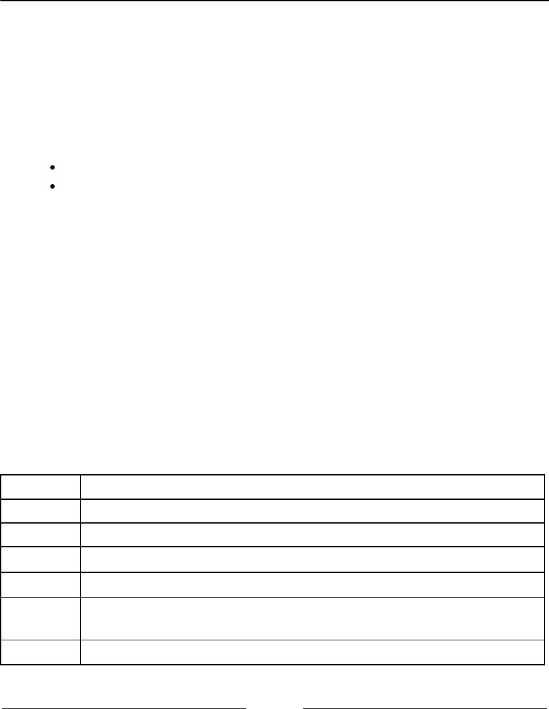
JavaScript – A Quick Overview Chapter 1
[ 21 ]
The output will be as follows:
typeof num: number
typeof Packt: string
typeof true: boolean
typeof [1,2,3]: object
typeof {name:John}: object
According to the specification, there are two data types in JavaScript:
Primitive data types: Null, undefined, string, number, boolean, and symbol
Derived data types/objects: JavaScript objects, including functions, arrays, and
regular expressions
JavaScript also supports the delete operator, which deletes a property from an object:
var myObj = {name: 'John', age: 21};
delete myObj.age;
console.log(myObj); //outputs Object {name: "John"}
In this book's algorithms, we will be using some of these operators.
Truthy and falsy
In JavaScript, true and false are a little bit tricky. In most languages, the boolean values
true and false represent the true/false results. In JavaScript, a string such as Packt
evaluates to true.
The following table can help us better understand how true and false work in JavaScript:
Value Type Result
undefined false
null false
Boolean
true is true and false is false
Number
The result is false for +0, -0, or NaN; otherwise, the result is true
String
The result is false if the string is empty (length is 0); otherwise, the result is
true (length >= 1)
Object
true
JavaScript – A Quick Overview Chapter 1
[ 22 ]
Let's consider some examples and verify their output:
function testTruthy(val) {
return val ? console.log('truthy') : console.log('falsy');
}
testTruthy(true); // true
testTruthy(false); // false
testTruthy(new Boolean(false)); // true (object is always true)
testTruthy(''); // false
testTruthy('Packt'); // true
testTruthy(new String('')); // true (object is always true)
testTruthy(1); // true
testTruthy(-1); // true
testTruthy(NaN); // false
testTruthy(new Number(NaN)); // true (object is always true)
testTruthy({}); // true (object is always true)
var obj = { name: 'John' };
testTruthy(obj); // true
testTruthy(obj.name); // true
testTruthy(obj.age); // age (property does not exist)
Functions of the equals operators (== and ===)
The two equals operators supported by JavaScript can cause a little bit of confusion when
working with them.
When using ==, values can be considered equal even when they are of different types. This
can be confusing even for a senior JavaScript developer. Let's analyze how == works using
the following table:
Type(x) Type(y) Result
null undefined
true
undefined null
true
Number String
x == toNumber(y)
String Number
toNumber(x) == y
Boolean Any
toNumber(x) == y

JavaScript – A Quick Overview Chapter 1
[ 23 ]
Any Boolean
x == toNumber(y)
String or Number Object
x == toPrimitive(y)
Object String or number
toPrimitive(x) == y
If x and y are of the same type, then JavaScript will use the equals method to compare the
two values or objects. Any other combination that is not listed in the table gives a false
result.
The toNumber and toPrimitive methods are internal and evaluate the values according
to the tables that follow.
The toNumber method is as follows:
Value type Result
undefined
This is NaN
null
This is +0
Boolean
If the value is true, the result is 1; if the value is false, the result is +0
Number This is the value of the number
Finally, toPrimitive is as follows:
Value Type Result
Object
If valueOf returns a primitive value, it returns the primitive value;
otherwise, if toString returns a primitive value, it returns the primitive
value and otherwise returns an error
Let's verify the results of some examples. First, we know that the output of the following
code is true (string length > 1):
console.log('packt' ? true : false);
Now, what about the following code? Let's take a look:
console.log('packt' == true);
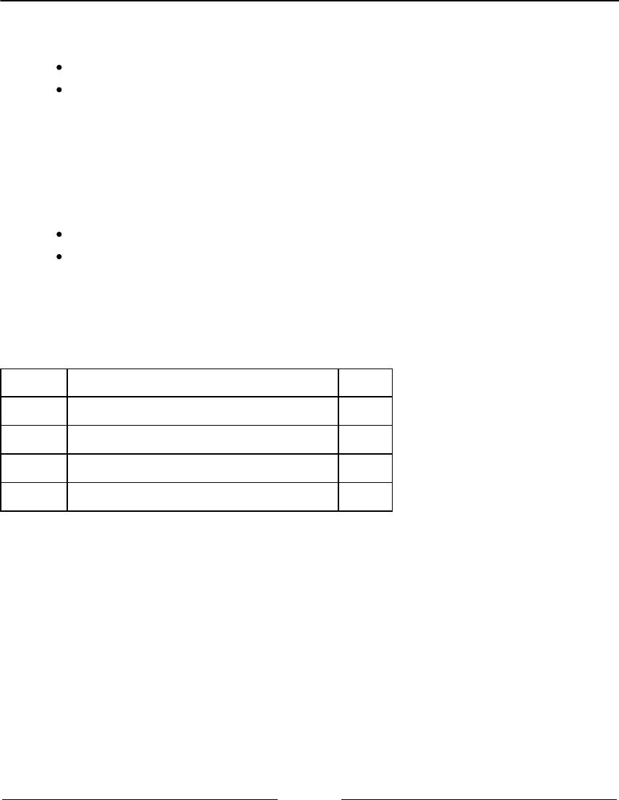
JavaScript – A Quick Overview Chapter 1
[ 24 ]
The output is false, so let's understand why:
First, it converts the boolean value using toNumber, so we have packt == 1.
Then, it converts the string value using toNumber. Since the string consists of
alphabetical characters, it returns NaN, so we have NaN == 1, which is false.
What about the following code? Let's take a look:
console.log('packt' == false);
The output is also false, and the following is why:
First, it converts the boolean value using toNumber, so we have packt == 0.
Then, it converts the string value using toNumber. Since the string consists of
alphabetical characters, it returns NaN, so we have NaN == 0, which is false.
What about the === operator? This is much easier. If we are comparing two values of
different types, the result is always false. If they have the same type, they are compared
according to the following table:
Type(x) Values Result
Number
x has the same value as y (but not NaN)
true
String
x and y are identical characters
true
Boolean
x and y are both true or both false
true
Object
x and y reference the same object
true
If x and y are different types, then the result is false. Let's consider some examples:
console.log('packt' === true); //false
console.log('packt' === 'packt'); //true
var person1 = {name:'John'};
var person2 = {name:'John'};
console.log(person1 === person2); //false, different objects

JavaScript – A Quick Overview Chapter 1
[ 25 ]
Control structures
JavaScript has a similar set of control structures as the C and Java languages. Conditional
statements are supported by if...else and switch. Loops are supported by the while,
do...while, and for constructs.
Conditional statements
The first conditional statement we will take a look at is the if...else construct. There are
a few ways we can use the if...else construct.
We can use the if statement if we want to execute a block of code only if the condition
(expression) is true, as follows:
var num = 1;
if (num === 1) {
console.log('num is equal to 1');
}
We can use the if...else statement if we want to execute a block of code and the
condition is true or another block of code just in case the condition is false (else), as
follows:
var num = 0;
if (num === 1) {
console.log('num is equal to 1');
} else {
console.log('num is not equal to 1, the value of num is ' + num);
}
The if...else statement can also be represented by a ternary operator. For example, take
a look at the following if...else statement:
if (num === 1) {
num--;
} else {
num++;
}
It can also be represented as follows:
(num === 1) ? num-- : num++;

JavaScript – A Quick Overview Chapter 1
[ 26 ]
Also, if we have several expressions, we can use if...else several times to execute
different blocks of code based on different conditions, as follows:
var month = 5;
if (month === 1) {
console.log('January');
} else if (month === 2) {
console.log('February');
} else if (month === 3) {
console.log('March');
} else {
console.log('Month is not January, February or March');
}
Finally, we have the switch statement. If the condition we are evaluating is the same as the
previous one (however, it is being compared to different values), we can use the switch
statement:
var month = 5;
switch (month) {
case 1:
console.log('January');
break;
case 2:
console.log('February');
break;
case 3:
console.log('March');
break;
default:
console.log('Month is not January, February or March');
}
One thing that is very important in a switch statement is the use of the case and break
keywords. The case clause determines whether the value of switch is equal to the value of
the case clause. The break statement stops the switch statement from executing the rest
of the statement (otherwise, it will execute all the scripts from all case clauses below the
matched case until a break statement is found in one of the case clauses). Finally, we have
the default statement, which is executed by default if none of the case statements are
true (or if the executed case statement does not have the break statement).

JavaScript – A Quick Overview Chapter 1
[ 27 ]
Loops
Loops are often used when we work with arrays (which are the subject of the next chapter).
Specifically, we use the for loop in our algorithms.
The for loop is the same as in C and Java. It consists of a loop counter that is usually
assigned a numeric value, then the variable is compared against another value (the script
inside the for loop is executed while this condition is true), and finally, the numeric value
is increased or decreased.
In the following example, we have a for loop. It outputs the value of i on the console,
where i is less than 10; i is initiated with
0
, so the following code will output the values
0
to 9:
for (var i = 0; i < 10; i++) {
console.log(i);
}
The next loop construct we will look at is the while loop. The block of code inside the
while loop is executed while the condition is true. In the following code, we have a
variable, i, initiated with the value
0
, and we want the value of i to be output while i is
less than 10 (or less than or equal to 9). The output will be the values from
0
to 9:
var i = 0;
while (i < 10) {
console.log(i);
i++;
}
The do...while loop is similar to the while loop. The only difference is that in the while
loop, the condition is evaluated before executing the block of code, and in the do...while
loop, the condition is evaluated after the block of code is executed. The do...while loop
ensures that the block of code is executed at least once. The following code also outputs the
values from
0
to 9:
var i = 0;
do {
console.log(i);
i++;
} while (i < 10);

JavaScript – A Quick Overview Chapter 1
[ 28 ]
Functions
Functions are very important when working with JavaScript. We will also use functions in
our examples.
The following code demonstrates the basic syntax of a function. It does not have arguments
or the return statement:
function sayHello() {
console.log('Hello!');
}
To execute this code, we simply use the following statement:
sayHello();
We can also pass arguments to a function. Arguments are variables with which a function is
supposed to do something. The following code demonstrates how to use arguments with
functions:
function output(text) {
console.log(text);
}
To use this function, we can use the following code:
output('Hello!');
You can use as many arguments as you like, as follows:
output('Hello!', 'Other text');
In this case, only the first argument is used by the function, and the second one is ignored.
A function can also return a value, as follows:
function sum(num1, num2) {
return num1 + num2;
}
This function calculates the sum of two given numbers and returns its result. We can use it
as follows:
var result = sum(1, 2);
output(result); // outputs 3

JavaScript – A Quick Overview Chapter 1
[ 29 ]
Object-oriented programming in JavaScript
JavaScript objects are very simple collections of name-value pairs. There are two ways of
creating a simple object in JavaScript. The first way is as follows:
var obj = new Object();
And the second way is as follows:
var obj = {};
We can also create an entire object, as follows:
obj = {
name: {
first: 'Gandalf',
last: 'the Grey'
},
address: 'Middle Earth'
};
As we can see, to declare a JavaScript object, [key, value] pairs are used, where the key can be
considered an attribute of the object and the value is the property value. All classes that we
will create in this book are JavaScript objects, such as Stack, Set, LinkedList,
Dictionary, Tree, Graph, and so on.
In Object-oriented programming (OOP), an object is an instance of a class. A class defines
the characteristics of the object. For our algorithms and data structures, we will create some
classes that will represent them. This is how we can declare a class (constructor) that
represents a book:
function Book(title, pages, isbn) {
this.title = title;
this.pages = pages;
this.isbn = isbn;
}
To instantiate this class, we can use the following code:
var book = new Book('title', 'pag', 'isbn');
Then, we can access its properties and update them as follows:
console.log(book.title); // outputs the book title
book.title = 'new title'; // update the value of the book title
console.log(book.title); // outputs the updated value
JavaScript – A Quick Overview Chapter 1
[ 30 ]
A class can also contain functions (generally also referred to as methods). We can declare
and use a function/method as the following code demonstrates:
Book.prototype.printTitle = function() {
console.log(this.title);
};
book.printTitle();
We can declare functions directly inside the class definition as well:
function Book(title, pages, isbn) {
this.title = title;
this.pages = pages;
this.isbn = isbn;
this.printIsbn = function() {
console.log(this.isbn);
};
}
book.printIsbn();
In the prototype example, the printTitle function will be shared
between all the instances and only one copy will be created. When we use
a class-based definition, as in the previous example, each instance will
have its own copy of the functions. Using the prototype method saves
memory and processing cost regarding assigning the functions to the
instance. However, you can only declare public functions and properties
using the prototype method. With a class-based definition, you can
declare private functions and properties, and the other methods inside
the class can also access them. ECMAScript 2015 (ES6) introduces a
simplified syntax like the class-based example and it is prototype-based.
We will discuss more on this later in this chapter.
Debugging and tools
Knowing how to program with JavaScript is important, but so is knowing how to debug
your code. Debugging is very useful in helping you find bugs in your code, but it can also
help you execute your code at a lower speed so that you can see everything that is
happening (the stack of methods called, variable assignment, and so on). It is highly
recommended that you spend some time debugging the source code of this book to see
every step of the algorithm (it might help you understand it better as well).
JavaScript – A Quick Overview Chapter 1
[ 31 ]
Firefox, Safari, Edge, and Chrome support debugging. A great tutorial from Google that
shows you how to use Google Developer Tools to debug JavaScript can be found
at https://developer.chrome.com/devtools/docs/javascript-debugging.
You can use any text editor of your preference. However, there are other great tools that can
help you be more productive when working with JavaScript as well, which are listed as
follows:
WebStorm: This is a very powerful JavaScript IDE with support for the latest
web technologies and frameworks. It is a paid IDE, but you can download a 30-
day trial version (http://www.jetbrains.com/webstorm).
Sublime Text: This is a lightweight text editor and you can customize it by
installing plugins. You can buy the license to support the development team, but
you can also use it for free (the trial version does not expire)
at http://www.sublimetext.com.
Atom: This is also a free text editor created by GitHub. It has great support for
JavaScript and it can also be customized by installing plugins (https://atom.io).
Visual Studio Code: This is a free and open source code editor created by
Microsoft, written with TypeScript. It has JavaScript autocomplete functionality
with IntelliSense and provides built-in debug capability directly from the editor.
It can also be customized by installing plugins (https://code.visualstudio.
com).
All of the aforementioned editors are available for Windows, Linux, and Mac OS.
Debugging with VSCode
To debug JavaScript or ECMAScript code directly from VSCode, first, we need to install the
Debugger for Chrome extension (https://goo.gl/QpXWGM).
Next, open the Web Server for Chrome extension and open the link to see the book
examples in the browser (the default URL is http://127.0.0.1:8887/examples).
JavaScript – A Quick Overview Chapter 1
[ 32 ]
The following screenshot demonstrates how to debug directly from the editor:
In the editor, open the JavaScript file you want to debug, pass the mouse pointer1.
near the line numbers, and click on the line to add a breakpoint (as demonstrated
by 1 in the preceding screenshot). This is where the debugger will stop so we can
analyze the code.
Once the Web Server is up and running, click on the Debug view (2), select2.
Chrome (3), and click on the Play icon to initiate the debugging process.
Chrome will be opened automatically. Navigate to the desired example to evoke3.
the code we want to debug. Once the line we added the breakpoint to is reached
by the debugger, the process will stop and the editor will receive the focus.
We can control how the code is debugged using the top toolbar (4). We can4.
resume the process, go to a method call, go to the next line, and restart and stop
the process. It is the same behavior we have in the debugger in Chrome and other
browsers.
The advantage of using this built-in debug functionality is that we can do5.
everything from the editor (coding, debugging, and testing). And we also have
the variables declared and call stack, we can watch variables and expressions (5),
hover the mouse over a variable to see its current value (6), and see the console
output as well (7).

JavaScript – A Quick Overview Chapter 1
[ 33 ]
The source code of this book was developed using Visual Studio Code and the code bundle
also contains configured launch tasks so you can debug the code and the tests directly from
the VSCode (all details are in the .vscode/launch.json file). All extensions
recommended to run the source code from this book are also listed in the
.vscode/extensions.json file.
Summary
In this chapter, we learned how to set up the development environment to be able to create
or execute the examples in this book.
We also covered the basics of the JavaScript language that are needed prior to getting
started with developing the algorithms and data structures covered in this book.
In the next chapter, we will learn about new functionalities introduced to JavaScript since
2015 and also how to leverage static typing and error checking using TypeScript.
2
ECMAScript and TypeScript
Overview
The JavaScript language evolves every year. Since 2015, there has been a new version
released every year, which we call ECMAScript, and as JavaScript is a very powerful
language, it is also used for enterprise development. One of the capabilities that really helps
in this type of development (among other types of application) is typed variables, which we
now have, thanks to TypeScript, a superset of JavaScript.
In this chapter, you will learn some functionalities that were introduced to JavaScript since
2015, and also the advantages of using a typed version of JavaScript in our projects. We will
cover the following:
Introduction to ECMAScript
JavaScript in the browser versus in the server
Introduction to TypeScript
ECMAScript or JavaScript?
When working with JavaScript, we find the term ECMAScript very often in books, blog
posts, video courses, and so on. What does ECMAScript have to do with JavaScript, and is
there a difference?
ECMA is an organization that standardizes information. Long story short, a long time ago,
JavaScript was submitted to ECMA for standardization. This resulted in a new language
standard, which we know as ECMAScript. JavaScript is an implementation of this
specification (the most popular), which is known as ActionScript.

ECMAScript and TypeScript Overview Chapter 2
[ 35 ]
ES6, ES2015, ES7, ES2016, ES8, ES2017, and
ES.Next
As we already know, JavaScript is a language that runs mostly on browsers (as well as in
servers using NodeJS, and in desktop and mobile devices), and each browser can
implement its own version of the available functionalities of JavaScript (as you will learn
later on in this book). This specific implementation is based on ECMAScript. Thus, the
browsers offer mostly the same functionalities (our JavaScript code will run in all browsers);
however, each functionality's behavior may be a little bit different from browser to browser.
All the code presented in this chapter so far is based on ECMAScript 5 (ES5 - ES is simply
short for ECMAScript), which became a standard in December 2009. ECMAScript 2015
(ES2015) was standardized in June 2015, almost 6 years after its previous edition. The name
ES6 became popular before the release of ES2015.
The committee responsible for drafting the ECMAScript specifications made the decision to
move to a yearly model to define new standards, where new features would be added as
they were approved. For this reason, ECMAScript sixth edition was renamed to
ECMAScript 2015 (ES6).
In June 2016, ECMAScript seventh edition was standardized. We know this edition as
ECMAScript 2016 or ES2016 (ES7).
In June 2017, ECMAScript eighth edition was standardized. We know this edition as
ECMAScript 2017 or ES2017 (ES8). At the time of writing this book, this is the most recent
edition of ES.
You also might see ES.Next in some resources. This term is a reference to the next edition of
ECMAScript.
In this topic, we will cover some of the new functionalities introduced in ES2015 onwards,
which will be helpful when we develop our data structures and algorithms.
The compatibility table
It is important to know that, even though ES2015 - ES2017 have already been released, its
features might not be supported by all browsers. For a better experience, it is always best to
use the latest version available for the browser you choose to use.
ECMAScript and TypeScript Overview Chapter 2
[ 36 ]
At the following links, you can verify which features are available in each browser:
ES2015 (ES6): http://kangax.github.io/compat-table/es6/
ES2016+: http://kangax.github.io/compat-table/es2016plus/
After ES5, the biggest ES release was ES2015. According to the compatibility table in the
preceding link, most of its features are available in modern browsers. Even if some of the
features of ES2016+ are not yet available, we can start using new syntax and new
functionalities today.
By default, Firefox adds support for ES as their team ships the implementation of the
functionalities.
In Google Chrome, you can enable these functionalities by enabling the Experimental
JavaScript flag by opening the URL chrome://flags/#enable-javascript-harmony,
as demonstrated in the following image:
In Microsoft Edge, you can navigate to about:flags and select the Enable experimental
JavaScript features flag (a similar process to Chrome).
ECMAScript and TypeScript Overview Chapter 2
[ 37 ]
Even with the Enable Experimental JavaScript flag enabled, some of the
ES2016+ features might not be supported in Chrome or Edge. The same
can be applied to Firefox. To know exactly which features are already
supported in each browser, please verify the compatibility table.
Using Babel.js
Babel (https://babeljs.io) is a JavaScript transpiler, also known as a source-to-source
compiler. It converts JavaScript code with ECMAScript language features to equivalent
code that uses only language features from the widely supported ES5 specification.
There are many ways of using Babel.js. One of them is installing it according to its setup
(https://babeljs.io/docs/setup). Another one is using it directly in the browser through
its Try it out option (https://babeljs.io/repl), as demonstrated in the following
screenshot:
Along with each example that will be presented in the following topics, we will also
provide a link so that you can run and test the examples in Babel.
ECMAScript 2015+ functionalities
In this topic, we will demonstrate how to use some of the functionalities of ES2015, which
may be useful in everyday JavaScript coding and which will also be useful to simplify the
examples presented in the following chapters of this book.
ECMAScript and TypeScript Overview Chapter 2
[ 38 ]
Among the functionalities, we will cover the following:
Variables with let and const
Template literals
Destructuring
Spread operator
Arrow functions using =>
Classes
Modules
let and const instead of var
Until ES5, we could declare variables in any place in our code, even if we overwrote the
variables declaration, as in the following code:
var framework = 'Angular';
var framework = 'React';
console.log(framework);
The output of the preceding code is React, as the last variable declared, named framework,
was assigned this value. In the previous code, we had two variables with the same name;
this is very dangerous and might drive the code to an incorrect output.
Other languages, such as C, Java, and C#, do not allow this behavior. With ES2015, a new
keyword was introduced, called let. let is the new var keyword, meaning we can simply
substitute the keyword var for let. In the following code, we have an example:
let language = 'JavaScript!'; // {1}
let language = 'Ruby!'; // {2} - throws error
console.log(language);
Line {2} will throw an error because a variable named language has
already been declared in the same scope (line {1}). We will discuss the let and scope of the
variables in the next topic.
The preceding code can be tested and executed
at https://goo.gl/he0udZ.
ECMAScript and TypeScript Overview Chapter 2
[ 39 ]
ES2015 also introduced the keyword const. Its behavior is the same as the keyword let;
the only difference is that a variable defined as const has a read-only value, meaning a
constant value.
Consider the following code:
const PI = 3.141593;
PI = 3.0; //throws error
console.log(PI);
When we try to assign a new value to PI or even try to declare it again as var PI or
let PI, the code will throw an error saying that PI is read-only.
Let's take a look at another example of const. We will declare an object as const:
const jsFramework = {
name: 'Angular'
};
Let's try changing the name of the jsFramework variable:
jsFramework.name = 'React';
If we try to run this code, it will work. But const variables are read-only! So why is it
possible to run the preceding code? For non-object types such as number, boolean, and even
string, this means we cannot change the variable values. When working with objects, a
read-only const allows the properties of the object to be reassigned or updated, but the
reference to the variable itself (the memory reference address) cannot be changed, meaning
it cannot be reassigned.
If we try to assign a new reference to the jsFramework variable as follows, the compiler
will complain and throw an error ("jsFramework" is read-only):
// error, cannot reassign object reference
jsFramework = {
name: 'Vue'
};
The preceding code can be executed at https://goo.gl/YUQj3r.

ECMAScript and TypeScript Overview Chapter 2
[ 40 ]
Variables scope with let and const
To understand how variables declared with the let or const keywords work, let's use the
following example (you can run the example using the following URL: https://goo.gl/
NbsVvg):
let movie = 'Lord of the Rings'; // {1}
//var movie = 'Batman v Superman'; // error movie already declared
function starWarsFan() {
const movie = 'Star Wars'; // {2}
return movie;
}
function marvelFan() {
movie = 'The Avengers'; // {3}
return movie;
}
function blizzardFan() {
const isFan = true;
let phrase = 'Warcraft'; // {4}
console.log('Before if: ' + phrase);
if (isFan) {
let phrase = 'initial text'; // {5}
phrase = 'For the Horde!'; // {6}
console.log('Inside if: ' + phrase);
}
phrase = 'For the Alliance!'; // {7}
console.log('After if: ' + phrase);
}
console.log(movie); // {8}
console.log(starWarsFan()); // {9}
console.log(marvelFan()); // {10}
console.log(movie); // {11}
blizzardFan(); // {12}
This will be the output from the previous code:
Lord of the Rings
Star Wars
The Avengers
The Avengers
Before if: Warcraft
Inside if: For the Horde!
After if: For the Alliance!
ECMAScript and TypeScript Overview Chapter 2
[ 41 ]
The following is an explanation of why we got this output:
In line {1}, we declared a movie variable with the value Lord of the Rings,
and we output its value in line {8}. This variable has a global scope, as you
learned in the Variable scope section of this chapter.
In line {9}, we executed the starWarsFan function. Inside this function, we also
declared a variable named movie in line {2}. The output from this function is
Star Wars because the variable from line {2} has a local scope, meaning it is
only valid inside this function.
In line {10}, we executed the marvelFan function. Inside this function, we
changed the value of the movie variable (line {3}). This variable made a
reference to the global variable declared in line {1}. Therefore, we got the output
The Avengers in line {10} and in line {11}, where we output the global
variable.
Finally, we executed the blizzardFan function in line {12}. Inside this function,
we declared a variable named phrase (line {4}) with the scope of the function.
Then, in line {5}, again, we will declare a variable named phrase, but this time,
this variable will only have a scope inside the if statement.
In line {6}, we changed the value of phrase. As we are still inside the if
statement, only the variable declared in line {5} would have its value changed.
Then, in line {7}, we again changed the value of phrase, but as we are not inside
the block of the if statement, the value of the variable declared in line {4} is
changed.
This scope behavior is the same as in other programming languages, such as Java or C.
However, this was only introduced in JavaScript through ES2015 (ES6).
Note that in the code presented in the section, we are mixing let and
const. Which one should we use? Some developers (and also some lint
tools) prefer using const if the reference of the variable does not change.
However, this is a matter of personal preference; there is no wrong choice!
Template literals
Template literals are a nice functionality because we can create strings without the need to
concatenate the values.
ECMAScript and TypeScript Overview Chapter 2
[ 42 ]
For example, consider the following examples written with ES5:
const book = {
name: 'Learning JavaScript DataStructures and Algorithms'
};
console.log('You are reading ' + book.name + '.,\n and this is a new line\n
and so is this.');
We can improve the syntax of the previous console.log output with the following code:
console.log(`You are reading ${book.name}.,
and this is a new line
and so is this.`);
Template literals are enclosed by backticks (`). To interpolate a variable value, we will
simply set the variable value inside a dollar sign and curly braces (${}), as we did with
book.name.
Template literals can also be used for multiline strings. There is no need to use \n anymore.
Simply hit Enter on the keyboard to take the string to a new line, as was done with and
this is a new line in the previous example.
This functionality will be very useful in our examples to simplify the output!
The preceding examples can be executed at https://goo.gl/4N36CS.
Arrow functions
Arrow functions are a great way of simplifying the syntax of functions in ES2015. Consider
the following example:
var circleAreaES5 = function circleArea(r) {
var PI = 3.14;
var area = PI * r * r;
return area;
};
console.log(circleAreaES5(2));
ECMAScript and TypeScript Overview Chapter 2
[ 43 ]
We can simplify the syntax of the preceding code to the following code:
const circleArea = r => { // {1}
const PI = 3.14;
const area = PI * r * r;
return area;
};
console.log(circleArea(2));
The main difference is in line {1} of the example, on which we can omit the keyword
function using =>.
If the function has a single statement, we can use a simpler version, by omitting the
keyword return and the curly brackets as demonstrated in the following code snippet:
const circleArea2 = r => 3.14 * r * r;
console.log(circleArea2(2));
If the function does not receive any argument, we use empty parentheses, which we would
usually use in ES5:
const hello = () => console.log('hello!');
hello();
The preceding examples can be executed at https://goo.gl/nM414v.
Default parameter values for functions
With ES2015, it is also possible to define default parameter values for functions. The
following is an example:
function sum(x = 1, y = 2, z = 3) {
return x + y + z;
}
console.log(sum(4, 2)); // outputs 9
As we are not passing z as a parameter, it will have a value of 3 by default. So, 4 + 2 + 3
== 9.
ECMAScript and TypeScript Overview Chapter 2
[ 44 ]
Before ES2015, we would have to write the preceding function as in the following code:
function sum(x, y, z) {
if (x === undefined) x = 1;
if (y === undefined) y = 2;
if (z === undefined) z = 3;
return x + y + z;
}
Or, we could also write the code as follows:
function sum() {
var x = arguments.length > 0 && arguments[0] !== undefined ? arguments[0]
: 1;
var y = arguments.length > 1 && arguments[1] !== undefined ? arguments[1]
: 2;
var z = arguments.length > 2 && arguments[2] !== undefined ? arguments[2]
: 3;
return x + y + z;
}
JavaScript functions also have a built-in object called the arguments
object. The arguments object is an array of the arguments used when the
function is called. We can dynamically access and use the arguments even
if we do not know the argument name.
With ES2015, we can save a few lines of code using the default parameter values
functionality.
The preceding example can be executed at https://goo.gl/AP5EYb.
Declaring the spread and rest operators
In ES5, we can turn arrays into parameters using the apply() function. ES2015 has the
spread operator (...) for this purpose. For example, consider the sum function we declared
in the previous topic. We can execute the following code to pass the x, y, and z parameters:
let params = [3, 4, 5];
console.log(sum(...params));
ECMAScript and TypeScript Overview Chapter 2
[ 45 ]
The preceding code is the same as the code written in ES5, as follows:
console.log(sum.apply(undefined, params));
The spread operator (...) can also be used as a rest parameter in functions to replace
arguments. Consider the following example:
function restParamaterFunction(x, y, ...a) {
return (x + y) * a.length;
}
console.log(restParamaterFunction(1, 2, 'hello', true, 7));
The preceding code is the same as the following (also outputs 9 in the console):
function restParamaterFunction(x, y) {
var a = Array.prototype.slice.call(arguments, 2);
return (x + y) * a.length;
}
console.log(restParamaterFunction(1, 2, 'hello', true, 7));
The spread operator example can be executed at https://goo.gl/8equk5,
and the rest parameter example can be executed
at https://goo.gl/LaJZqU.
Enhanced object properties
ES6 introduces a concept called array destructuring, which is a way of initializing variables
at once. For example, consider the following:
let [x, y] = ['a', 'b'];
Executing the preceding code is the same as doing the following:
let x = 'a';
let y = 'b';
Array destructuring can also be performed to swap values at once without the need to
create temp variables, as follows:
[x, y] = [y, x];

ECMAScript and TypeScript Overview Chapter 2
[ 46 ]
The preceding code is the same as the following one:
var temp = x;
x = y;
y = temp;
This will be very useful when you learn sorting algorithms as these swap values are very
common.
There is also another functionality, called property shorthand, which is another way of
destructuring objects. For example, consider the following example:
let [x, y] = ['a', 'b'];
let obj = { x, y };
console.log(obj); // { x: "a", y: "b" }
The preceding code is the same as doing the following:
var x = 'a';
var y = 'b';
var obj2 = { x: x, y: y };
console.log(obj2); // { x: "a", y: "b" }
The last functionality that we will discuss in this topic is called the shorthand method
names. This allows developers to declare functions inside objects as if they were properties.
The following is an example:
const hello = {
name: 'abcdef',
printHello() {
console.log('Hello');
}
};
console.log(hello.printHello());
The preceding code can also be written as follows:
var hello = {
name: 'abcdef',
printHello: function printHello() {
console.log('Hello');
}
};
console.log(hello.printHello());
ECMAScript and TypeScript Overview Chapter 2
[ 47 ]
The three examples presented can be executed at:
Array destructuring: https://goo.gl/VsLecp
Variable swap: https://goo.gl/EyFAII
Property shorthand: https://goo.gl/DKU2PN
Object-oriented programming with classes
ES2015 also introduced a cleaner way of declaring classes. You learned that we can declare
a class named Book in the object-oriented programming section this way:
function Book(title, pages, isbn) { // {1}
this.title = title;
this.pages = pages;
this.isbn = isbn;
}
Book.prototype.printTitle = function() {
console.log(this.title);
};
With ES2015, we can simplify the syntax and use the following code:
class Book { // {2}
constructor(title, pages, isbn) {
this.title = title;
this.pages = pages;
this.isbn = isbn;
}
printIsbn() {
console.log(this.isbn);
}
}
We can simply use the keyword class and declare a class with a constructor function
and other functions as well—for example, the printIsbn function. ES2015 classes are
syntactical sugar over the prototype-based syntax. The code for the Book class declared in
line {1} has the same behavior and output as the code declared in line {2}:
let book = new Book('title', 'pag', 'isbn');
console.log(book.title); // outputs the book title
book.title = 'new title'; // update the value of the book title
console.log(book.title); // outputs the book title
ECMAScript and TypeScript Overview Chapter 2
[ 48 ]
The preceding example can be executed at https://goo.gl/UhK1n4.
Inheritance
With ES2015, there is also a simplified syntax to use inheritance between classes. Let's look
at an example:
class ITBook extends Book { // {1}
constructor(title, pages, isbn, technology) {
super(title, pages, isbn); // {2}
this.technology = technology;
}
printTechnology() {
console.log(this.technology);
}
}
let jsBook = new ITBook('Learning JS Algorithms', '200', '1234567890',
'JavaScript');
console.log(jsBook.title);
console.log(jsBook.printTechnology());
We can extend another class and inherit its behavior using the keyword extends (line {1}).
Inside the constructor, we can also refer to the constructor superclass using the keyword
super (line {2}).
Although the syntax of this new way of declaring classes in JavaScript is very similar to
other programming languages such as Java and C/C++, it is good to remember that
JavaScript object-oriented programming is done through a prototype.
The preceding example can be executed at https://goo.gl/hgQvo9.

ECMAScript and TypeScript Overview Chapter 2
[ 49 ]
Working with getters and setters
It is also possible to create getter and setter functions for the class attributes with ES2015.
Although class attributes are not private as in other object-oriented languages (the
encapsulation concept), it is good to follow a naming pattern.
The following is an example of a class declaring a get and set function along with its use:
class Person {
constructor(name) {
this._name = name; // {1}
}
get name() { // {2}
return this._name;
}
set name(value) { // {3}
this._name = value;
}
}
let lotrChar = new Person('Frodo');
console.log(lotrChar.name); // {4}
lotrChar.name = 'Gandalf'; // {5}
console.log(lotrChar.name);
lotrChar._name = 'Sam'; // {6}
console.log(lotrChar.name);
To declare a get and set function, we simply need to use the keyword get or set in front
of the function name (lines {2} and {3}), which is the name we want to expose and to be
used. We can declare the class attributes with the same name, or we can use an underscore
in front of the attribute name (line {1}) to make it feel like the attribute is private.
Then, to use the get or set functions, we can simply refer to their names as if it was a
simple attribute (lines {4} and {5}).
The _name attribute is not private, and we can still access it (line {6}). However, we will
talk about this later on in this book.
This example can be executed at https://goo.gl/SMRYsv.
ECMAScript and TypeScript Overview Chapter 2
[ 50 ]
Exponentiation operator
The exponentiation operator may come in handy when working with math. Let's use the
formula to calculate the area of a circle as an example:
const area = 3.14 * r * r;
We could also use the Math.pow function to write the same code:
const area = 3.14 * Math.pow(r, 2);
ES2016 introduced **, where ** is designed to be the new exponentiation operator. We can
calculate the area of a circle using the exponentiation operator as follows:
const area = 3.14 * (r ** 2);
This example can be executed at https://goo.gl/Z6dCFB.
ES2015+ also has some other functionalities; among them, we can list iterators, typed arrays,
Set, Map, WeakSet, WeakMap, tail calls, for..of, Symbol, Array.prototype.includes,
trailing commas, string padding, object static methods, and so on. We will cover some of
these other functionalities in other chapters of this book.
You can check the list of all available JavaScript and ECMAScript
functionalities at https://developer.mozilla.org/en-US/docs/Web/
JavaScript.
Modules
Node.js developers are already familiar with working with modules by using the require
statement (CommonJS modules). There is also another popular JavaScript standard for
modules which is the Asynchronous Module Definition (AMD). RequireJS is the most
popular AMD implementation. ES2015 introduced an official module feature in the
JavaScript specification. Let's create and use some modules.

ECMAScript and TypeScript Overview Chapter 2
[ 51 ]
The first module we will create contains two functions to calculate the area of geometric
figures. In a file (17-CalcArea.js), add the following code:
const circleArea = r => 3.14 * (r ** 2);
const squareArea = s => s * s;
export { circleArea, squareArea }; // {1}
This means we are exposing both functions so other files can use them ({1}). Only exported
members are visible by other modules or files.
In our main file for this example (17-ES2015-ES6-Modules.js), we will use the functions
declared in the 17-CalcArea.js file. The following snippet is the code that consumes the
two functions:
import { circleArea, squareArea } from './17-CalcArea'; // {2}
console.log(circleArea(2));
console.log(squareArea(2));
First, we need to import the functions we want to use in this file ({2}), and after importing
them, we can evoke them.
If we wanted to use the circleArea function, we could import only this function as well:
import { circleArea } from './17-CalcArea';
Basically, modules are JavaScript code declared in separate files. We can import the
functions, variables, and classes from other files directly in the JavaScript code (without the
need to import several files in the HTML first—and in the correct order—as we used to do a
few years ago before JavaScript was modern and popular). Modules allow us to better
organize our code in case we are creating a library or working on a big project.
There is also the option to use the exported member with a different name when we do the
import, as follows:
import { circleArea as circle } from './17-CalcArea';
Or, we can rename the name of the exported functions while exporting them:
export { circleArea as circle, squareArea as square };

ECMAScript and TypeScript Overview Chapter 2
[ 52 ]
In this case, the exported members need to be imported with the exposed name, not the
name used internally, as follows:
import { circle, square } from './17-CalcArea';
There are also a few different ways we can import the functions in a different module:
import * as area from './17-CalcArea';
console.log(area.circle(2));
console.log(area.square(2));
In this case, we can import the entire module as a single variable and evoke the exported
members as if they were attributes or methods of a class.
It is also possible to add the export keyword in front of each function or variable we want
to expose. We do not need to have an export declaration at the end of the file:
export const circleArea = r => 3.14 * (r ** 2);
export const squareArea = s => s * s;
Suppose we only have a single member in the module and we want to export it. We can use
the export default keyword as follows:
export default class Book {
constructor(title) {
this.title = title;
}
printTitle() {
console.log(this.title);
}
}
To import the preceding class in a different module, we can use the following code:
import Book from './17-Book';
const myBook = new Book('some title');
myBook.printTitle();
Note that in this case, we do not need to use the curly brackets ({}) around the name of the
class. We only use curly brackets in case the module has more than one member exported.
We will use modules when we create our data structures and algorithms library later on in
this book.
ECMAScript and TypeScript Overview Chapter 2
[ 53 ]
For more information about ES2015 modules, please read
at http://exploringjs.com/es6/ch_modules.html. You can also check
out the complete source code for this example by downloading the source
code bundle of this book.
Running ES2015 modules in the browser and with
Node.js
Let's try to run the 17-ES2015-ES6-Modules.js file with Node.js by changing the
directory and then executing the node command as follows:
cd path-source-bundle/examples/chapter01
node 17-ES2015-ES6-Modules
We will get an error, SyntaxError: Unexpected token import. This is because at the
time of writing this book, Node.js does not support ES2015 native modules. Node.js uses
CommonJS module require syntax, and this means we need to transpile our ES2015 so
Node can understand it. There are different tools we can use for this task. To keep things
simple, we will use Babel CLI.
The complete setup and detailed use of Babel can be found at https://
babeljs.io/docs/setup and https://babeljs.io/docs/usage/cli/.
The best approach would be to create a local project and configure it to use Babel.
Unfortunately, all of these details are not in the scope of this book (this is a subject for a
Babel book). For our example, and to keep things simple, we will use Babel CLI globally by
installing it using npm:
npm install -g babel-cli
If you use Linux or Mac OS, you might want to use sudo in the front of the command for
admin access (sudo npm install -g babel-cli).
ECMAScript and TypeScript Overview Chapter 2
[ 54 ]
From inside the chapter01 directory, we will compile the three JavaScript files with
modules we created previously to CommonJS transpile code with Babel, so we can use the
code using Node.JS. We will transpile the file to the chapter01/lib folder using the
following commands:
babel 17-CalcArea.js --out-dir lib
babel 17-Book.js --out-dir lib
babel 17-ES2015-ES6-Modules.js --out-dir lib
Next, let's create a new JavaScript file named 17-ES2015-ES6-Modules-node.js so we
can use the area functions and the Book class:
const area = require('./lib/17-CalcArea');
const Book = require('./lib/17-Book');
console.log(area.circle(2));
console.log(area.square(2));
const myBook = new Book('some title');
myBook.printTitle();
The code is basically the same, but the difference is that since Node.js does not support the
import syntax (for now), we need to use the require keyword.
To execute the code, we can use the following command:
node 17-ES2015-ES6-Modules-node
In the following screenshot, we can see the commands and the output, so we can confirm
that the code works with Node.js:
ECMAScript and TypeScript Overview Chapter 2
[ 55 ]
Using native ES2015 imports in Node.js
It would be nice if we could use the ES2015 imports in Node.js so that we don't need to
transpile our code. Starting with Node 8.5, we can use ES2015 imports in Node.js as an
experimental feature.
For this example, we will create a new folder inside chapter01 called 17-ES2015-
Modules-node. We will copy the files 17-CalcArea.js, 17-Book.js, and 17-ES2015-
ES6-Modules.js to this folder and we will change the extension from js to mjs (the
.mjs extension is a requirement so that this can work). In the 17-ES2015-ES6-
Modules.mjs file, we will update the imports, adding the .mjs extension to it as follows:
import * as area from './17-CalcArea.mjs';
import Book from './17-Book.mjs';
To execute the code, we will run the node command, passing the --experimental-
modules to it as in the following code:
cd 17-ES2015-Modules-node
node --experimental-modules 17-ES2015-ES6-Modules.mjs
In the following screenshot, we can see the commands and the output:
At the time of writing this book, the target for Node.js to support ES2015 import feature is
Node 10 LTS.
More examples and information about ES2015 import native support in
Node.js can be found
at https://github.com/nodejs/node-eps/blob/master/002-es-modules.
md.
ECMAScript and TypeScript Overview Chapter 2
[ 56 ]
Running ES2015 modules in the browser
There are different approaches to run the code with ES2015 in the browser. The first one is
to ship the traditional bundle (a JavaScript file with our code transpiled to ES5). We can
create a bundle using popular tools such as Browserify or Webpack. In this case, we create
the distribution file (bundle), and in our HTML file, we import it as any other JavaScript
code:
<script src="./lib/17-ES2015-ES6-Modules-bundle.js"></script>
The ES2015 modules support finally landed in browsers at the beginning of 2017. At the
time of writing this book, it is still experimental and not supported by all modern browsers.
The current support for this feature (and how to enable it in an experimental mode) can be
verified at http://caniuse.com/#feat=es6-module, as shown in the following screenshot:
To use the import keyword in the browser, first, we need to update our code by adding the
.js extension in the import as follows:
import * as area from './17-CalcArea.js';
import Book from './17-Book.js';
ECMAScript and TypeScript Overview Chapter 2
[ 57 ]
Secondly, to import the modules we created, we simply need to add type="module" inside
the script tag:
<script type="module" src="17-ES2015-ES6-Modules.js"></script>
If we execute the code and open the Developer Tools | Network tab, we will be able to see
that all the files we created were loaded:
To keep backward compatibility with browsers that do not support this functionality, we
can use nomodule:
<script nomodule src="./lib/17-ES2015-ES6-Modules-bundle.js"></script>
Until this feature is officially supported by most modern browsers, we still need to use a
bundler tool to transpile ES2015+.
To learn more about ES2015 modules in browser, please read
https://goo.gl/cf1cGW and https://goo.gl/wBUJUo.
ES2015+ backward compatibility
Do I need to update my current JavaScript code to ES2015? The answer is only if you would
like to! ES2015+ are supersets of the JavaScript language. Everything that was standardized
as ES5 will continue working as it does today. However, you can start using ES2015+ to
leverage the new syntax and make your code simpler and easier to read.

ECMAScript and TypeScript Overview Chapter 2
[ 58 ]
In the following chapters of this book, we will use ES2015+ as much as we can. Suppose we
want to create a data structures and algorithms library from this book, and by default, we
want to support developers that want to use our library in the browser (ES5) and in the
Node.js environment. For now, the option we have is transpiling our code to Universal
Module Definition (UMD). For more information about UMD, please go
to https://github.com/umdjs/umd. We will learn more about how to transpile ES2015 code
with Babel to UMD in Chapter 4, Stacks.
Along with the ES2015+ syntax, for the examples that use modules, the source code bundle
also provides a transpiled version of the source code so that you can run the code in any
browser.
Introducing TypeScript
TypeScript is an open source, gradually typed superset of JavaScript created and
maintained by Microsoft. It was created to allow developers to supercharge the JavaScript
language and to also make it easier to scale applications. Among its main capabilities is
providing typing to JavaScript variables. Types in JavaScript enable static checking, thus
making it easier to refactor the code and find bugs. And at the end, TypeScript compiles to
simple JavaScript code!
Regarding the scope of this book, with TypeScript, we can use some object-oriented
concepts that are not available in JavaScript such as interfaces and private properties (this
can be useful when working with data structures and sorting algorithms). And of course,
we can also leverage the typing functionality, which is very important for some data
structures.
All of these functionalities are available at compile time. Once we write our code, we
compile it to plain JavaScript (ES5, ES2015+, and CommonJS, among other options).
To get started with TypeScript, we need to install it using npm:
npm install -g typescript
Next, we need to create a file with the .ts extension, such as hello-world.ts:
let myName = 'Packt';
myName = 10;

ECMAScript and TypeScript Overview Chapter 2
[ 59 ]
The preceding code is a simple ES2015 code. Now, let's compile it using the tsc command:
tsc hello-world
On the Terminal, we will get the following warning:
hello-world.ts(2,1): error TS2322: Type '10' is not assignable to type
'string'.
But if we verify the folder where we created the file, we will see it created a hello-
world.js file with the following content:
var myName = 'Packt';
myName = 10;
The previously generated code is ES5 code. Even with the error in the Terminal (which is in
fact a warning, not an error), the TypeScript compiler generated the ES5 code as it should.
This reinforces the fact that although TypeScript does all the type and error checking during
compile time, it does not prevent the compiler from generating the JavaScript code. This
means that developers can leverage all these validations while we write the code and get a
JavaScript code with less chances of errors or bugs.
Type inference
While working with TypeScript, it is very common to find code as follows:
let age: number = 20;
let existsFlag: boolean = true;
let language: string = 'JavaScript';
TypeScript allows us to assign a type to a variable. But the preceding code is verbose.
TypeScript has type inference, meaning TypeScript will verify and apply a type to the
variable automatically based on the value that was assigned to it. Let's rewrite the
preceding code with a cleaner syntax:
let age = 20; // number
let existsFlag = true; // boolean
let language = 'JavaScript'; // string
With the preceding code, TypeScript still knows that age is a number, existsFlag is a
boolean, and language is a string, so we don't need to explicitly assign a type to these
variables.
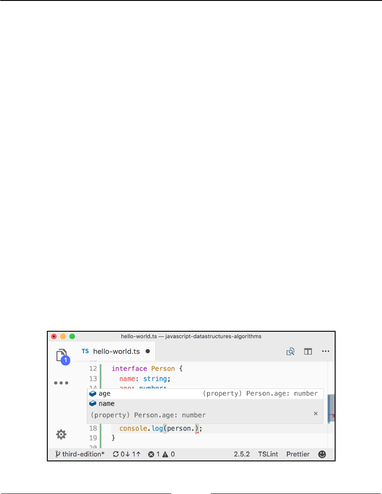
ECMAScript and TypeScript Overview Chapter 2
[ 60 ]
So, when do we type a variable? If we declare the variable and do not initialize it with a
value, then it is recommended to assign a type, as demonstrated by the following code:
let favoriteLanguage: string;
let langs = ['JavaScript', 'Ruby', 'Python'];
favoriteLanguage = langs[0];
If we do not type a variable, then it is automatically typed as any, meaning it can receive
any value, as it is in JavaScript.
Interfaces
In TypeScript, there are two concepts for interfaces. The first one is related to assigning a
type to a variable. Consider the following code:
interface Person {
name: string;
age: number;
}
function printName(person: Person) {
console.log(person.name);
}
The first concept for the TypeScript interface is that an interface is a thing. It is a description
of the attributes and methods an object must have.
This allows editors such as VSCode to have autocomplete with IntelliSense, as shown in the
following screenshot:

ECMAScript and TypeScript Overview Chapter 2
[ 61 ]
Now, let's try using the printName function:
const john = { name: 'John', age: 21 };
const mary = { name: 'Mary', age: 21, phone: '123-45678' };
printName(john);
printName(mary);
The preceding code does not have any compilation errors. The variable john has a name
and age as expected by the printName function. The variable mary has a name and age,
but also has phone information.
So, why does this code work? TypeScript has a concept called Duck Typing. If it looks like
a duck, swims like a duck, and quacks like a duck, then it must be a duck! In the example,
the variable mary behaves like the Person interface, so it must be a Person. This is a
powerful feature of TypeScript.
And after running the tsc command again, we will get the following output in the hello-
world.js file:
function printName(person) {
console.log(person.name);
}
var john = { name: 'John', age: 21 };
var mary = { name: 'Mary', age: 21, phone: '123-45678' };
The preceding code is just plain JavaScript. The code completion and type and error
checking are available in compile time only.
The second concept for the TypeScript interface is related to object-oriented programming.
This is the same concept as in other object-oriented languages such as Java, C#, Ruby, and
so on. An interface is a contract. In this contract, we can define what behavior the classes or
interfaces that will implement this contract should have. Consider the ECMAScript
standard. ECMAScript is an interface for the JavaScript language. It tells the JavaScript
language what functionalities it should have, but each browser might have a different
implementation of it.
Consider the following code:
interface Comparable {
compareTo(b): number;
}
class MyObject implements Comparable {
age: number;

ECMAScript and TypeScript Overview Chapter 2
[ 62 ]
compareTo(b): number {
if (this.age === b.age) {
return 0;
}
return this.age > b.age ? 1 : -1;
}
}
The Comparable interface tells the MyObject class that it should implement a method
called compareTo that receives an argument. Inside this method, we can code the required
logic. In this case, we are comparing two numbers, but we could use a different logic for
comparing two strings or even a more complex object with different attributes. This
interface behavior does not exist in JavaScript, but it is very helpful when working with
sorting algorithms, as an example.
Generics
Another powerful feature of TypeScript that is useful to data structures and algorithms is
the generic concept. Let's modify the Comparable interface so that we can define the type
of the object the compareTo method should receive as an argument:
interface Comparable<T> {
compareTo(b: T): number;
}
By passing the T type dynamically to the Comparable interface, between the diamond
operator <>, we can specify the argument type of the compareTo function:
class MyObject implements Comparable<MyObject> {
age: number;
compareTo(b: MyObject): number {
if (this.age === b.age) {
return 0;
}
return this.age > b.age ? 1 : -1;
}
}
This is useful so that we can make sure we are comparing objects of the same type, and by
using this functionality, we also get code completion from the editor.
ECMAScript and TypeScript Overview Chapter 2
[ 63 ]
Other TypeScript functionalities
This was a very quick introduction to TypeScript. The TypeScript documentation is a great
place for learning all the other functionalities and to dive into the details of the topics we
quickly covered in this chapter; it can be found
at https://www.typescriptlang.org/docs/home.html.
TypeScript also has an online playground (similar to Babel) that we can use to play with
some code examples, at https://www.typescriptlang.org/play/index.html.
The source code bundle of this book also contains a TypeScript version of
the JavaScript data structures and algorithms library we will develop
throughout this book as an extra resource!
TypeScript compile-time checking in JavaScript
files
Some developers still prefer using plain JavaScript to develop their code instead of
TypeScript. But it would be nice if we could use some of the type and error checking
features in JavaScript as well!
The good news is that TypeScript has a special functionality that allows us to have this
compile-time error and type checking! To use it, we need to have TypeScript installed
globally on our computer. In the first line of the JavaScript files, we want to use type and
error checking, so we simply need to add // @ts-check, as demonstrated in the following
screenshot:
ECMAScript and TypeScript Overview Chapter 2
[ 64 ]
The type checking is enabled when we add JSDoc (JavaScript documentation) to our code.
Then, if we try to pass a string to our circle (or circleArea) method, we will get a
compilation error:
Summary
In this chapter, we did an overview of some of the ECMAScript 2015+ functionalities that
will help us simplify the syntax of our upcoming examples. We also introduced TypeScript
to help us leverage static typing and error checking.
In the next chapter, we will look at our first data structure, which is the array, the most
basic data structure that many languages support natively, including JavaScript.
3
Arrays
An array is the simplest memory data structure. For this reason, all programming languages
have a built-in array datatype. JavaScript also supports arrays natively, even though its first
version was released without array support. In this chapter, we will dive into the array data
structure and its capabilities.
An array stores values that are all of the same datatype sequentially. Although JavaScript
allows us to create arrays with values from different datatypes, we will follow best practices
and assume that we cannot do this (most languages do not have this capability).
Why should we use arrays?
Let's consider that we need to store the average temperature of each month of the year for
the city that we live in. We could use something similar to the following to store this
information:
const averageTempJan = 31.9;
const averageTempFeb = 35.3;
const averageTempMar = 42.4;
const averageTempApr = 52;
const averageTempMay = 60.8;
However, this is not the best approach. If we store the temperature for only one year, we
can manage 12 variables. However, what if we need to store the average temperature for
more than one year? Fortunately, this is why arrays were created, and we can easily
represent the same information mentioned earlier as follows:
const averageTemp = [];
averageTemp[0] = 31.9;
averageTemp[1] = 35.3;
averageTemp[2] = 42.4;
averageTemp[3] = 52;
averageTemp[4] = 60.8;
Arrays Chapter 3
[ 66 ]
We can also represent the averageTemp array graphically:
Creating and initializing arrays
Declaring, creating, and initializing an array in JavaScript is really simple, as the following
shows:
let daysOfWeek = new Array(); // {1}
daysOfWeek = new Array(7); // {2}
daysOfWeek = new Array('Sunday', 'Monday', 'Tuesday', 'Wednesday',
'Thursday', 'Friday', 'Saturday'); // {3}
We can simply declare and instantiate a new array using the keyword new (line {1}). Also,
using the keyword new, we can create a new array specifying the length of the array (line
{2}). A third option would be passing the array elements directly to its constructor (line
{3}).
However, using the new keyword is not considered best practice. If we want to create an
array in JavaScript, we can assign empty brackets ([]), as in the following example:
let daysOfWeek = [];
We can also initialize the array with some elements, as follows:
let daysOfWeek = ['Sunday', 'Monday', 'Tuesday', 'Wednesday', 'Thursday',
'Friday', 'Saturday'];
If we want to know how many elements are in the array (its size), we can use the length
property. The following code will give an output of 7:
console.log(daysOfWeek.length);

Arrays Chapter 3
[ 67 ]
Accessing elements and iterating an array
To access a specific position of the array, we can also use brackets, passing the index of the
position we would like to access. For example, let's say we want to output all the elements
from the daysOfWeek array. To do so, we need to loop the array and print the elements,
starting from index
0
as follows:
for (let i = 0; i < daysOfWeek.length; i++) {
console.log(daysOfWeek[i]);
}
Let's take a look at another example. Let's say that we want to find out the first 20 numbers
of the Fibonacci sequence. The first two numbers of the Fibonacci sequence are 1 and 2, and
each subsequent number is the sum of the previous two numbers:
const fibonacci = []; // {1}
fibonacci[1] = 1; // {2}
fibonacci[2] = 1; // {3}
for (let i = 3; i < 20; i++) {
fibonacci[i] = fibonacci[i - 1] + fibonacci[i - 2]; // //{4}
}
for (let i = 1; i < fibonacci.length; i++) { // {5}
console.log(fibonacci[i]); // {6}
}
The following is the explanation for the preceding code:
In line {1}, we declared and created an array.1.
In lines {2} and {3}, we assigned the first two numbers of the Fibonacci2.
sequence to the second and third positions of the array (in JavaScript, the first
position of the array is always referenced by 0 (zero), and as there is no zero in
the Fibonacci sequence, we will skip it).
Then, all we need to do is create the third to the 20th number of the sequence (as3.
we know the first two numbers already). To do so, we can use a loop and assign
the sum of the previous two positions of the array to the current position (line
{4}, starting from index 3 of the array to the 19th index).
Then, to take a look at the output (line {6}), we just need to loop the array from4.
its first position to its length (line {5}).
Arrays Chapter 3
[ 68 ]
We can use console.log to output each index of the array (lines {5} and
{6}), or we can also use console.log(fibonacci) to output the array
itself. Most browsers have a nice array representation in console.log.
If you would like to generate more than 20 numbers of the Fibonacci sequence, just change
the number 20 to whatever number you like.
Adding elements
Adding and removing elements from an array is not that difficult; however, it can be tricky.
For the examples we will create in this section, let's consider that we have the following
numbers array initialized with numbers from
0
to 9:
let numbers = [0, 1, 2, 3, 4, 5, 6, 7, 8, 9];
Inserting an element at the end of the array
If we want to add a new element to this array (for example, the number 10), all we have to
do is reference the latest free position of the array and assign a value to it:
numbers[numbers.length] = 10;
In JavaScript, an array is a mutable object. We can easily add new
elements to it. The object will grow dynamically as we add new elements
to it. In many other languages, such as C and Java, we need to determine
the size of the array, and if we need to add more elements to the array, we
need to create a completely new array; we cannot simply add new
elements to it as we need them.
Using the push method
JavaScript API also has a method called push that allows us to add new elements to the end
of an array. We can add as many elements as we want as arguments to the push method:
numbers.push(11);
numbers.push(12, 13);
The output of the numbers array will be the numbers from
0
to 13.
Arrays Chapter 3
[ 69 ]
Inserting an element in the first position
Suppose we need to add a new element to the array (number -1) and would like to insert it
in the first position, not the last one. To do so, first we need to free the first position by
shifting all the elements to the right. We can loop all the elements of the array, starting from
the last position (value of length will be the end of the array) and shifting the previous
element (i-1) to the new position (i) to finally assign the new value we want to the first
position (index
0
). We can create a function to represent this logic or even add a new
method directly to the Array prototype, making the insertFirstPosition method
available to all array instances. The following code represents the logic described here:
Array.prototype.insertFirstPosition = function(value) {
for (let i = this.length; i >= 0; i--) {
this[i] = this[i - 1];
}
this[0] = value;
};
numbers.insertFirstPosition(-1);
We can represent this action with the following diagram:
Arrays Chapter 3
[ 70 ]
Using the unshift method
The JavaScript Array class also has a method called unshift, which inserts the values
passed in the method's arguments at the start of the array (the logic behind-the-scenes has
the same behavior as the insertFirstPosition method):
numbers.unshift(-2);
numbers.unshift(-4, -3);
So, using the unshift method, we can add the value -2 and then -3 and -4 to the
beginning of the numbers array. The output of this array will be the numbers from -4 to 13.
Removing elements
So far, you have learned how to add elements in the array. Let's take a look at how we can
remove a value from an array.
Removing an element from the end of the array
To remove a value from the end of an array, we can use the pop method:
numbers.pop();
The push and pop methods allow an array to emulate a basic stack data
structure, which is the subject of the next chapter.
The output of our array will be the numbers from -4 to 12. The length of our array is 17.
Removing an element from the first position
To remove a value from the beginning of the array, we can use the following code:
for (let i = 0; i < numbers.length; i++) {
numbers[i] = numbers[i + 1];
}
Arrays Chapter 3
[ 71 ]
We can represent the previous code using the following diagram:
We shifted all the elements one position to the left. However, the length of the array is still
the same (17), meaning we still have an extra element in our array (with an undefined
value). The last time the code inside the loop was executed, i+1 was a reference to a
position that does not exist. In some languages, such as Java, C/C++, or C#, the code would
throw an exception, and we would have to end our loop at numbers.length -1.
We have only overwritten the array's original values, and we did not really remove the
value (as the length of the array is still the same and we have this extra undefined
element).
To remove the value from the array, we can also create a removeFirstPosition method
with the logic described in this topic. However, to really remove the element from the array,
we need to create a new array and copy all values other than undefined values from the
original array to the new one and assign the new array to our array. To do so, we can also
create a reIndex method as follows:
Array.prototype.reIndex = function(myArray) {
const newArray = [];
for(let i = 0; i < myArray.length; i++ ) {
if (myArray[i] !== undefined) {
// console.log(myArray[i]);
newArray.push(myArray[i]);
}
}
return newArray;
}
Arrays Chapter 3
[ 72 ]
// remove first position manually and reIndex
Array.prototype.removeFirstPosition = function() {
for (let i = 0; i < this.length; i++) {
this[i] = this[i + 1];
}
return this.reIndex(this);
};
numbers = numbers.removeFirstPosition();
The preceding code should be used only for educational purposes and
should not be used in real projects. To remove the first element from the
array, we should always use the shift method, which is presented in the
next section.
Using the shift method
To remove an element from the beginning of the array, we can use the shift method, as
follows:
numbers.shift();
If we consider that our array has the value -4 to 12 and a length of 17 after we execute the
previous code, the array will contain the values -3 to 12 and have a length of 16.
The shift and unshift methods allow an array to emulate a basic queue
data structure, which is the subject of Chapter 5, Queues and Deques.
Adding and removing elements from a
specific position
So far, we have learned how to add elements at the end and at the beginning of an array,
and we have also learned how to remove elements from the beginning and end of an array.
What if we also want to add or remove elements from any position in our array? How can
we do this?
Arrays Chapter 3
[ 73 ]
We can use the splice method to remove an element from an array by simply specifying
the position/index that we would like to delete from and how many elements we would like
to remove, as follows:
numbers.splice(5,3);
This code will remove three elements, starting from index 5 of our array. This means
numbers[5], numbers[6], and numbers[7] will be removed from the numbers array. The
content of our array will be -3, -2, -1,
0
, 1, 5, 6, 7, 8, 9, 10, 11, and 12 (as the numbers 2, 3,
and 4 have been removed).
As with JavaScript arrays and objects, we can also use the delete
operator to remove an element from the array, for example, delete
numbers[0]. However, position
0
of the array will have the value
undefined, meaning that it would be the same as doing numbers[0] =
undefined and we would need to re-index the array. For this reason, we
should always use the splice, pop, or shift methods to remove
elements.
Now, let's say we want to insert numbers 2 to 4 back into the array, starting from position
5. We can again use the splice method to do this:
numbers.splice(5, 0, 2, 3, 4);
The first argument of the method is the index we want to remove elements from or insert
elements into. The second argument is the number of elements we want to remove (in this
case, we do not want to remove any, so we will pass the value
0
(zero)). And from the third
argument onward we have the values we would like to insert into the array (the elements 2,
3, and 4). The output will be values from -3 to 12 again.
Finally, let's execute the following code:
numbers.splice(5, 3, 2, 3, 4);
The output will be values from -3 to 12. This is because we are removing three elements,
starting from the index 5, and we are also adding the elements 2, 3, and 4, starting at index
5.

Arrays Chapter 3
[ 74 ]
Two-dimensional and multi-dimensional
arrays
At the beginning of this chapter, we used a temperature measurement example. We will
now use this example one more time. Let's consider that we need to measure the
temperature hourly for a few days. Now that we already know we can use an array to store
the temperatures, we can easily write the following code to store the temperatures over 2
days:
let averageTempDay1 = [72, 75, 79, 79, 81, 81];
let averageTempDay2 = [81, 79, 75, 75, 73, 72];
However, this is not the best approach; we can do better! We can use a matrix (a two-
dimensional array or an array of arrays) to store this information, in which each row will
represent the day, and each column will represent an hourly measurement of temperature,
as follows:
let averageTemp = [];
averageTemp[0] = [72, 75, 79, 79, 81, 81];
averageTemp[1] = [81, 79, 75, 75, 73, 73];
JavaScript only supports one-dimensional arrays; it does not support matrices. However,
we can implement matrices or any multi-dimensional array using an array of arrays, as in
the previous code. The same code can also be written as follows:
// day 1
averageTemp[0] = [];
averageTemp[0][0] = 72;
averageTemp[0][1] = 75;
averageTemp[0][2] = 79;
averageTemp[0][3] = 79;
averageTemp[0][4] = 81;
averageTemp[0][5] = 81;
// day 2
averageTemp[1] = [];
averageTemp[1][0] = 81;
averageTemp[1][1] = 79;
averageTemp[1][2] = 75;
averageTemp[1][3] = 75;
averageTemp[1][4] = 73;
averageTemp[1][5] = 73;
Arrays Chapter 3
[ 75 ]
In the previous code, we specified the value of each day and hour separately. We can also
represent this two-dimensional array as the following diagram:
Each row represents a day, and each column represents the temperature for each hour of
the day.
Iterating the elements of two-dimensional arrays
If we want to verify the output of the matrix, we can create a generic function to log its
output:
function printMatrix(myMatrix) {
for (let i = 0; i < myMatrix.length; i++) {
for (let j = 0; j < myMatrix[i].length; j++) {
console.log(myMatrix[i][j]);
}
}
}
We need to loop through all the rows and columns. To do this, we need to use a nested for
loop, in which the variable i represents rows, and j represents the columns. In this case,
each myMatrix[i] also represents an array, therefore we also need to iterate each position
of myMatrix[i] in the nested for loop.
We can output the contents of the averageTemp matrix using the following code:
printMatrix(averageTemp);
To output a two-dimensional array in the browser console, we can also use
the console.table(averageTemp) statement. This will provide a more
user-friendly output.
Arrays Chapter 3
[ 76 ]
Multi-dimensional arrays
We can also work with multi-dimensional arrays in JavaScript. For example, let's create a 3
x 3 matrix. Each cell contains the sum i (row) + j (column) + z (depth) of the matrix, as
follows:
const matrix3x3x3 = [];
for (let i = 0; i < 3; i++) {
matrix3x3x3[i] = []; // we need to initialize each array
for (let j = 0; j < 3; j++) {
matrix3x3x3[i][j] = [];
for (let z = 0; z < 3; z++) {
matrix3x3x3[i][j][z] = i + j + z;
}
}
}
It does not matter how many dimensions we have in the data structure; we need to loop
each dimension to access the cell. We can represent a 3 x 3 x 3 matrix with a cube diagram,
as follows:
To output the content of this matrix, we can use the following code:
for (let i = 0; i < matrix3x3x3.length; i++) {
for (let j = 0; j < matrix3x3x3[i].length; j++) {
for (let z = 0; z < matrix3x3x3[i][j].length; z++) {
console.log(matrix3x3x3[i][j][z]);
}
}
}
Arrays Chapter 3
[ 77 ]
If we had a 3 x 3 x 3 x 3 matrix, we would have four nested for statements in our code and
so on. You rarely will need a four-dimensional array in your career as a developer. Two-
dimensional arrays are most common.
References for JavaScript array methods
Arrays in JavaScript are modified objects, meaning that every array we create has a few
methods available to be used. JavaScript arrays are very interesting because they are very
powerful and have more capabilities available than primitive arrays in other languages.
This means that we do not need to write basic capabilities ourselves, such as adding and
removing elements in/from the middle of the data structure.
The following is a list of the core available methods in an array object. We have covered
some methods already:
Method Description
concat
Joins multiple arrays and returns a copy of the joined arrays.
every
Iterates every element of the array, verifying the desired condition
(function) until false is returned.
filter
Creates an array with each element that evaluates to true in the function
provided.
forEach
Executes a specific function on each element of the array.
join
Joins all the array elements into a string.
indexOf
Searches the array for specific elements and returns its position.
lastIndexOf
Returns the position of the last item in the array that matches the search
criterion.
map
Creates a new array from a function that contains the criterion/condition
and returns the elements of the array that match the criterion.
reverse
Reverses the array so that the last item becomes the first and vice versa.
slice
Returns a new array from the specified index.
some
Iterates every element of the array, verifying the desired condition
(function) until true is returned.
sort
Sorts the array alphabetically or by the supplied function.
Arrays Chapter 3
[ 78 ]
toString
Returns the array as a string.
valueOf
Similar to the toString method, returns the array as a string.
We have already covered the push, pop, shift, unshift, and splice methods. Let's take
a look at these new ones. These methods will be very useful in the subsequent chapters of
this book, where we will code our own data structure and algorithms. Some of these
methods are very useful when we work with functional programming, which we will
cover in Chapter 14, Algorithm Designs and Techniques.
Joining multiple arrays
Consider a scenario where you have different arrays and you need to join all of them into a
single array. We could iterate each array and add each element to the final array.
Fortunately, JavaScript already has a method that can do this for us, named the concat
method, which looks as follows:
const zero = 0;
const positiveNumbers = [1, 2, 3];
const negativeNumbers = [-3, -2, -1];
let numbers = negativeNumbers.concat(zero, positiveNumbers);
We can pass as many arrays and objects/elements to this array as we desire. The arrays will
be concatenated to the specified array in the order that the arguments are passed to the
method. In this example, zero will be concatenated to negativeNumbers, and then
positiveNumbers will be concatenated to the resulting array. The output of the numbers
array will be the values -3, -2, -1,
0
, 1, 2, and 3.
Iterator functions
Sometimes, we need to iterate the elements of an array. We have learned that we can use a
loop construct to do this, such as the for statement, as we saw in some previous examples.
JavaScript also has some built-in iterator methods that we can use with arrays. For the
examples in this section, we will need an array and a function. We will use an array with
values from 1 to 15 and a function that returns true if the number is a multiple of 2 (even)
and false otherwise. The code is presented as follows:
function isEven(x) {
// returns true if x is a multiple of 2.

Arrays Chapter 3
[ 79 ]
console.log(x);
return x % 2 === 0 ? true : false;
}
let numbers = [1, 2, 3, 4, 5, 6, 7, 8, 9, 10, 11, 12, 13, 14, 15];
return (x % 2 == 0) ? true : false can also be represented as
return (x % 2 == 0).
To simplify our code, instead of declaring functions using the ES5 syntax, we will use the
ES2015 (ES6) syntax as we learned in Chapter 2, ECMAScript and TypeScript Overview. We
can rewrite the isEven function using arrow functions:
const isEven = x => x % 2 === 0;
Iterating using the every method
The first method we will take a look at is the every method. The every method iterates
each element of the array until the function returns false, as follows:
numbers.every(isEven);
In this case, our first element of the numbers array is the number 1. 1 is not a multiple of 2
(it is an odd number), so the isEven function will return false, and this will be the only
time the function will be executed.
Iterating using the some method
Next, we have the some method. It has the opposite behavior to the every method;
however, the some method iterates each element of the array until the return of the function
is true:
numbers.some(isEven);
In our case, the first even number of our numbers array is 2 (the second element). The first
element that will be iterated is the number 1; it will return false. Then, the second element
that will be iterated is the number 2, which will return true, and the iteration will stop.

Arrays Chapter 3
[ 80 ]
Iterating using forEach
If we need the array to be completely iterated no matter what, we can use the forEach
function. It has the same result as using a for loop with the function's code inside it, as
follows:
numbers.forEach(x => console.log(x % 2 === 0));
Using map and filter
JavaScript also has two other iterator methods that return a new array with a result. The
first one is the map method, which is as follows:
const myMap = numbers.map(isEven);
The myMap array will have the following values: [false, true, false, true, false,
true, false, true, false, true, false, true, false, true, false]. It
stores the result of the isEven function that was passed to the map method. This way, we
can easily know whether a number is even or not. For example, myMap[0] returns false
because 1 is not even, and myMap[1] returns true because 2 is even.
We also have the filter method. It returns a new array with the elements for which the
function returned true, as follows:
const evenNumbers = numbers.filter(isEven);
In our case, the evenNumbers array will contain the elements that are multiples of 2: [2,
4, 6, 8, 10, 12, 14].
Using the reduce method
Finally, we have the reduce method. The reduce method receives a function with the
following parameters: previousValue, currentValue, index, and array. The index and
array are optional parameters, so we do not need to pass them if we do not need to use
them. We can use this function to return a value that will be added to an accumulator,
which will be returned after the reduce method stops being executed. It can be very useful
if we want to sum up all the values in an array. Here's an example:
numbers.reduce((previous, current) => previous + current);
Arrays Chapter 3
[ 81 ]
The output will be 120.
These three methods (map, filter, and reduce) are the basis of
functional programming in JavaScript, which we will explore in Chapter
14, Algorithm Designs and Techniques.
ECMAScript 6 and new array functionalities
As you learned in Chapter 1, JavaScript – A Quick Overview, the JavaScript language has
new functionalities according to the ECMAScript 2015 (ES6 or ES2015) and newer
specifications (2015+).
The following is a list of the new methods added in ES2015 and ES2016:
Method Description
@@iterator
Returns an iterator object that contains the key/value pairs of the array that
can be synchronously called to retrieve key/value of the array elements.
copyWithin
Copies a sequence of values of the array into the position of a start index.
entries
Returns @@iterator, which contains key/value pairs.
includes
Returns true if an element is found in the array, and false otherwise. This
was added in ES2016.
find
Searches for an element in the array given the desired condition (callback
function) and returns the element if it is found.
findIndex
Searches for an element in the array given the desired condition (callback
function) and returns the element index if it is found.
fill
Fills the array with a static value.
from
Creates a new array from an existing one.
keys
Returns @@iterator, which contains the keys of the array.
of
Creates a new array from the arguments passed to the method.
values
Returns @@iterator, which contains the values of the array.

Arrays Chapter 3
[ 82 ]
Along with these methods, the Array API also provides a way of iterating the array which
uses the Iterator object that can be retrieved from the array instance and used in the
for...of loop.
Iterating using the for...of loop
You have learned that we can iterate an array using the for loop and the forEach method.
ES2015 introduced the for..of loop, which iterates through the values of an array. We can
take a look at an example of how to use the for..of loop:
for (const n of numbers) {
console.log(n % 2 === 0 ? 'even' : 'odd');
}
Using the @@iterator object
The Array class also has a property named @@iterator that was introduced in ES2015. To
use this, we need to access the Symbol.iterator property of the array as follows:
let iterator = numbers[Symbol.iterator]();
console.log(iterator.next().value); // 1
console.log(iterator.next().value); // 2
console.log(iterator.next().value); // 3
console.log(iterator.next().value); // 4
console.log(iterator.next().value); // 5
Then, we can individually call the next method of the iterator to retrieve the next value of
the array. For the numbers array, we need to call the iterator.next().value 15 times
because we have 15 values in the array.
We can output all 15 values from the numbers array using the following code:
iterator = numbers[Symbol.iterator]();
for (const n of iterator) {
console.log(n);
}
When the array is iterated and there are no more values to be iterated, the
iterator.next() code will return undefined.

Arrays Chapter 3
[ 83 ]
Array entries, keys, and values
ES2015 also introduced three ways of retrieving iterators from an array. The first one you
will learn is the entries method.
The entries method returns @@iterator, which contains key/value pairs. The following
is an example of how we can use this method:
let aEntries = numbers.entries(); // retrieve iterator of key/value
console.log(aEntries.next().value); // [0, 1] - position 0, value 1
console.log(aEntries.next().value); // [1, 2] - position 1, value 2
console.log(aEntries.next().value); // [2, 3] - position 2, value 3
As the number array only contains numbers, key will be the position of the array, and
value will be the value stored in the array index.
We can also use the following code as an alternative to the preceding code:
aEntries = numbers.entries();
for (const n of aEntries) {
console.log(n);
}
To be able to retrieve key/value pairs is very useful when we are working with sets,
dictionaries, and hash maps. This functionality will be very useful to us in the later chapters
of this book.
The keys method returns @@iterator, which contains the keys of the array. The following
is an example of how we can use this method:
const aKeys = numbers.keys(); // retrieve iterator of keys
console.log(aKeys.next()); // {value: 0, done: false }
console.log(aKeys.next()); // {value: 1, done: false }
console.log(aKeys.next()); // {value: 2, done: false }
For the numbers array, the keys will be the indexes of the array. Once there are no values
to be iterated, the code aKeys.next() will return undefined as value and done as true.
When done has the value false, it means that there are still more keys of the array to be
iterated.
Arrays Chapter 3
[ 84 ]
The values method returns @@iterator, which contains the values of the array. The
following is an example of how we can use this method:
const aValues = numbers.values();
console.log(aValues.next()); // {value: 1, done: false }
console.log(aValues.next()); // {value: 2, done: false }
console.log(aValues.next()); // {value: 3, done: false }
It is valid to remember that not all functionalities from ES2015 work on
browsers yet. Because of this, the best way to test this code is using Babel.
Examples can be executed at https://goo.gl/eojEGk.
Using the from method
The Array.from method creates a new array from an existing one. For example, if we want
to copy the array numbers into a new one, we can use the following code:
let numbers2 = Array.from(numbers);
It is also possible to pass a function so that we can determine which values we want to map.
Consider the following code:
let evens = Array.from(numbers, x => (x % 2 == 0));
The preceding code created a new array named evens, and a value true if in the original
array the number is even, and false otherwise.
Using the Array.of method
The Array.of method creates a new array from the arguments passed to the method. For
example, let's consider the following example:
let numbers3 = Array.of(1);
let numbers4 = Array.of(1,2,3,4,5,6);
The preceding code would be the same as performing the following:
let numbers3 = [1];
let numbers4 = [1,2,3,4,5,6];

Arrays Chapter 3
[ 85 ]
We can also use this method to make a copy of an existing array. The following is an
example:
let numbersCopy = Array.of(...numbers4);
The preceding code is the same as using Array.from(numbers4). The difference here is
that we are using the spread operator that you learned in Chapter 1, JavaScript – A Quick
Overview. The spread operator (...) will spread each of the values of the numbers4 array
into arguments.
Using the fill method
The fill method fills the array with a value. For example, consider the following array:
let numbersCopy = Array.of(1,2,3,4,5,6);
The numbersCopy array has the length 6, meaning we have six positions. Let's use the
following code:
numbersCopy.fill(0);
Here, the numbersCopy array will have all its positions with value ([0,0,0,0,0,0]). We
can also pass the start index that we want to fill the array with, as follows:
numbersCopy.fill(2, 1);
In the preceding example, all the positions of the array will have the value 2, starting from
position 1 ([0,2,2,2,2,2]).
It is also possible to pass the end index that we want to fill the array with:
numbersCopy.fill(1, 3, 5);
In the preceding example, we will fill the array with value 1 from index 3 to 5 (not
inclusive), resulting in the following array: [0,2,2,1,1,2].
The fill method is great when we want to create an array and initialize its values, as
demonstrated:
let ones = Array(6).fill(1);
The preceding code will create an array of length 6 and all its values as 1 ([1,1,1,1,1,1]).

Arrays Chapter 3
[ 86 ]
Using the copyWithin method
The copyWithin method copies a sequence of values of the array into the position of a start
index. For example, let's consider the following array:
let copyArray = [1, 2, 3, 4, 5, 6];
Now, let's say we want to copy the values 4, 5, and 6 to the first three positions of the array,
resulting in the [4,5,6,4,5,6] array. We can use the following code to achieve this result:
copyArray.copyWithin(0, 3);
Now, consider that we want to copy the values 4 and 5 (the positions 3 and 4) to the
positions 1 and 2. We can use the following code to do this:
copyArray = [1, 2, 3, 4, 5, 6];
copyArray.copyWithin(1, 3, 5);
In this case, we will copy the elements starting in position 3 and ending in position 5 (not
inclusive) to the position 1 of the array, resulting in the [1,4,5,4,5,6] array.
Sorting elements
Throughout this book, you will learn how to write the most-used searching and sorting
algorithms. However, JavaScript also has a sorting method and a couple of search methods
available. Let's take a look at them.
First, let's take our numbers array and put the elements out of order (1, 2, 3, ... 15 are
already sorted). To do this, we can apply the reverse method, in which the last item will
be the first and vice versa, as follows:
numbers.reverse();
So now, the output for the numbers array will be [15, 14, 13, 12, 11, 10, 9, 8,
7, 6, 5, 4, 3, 2, 1]. Then, we can apply the sort method as follows:
numbers.sort();
However, if we output the array, the result will be [1, 10, 11, 12, 13, 14, 15, 2,
3, 4, 5, 6, 7, 8, 9]. This is not ordered correctly. This is because the sort method
sorts the elements lexicographically, and it assumes all the elements are strings.

Arrays Chapter 3
[ 87 ]
We can also write our own comparison function. As our array has numeric elements, we
can write the following code:
numbers.sort((a, b) => a - b);
This code will return a negative number if b is bigger than a, a positive number if a is
bigger than b, and
0
(zero) if they are equal. This means that if a negative value is returned,
it implies that a is smaller than b, which is further used by the sort function to arrange the
elements.
The previous code can be represented by the following code as well:
function compare(a, b) {
if (a < b) {
return -1;
}
if (a > b) {
return 1;
}
// a must be equal to b
return 0;
}
numbers.sort(compare);
This is because the sort function from the JavaScript Array class can receive a parameter
called compareFunction, which is responsible for sorting the array. In our example, we
declared a function that will be responsible for comparing the elements of the array,
resulting in an array sorted in ascending order.
Custom sorting
We can sort an array with any type of object in it, and we can also create compareFunction
to compare the elements as required. For example, suppose we have an object, Person,
with name and age, and we want to sort the array based on the age of the person. We can
use the following code:
const friends = [
{ name: 'John', age: 30 },
{ name: 'Ana', age: 20 },
{ name: 'Chris', age: 25 }, // trailing comma ES2017
];
function comparePerson(a, b) {
if (a.age < b.age) {
return -1;
Arrays Chapter 3
[ 88 ]
}
if (a.age > b.age) {
return 1;
}
return 0;
}
console.log(friends.sort(comparePerson));
In this case, the output from the previous code will be Ana (20), Chris (25), and John
(30).
Sorting strings
Suppose we have the following array:
let names = ['Ana', 'ana', 'john', 'John'];
console.log(names.sort());
What do you think would be the output? The answer is as follows:
["Ana", "John", "ana", "john"]
Why does ana come after John when a comes first in the alphabet? The answer is because
JavaScript compares each character according to its ASCII value. For example, A, J, a, and j
have the decimal ASCII values of A: 65, J: 74, a: 97, and j: 106.
Therefore, J has a lower value than a, and because of this, it comes first in the alphabet.
For more information about the ASCII table, visit
http://www.asciitable.com.
Now, if we pass compareFunction, which contains the code to ignore the case of the letter,
we will have the output ["Ana", "ana", "john", "John"], as follows:
names = ['Ana', 'ana', 'john', 'John']; // reset array original state
console.log(names.sort((a, b) => {
if (a.toLowerCase() < b.toLowerCase()) {
return -1;
}
if (a.toLowerCase() > b.toLowerCase()) {
return 1;
}
return 0;

Arrays Chapter 3
[ 89 ]
}));
In this case, the sort function will not have any effect; it will obey the current order of
lower and uppercase letters.
If we want lowercase letters to come first in the sorted array, then we need to use the
localeCompare method:
names.sort((a, b) => a.localeCompare(b));
The output will be ["ana", "Ana", "john", "John"].
For accented characters, we can use the localeCompare method as well:
const names2 = ['Maève', 'Maeve'];
console.log(names2.sort((a, b) => a.localeCompare(b)));
The output will be ["Maeve", "Maève"].
Searching
We have two search options: the indexOf method, which returns the index of the first
element that matches the argument passed, and lastIndexOf, which returns the index of
the last element found that matches the argument passed. Let's go back to the numbers
array that we were using before:
console.log(numbers.indexOf(10));
console.log(numbers.indexOf(100));
In the previous example, the output in the console would be 9 for the first line and -1
(because it does not exist in our array) for the second line. We can get the same result with
the following code:
numbers.push(10);
console.log(numbers.lastIndexOf(10));
console.log(numbers.lastIndexOf(100));
We added a new element with the value 10, so the second line will output 15 (our array
now has values from 1 to 15 and 10), and the third line will output -1 (because the element
100 does not exist in our array).

Arrays Chapter 3
[ 90 ]
ECMAScript 2015 - the find and findIndex methods
Consider the following example:
let numbers = [1,2,3,4,5,6,7,8,9,10,11,12,13,14,15];
function multipleOf13(element, index, array) {
return (element % 13 == 0);
}
console.log(numbers.find(multipleOf13));
console.log(numbers.findIndex(multipleOf13));
The find and findIndex methods receive a callback function that will search for a value
that satisfies the condition presented in the testing function (callback). For this example, we
are looking to see whether the array numbers contain any multiple of 13.
The difference between find and findIndex is that the find method returns the first
value of the array that satisfies the proposed condition. The findIndex method, on the
other hand, returns the index of the first value of the array that satisfies the condition. If the
value is not found, it returns undefined.
ECMAScript 2016 - using the includes method
The includes method returns true if an element is found in the array, and false
otherwise. The following code is an example of how to use this method:
console.log(numbers.includes(15));
console.log(numbers.includes(20));
In this example, the includes(15) will return true and includes(20) will return false
because the element 20 does not exist in the numbers array.
It is also possible to pass a starting index where we want the array to start searching for the
value:
let numbers2 = [7,6,5,4,3,2,1];
console.log(numbers2.includes(4,5));
The output from the preceding example will be false because the element 4 does not exist
after position 5.
Arrays Chapter 3
[ 91 ]
Outputting the array into a string
Finally, we come to the final two methods: toString and join.
If we want to output all the elements of the array into a single string, we can use the
toString method as follows:
console.log(numbers.toString());
This will output the values 1, 2, 3, 4, 5, 6, 7, 8, 9, 10, 11, 12, 13, 14, 15,
and 10 to the console.
If we want to separate the elements by a different separator, such as -, we can use the join
method to do just this, as follows:
const numbersString = numbers.join('-');
console.log(numbersString);
The output will be as follows:
1-2-3-4-5-6-7-8-9-10-11-12-13-14-15-10
This can be useful if we need to send the array's content to a server or to be decoded (and
then, knowing the separator, it is easy to decode).
There are some great resources that you can use to boost your knowledge
about arrays and their methods. Mozilla has a great page about arrays and
their methods with great examples at
https://developer.mozilla.org/en-
US/docs/Web/JavaScript/Reference/Global_Objects/Array
(http://goo.gl/vu1diT). The Lo-Dash library is also very useful when
working with arrays in JavaScript projects: http://lodash.com.
The TypedArray class
We can store any datatype in JavaScript arrays. This is because JavaScript arrays are not
strongly typed as in other languages such as C and Java.
Arrays Chapter 3
[ 92 ]
TypedArray was created so that we could work with arrays with a single datatype. Its
syntax is let myArray = new TypedArray(length), where TypedArray needs to be
replaced with one TypedArray class, as specified in the following table:
TypedArray Description
Int8Array
8-bit two's complement signed integer
Uint8Array
8-bit unsigned integer
Uint8ClampedArray
8-bit unsigned integer
Int16Array
16-bit two's complement signed integer
Uint16Array
16-bit unsigned integer
Int32Array
32-bit two's complement signed integer
Uint32Array
32-bit unsigned integer
Float32Array
32-bit IEEE floating point number
Float64Array
64-bit IEEE floating point number
The following is an example:
let length = 5;
let int16 = new Int16Array(length);
let array16 = [];
array16.length = length;
for (let i=0; i<length; i++){
int16[i] = i+1;
}
console.log(int16);
Typed arrays are great for working with WebGL APIs, manipulating bits, and manipulating
files and images. Typed arrays work exactly like simple arrays, and we can also use the
same methods and functionalities that we have learned in this chapter.
At the following link, you can find a good tutorial on how to use typed arrays to
manipulate binary data and its applications in real-world projects: http://goo.gl/kZBsGx.

Arrays Chapter 3
[ 93 ]
Arrays in TypeScript
All the source code from this chapter is valid TypeScript code. The difference is that
TypeScript will do type checking at compile time to make sure we are only manipulating
arrays in which all values have the same datatype.
If we take a look at the preceding code, it is the same numbers array as we declared in
previous sections of this chapter:
const numbers = [1, 2, 3, 4, 5, 6, 7, 8, 9, 10];
Due to the type inference, TypeScript understands that the declaration of the numbers array
is the same as const numbers: number[]. For this reason, we do not need to always
explicitly declare the variable type if we initialize it during its declaration.
If we go back to the sorting example of the friends array, we can refactor the code to the
following in TypeScript:
interface Person {
name: string;
age: number;
}
// const friends: {name: string, age: number}[];
const friends = [
{ name: 'John', age: 30 },
{ name: 'Ana', age: 20 },
{ name: 'Chris', age: 25 }
];
function comparePerson(a: Person, b: Person) {
// content of the comparePerson function
}
By declaring the Person interface, we make sure the comparePerson function receives
only objects that have name and age. The friends array does not have an explicit type, so
in this case, if we wanted, we could explicitly declare its type using const friends:
Person[].

Arrays Chapter 3
[ 94 ]
In summary, if we want to type our JavaScript variables using TypeScript, we simply need
to use const or let variableName: <type>[] or, when using files with a .js extension,
we can also have the type checking by adding the comment // @ts-check in the first line
of the JavaScript file as we learned in Chapter 1, JavaScript – A Quick Overview.
At runtime, the output will be exactly the same as if we were using pure JavaScript.
Summary
In this chapter, we covered the most-used data structure: arrays. We learned how to
declare, initialize, and assign values as well as add and remove elements. We learned about
two-dimensional and multi-dimensional arrays as well as the main methods of an array,
which will be very useful when we start creating our own algorithms in later chapters.
We also learned the new methods and functionalities that were added to the Array class in
the ECMAScript 2015 and 2016 specifications.
And finally, we also learned how to make sure the array only contains values of the same
type by using TypeScript or the TypeScript compile-time checking capability for JavaScript
files.
In the next chapter, we will learn about stacks, which can be treated as arrays with a special
behavior.
4
Stacks
We learned in the previous chapter how to create and use arrays, which are the most
common type of data structure in computer science. As we learned, we can add and remove
elements from an array at any index desired. However, sometimes we need some form of
data structure where we have more control over adding and removing items. There are two
data structures that have some similarities to arrays, but which give us more control over
the addition and removal of elements. These data structures are stacks and queues.
In this chapter, we will cover the following topics:
Creating our own JavaScript data structure library
The stack data structure
Adding elements to a stack
Popping elements from a stack
How to use the Stack class
The decimal to binary problem
Creating a JavaScript data structure and
algorithm library
Starting in this chapter, we are going to going to create our own JavaScript data structure
and algorithm library. The source code bundle of this book has been prepared for this task.
Stacks Chapter 4
[ 96 ]
After downloading the source code, and with Node.js installed on your computer as
instructed in Chapter 1, JavaScript – A Quick Overview, change the directory to the project's
folder and execute the command npm install, as demonstrated in the following
screenshot:
With all dependencies installed (node_modules), you will have access to scripts that will
allow you to test, generate a test coverage report, and also generate a file
named PacktDataStructuresAlgorithms.min.js that contains all the source code we
will create, starting from this chapter. The following are the files from our library and some
of the files we will create in this chapter:
Stacks Chapter 4
[ 97 ]
The source code we will create in this chapter can be found in the src/js directory,
organized by category. There is also a test folder, where you will find a spec.js file that
matches its original file from the src folder. These files contain the test code written with a
testing JavaScript test framework called Mocha (https://mochajs.org). And for every
JavaScript file, you will also find a correspondent TypeScript file inside the ts folder. To
run the tests, you can execute the command npm run test, and to run the tests and see the
test coverage report (the percentage of the source code that is being covered by the tests),
you can run npm run dev. If you are using Visual Studio Code as your editor, you will
also find scripts to debug the test codes. Simply add your breakpoints where desired and
run the Mocha TS or Mocha JS debug tasks. Inside the package.json file, you will also
find the npm run webpack script which is responsible for generating
the PacktDataStructuresAlgorithms.min.js file that is being used by our
HTML examples. This script uses Webpack (https://webpack.github.io), a tool that will
resolve all the ECMAScript 2015+ module dependencies, transpile the source code using
Babel, bundle all the JavaScript files into a single one, and also make the code compatible
with the browser or Node.js, as we learned in Chapter 2, ECMAScript and TypeScript
Overview. More information about other available scripts can also be found in the
README.md file.
Detailed steps to download the code bundle are mentioned in the Preface
of this book. Please have a look. The code bundle for the book is also
hosted on GitHub
at https://github.com/loiane/javascript-datastructures-
algorithms.
The stack data structure
A stack is an ordered collection of items that follows the last in, first out (LIFO) principle.
The addition of new items or the removal of existing items takes place at the same end. The
end of the stack is known as the top, and the opposite side is known as the base. The newest
elements are near the top, and the oldest elements are near the base.
Stacks Chapter 4
[ 98 ]
We have several examples of stacks in real life, for example, a pile of books, as we can see in
the following image, or a stack of trays in a cafeteria or food court:
A stack is also used by compilers in programming languages, by the computer memory to
store variables and method calls, and also by the browser history (the browser's back
button).
Creating an array-based Stack class
We are going to create our own class to represent a stack. Let's start with the basics by
creating a stack-array.js file and declaring our Stack class:
class Stack {
constructor() {
this.items = []; // {1}
}
}
We need a data structure that will store the elements of the stack. We can use an array to do
it ({1}). The array data structure allows us to add or remove elements from any position in
the data structure. Since the stack follows the LIFO principle, we will limit the
functionalities that will be available for the insertion and removal of elements. The
following methods will be available in the Stack class:
push(element(s)): This method adds a new element (or several elements) to
the top of the stack.
pop(): This method removes the top element from the stack. It also returns the
removed element.
Stacks Chapter 4
[ 99 ]
peek(): This method returns the top element from the stack. The stack is not
modified (it does not remove the element; it only returns the element for
information purposes).
isEmpty(): This method returns true if the stack does not contain any elements,
and false if the size of the stack is bigger than 0.
clear(): This method removes all the elements of the stack.
size(): This method returns the number of elements that the stack contains. It is
similar to the length property of an array.
Pushing elements to the stack
The first method that we will implement is the push method. This method is responsible for
adding new elements to the stack, with one very important detail: we can only add new
items to the top of the stack, meaning at the end of the stack. The push method is
represented as follows:
push(element) {
this.items.push(element);
}
As we are using an array to store the elements of the stack, we can use the push method
from the JavaScript Array class that we covered in the previous chapter.
Popping elements from the stack
Next, we are going to implement the pop method. This method is responsible for removing
the items from the stack. As the stack uses the LIFO principle, the last item that we added is
the one that is removed. For this reason, we can use the pop method from the JavaScript
Array class that we also covered in the previous chapter. The pop method is represented as
follows:
pop() {
return this.items.pop();
}
With the push and pop methods being the only methods available for adding and removing
items from the stack, the LIFO principle will apply to our own Stack class.
Stacks Chapter 4
[ 100 ]
Peeking the element from the top of the stack
Now, let's implement additional helper methods in our class. If we would like to know
what the last element added to our stack was, we can use the peek method. This method
will return the item from the top of the stack:
peek() {
return this.items[this.items.length - 1];
}
As we are using an array to store the items internally, we can obtain the last item from an
array using length - 1 as follows:
For example, in the previous diagram, we have a stack with three items; therefore, the
length of the internal array is 3. The last position used in the internal array is 2. As a result,
the length - 1 (3 - 1) is 2!
Verifying whether the stack is empty
The next method we will create is the isEmpty method, which returns true if the stack is
empty (no element has been added), and false otherwise:
isEmpty() {
return this.items.length === 0;
}
Using the isEmpty method, we can simply verify whether the length of the internal array is
0
.

Stacks Chapter 4
[ 101 ]
Similar to the length property from the array class, we can also implement length for
our Stack class. For collections, we usually use the term size instead of length. And
again, as we are using an array to store the elements internally, we can simply return its
length:
size() {
return this.items.length;
}
Clearing the elements of the stack
Finally, we are going to implement the clear method. The clear method simply empties
the stack, removing all its elements. The simplest way of implementing this method is as
follows:
clear() {
this.items = [];
}
An alternative implementation would be calling the pop method until the stack is empty.
And we are done! Our Stack class is implemented.
Using the Stack class
In this topic, we will learn how to use the Stack class. The first thing we need to do is
instantiate the Stack class we just created. Next, we can verify whether it is empty (the
output is true, because we have not added any elements to our stack yet):
const stack = new Stack();
console.log(stack.isEmpty()); // outputs true
Next, let's add some elements to it (let's push the numbers 5 and 8; you can add any
element type to the stack):
stack.push(5);
stack.push(8);
If we call the peek method, it is going to return the element 8, because it was the last
element that was added to the stack:
console.log(stack.peek()); // outputs 8
Stacks Chapter 4
[ 102 ]
Let's also add another element:
stack.push(11);
console.log(stack.size()); // outputs 3
console.log(stack.isEmpty()); // outputs false
We added the element 11. If we call the size method, it will give the output as 3, because
we have three elements in our stack (5, 8, and 11). Also, if we call the isEmpty method, the
output will be false (we have three elements in our stack). Finally, let's add another
element:
stack.push(15);
The following diagram shows all the push operations we have executed so far, and the
current status of our stack:
Next, let's remove two elements from the stack by evoking the pop method twice:
stack.pop();
stack.pop();
console.log(stack.size()); // outputs 2
Before we evoked the pop method twice, our stack had four elements in it. After the
execution of the pop method twice, the stack now has only two elements: 5 and 8. The
following diagram exemplifies the execution of the pop method:
Stacks Chapter 4
[ 103 ]
Creating a JavaScript object-based Stack
class
The easiest way of creating a Stack class is using an array to store its elements. When
working with a large set of data (which is very common in real-world projects), we also
need to analyze what is the most efficient way of manipulating the data. When working
with arrays, most methods have a complexity of time O(n); we will learn more algorithm
complexity in the last chapter of this book, Chapter 15, Algorithm Complexity. What this
means is that, for most methods, we need to iterate through the array until we find the
element we are looking for and, in the worst-case scenario, we will iterate through all the
positions of the array, where n is the size of the array. If the array has more elements, it will
take longer to iterate through all elements compared to an array with fewer elements. In
addition, an array is an ordered set of the elements, and to keep the elements in order, it
would need more space in the memory as well.
Wouldn't it be better if we could access the element directly, use less memory space, and
still have all the elements organized the way we need to? For the scenario of a stack data
structure in the JavaScript language, it is also possible to use a JavaScript object to store the
stack elements, keep them in order, and also comply with the LIFO principle. Let's see how
we can achieve this behavior.
We will start by declaring the Stack class (stack.js file) as follows:
class Stack {
constructor() {
this.count = 0;
this.items = {};
}
// methods
}

Stacks Chapter 4
[ 104 ]
For this version of the Stack class, we will use a count property to help us keep track of
the size of the stack (and, consequently, also help us add and remove elements in the data
structure).
Pushing elements to the stack
In the array-based version, we were able to add multiple elements to the Stack class at the
same time. Since we are working with an object, this version of the push method only
allows us to push a single element at a time. We can see the push method code below:
push(element) {
this.items[this.count] = element;
this.count++;
}
In JavaScript, an object is a set of key and value pairs. To add an element to the stack, we
will use the count variable as the key of the items object and the element will be its value.
After pushing the element to the stack, we increment the count.
We can use the same example as before to use the Stack class and push the elements 5 and
8:
const stack = new Stack();
stack.push(5);
stack.push(8);
Internally, we will have the following values inside the items and count properties:
items = {
0: 5,
1: 8
};
count = 2;
Verifying whether the stack is empty and its size
The count property also works as the size of the stack. So, for the size method, we can
simply return the count property:
size() {
return this.count;
}

Stacks Chapter 4
[ 105 ]
And to verify whether the stack is empty, we can compare if the count value is
0
as
follows:
isEmpty() {
return this.count === 0;
}
Popping elements from the stack
As we are not using an array to store the elements, we will need to implement the logic to
remove an element manually. The pop method also returns the element that was removed
from the stack. The pop method is as follows:
pop() {
if (this.isEmpty()) { // {1}
return undefined;
}
this.count--; // {2}
const result = this.items[this.count]; // {3}
delete this.items[this.count]; // {4}
return result; // {5}
}
First, we need to verify whether the stack is empty ({1}) and, if so, we return the value
undefined. If the stack is not empty, we will decrement the count property ({2}) and we
will store the value from the top of the stack ({3}) so we can return it ({5}) after the
element has been removed ({4}).
As we are working with a JavaScript object, to remove a specific value from the object, we
can use the JavaScript delete operator.
Let's use the following internal values to emulate the pop action:
items = {
0: 5,
1: 8
};
count = 2;
To access the element from the top of the stack (latest element added: 8), we need to access
the key with value 1. So we decrement the count variable from 2 to 1. We are able to access
items[1], delete it, and return its value.

Stacks Chapter 4
[ 106 ]
Peeking the top of the stack and clearing it
In the last section, we learned that, in order to access the element that is stored at the top of
the stack, it is necessary to decrement the count property by 1. So let's see the code for the
peek method:
peek() {
if (this.isEmpty()) {
return undefined;
}
return this.items[this.count - 1];
}
And to clear the stack, we can simply reset it to the same values we used in the constructor:
clear() {
this.items = {};
this.count = 0;
}
We could also use the following logic to remove all elements from the stack, respecting the
LIFO behavior:
while (!this.isEmpty()) {
this.pop();
}
Creating the toString method
In the array version, we do not need to worry about a toString method because the data
structure will use the one already provided by the array. For this object version, we will
create a toString method so we can print the content of the stack similar to an array:
toString() {
if (this.isEmpty()) {
return '';
}
let objString = `${this.items[0]}`; // {1}
for (let i = 1; i < this.count; i++) { // {2}
objString = `${objString},${this.items[i]}`; // {3}
}
return objString;
}
Stacks Chapter 4
[ 107 ]
If the stack is empty, we simply return an empty string. If it is not empty, we will initialize
the string with the first element, from the base of the stack ({1}). Then, we will iterate
through all the keys of the stack ({2}) until its top, adding a comma (,) followed by the
next element ({3}). If the stack contains only one element, the code from lines {2} and {3}
will not be executed.
With the toString method, we complete this version of the Stack class. This is also an
example of how to have different versions of code. For the developer who uses the Stack
class, it does not matter whether the array or the object version is used; both have the same
functionality, but the behavior internally is very different.
With the exception of the toString method, all other methods we created
have complexity O(1), meaning we can access the element we are
interested in directly and perform an action with it (push, pop, or peek).
Protecting the internal elements of the data
structure
When we are creating a data structure or object that other developers might also use, we
want to protect the internal elements so only the methods we exposed are used to modify
the internal structure. In the case of the Stack class, we want to make sure the elements are
added to the top of the stack and it is not possible to add elements in the base of the stack or
any other random position (in the middle of the stack). Unfortunately, the items and the
count properties we declared in the Stack class are not protected and this behavior is due
to how JavaScript classes work.
Try running the following code:
const stack = new Stack();
console.log(Object.getOwnPropertyNames(stack)); // {1}
console.log(Object.keys(stack)); // {2}
console.log(stack.items); // {3}
We will get ["count", "items"] as the output for lines {1} or {2}. This means the
count and items variables are public, as we easily access them, as demonstrated in line
{3}. With this behavior, we can assign a new value to the count or items properties.

Stacks Chapter 4
[ 108 ]
In this chapter, we used the ES2015 (ES6) syntax to create the Stack class. ES2015 classes
are prototype-based. Although a prototype-based class saves memory and escalates better
than function-based classes, this approach does not allow us to declare private properties
(variables) or methods. And, in this case, we want the user of the Stack class to have access
only to the methods we are exposing in the class. Let's take a look at other approaches that
can allow us to have private properties in JavaScript.
The underscore naming convention
Some developers prefer using the underscore naming convention to mark an attribute as
private in JavaScript:
class Stack {
constructor() {
this._count = 0;
this._items = {};
}
}
It consists of prefixing an underscore (_) before the name of the attribute. But this option is
just a convention; it does not protect the data and we depend on the common sense of the
developer who will use our code.
ES2015 classes with scoped symbols
ES2015 introduced a new primitive type called Symbol that is immutable, and it can be
used as an object property. Let's see how we can use it to declare the items property in the
Stack class (we will use an array for storage to simplify the code):
const _items = Symbol('stackItems'); //{1}
class Stack {
constructor () {
this[_items] = []; //{2}
}
//Stack methods
}
In the preceding code, we declared the variable _items as a Symbol (line {1}), and
initiated its value inside the class constructor (line {2}). To access the variable _items,
we simply need to replace all this.items occurrences with this[_items].

Stacks Chapter 4
[ 109 ]
This approach provides a false class private property, because the method
Object.getOwnPropertySymbols was also introduced in ES6, and it can be used to
retrieve all the property symbols declared in the class. An example of how we can explore
and hack the Stack class is given as follows:
const stack = new Stack();
stack.push(5);
stack.push(8);
let objectSymbols = Object.getOwnPropertySymbols(stack);
console.log(objectSymbols.length); // outputs 1
console.log(objectSymbols); // [Symbol()]
console.log(objectSymbols[0]); // Symbol()
stack[objectSymbols[0]].push(1);
stack.print(); //outputs 5, 8, 1
As we can see from the preceding code, it is possible to retrieve the _items symbol by
accessing stack[objectSymbols[0]]. And, as the _items property is an array, we can
do any array operation such as removing or adding an element to the middle of the array
(the same would happen if we were using an object to store the elements). But this is not
what we want as we are working with a stack.
So let's see a third option.
ES2015 classes with WeakMap
There is one datatype we can use to ensure that the property will be private in a class, and
it is called WeakMap. We will explore the map data structure in detail in Chapter 8,
Dictionaries and Hashes, but, for now, we need to know that a WeakMap can store a key value
pair, where the key is an object and the value can be any datatype.
Let's see what the Stack class would look like if we used WeakMap to store the items
attribute (array version):
const items = new WeakMap(); // {1}
class Stack {
constructor () {
items.set(this, []); // {2}
}
push(element){
const s = items.get(this); // {3}
s.push(element);
}
pop(){
Stacks Chapter 4
[ 110 ]
const s = items.get(this);
const r = s.pop();
return r;
}
//other methods
}
The above code snippet can be interpreted as follows:
In line {1}, we declare the items variable as a WeakMap.
In line {2}, we set the items value inside the constructor by setting this
(reference to the Stack class) as the key of the WeakMap and the array that
represents the stack as its value.
In line {3}, we retrieve the value of the items by retrieving the value from the
WeakMap, that is, by passing this as the key (that we set in line {2}).
Now we know that the items property is truly private in the Stack class. With this
approach, the code is not easy to read and it is not possible to inherit the private
properties if we extend this class; we cannot have it all!
ECMAScript class field proposal
TypeScript has a private modifier for class properties and methods. However, this
modifier works only during compilation time (as the TypeScript type and error checking
that we have already discussed in previous chapters). After the code is transpiled to
JavaScript, the attribute will be public as well.
The truth is we cannot declare private properties or methods as is possible in other
programming languages. There are different approaches with which we can achieve the
same result, but each one has its pros and cons regarding a simpler syntax or performance.
Which approach is better? It depends on how you use the algorithms presented in this book
in real-life projects. It depends on the volume of data you will be dealing with, on the
number of instances that you need of the classes we create, among other constraints.
Ultimately, the decision is yours.
At the time of writing, there is a proposal to add private properties to JavaScript classes.
With this proposal, we will be able to declare JavaScript class fields directly in the class
body and also initialize the properties. The following is an example:
class Stack {
#count = 0;
Stacks Chapter 4
[ 111 ]
#items = 0;
// stack methods
}
We will be able to declare private properties by prefixing the properties with the hash
symbol (#). This behavior is very similar to the privacy of attributes with WeakMap. So
hopefully, in the near future, we will not need to apply hacks or compromise the readability
of the code to use private class attributes.
For more information about the class field proposal, please access: https:/
/github.com/tc39/proposal-class-fields.
Solving problems using stacks
Stacks have a variety of applications in real-world problems. They can be used for
backtracking problems to remember tasks or paths visited, and to undo actions (we will
learn how to apply this example when we discuss graphs and backtracking problems later
in this book). The Java and C# programming languages use stacks to store variables and
method calls and there is a stack overflow exception that can be thrown, especially when
working with recursive algorithms (which we will cover later in this book as well).
Now that we know how to use the Stack class, let's use it to solve some computer science
problems. In this section, we will cover the decimal to binary problem, where we will also
transform the algorithm into a base converter algorithm.
Converting decimal numbers to binary
We are already familiar with the decimal base. However, binary representation is very
important in computer science, as everything in a computer is represented by binary digits
(0 and 1). Without the ability to convert back and forth between decimal and binary
numbers, it would be a little difficult to communicate with a computer.
Stacks Chapter 4
[ 112 ]
To convert a decimal number into a binary representation, we can divide the number by 2
(binary is a base 2 number system) until the division result is 0. As an example, we will
convert the number 10 into binary digits:
This conversion is one of the first things you learn in college (computer science classes). The
following is our algorithm:
function decimalToBinary(decNumber) {
const remStack = new Stack();
let number = decNumber;
let rem;
let binaryString = '';
while (number > 0) { // {1}
rem = Math.floor(number % 2); // {2}
remStack.push(rem); // {3}
number = Math.floor(number / 2); // {4}
}
while (!remStack.isEmpty()) { // {5}
binaryString += remStack.pop().toString();
}
return binaryString;
}
In the preceding code, while the division result is not zero (line {1}), we get the remainder
of the division (modulo - mod), and push it to the stack (lines {2} and {3}) and, finally, we
update the number that will be divided by 2 (line {4}). An important observation:
JavaScript has a numeric datatype, but it does not distinguish integers from floating points.
For this reason, we need to use the Math.floor function to obtain only the integer value
from the division operations. Finally, we pop the elements from the stack until it is empty,
concatenating the elements that were removed from the stack into a string (line {5}).

Stacks Chapter 4
[ 113 ]
We can try the previous algorithm and output its result on the console using the following
code:
console.log(decimalToBinary(233)); // 11101001
console.log(decimalToBinary(10)); // 1010
console.log(decimalToBinary(1000)); // 1111101000
The base converter algorithm
We can modify the previous algorithm to make it work as a converter from decimal to the
bases between 2 and 36. Instead of dividing the decimal number by 2, we can pass the
desired base as an argument to the method and use it in the division operations, as shown
in the following algorithm:
function baseConverter(decNumber, base) {
const remStack = new Stack();
const digits = '0123456789ABCDEFGHIJKLMNOPQRSTUVWXYZ'; // {6}
let number = decNumber;
let rem;
let baseString = '';
if (!(base >= 2 && base <= 36)) {
return '';
}
while (number > 0) {
rem = Math.floor(number % base);
remStack.push(rem);
number = Math.floor(number / base);
}
while (!remStack.isEmpty()) {
baseString += digits[remStack.pop()]; // {7}
}
return baseString;
}
There is one more thing we need to change. In the conversion from decimal to binary, the
remainders will be 0 or 1; in the conversion from decimal to octagonal, the remainders will
be from 0 to 8; and in the conversion from decimal to hexadecimal, the remainders can be 0
to 9 plus the letters A to F (values 10 to 15). For this reason, we need to convert these values
as well (lines {6} and {7}). So, starting at base 11, each letter of the alphabet will represent
its base. The letter A represents base 11, B represents base 12, and so on.
Stacks Chapter 4
[ 114 ]
We can use the previous algorithm and output its result on the console as follows:
console.log(baseConverter(100345, 2)); // 11000011111111001
console.log(baseConverter(100345, 8)); // 303771
console.log(baseConverter(100345, 16)); // 187F9
console.log(baseConverter(100345, 35)); // 2BW0
You will also find the balanced parentheses (palindrome problem) and the
Hanoi Tower examples when you download the source code of this book.
Summary
In this chapter, we learned about the stack data structure. We implemented our own
algorithm that represents a stack using arrays and a JavaScript object, and we learned how
to add and remove elements from it using the push and pop methods.
We compared different syntaxes that can be used to create the Stack class, and presented
the pros and cons of each one. We also covered how to solve one of the most famous
problems in computer science using stacks.
In the next chapter, we will learn about queues, which are very similar to stacks, but use a
principle different from LIFO.
5
Queues and Deques
We have learned how stacks work. Queues are a very similar data structure, but instead of
LIFO, they use a different principle that we will learn about in this chapter. We will also
learn how deques, a data structure that mixes the stack and queue principles, work.
In this chapter, we will cover the following topics:
The queue data structure
The deque data structure
Adding elements to a queue and a deque
Removing elements from a queue and a deque
Simulating circular queues with the Hot Potato game
Checking whether a phrase is a palindrome with a deque
The queue data structure
A queue is an ordered collection of items that follows the first in, first out (FIFO), also
known as the first come, first served, principle. The addition of new elements in a queue is
at the tail, and the removal is from the front. The newest element added to the queue must
wait at the end of the queue.
Queues and Deques Chapter 5
[ 116 ]
The most popular example of a queue in real life is the typical line that we form from time
to time:
We have lines for movies, the cafeteria, and a checkout line at a grocery store, among other
examples. The first person in the line is the first one who will be attended to.
A very popular example in computer science is the printing line. Let's say we need to print
five documents. We open each document and click on the Print button. Each document will
be sent to the print line. The first document that we asked to be printed is going to be
printed first and so on, until all the documents are printed.
Creating the Queue class
We are now going to create our own class to represent a queue. Let's start with the basics
and declare our class:
class Queue {
constructor() {
this.count = 0; // {1}
this.lowestCount = 0; // {2}
this.items = {}; // {3}
}
}
First, we need a data structure that will store the elements of the queue. We can use an array
to do it, just like we did for the Stack class in one of the examples in the previous
chapter; however, we will use an object to store our elements ({3}); this will allow us to
write a more efficient data structure when accessing its elements. You will also notice the
Queue and Stack classes are very similar, just the principles for adding and removing the
elements are different.
Queues and Deques Chapter 5
[ 117 ]
To help us control the size of the queue, we declare a count property as well ({1}). And,
since we will be removing elements from the front of the queue, we also need a variable to
help us track the first element. For this purpose, we declare the lowestCount
variable ({2}).
Next, we need to declare the methods available for a queue:
enqueue(element): This method adds a new element at the back of the queue.
dequeue(): This method removes the first element from the queue (the item that
is in the front of the queue). It also returns the removed element.
peek(): This method returns the first element from the queue, the first one
added, and the first one that will be removed from the queue. The queue is not
modified (it does not remove the element; it only returns the element for
information purposes - very similar to the peek method from the Stack class).
This method also works as the front method, as it is known in other languages.
isEmpty(): This method returns true if the queue does not contain any
elements, and false if the queue size is bigger than
0
.
size(): This method returns the number of elements the queue contains. It is
similar to the length property of the array.
Enqueuing elements to the queue
The first method that we will implement is the enqueue method. This method will be
responsible for adding new elements to the queue, with one very important detail: we can
only add new elements to the end of the queue:
enqueue(element) {
this.items[this.count] = element;
this.count++;
}
The enqueue method has the same implementation as the push method from the Stack
class. As the items property is a JavaScript object, it is a collection of key and value pairs.
To add an element to the queue, we will use the count variable as the key of
the items object and the element will be its value. After pushing the element to the stack,
we increment the count.

Queues and Deques Chapter 5
[ 118 ]
Dequeuing elements from the queue
Next, we are going to implement the dequeue method. This method is responsible for
removing items from the queue. As the queue uses the FIFO principle, the first item that we
added in the queue is the one that is removed:
dequeue() {
if (this.isEmpty()) {
return undefined;
}
const result = this.items[this.lowestCount]; // {1}
delete this.items[this.lowestCount]; // {2}
this.lowestCount++; // {3}
return result; // {4}
}
First, we need to verify whether the queue is empty and, if so, we return the
value undefined. If the queue is not empty, we will store the value from the front of the
queue ({1}) so we can return it ({4}) after the element has been removed ({2}). We also
need to increase the lowestCount property by 1 ({2}).
Let's consider the following internal values to emulate the dequeue action:
items = {
0: 5,
1: 8
};
count = 2;
lowestCount = 0;
To access the element from the front of the queue (the first element added: 5), we need to
access the key with value
0
. We are able to access items[0], delete it, and return its value.
In this scenario, after removing the first element, the items property will contain only one
element (1: 8), which will be the next to be removed if we evoke the dequeue method. So
we increment the lowestCount variable from 0 to 1.
With the enqueue and dequeue methods being the only methods available for adding and
removing items from the queue, we have ensured the FIFO principle operates for our own
Queue class.

Queues and Deques Chapter 5
[ 119 ]
Peeking the element from the front of the queue
Now, let's implement some additional helper methods for our class. If we want to know
what the front element of our queue is, we can use the peek method. This method will
return the item from the front of the queue (using the lowestCount as a key to retrieve the
element value):
peek() {
if (this.isEmpty()) {
return undefined;
}
return this.items[this.lowestCount];
}
Verifying whether the queue is empty and its size
The next method is the isEmpty method, which returns true if the queue is empty, and
false otherwise:
isEmpty() {
return this.count - this.lowestCount === 0;
}
To calculate how many elements there are in the queue, we simply calculate the difference
between the key count and the lowestCount.
Suppose the count property has value 2 and the lowestCount has value
0
. This means we
have two elements in the queue. Next, we remove one element from the queue. The
property lowestCount will be updated to value 1 and count will continue with value 2.
Now the queue has only one element, and so on.
So to implement the size method, we simply return this difference:
size() {
return this.count - this.lowestCount;
}
We can also write the isEmpty method as follows:
isEmpty() {
return this.size() === 0;
}
Queues and Deques Chapter 5
[ 120 ]
Clearing the queue
To clear all the elements from the queue, we can evoke the dequeue method until it returns
undefined or we can simply reset the value of the Queue class properties to the same
values as declared in its constructor:
clear() {
this.items = {};
this.count = 0;
this.lowestCount = 0;
}
Creating the toString method
And we are done! Our Queue class is implemented. Just like we did for the Stack class, we
can also add the toString method:
toString() {
if (this.isEmpty()) {
return '';
}
let objString = `${this.items[this.lowestCount]}`;
for (let i = this.lowestCount + 1; i < this.count; i++) {
objString = `${objString},${this.items[i]}`;
}
return objString;
}
In the Stack class, we started to iterate the items values from index zero. As the first index
of the Queue class might not be zero, we start iterating it from the lowestCount index.
And now we are really done!
The Queue and Stack classes are very similar. The main difference comes
with the dequeue and peek methods, which is because of the difference
between the FIFO and LIFO principles.
Queues and Deques Chapter 5
[ 121 ]
Using the Queue class
First, we need to instantiate the Queue class that we created. Next, we can verify that it is
empty (the output is true because we have not added any elements to our queue yet):
const queue = new Queue();
console.log(queue.isEmpty()); // outputs true
Next, let's add some elements to it (let's enqueue the elements 'John' and 'Jack'; you
can add any element type to the queue):
queue.enqueue('John');
queue.enqueue('Jack');
console.log(queue.toString()); // John,Jack
Let's add another element:
queue.enqueue('Camila');
Let's also execute some other commands:
console.log(queue.toString()); // John,Jack,Camila
console.log(queue.size()); // outputs 3
console.log(queue.isEmpty()); // outputs false
queue.dequeue(); // remove John
queue.dequeue(); // remove Jack
console.log(queue.toString()); // Camila
If we ask to output the contents of the queue, we will get John, Jack, and Camila. The size
of the queue will be 3, because we have three elements queued in it (and it is also not going
to be empty).
The following diagram exemplifies all the enqueue operations we executed so far, and the
current status of our queue:
Queues and Deques Chapter 5
[ 122 ]
Next, we asked to dequeue two elements (the dequeue method is executed twice). The
following diagram exemplifies the dequeue method execution:
And when we finally ask to output the contents of the queue again, we only have the
element Camila. The first two queued elements were dequeued; the final element queued
to the data structure is the last one that will be dequeued from it. That is, we follow the
FIFO principle.
The deque data structure
The deque data structure, also known as the double-ended queue, is a special queue that
allows us to insert and remove elements from the end or from the front of the queue.
An example of a deque in real life is the typical line for movie theaters, cafeterias, and so on.
For example, a person who has just bought a ticket can come back to the front of the queue
just to ask for some quick information. And if the person who is at the back of the queue is
in a hurry, this person can also leave the queue.
In computer science, a common application of a deque is storing a list of undo operations.
Each time a user performs an operation in the software, the operation is pushed to the
deque (just like in a stack). When the user clicks on the Undo button, the operation is
popped from the deque, meaning it is removed from the back. After a predefined number
of operations, the older ones are removed from the front of the deque. Because the deque
implements both principles, FIFO and LIFO, we can also say that the deque is a merger
between the queue and the stack data structures.

Queues and Deques Chapter 5
[ 123 ]
Creating the Deque class
As usual, we will start by declaring the Deque class and its constructor:
class Deque {
constructor() {
this.count = 0;
this.lowestCount = 0;
this.items = {};
}
}
Since a deque is a special queue, we will notice that it shares some code snippets with the
constructor, the same internal properties, and the following methods: isEmpty, clear,
size, and toString.
Since the deque allows inserting and removing from both ends, we will also have the
following methods:
addFront(element): This method adds a new element at the front of the deque
addBack(element): This method adds a new element at the back of the deque
(same implementation as the enqueue method from the Queue class)
removeFront(): This method removes the first element from the deque (the
same implementation as the dequeue method from the Queue class)
removeBack(): This method removes the last element from the deque (the same
implementation as the pop method from the Stack class)
peekFront(): This method returns the first element from the deque (the same
implementation as the peek method from the Queue class)
peekBack(): This method returns the last element from the deque (the same
implementation as the peek method from the Stack class)
The Deque class also implements the isEmpty, clear, size, and
toString methods (you can check the complete source code by
downloading the source code bundle from this book).

Queues and Deques Chapter 5
[ 124 ]
Adding elements to the front of the deque
As we have implemented the logic for some methods already, we will focus only on the
logic for the addFront method. The code for the addFront method is presented as follows:
addFront(element) {
if (this.isEmpty()) { // {1}
this.addBack(element);
} else if (this.lowestCount > 0) { // {2}
this.lowestCount--;
this.items[this.lowestCount] = element;
} else {
for (let i = this.count; i > 0; i--) { // {3}
this.items[i] = this.items[i - 1];
}
this.count++;
this.lowestCount = 0;
this.items[0] = element; // {4}
}
}
When adding an element to the front of the deque, there are three scenarios.
The first scenario is when the deque is empty ({1}). In this case, we can evoke the addBack
method. The element will be added at the back of the deque, which, in this case, will also be
the front of the deque. The addBack method already has the logic required to increase the
count property, so we can reuse it to avoid duplicating code.
The second scenario is when an element is removed from the front of the deque ({2}),
meaning the lowestCount property will have value 1 or higher. In this case, we simply
need to decrease the lowestCount property and assign the element to that object key
(position).
Consider the following internal values for the Deque class:
items = {
1: 8,
2: 9
};
count = 3;
lowestCount = 1;
If we want to add the element 7 to the front of the deque, we will match the second
scenario. In this example, the lowestCount value will be decreased (new value will be
0
-
zero), and we will add value 7 to the key
0
.

Queues and Deques Chapter 5
[ 125 ]
The third and last scenario is when the lowestCount is equals to
0
(zero). We could assign
a key with a negative value, and update the logic used to calculate the size of the deque to
also evaluate negative keys. In this case, the operation to add a new value would continue
to have the lowest computational cost. For educational purposes, we will treat this scenario
as if we were working with arrays. To add a new element in the first key or position, we
need to move all elements to the next position ({3}) to free the first index. Because we do
not want to lose any existing value, we start to iterate the existing values of the items
property by its last index, assigning the element from index - 1. After all elements have
been moved, the first position will be free and we can overwrite any exiting value with the
element we want to add to the deque ({4}).
Using the Deque class
After instantiating the Deque class, we can evoke its methods:
const deque = new Deque();
console.log(deque.isEmpty()); // outputs true
deque.addBack('John');
deque.addBack('Jack');
console.log(deque.toString()); // John,Jack
deque.addBack('Camila');
console.log(deque.toString()); // John,Jack,Camila
console.log(deque.size()); // outputs 3
console.log(deque.isEmpty()); // outputs false
deque.removeFront(); // remove John
console.log(deque.toString()); // Jack,Camila
deque.removeBack(); // Camila decides to leave
console.log(deque.toString()); // Jack
deque.addFront('John'); // John comes back for information
console.log(deque.toString()); // John,Jack
With the Deque class, we can evoke operations from the Stack and Queue classes. We
could also use the Deque class to implement a priority queue, but we will explore this topic
in Chapter 11, Binary Heap and Heap Sort.
Solving problems using queues and deques
Now that we know how to use the Queue and Deque classes, let's use them to solve some
computer science problems. In this section, we will cover a simulation of the Hot Potato
game with queues and also how to check whether a phrase is a palindrome with deques.

Queues and Deques Chapter 5
[ 126 ]
The circular queue – Hot Potato
As queues are often applied in computer science and also in our lives, there are some
modified versions of the default queue we implemented in this chapter. One of the
modified versions is the circular queue. An example of a circular queue is the Hot Potato
game. In this game, children are organized in a circle, and they pass the hot potato to their
neighbor as fast as they can. At a certain point of the game, the hot potato stops being
passed around the circle of children, and the child that has the hot potato is removed from
the circle. This action is repeated until there is only one child left (the winner).
For this example, we will implement a simulation of the Hot Potato game:
function hotPotato(elementsList, num) {
const queue = new Queue(); // {1}
const elimitatedList = [];
for (let i = 0; i < elementsList.length; i++) {
queue.enqueue(elementsList[i]); // {2}
}
while (queue.size() > 1) {
for (let i = 0; i < num; i++) {
queue.enqueue(queue.dequeue()); // {3}
}
elimitatedList.push(queue.dequeue()); // {4}
}
return {
eliminated: elimitatedList,
winner: queue.dequeue() // {5}
};
}
To implement a simulation of this game, we will use the Queue class we implemented at the
beginning of this chapter ({1}). We will get a list of names, and queue all of them ({2}).
Given a number, we need to iterate the queue. We will remove an item from the beginning
of the queue, and add it to the end of the queue ({3}) to simulate the hot potato (if you have
passed the hot potato to your neighbor, you are not threatened with elimination right
away). Once we reach the number, the person that has the hot potato is eliminated
(removed from the queue {4}). When there is only one person left, this person is declared
the winner (line {5}).
Queues and Deques Chapter 5
[ 127 ]
We can use the following code to try the hotPotato algorithm:
const names = ['John', 'Jack', 'Camila', 'Ingrid', 'Carl'];
const result = hotPotato(names, 7);
result.eliminated.forEach(name => {
console.log(`${name} was eliminated from the Hot Potato game.`);
});
console.log(`The winner is: ${result.winner}`);
The output from the previous algorithm is as follows:
Camila was eliminated from the Hot Potato game.
Jack was eliminated from the Hot Potato game.
Carl was eliminated from the Hot Potato game.
Ingrid was eliminated from the Hot Potato game.
The winner is: John
This output is simulated in the following diagram:
You can change the number passed to the hotPotato function to simulate different
scenarios.

Queues and Deques Chapter 5
[ 128 ]
Palindrome checker
The following is the definition of a palindrome according to Wikipedia:
A palindrome is a word, phrase, number, or other sequence of characters which reads the
same backward as forward, such as madam or racecar.
There are different algorithms we can use to verify whether a phrase or string is a
palindrome. The easiest way is reversing the string and comparing it with the original
string. If both strings are equal, then we have a palindrome. We can also use a stack to do
this, but the easiest way of solving this problem using a data structure is using a deque.
The following algorithm uses a deque to solve this problem:
function palindromeChecker(aString) {
if (aString === undefined || aString === null ||
(aString !== null && aString.length === 0)) { // {1}
return false;
}
const deque = new Deque(); // {2}
const lowerString = aString.toLocaleLowerCase().split(' ').join(''); //
{3}
let isEqual = true;
let firstChar, lastChar;
for (let i = 0; i < lowerString.length; i++) { // {4}
deque.addBack(lowerString.charAt(i));
}
while (deque.size() > 1 && isEqual) { // {5}
firstChar = deque.removeFront(); // {6}
lastChar = deque.removeBack(); // {7}
if (firstChar !== lastChar) {
isEqual = false; // {8}
}
}
return isEqual;
}
Before we start with the algorithm logic, we need to verify whether the string that was
passed as a parameter is valid ({1}). If it is not valid, then we return false.

Queues and Deques Chapter 5
[ 129 ]
For this algorithm, we will use the Deque class we implemented in this chapter ({2}). As
we can receive a string with both lowercase and capital letters, we will transform all letters
to lowercase and we will also remove all the spaces ({3}). If you want to, you can also
remove all special characters such as !?-() and so on. To keep this algorithm simple, we
will skip this part.
Next, we will enqueue all characters of the string to the deque ({4}). While we will have
elements in the deque (if only one character is left, it is a palindrome) and the string is a
palindrome ({5}), we will remove one element from the front ({6}) and one from the back
({7}). To be a palindrome, both characters removed from the deque need to match. If the
characters do not match, then the string is not a palindrome ({8}).
We can use the following code to try the palindromeChecker algorithm:
console.log('a', palindromeChecker('a'));
console.log('aa', palindromeChecker('aa'));
console.log('kayak', palindromeChecker('kayak'));
console.log('level', palindromeChecker('level'));
console.log('Was it a car or a cat I saw', palindromeChecker('Was it a car
or a cat I saw'));
console.log('Step on no pets', palindromeChecker('Step on no pets'));
The output for all the preceding examples is true.
JavaScript task queues
Since we are using JavaScript in this book, why not explore a little bit further how the
language works?
When we open a new tab in the browser, a task queue is created. This is because only a
single thread handles all the tasks for a single tab, and it is called an event loop. The
browser is responsible for several tasks, such as rendering the HTML, executing JavaScript
code commands, handling user interaction (user input, mouse clicks, and so on), and
executing and processing asynchronous requests. You can learn more about event loops at
the following link: https://goo.gl/ayF840.
It is really nice to know that a popular and powerful language such as JavaScript uses such
a basic data structure to handle internal control.

Queues and Deques Chapter 5
[ 130 ]
Summary
In this chapter, we learned about the queue data structure. We implemented our own
algorithm that represents a queue, and we learned how to add and remove elements from it
using the enqueue and dequeue methods following the FIFO principle. We also learned
about the deque data structure, how to add elements to the front and the back of the deque,
and how to remove elements from the front or the back of the deque.
We also covered how to solve two famous problems using the queue and deque data
structures: the Hot Potato game (using a modified queue: the circular queue) and a
palindrome checker using a deque.
In the next chapter, we will learn about linked lists, a dynamic and more complex data
structure.
6
Linked Lists
In Chapter 3, Arrays, you learned about the array data structure. An array (we can also call
it a list) is a very simple data structure that stores a sequence of data. In this chapter, you
will learn how to implement and use a linked list, which is a dynamic data structure,
meaning that we can add or remove items from it at will and it will grow as required.
In this chapter, we will cover the following topics:
The linked list data structure
Adding elements to a linked list
Removing elements from a linked list
How to use the LinkedList class
Doubly linked lists
Circular linked lists
Sorted linked list
Implementing a stack with linked lists
The linked list data structure
Arrays (or lists) are probably the most common data structure used to store a collection of
elements. As we mentioned previously in this book, each language has its own
implementation of arrays. This data structure is very convenient and provides a handy []
syntax to access its elements. However, this data structure has a disadvantage: the size of
the array is fixed (in most languages), and inserting or removing items from the beginning
or from the middle of the array is expensive, because the elements need to be shifted over
(even though we learned that JavaScript has methods from the Array class that will do that
for us; this is what happens behind the scenes as well).
Linked Lists Chapter 6
[ 132 ]
Linked lists store a sequential collection of elements but, unlike arrays, in linked lists the
elements are not placed contiguously in memory. Each element consists of a node that
stores the element itself and also a reference (also known as a pointer or link) that points to
the next element. The following diagram demonstrates the structure of a linked list:
One of the benefits of a linked list over a conventional array is that we do not need to shift
elements over when adding or removing them. However, we need to use pointers when
working with a linked list and, because of this, we need to pay some extra attention when
implementing a linked list. In the array, we can directly access any element at any position;
in the linked list, if we want to access an element from the middle, we need to start from the
beginning (head) and iterate the list until we find the desired element.
We have some real-world examples for linked lists. The first example is a conga line. Each
person is an element, and the hands would be the pointer that links to the next person in the
conga line. You can add people to the line—you just need to find the spot where you want
to add the person, decouple the connection, then insert the new person and make the
connection again.
Another example would be a scavenger hunt. You have a clue, and this clue is the pointer to
the place where you can find the next clue. With this link, you go to the next place and get
another clue that will lead to the next one. The only way to get a clue from the middle of the
list is to follow the list from the beginning (from the first clue).
We have another example—which might be the most popular one used to exemplify linked
lists—that of a train. A train consists of a series of vehicles (also known as wagons). Each
vehicle or wagon is linked to each other. You can easily decouple a wagon, change its place,
or add or remove it. The following figure demonstrates a train. Each wagon is an element of
the list and the link between the wagons is the pointer:
Linked Lists Chapter 6
[ 133 ]
In this chapter, we will cover the linked list as well as some of its variations, but let's start
with the easiest data structure first.
Creating the LinkedList class
Now that you understand what a linked list is, let's start implementing our data structure.
This is the skeleton of our LinkedList class:
import { defaultEquals } from '../util';
import { Node } from './models/linked-list-models'; // {1}
export default class LinkedList {
constructor(equalsFn = defaultEquals) {
this.count = 0; // {2}
this.head = undefined; // {3}
this.equalsFn = equalsFn; // {4}
}
}
For the LinkedList data structure, we start by declaring the count property ({2}),
which stores the number of elements we have in the list.
We are going to implement a method named indexOf, which will allow us to find a specific
element in the linked list. To compare equality between elements of the linked list, we will
use a function that will be internally evoked as equalsFn ({4}). The developer that will use
the LinkedList class, so that they will be able to pass a custom function that compares two
JavaScript objects or values. If no custom function is passed, this data structure will use the
defaultEquals function that is declared in the util.js file (so we can reuse it for other
data structures and algorithms we will create in the subsequent chapters) as the default
equality comparison function. The defaultEquals function is presented as follows:
export function defaultEquals(a, b) {
return a === b;
}
The default parameter value and the module import for
the defaultEquals function are part of the ECMAScript 2015 (ES6)
functionalities, as we learned in Chapter 2, ECMAScript and TypeScript
Overview.
Since this data structure is dynamic, we also need to store a reference to the first element as
well. To do this, we can store the this reference inside a variable that we will
call head ({3}).
Linked Lists Chapter 6
[ 134 ]
To represent the head and other elements of the linked list, we need a helper class called
Node ({1}). The Node class represents the item that we want to add to the list. It contains an
element attribute, which is the value that we want to add to the list, and a next attribute,
which is the pointer that contains the link to the next node item in the list. The Node class is
declared in the models/linked-list-models.js file (for reuse purposes) and its code is
presented as follows:
export class Node {
constructor(element) {
this.element = element;
this.next = undefined;
}
}
Then, we have the methods of the LinkedList class. Let's see what each method will be
responsible for before we implement each one:
push(element): This method adds a new element to the end of the list.
insert(element, position): This method inserts a new element at a
specified position in the list.
getElementAt(index): This method returns the element of a specific position
in the list. If the element does not exist in the list, it returns undefined.
remove(element): This method removes an element from the list.
indexOf(element): This method returns the index of the element in the list. If
the element does not exist in the list, it returns -1.
removeAt(position): This method removes an item from a specified position
in the list.
isEmpty(): This method returns true if the linked list does not contain any
elements, and false if the size of the linked list is bigger than
0
.
size(): This method returns the number of elements the linked list contains. It is
similar to the length property of the array.
toString(): This method returns a string representation of the linked list. As
the list uses a Node class as an element, we need to overwrite the default
toString method inherited from the JavaScript Object class to output only the
element values.
Linked Lists Chapter 6
[ 135 ]
Pushing elements to the end of the linked list
When adding an element at the end of a LinkedList object, there can be two scenarios: one
where the list is empty and we are adding its first element, or one where the list is not
empty and we are appending elements to it.
The following is the implementation of the push method:
push(element) {
const node = new Node(element); // {1}
let current; // {2}
if (this.head == null) { // {3}
this.head = node;
} else {
current = this.head; // {4}
while (current.next != null) { // {5} get last item
current = current.next;
}
// and assign next to new element to make the link
current.next = node; // {6}
}
this.count++; // {7}
}
The first thing we need to do is create a new Node passing element as its value ({1}).
Let's implement the first scenario: adding an element when the list is empty. When we
create a LinkedList object, the head will point to undefined (or it could be null as well):
If the head element is undefined or null (the list is empty {3}), it means we are adding
the first element to the list. So, all we have to do is assign the node to the head. The next
node element will be undefined automatically.
The last node from the list always has an undefined or null value as the
next element.
Linked Lists Chapter 6
[ 136 ]
So, we have covered the first scenario. Let's go to the second one, which is adding an
element to the end of the list when it is not empty.
To add an element to the end of the list, we first need to find the last element. Remember
that we only have a reference to the first element ({4}), so we need to iterate through the
list until we find the last item. To do so, we need a variable that points to the current item
of the list ({2}).
When looping through the list, we know we have reached its end when the current.next
pointer is undefined or null ({5}). Then, all we have to do is link the current element's
(which is the last one) next pointer to the node we want to add to the list (line {6}).
this.head == null ( {3}) is equivalent to (this.head ===
undefined || head === null), and current.next != null ({5}) is
equivalent to (current.next !== undefined && current.next !==
null). For more information about JavaScript == and === equal
operators, please refer to Chapter 1, JavaScript – A Quick Overview.
The following diagram exemplifies pushing an element to the end of a linked list when it is
not empty:
When we create a Node instance, its next pointer will always be undefined. We are OK
with this because we know that it is going to be the last item on the list.
And finally, we cannot forget to increment the size of the list so that we can control it and
easily get the list size ({7}).
We can use and test the data structure we have created so far with the following code:
const list = new LinkedList();
list.push(15);
list.push(10);

Linked Lists Chapter 6
[ 137 ]
Removing elements from the linked list from a specific
position
Now, let's see how we can remove elements from the LinkedList. We are going to
implement two methods: the first one removes an element from a specified position
(removeAt), and the second one is based on the element value (we will present
the remove method later). As in the case of the push method, there are two scenarios when
removing elements from the linked list. The first scenario is removing the first element, and
the second one is removing any element but the first one.
The removeAt code is presented as follows:
removeAt(index) {
// check for out-of-bounds values
if (index >= 0 && index < this.count) { // {1}
let current = this.head; // {2}
//removing first item
if (index === 0) { // {3}
this.head = current.next;
} else {
let previous; // {4}
for (let i = 0; i < index; i++) { // {5}
previous = current; // {6}
current = current.next; // {7}
}
// link previous with current's next: skip it to remove
previous.next = current.next; // {8}
}
this.count--; // {9}
return current.element;
}
return undefined; // {10}
}
We will delve into this code step by step. As the method is going to receive the index
(position) of the node that needs to be removed, we need to verify whether the index is
valid ({1}). A valid position would be from index
0
(included) to the size of the list (count
- 1, as the index starts from zero). If it is not a valid position, we return undefined ({10},
meaning no element was removed from the list).
Linked Lists Chapter 6
[ 138 ]
Let's write the code for the first scenario—we want to remove the first element from the list
(index === 0- {3}). The following diagram exemplifies this action:
So, if we want to remove the first element, all we have to do is point head to the second
element of the list. We will make a reference to the first element of the list using the
current variable ({2} ; we will also use this to iterate the list, but we will get there in a
minute). So, the current variable is a reference to the first element of the list. If we assign
head to current.next, we will be removing the first element. We could also assign head
to head.next directly (without using the current variable as an alternative).
Now, let's say we want to remove the last item of the list, or an item from the middle of the
list. To do so, we need to iterate through the nodes of the linked list until we get to the
desired position ({5}). An important detail: the current variable will always make a
reference to the current element of the list that we are looping through ({7}). We also need
to make a reference to the element that comes before the current ({6}); we will name it
previous ({4}).
After we iterate to the desired position, the current variable will hold the node we want to
remove from the linked list. So, to remove the current node, all we have to do is link
previous.next with current.next ({8}). This way, the current node will be lost in the
computer memory and will be available for cleaning by the garbage collector.
To better understand how the JavaScript garbage collector works, please
read https://developer.mozilla.org/en-US/docs/Web/JavaScript/
Memory_Management.
Let's try to understand this code with some diagrams. Suppose we want to remove the last
element:
Linked Lists Chapter 6
[ 139 ]
In the case of the last element, when we get off the loop in line {8}, the current variable
will be a reference to the last node of the list (the one we want to remove). The
current.next value will be undefined (because it is the last node). As we also keep a
reference to the previous node (one node before the current one), previous.next will
point to current, so to remove current all we have to do is change the value of
previous.next to current.next.
Now, let's see whether the same logic applies to an element from the middle of the list:
The current variable is a reference to the node that we want to remove. The previous
variable is a reference to the node that comes before the element we want to remove; thus,
to remove the current node, all we need to do is link previous.next to current.next,
and so our logic works for both cases.
Looping through the list until we get to the desired
position
In the remove method, we need to loop through the list until we get to the desired index
(position). The code snippet to loop until the desired index is common in
the LinkedList class methods. For this reason, we can refactor the code and extract the
logic to a separate method so we can reuse it in different places. So, let's create the
getElementAt method:
getElementAt(index) {
if (index >= 0 && index <= this.count) { // {1}
let node = this.head; // {2}
for (let i = 0; i < index && node != null; i++) { // {3}
node = node.next;
}
return node; // {4}
}
return undefined; // {5}
}

Linked Lists Chapter 6
[ 140 ]
Just to make sure we will loop through the list until we find a valid position, we need to
verify whether the index passed as a parameter in a valid position ({1}). If an invalid
position is passed as a parameter, we return undefined, since the position does not exist in
the LinkedList ({5}). Next, we will initialize the variable node that will iterate through
the list with the first element, which is the head ({2}). You can also rename the variable
node to current if you want to keep the same pattern as the other methods of the
LinkedList class.
Next, we will loop through the list until the desired index ({3}). When we get out of the
loop, the node element ({4}) will be referencing the element at the index position. You can
also use i = 1; i <= index in the for loop to achieve the same result.
Refactoring the remove method
We can refactor the remove method and use the getElementAt method that has been
created. To do so, we can replace lines {4} to {8} as follows:
if (index === 0) {
// logic for first position
} else {
const previous = this.getElementAt(index - 1);
current = previous.next;
previous.next = current.next;
}
this.count--; // {9}
Inserting an element at any position
Next, we are going to implement the insert method. This method provides you with the
capability to insert an element at any position. Let's take a look at its implementation:
insert(element, index) {
if (index >= 0 && index <= this.count) { // {1}
const node = new Node(element);
if (index === 0) { // add on first position
const current = this.head;
node.next = current; // {2}
this.head = node;
} else {
const previous = this.getElementAt(index - 1); // {3}
const current = previous.next; // {4}
node.next = current; // {5}
previous.next = node; // {6}
Linked Lists Chapter 6
[ 141 ]
}
this.count++; // update size of list
return true;
}
return false; // {7}
}
As we are handling positions (indexes), we need to check the out-of-bound values ({1}),
just like we did in the remove method. If it is out-of-bounds, we return the value false to
indicate that no item was added to the list ({7}).
If the position is valid, we are going to handle the different scenarios. The first scenario is
the case where we need to add an element at the beginning of the list, meaning the first
position. The following diagram exemplifies this scenario:
In the preceding diagram, we have the current variable making a reference to the first
element of the list. What we need to do is set the value node.next to current (the first
element of the list or simply to head directly). Now, we have head and also node.next
pointing to current. Next, all we have to do is change the head reference to node ({2}),
and we have a new element in the list.
Now, let's handle the second scenario: adding an element in the middle or at the end of the
list. First, we need to loop through the list until we reach the desired position ({3}). In this
case, we will loop to index - 1, meaning one position before where we desire to insert the
new node.
When we get out of the loop, the previous variable will be a reference to an element before
the index where we would like to insert the new element, and the current variable ({4})
will be a reference to an element present after the position where we would like to insert
the new element. In this case, we want to add the new item between previous and
current. So, first we need to make a link between the new (node) and the current ({5}),
and then we need to change the link between previous and current. We need
previous.next to point to node ({6}) instead of current.
Linked Lists Chapter 6
[ 142 ]
Let's see the code in action using a diagram:
If we try to add a new element to the last position, previous will be a reference to the last
item of the list and current will be undefined. In this case, node.next will point to
current, previous.next will point to node, and we have a new element in the list.
Now, let's see how we can add a new element in the middle of the list with the help of the
following diagram:
In this case, we are trying to insert the new element (node) between the previous and
current elements. First, we need to set the value of the node.next pointer to current.
Then, we need to set the value of previous.next to node. Finally, we have a new element
in the list!
It is very important to have variables referencing the nodes we need to
control so that we do not lose the link between the nodes. We could work
with only one variable (previous), but it would be harder to control the
links between the nodes. For this reason, it is better to declare an extra
variable to help us with these references.

Linked Lists Chapter 6
[ 143 ]
The indexOf method: returning the position of an
element
The next method that we will implement is the indexOf method. The indexOf method
receives the value of an element and returns the position of this element if it is found.
Otherwise, it returns -1.
Let's take a look at its implementation:
indexOf(element) {
let current = this.head; // {1}
for (let i = 0; i < this.count && current != null; i++) { // {2}
if (this.equalsFn(element, current.element)) { // {3}
return i; // {4}
}
current = current.next; // {5}
}
return -1; // {6}
}
As always, we need a variable that will help us iterate through the list; this variable
is current, and its first value is the head ({1}).
Next, we iterate through the elements ({2}), starting from the head (index
0
) until the list
size (the count variable) is reached. Just to make sure, we can verify whether the current
variable is null or undefined to avoid runtime errors as well.
In each iteration, we will verify whether the element we are looking for is the element in the
current node ({3}). In this case, we will use the equals function that we passed to the
LinkedList class constructor. The default value of equalFn is presented as follows:
function defaultEquals(a, b) {
return a === b;
}
So it would be the same as using element === current.element at line {3}. However,
if the element is a complex object, we allow the developer to pass a customized function to
the LinkedClass to compare the elements.
If the element we are looking for is the element of current, we return its position ({4}). If
not, we iterate to the next node of the list ({5}).
The loop will not be executed if the list is empty, or if we reach the end of the list. If we do
not find the value, we return -1 ({6}).

Linked Lists Chapter 6
[ 144 ]
Removing an element from the linked list
With the indexOf method created, we can implement other methods such as
the remove method:
remove(element) {
const index = this.indexOf(element);
return this.removeAt(index);
}
We have already written a method that removes an element at a given position (removeAt).
Now that we have the indexOf method, if we pass the element's value we can find its
position and call the removeAt method, passing the position that we found. It is very
simple, and it is also easier if we need to change the code from the removeAt method—it
will be changed for both methods (this is what's nice about reusing code). This way, we do
not need to maintain two methods to remove an item from the list—we need only one! Also,
the bounds constraints will be checked by the removeAt method as well.
The isEmpty, size, and getHead methods
The isEmpty and size methods are the same as the ones we implemented for the classes
we created in previous chapters. Let's take a look at them anyway:
size() {
return this.count;
}
The size method returns the number of elements of the list. Unlike the classes we
implemented in earlier chapters, the length variable of the list is controlled internally,
since LinkedList is a class built from scratch.
The isEmpty method returns true if there is no element in the list, and false otherwise.
Its code is presented as follows:
isEmpty() {
return this.size() === 0;
}
And finally, we have the getHead method:
getHead() {
return this.head;
}

Linked Lists Chapter 6
[ 145 ]
The head variable is a private variable from the LinkedList class (as we learned, JavaScript
does not support real private properties yet, but for our learning purposes we are
considering instance properties as private, since the developers that will use our classes are
supposed to only access the classes, methods). So, if we need to iterate the list outside the
class implementation, we can provide a method to get the first element of the class.
The toString method
The toString method converts the LinkedList object into a string. The following is the
implementation of the toString method:
toString() {
if (this.head == null) { // {1}
return '';
}
let objString = `${this.head.element}`; // {2}
let current = this.head.next; // {3}
for (let i = 1; i < this.size() && current != null; i++) { // {4}
objString = `${objString},${current.element}`;
current = current.next;
}
return objString; // {5}
}
First, if the list is empty (head will be null or undefined), we return an empty string
({1}). We can also use if (this.isEmpty()) for this verification.
If the list is not empty, we will initialize the string that will be returned at the end of the
method (objString) with the first element's value ({2}). Next, we will iterate through all
the other elements of the list ({4}), adding the values to our string. If the list has only one
element, the current != null validation will fail because the current variable will have
a value of undefined (or null), so the algorithm will not add any other values to
objString.
Finally, we return the string with the list's content ( {5}).
Linked Lists Chapter 6
[ 146 ]
Doubly linked lists
There are different types of linked list. In this section, we are going to cover the doubly
linked list. The difference between a doubly linked list and a normal linked list is that in a
linked list we make the link from one node to the next one only, while in a doubly linked
list, we have a double link: one for the next element and one for the previous element, as
shown in the following diagram:
Let's get started with the changes that are needed to implement the DoublyLinkedList
class:
class DoublyNode extends Node { // {1}
constructor(element, next, prev) {
super(element, next); // {2}
this.prev = prev; // {3} NEW
}
}
class DoublyLinkedList extends LinkedList { // {4}
constructor(equalsFn = defaultEquals) {
super(equalsFn); // {5}
this.tail = undefined; // {6} NEW
}
}
As the DoublyLinkedList class is a special type of LinkedList, we will extend the
LinkedList class ({4}). This means the DoublyLinkedList class will inherit (will have
access to) all the properties and methods from the LinkedList class. So to get started, in
the DoublyLinkedList constructor, we need to evoke ({5}) the LinkedList
constructor, which will initialize the equalsFn, count, and head properties. In addition,
we will also need to keep the reference to the last element of the list (tail - {6}).
Linked Lists Chapter 6
[ 147 ]
The doubly linked list provides us with two ways to iterate the list: from the beginning to
its end or vice versa. We can also go to the next element or the previous element of a
particular node. Because of this behavior, for each node we will need to track its previous
node as well. So in addition to the element and the next properties from the Node class,
the DoubleLinkedList will use a special node called DoublyNode with a property named
prev ({3}). The DoublyNode extends the Node class so we can inherit the element and
next properties ({1}). Because we are also using inheritance, we also need to evoke the
Node constructor inside the DoublyNode class constructor ({2}).
In the singly linked list, when you are iterating the list and you miss the desired element,
you need to go back to the beginning of the list and start iterating it again. This is one of the
advantages of the doubly linked list.
As we can see in the preceding code, the differences between
the LinkedList class and the DoublyLinkedList class are marked
by NEW.
Inserting a new element at any position
Inserting a new element in a doubly linked list is very similar to a linked list. The
difference is that in the linked list, we only control one pointer (next), and in the doubly
linked list we have to control both the next and prev (previous) properties. For the
DoublyLinkedList class, we will overwrite the insert method, meaning we will apply a
different behavior than the one from the LinkedList class.
Here, we have the algorithm to insert a new element at any position:
insert(element, index) {
if (index >= 0 && index <= this.count) {
const node = new DoublyNode(element);
let current = this.head;
if (index === 0) {
if (this.head == null) { // {1} NEW
this.head = node;
this.tail = node;
} else {
node.next = this.head; // {2}
current.prev = node; // {3} NEW
this.head = node; // {4}
}
} else if (index === this.count) { // last item NEW
current = this.tail; // {5}
Linked Lists Chapter 6
[ 148 ]
current.next = node; // {6}
node.prev = current; // {7}
this.tail = node; // {8}
} else {
const previous = this.getElementAt(index - 1); // {9}
current = previous.next; // {10}
node.next = current; // {11}
previous.next = node; // {12}
current.prev = node; // {13} NEW
node.prev = previous; // {14} NEW
}
this.count++;
return true;
}
return false;
}
Let's analyze the first scenario: insert a new element at the first position in the list (the
beginning of the list). If the list is empty ({1}), we simply need to point head and tail to
the new node. If not, the current variable will be a reference to the first element of the
list. As we did for the linked list, we set node.next to current ({2}) and head will point
to the node ({4} - it will be the first element of the list). The difference now is that we also
need to set a value for the previous pointer of the elements. The current.prev pointer will
point to the new element (node—{3}) instead of undefined. Since the node.prev pointer
is already undefined, we do not need to update anything.
The following diagram demonstrates this process:
Linked Lists Chapter 6
[ 149 ]
Now, let's analyze another scenario: suppose we want to add a new element as the last
element of the list. As we are also controlling the pointer to the last element, this is a
special case. The current variable will reference the last element ({5}). Then, we start
making the links: the current.next pointer (which points to undefined) will point
to node ({6}: node.next will be pointing to undefined already because of the
constructor). The node.prev pointer will reference current ({7}). Then, there is only one
thing left to be done, and that is updating tail, which will point to node instead of
current ({8}).
The following diagram demonstrates all of these actions:
Then, we have the third scenario: inserting a new element in the middle of the list. As we
did for the previous methods, we will iterate the list until we get to the desired position
({9}). The getElementAt method is inherited from the LinkedList class and we do not
need to overwrite its behavior. We will insert the new element between the
current ({10}) and previous elements. First, node.next will point to current ({11}),
and previous.next will point to node ({12}) so that we do not lose the link between the
nodes. Then, we need to fix all the links: current.prev will point to node ({13}) and
node.prev will point to previous ({14}). The following diagram exemplifies this process:
Linked Lists Chapter 6
[ 150 ]
We can make some improvements in both the methods that we
implemented: insert and remove. In the case of a negative result, we
could insert elements at the end of the list. There is also a performance
improvement: for example, if position is greater than length/2, it is
best to iterate from the end than start from the beginning (by doing so, we
will have to iterate fewer elements from the list).
Removing elements from any position
Removing elements from a doubly linked list is also very similar to a linked list. The only
difference is that we need to set the previous pointer as well. Let's take a look at the
implementation:
removeAt(index) {
if (index >= 0 && index < this.count) {
let current = this.head;
if (index === 0) {
this.head = current.next; // {1}
// if there is only one item, then we update tail as well NEW
if (this.count === 1) { // {2}
this.tail = undefined;
} else {
this.head.prev = undefined; // {3}
}
} else if (index === this.count - 1) { // last item NEW
current = this.tail; // {4}
this.tail = current.prev; // {5}
this.tail.next = undefined; // {6}
} else {
current = this.getElementAt(index); // {7}
const previous = current.prev; // {8}
// link previous with current's next - skip it to remove
previous.next = current.next; // {9}
current.next.prev = previous; // {10} NEW
}
this.count--;
return current.element;
}
return undefined;
}
We need to handle three scenarios: removing an element from the beginning of the list,
removing an element from the middle of the list, and removing the last element.
Linked Lists Chapter 6
[ 151 ]
Let's take a look at how to remove the first element. The current variable is a reference to
the first element of the list, the one we want to remove. All we need to do is change the
reference from head; instead of current, it will be the next element
(current.next—{1}). However , we also need to update the current.next previous
pointer (as the first element prev pointer is a reference to undefined), so we change the
reference of head.prev to undefined ({3}—as head also points to the new first element
of the list; or we can also use current.next.prev). As we also need to control the tail
reference, we can check whether the element we are trying to remove is the first one, and if
it's positive, all we need to do is set tail to undefined as well ({2}).
The following diagram illustrates the removal of the first element from a doubly linked list:
The following scenario removes an element from the last position. As we have the reference
to the last element already (tail), we do not need to iterate the list to get to it, so we can
assign the tail reference to the current variable as well (line {4}). Next, we need to
update the tail reference to the second-last element of the list ({5} - current.prev or
tail.prev works as well). Now that tail is pointing to the second-last element, all we
need to do is update the next pointer to undefined ({6} - tail.next = undefined).
The following diagram demonstrates this action:
Linked Lists Chapter 6
[ 152 ]
The third and final scenario removes an element from the middle of the list. First, we need
to iterate until we get to the desired position ({7}). The element we want to remove will be
referenced by the current variable ({7}). So, to remove it, we can skip it in the list by
updating the references of previous.next and current.next.prev. So, previous.next
will point to current.next ({9}), and current.next.prev will point to
previous ({10}), as demonstrated by the following diagram:
To check the implementation of other methods of the doubly linked list,
refer to the source code of the book. The download link of the source code
is mentioned in the Preface of the book, and it can also be accessed
at: http://github.com/loiane/javascript-datastructures-algorithms.
Circular linked lists
A circular linked list can have only one reference direction (as with a linked list) or a
double reference (as with a doubly linked list). The only difference between a circular
linked list and a linked list is that the last element's next (tail.next) pointer does not
make a reference to undefined, but to the first element (head), as we can see in the
following diagram:
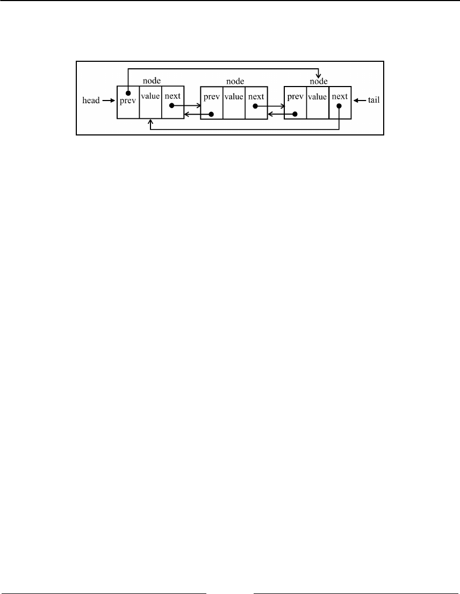
Linked Lists Chapter 6
[ 153 ]
A doubly circular linked list has tail.next pointing to the head element, and head.prev
pointing to the tail element:
Let's check the code to create the CircularLinkedList class:
CircularLinkedList extends LinkedList {
constructor(equalsFn = defaultEquals) {
super(equalsFn);
}
}
The CircularLinkedList class does not need any additional properties, so we can simply
extend the LinkedList class and overwrite the required methods to apply the special
behavior.
We will overwrite the implementation of the insert and removeAt methods in the
following topics.
Inserting a new element at any position
The logic to insert an element in a circular linked list is the same as to insert an element in
a normal linked list. The difference in the circular linked list is that we also need to link the
last node's next reference to the head node. The following is the insert method for the
CircularLinkedList class:
insert(element, index) {
if (index >= 0 && index <= this.count) {
const node = new Node(element);
let current = this.head;
if (index === 0) {
if (this.head == null) {
this.head = node; // {1}
node.next = this.head; // {2} NEW
} else {
node.next = current; // {3}
current = this.getElementAt(this.size()); // {4}
Linked Lists Chapter 6
[ 154 ]
// update last element
this.head = node; // {5}
current.next = this.head; // {6} NEW
}
} else { // no changes in this scenario
const previous = this.getElementAt(index - 1);
node.next = previous.next;
previous.next = node;
}
this.count++;
return true;
}
return false;
}
Let's break down the different scenarios. The first one is when we want to insert a new
element in the first position of the list. If the list is empty, we assign the head node to the
new element created ({1}), as we did in the LinkedList class, and we also need to link
the last node to the head ({2}). In this case, the last element of the list is the node we
created that will point to itself, because it is also the head.
The following diagram exemplifies the first scenario:
The second scenario is inserting an element in the first position in a non-empty list, so the
first thing we need to do is assign node.next to the head reference (current variable).
This is the logic we used in the LinkedList class. However, in the CircularLinkedList,
we still need to make the last node of the list point to the new head element, so we need to
get the reference to the last element. To do so, we will use the getElementAt method,
passing the list size as a parameter ({2}). We update the head element to the new
element and we link the last node (current) to the new head ({3}).
Linked Lists Chapter 6
[ 155 ]
The following diagram exemplifies the second scenario:
If we want to insert a new element in the middle of the list, the code is the same as the
LinkedList class since no changes will be applied to the last or first nodes of the list.
Removing elements from any position
To remove an element from a circular linked list, we only need to worry about the second
scenario, which changes the head element of the list. The code for the removeAt method is
presented as follows:
removeAt(index) {
if (index >= 0 && index < this.count) {
let current = this.head;
if (index === 0) {
if (this.size() === 1) {
this.head = undefined;
} else {
const removed = this.head; // {1}
current = this.getElementAt(this.size()); // {2} NEW
this.head = this.head.next; // {3}
current.next = this.head; // {4}
current = removed; // {5}
}
} else {
// no need to update last element for circular list
const previous = this.getElementAt(index - 1);
current = previous.next;
previous.next = current.next;
}
this.count--;
return current.element; // {6}
}
return undefined;
}
Linked Lists Chapter 6
[ 156 ]
The first scenario to remove an element is removing the element of the list with a single
node. In this case, we simply assign undefined to the head . There are no changes here
when we compare this to the LinkedList class.
The second scenario is removing the first element of a non-empty list. As the
head reference will change, we also need to update the reference to the last node's next
property; thus, we first keep a reference to the current head element, which is going to be
removed from the list ({1}). As we did in the insert method, we also need to get the
reference to the last node of the list ({2}), which will be stored in the current variable.
After we have a reference to all the required nodes, we can start making the new links. We
update the head element, linking the head to the second element (head.next - {3}), and
then we link the last element (current.next) to the new head ({4}). We can update the
reference of the current variable ({5}) so that we can return its value ({6}) for
information purposes.
The following diagram exemplifies these actions:
Sorted linked lists
A sorted linked list is a list that keeps its elements sorted. To keep all elements sorted,
instead of applying a sorting algorithm, we will insert the element at its correct position so
as to keep the list always sorted.
Let's start by declaring the SortedLinkedList class:
const Compare = {
LESS_THAN: -1,
BIGGER_THAN: 1
};
function defaultCompare(a, b) {
if (a === b) { // {1}
return 0;

Linked Lists Chapter 6
[ 157 ]
}
return a < b ? Compare.LESS_THAN : Compare.BIGGER_THAN; // {2}
}
class SortedLinkedList extends LinkedList {
constructor(equalsFn = defaultEquals, compareFn = defaultCompare) {
super(equalsFn);
this.compareFn = compareFn; // {3}
}
}
The SortedLinkedList class will inherit all the properties and methods from the
LinkedList class, but since this class has a special behavior, we will need a function to
compare the elements. For this reason, we also need to declare compareFn ({3}), which will
be used to compare the elements. This function will use the defaultCompare function by
default. If the elements have the same reference, it returns 0 ({1}). If the first element is less
than the second element, it returns -1 and 1 otherwise. To keep the code more elegant, we
can declare a constant Compare to represent each of these values. If the element that is
being compared is more complex, we can create a custom comparison function and pass it
to the SortedLinkedList class constructor as well.
Inserting elements in order
We will overwrite the insert method with the code presented as follows:
insert(element, index = 0) { // {1}
if (this.isEmpty()) {
return super.insert(element, 0); // {2}
}
const pos = this.getIndexNextSortedElement(element); // {3}
return super.insert(element, pos); // {4}
}
getIndexNextSortedElement(element) {
let current = this.head;
let i = 0;
for (; i < this.size() && current; i++) {
const comp = this.compareFn(element, current.element); // {5}
if (comp === Compare.LESS_THAN) { // {6}
return i;
}
current = current.next;
}
return i; // {7}

Linked Lists Chapter 6
[ 158 ]
}
As we do not want to allow inserting elements at any index, we will start assigning a
default value to the index parameter ({1}), so we can simply evoke
list.insert(myElement) without the need to pass the index parameter. If the index
parameter is passed to the method, its value is going to be ignored as the position to insert
the element will be controlled internally. The reason why we need to do it this way is that
we do not want to rewrite the entire LinkedList class methods again, so we are only
overwriting the insert method's behavior. If you want to, you can create a
SortedLinkedList class from scratch, copying all the code from the LinkedList class
however, this will make maintaining the code a little bit more difficult since we will need to
make the changes in two classes instead of only one.
If the list is empty, we can simply evoke the LinkedList insert method passing 0 (zero)
as the index ({2}). If the list is not empty, we will get what's known as the correct index to
insert the element ({3}) and evoke the LinkedList insert method, passing the position
in order to keep the list sorted ({4}).
To retrieve the correct index to insert the element, we will create a new method called
getIndexNextSortedElement. Inside this method, we will iterate through the list until
we find a position to insert the element or until all the elements have been iterated. In this
last scenario, the index returned ({7}) will be the size of the list (the element will be
inserted at the end of the list). To compare the elements, we will use compareFn ({5}),
passed to the class constructor. When the element we want to insert in the list is less than
the element of the current list, we have found the position to insert ({6}).
And that's it! We can reuse the LinkedList insert method internally. All the other methods
such as remove, indexOf, and on are the same as the LinkedList.
Creating the StackLinkedList class
We can also use the LinkedList class and its variations as internal data structures to create
other data structures such as stack, queue, and deque. In this topic, we will learn how to
create the stack data structure (covered in Chapter 4, Stacks).
Linked Lists Chapter 6
[ 159 ]
The StackLinkedList class structure and the methods push and pop are declared as
follows:
class StackLinkedList {
constructor() {
this.items = new DoublyLinkedList(); // {1}
}
push(element) {
this.items.push(element); // {2}
}
pop() {
if (this.isEmpty()) {
return undefined;
}
return this.items.removeAt(this.size() - 1); // {3}
}
}
For the StackLinkedList class, instead of using an array or a JavaScript object to store the
items, we will use a DoublyLinkedList ({1}). The reason for using the doubly linked list
instead of the linked list is that for the stack, we will be inserting elements at the end of the
list ({2}) and also removing elements from the end of the list ({3}). Our
DoublyLinkedList class keeps a reference of the last element of the list (tail), so it does
not need to iterate throughout all the list elements to access it; it has direct access to the first
and last elements, decreasing the processing effort, and keeping the cost at O(1), which is
our original Stack implementation.
We could also enhance the LinkedList class, keeping a reference to the
tail element and using the enhanced version instead of the
DoublyLinkedList.
We can inspect the code for the other Stack methods as follows:
peek() {
if (this.isEmpty()) {
return undefined;
}
return this.items.getElementAt(this.size() - 1).element;
}
isEmpty() {
return this.items.isEmpty();
}
size() {
return this.items.size();
Linked Lists Chapter 6
[ 160 ]
}
clear() {
this.items.clear();
}
toString() {
return this.items.toString();
}
We are evoking the methods from the DoublyLinkedList class for every other method.
Using the linked list data structure internally in the stack implementation is easier since we
do not need to create the code from scratch with the same processing cost, and it also makes
the code easier to read!
We can apply the same logic and create a Queue and Deque class using the
DoublyLinkedList or even the LinkedList class!
Summary
In this chapter, you learned about the linked list data structure and its variants: the doubly
linked list, the circular linked list, and the sorted linked list. You learned how to add and
remove elements at any position, and how to iterate through a linked list. You also learned
that the most important advantage of a linked list over an array is that you can easily add
and remove elements from a linked list without shifting over its elements. So, whenever
you need to add and remove lots of elements, the best option will be a linked list instead of
an array.
You also learned how to create a stack using an internal linked list to store its elements
instead of an array or an object, and you also learned the benefits of using another data
structure to leverage its available operations instead of writing all the logic from scratch.
In the next chapter, you will learn about sets, a data structure that stores unique elements.
7
Sets
Sequential data structures such as arrays (lists), stacks, queues, and linked lists should
sound familiar to you by now. In this chapter, we will cover a data structure called sets,
which is also a sequential data structure that does not allow duplicated values. We will
learn how to create a set data structure, add and remove values, and search for whether a
value already exists. We will also learn how to perform mathematical operations such as
union, intersection, and difference. Finally, we will learn how to use the
native ECMAScript 2015 (ES2015) Set class.
In this chapter, we will cover:
Creating a Set class from scratch
Performing mathematical operations with a Set
ECMAScript 2015 native Set class
Structuring a dataset
A set is a collection of items that are unordered and consists of unique elements (meaning
they cannot be repeated). This data structure uses the same mathematical concept as finite
sets, but it is applied to a computer science data structure.
Let's take a look at the mathematical concept of sets before we dive into the computer
science implementation of it. In mathematics, a set is a collection of distinct objects.
For example, we have a set of natural numbers, which consists of integer numbers greater
than or equal to 0—that is, N = {0, 1, 2, 3, 4, 5, 6, ...}. The list of the objects within the set is
surrounded by {} (curly braces).
Sets Chapter 7
[ 162 ]
There is also the null set concept. A set with no element is called a null set or an empty set.
An example would be a set of prime numbers between 24 and 29. Since there is no prime
number (a natural number greater than 1 that has no positive divisors other than 1 and
itself) between 24 and 29, the set will be empty. We will represent an empty set with { }.
You can also imagine a set as an array with no repeated elements and no concept of order.
In mathematics, a set also has some basic operations such as union, intersection, and
difference. We will also cover these operations in this chapter.
Creating a Set class
ECMAScript 2015 introduced the Set class as part of the JavaScript API, and you will learn
how to use this later on in this chapter. We will create our own implementation of the Set
class based on the ES2015 Set class. We will also implement some set operations such as
union, intersection, and difference, that are not present in the ES2015 native class.
To get started, the following is the Set class declaration with its constructor:
class Set {
constructor() {
this.items = {};
}
}
A very important detail here is that we are using an object to represent our set (items)
instead of an array. However, we could also use an array in this implementation. The
approach we will follow in this chapter is very similar to the items object approach we
used in Chapter 4, Stacks, and Chapter 5, Queues and Deques. Also, objects in JavaScript do
not allow you to have two different properties on the same key, which guarantees unique
elements in our set.
Next, we need to declare the methods available for a set (we will try to simulate the same
Set class implemented in ECMAScript 2015):
add(element): This adds a new element to the set.
delete(element): This removes the element from the set.
has(element): This returns true if the element exists in the set and false
otherwise.
Sets Chapter 7
[ 163 ]
clear(): This removes all the elements from the set.
size(): This returns how many elements the set contains. It is similar to the
length property of an array.
values(): This returns an array of all the values (elements) of the set.
The has(element) method
The first method we will implement is the has(element) method. We will implement this
method first because it will be used in other methods, such as add and remove, to verify
whether the element already exists in the set. We can take a look at its implementation here:
has(element){
return element in items;
};
Since we are using an object to store all the elements of the set, we can use JavaScript's in
operator to verify that the given element is a property of the items object.
However, there is a better way of implementing this method, which is as follows:
has(element) {
return Object.prototype.hasOwnProperty.call(this.items, element);
}
The Object prototype has the hasOwnProperty method. This method returns a boolean
indicating whether the object has the specified property directly in the object or not, while
the in operator returns a boolean indicating whether the object has the specified property in
the object chain.
We could also use this.items.hasOwnProperty(element) in our
code. However, some lint tools such as ESLint (https://eslint.org)
throw an error when trying to use this code. The error is because not all
objects inherit from Object.prototype and even for objects which
inherit from Object.prototype, the hasOwnProperty method could be
shadowed by something else and the code may not work. To avoid any
issues, it is safer to use the Object.prototype.hasOwnProperty.call.
Sets Chapter 7
[ 164 ]
The add method
The next method we will implement is the add method, as follows:
add(element) {
if (!this.has(element)) {
this.items[element] = element; // {1}
return true;
}
return false;
}
Given an element, we can check whether the element already exists in the set. If not, we
add the element to the set ({1}) and return true to indicate that the element was added.
If the element already exists in the set, we simply return false to indicate that the element
was not added.
We are adding the element as the key and value because it will help us
search for the element if we store it as the key as well.
The delete and clear methods
Next, we will implement the delete method:
delete(element) {
if (this.has(element)) {
delete this.items[element]; // {1}
return true;
}
return false;
}
In the delete method, we will verify whether the given element exists in the set. If this is
positive, we will remove the element from the set ({1}) and return true to indicate that
the element was removed; otherwise, we will return false.
Since we are using an object to store the items object of the set, we can simply use the
delete operator to remove the property from the items object ({1}).
Sets Chapter 7
[ 165 ]
To use the Set class, we can use the following code as an example:
const set = new Set();
set.add(1);
set.add(2);
Just out of curiosity, if we output the this.tems property on the console (console.log)
after executing the previous code, this will be the output in Google Chrome:
Object {1: 1, 2: 2}
We can note that this is an object with two properties. The property name
is the value we added to the set and its value, as well.
If we want to remove all the elements from the set, we can use the clear method, as
follows:
clear() {
this.items = {}; // {2}
}
All we need to do to reset the items object is assign it to an empty object again ({2}). We
could also iterate the set and remove all the elements one by one using the remove method,
but this is too much work, as we have an easier way of doing it.
The size method
The next method we will implement is the size method (which returns how many
elements are in the set). There are three ways of implementing this method.
The first method is to use a length variable and control it whenever we use the add or
remove method, as we used in the LinkedList, Stack, and Queue classes in the previous
chapters.
In the second method, we use a built-in method from the Object class in JavaScript
(ECMAScript 2015+), as follows:
size() {
return Object.keys(this.items).length; // {1}
};
Sets Chapter 7
[ 166 ]
The Object class in JavaScript contains a method called keys that returns an array of all
the properties of a given object. In this case, we can use the length property of this array
({1}) to return how many properties we have in the items object. This code will only work
in modern browsers (such as IE9+, FF4+, Chrome5+, Opera12+, Safari5+, and so on).
The third method is to extract each property of the items object manually, count how many
properties there are, and return this number. This method will work in any browser and is
the equivalent of the previous code, as follows:
sizeLegacy() {
let count = 0;
for(let key in this.items) { // {2}
if(this.items.hasOwnProperty(key)) { // {3}
count++; // {4}
}
return count;
};
So, first, we will iterate through all the properties of the items object ({2}) and check
whether this property is really a property of our object (so that we do not count it more than
once - {3}). If it's positive, we will increment the count variable ({4}) and at the end of the
method, we will return this number.
We cannot simply use the for-in statement, iterate through the
properties of the items object, and increment the count variable's value.
We also need to use the has method (to verify that the items object has
this property) because the object's prototype contains additional properties
for the object as well (properties are inherited from the base JavaScript
Object class, but it still has properties of the object, which are not used in
this data structure).
The values method
To implement the values method, we can also use a built-in method from the Object class
named values as follows:
values() {
return Object.values(this.items);
}

Sets Chapter 7
[ 167 ]
The Object.values() method returns an array of all of the properties'
values of a given object. It was added in ECMAScript 2017 and it is only
available in modern browsers.
If we want to write a code that can be executed in any browser, we can use the following
code, which is equivalent to the previous code:
valuesLegacy() {
let values = [];
for(let key in this.items) { // {1}
if(this.items.hasOwnProperty(key)) { // {2}
values.push(key);
}
}
return values;
};
So, first, we will iterate through all the properties of the items object ({1}), add them to an
array ({2}), and return this array. This method is similar to the sizeLegacy method we
developed, but instead of counting the properties, we are adding in an array.
Using the Set class
Now that we have finished implementing our set data structure, let's take a look at how we
can use it. Let's give it a try and execute some commands to test our Set class, as follows:
const set = new Set();
set.add(1);
console.log(set.values()); // outputs [1]
console.log(set.has(1)); // outputs true
console.log(set.size()); // outputs 1
set.add(2);
console.log(set.values()); // outputs [1, 2]
console.log(set.has(2)); // true
console.log(set.size()); // 2
set.delete(1);
console.log(set.values()); // outputs [2]
set.delete(2);
console.log(set.values()); // outputs []
Sets Chapter 7
[ 168 ]
So, now we have a very similar implementation of the Set class, as in ECMAScript 2015.
Set operations
Set is one of the most basic concepts in mathematics and it is very important in computer
science as well. One of the main applications in computer science is in databases, which are
the roots of most applications. Sets are used in query design and processing. When we
create a query to retrieve a set of data in a relational database (Oracle, Microsoft SQL Server,
MySQL, and so on), we design the query using set notation and the database will also
return a set of data. When we create an SQL query, we can specify whether we want to
retrieve all the data from a table or only a subset. We can also retrieve data that is common
to two tables, data that exists only in one table (and not in the other table), or data that exists
in both tables (among other operations). These operations are known in the SQL world as
joins, and the base of SQL joins are set operations.
To learn more about SQL join operations, please read at http://www.sql-
join.com/sql-join-types.
We can perform the following operations on sets:
Union: Given two sets, this returns a new set of elements from both of the given
sets
Intersection: Given two sets, this returns a new set with the elements that exist in
both sets
Difference: Given two sets, this returns a new set with all the elements that exist
in the first set and do not exist in the second set
Subset: This confirms whether a given set is a subset of another set
Set union
In this topic, we will cover the mathematical concept of union. The union of sets A and B is
denoted by:

Sets Chapter 7
[ 169 ]
And is defined as:
This means that x (the element) exists in A or x exists in B. The following diagram
exemplifies the union operation:
Now, let's implement the union method in our Set class with the following code:
union(otherSet) {
const unionSet = new Set(); // {1}
this.values().forEach(value => unionSet.add(value)); // {2}
otherSet.values().forEach(value => unionSet.add(value)); // {3}
return unionSet;
}
First, we need to create a new set to represent the union of two sets ({1}). Next, we will get
all the values from the first set (the current instance of the Set class), iterate through them,
and add all the values to the set that represents the union ({2}). Then, we will do the exact
same thing but with the second set ({3}). Finally, we will return the result.
Since the values method we implement returns an array, we can use the
Array classes forEach method to iterate through all elements of the
array. Just a reminder that the forEach method was introduced in
ECMAScript 2015. The forEach method receives a parameter (value) that
represents each value of the array and also has a callback function that
executes a programming logic. In the preceding code, we are also
using arrow functions (=>) instead of explicitly declaring
function(value) { unionSet.add(value) }. The code looks
modern and succinct using the ES2015 functionalities we learned in
Chapter 2, ECMAScript and TypeScript Overview.

Sets Chapter 7
[ 170 ]
We can also write the union method as follows, without using the forEach method and
arrow functions, but whenever possible, we will try using the ES2015+ functionalities:
union(otherSet) {
const unionSet = new Set(); // {1}
let values = this.values(); // {2}
for (let i = 0; i < values.length; i++){
unionSet.add(values[i]);
}
values = otherSet.values(); // {3}
for (let i = 0; i < values.length; i++){
unionSet.add(values[i]);
}
return unionSet;
};
Let's test the previous code as follows:
const setA = new Set();
setA.add(1);
setA.add(2);
setA.add(3);
const setB = new Set();
setB.add(3);
setB.add(4);
setB.add(5);
setB.add(6);
const unionAB = setA.union(setB);
console.log(unionAB.values());
The output will be [1, 2, 3, 4, 5, 6]. Note that the element 3 is present in both setA
and setB, and it appears only once in the result set.
Sets Chapter 7
[ 171 ]
It is important to note that the union, intersection, and difference
methods we are implementing in this chapter do not modify the current
instance of the Set class nor the otherSet that is being passed as a
parameter. Methods or functions that do not have collateral effects are
called pure functions. A pure function does not modify the current
instance nor the parameters; it only produces a new result. This is a very
important concept of the functional programming paradigm that we will
introduce later in this book.
Set intersection
In this topic, we will cover the mathematical concept of intersection. The intersection of sets
A and B is denoted by:
And is defined as:
This means that x (the element) exists in both A and B, thus sharing a or some of its
elements with both A and B. The following diagram exemplifies the intersection operation:

Sets Chapter 7
[ 172 ]
Now, let's implement the intersection method in our Set class, as follows:
intersection(otherSet) {
const intersectionSet = new Set(); // {1}
const values = this.values();
for (let i = 0; i < values.length; i++) { // {2}
if (otherSet.has(values[i])) { // {3}
intersectionSet.add(values[i]); // {4}
}
}
return intersectionSet;
}
For the intersection method, we need to find all the elements from the current instance
of the Set class that also exist in the given Set instance (otherSet). So, first, we will create
a new Set instance so that we can return it with the common elements ({1}). Next, we will
iterate through all the values of the current instance of the Set class ({2}), and we will
verify that the value exists in the otherSet instance as well ({3}). We can use the has
method, which we implemented earlier in this chapter to verify that the element exists in
the Set instance. Then, if the value exists in the other Set instance as well, we will add it to
the created intersectionSet variable ({4}) and return it.
Let's do some testing, as follows:
const setA = new Set();
setA.add(1);
setA.add(2);
setA.add(3);
const setB = new Set();
setB.add(2);
setB.add(3);
setB.add(4);
const intersectionAB = setA.intersection(setB);
console.log(intersectionAB.values());
The output will be [2, 3], as the values 2 and 3 exist in both sets.
Sets Chapter 7
[ 173 ]
Improving the intersection method
Suppose we have the following two sets:
setA with values [1, 2, 3, 4, 5, 6, 7]
setB with values [4, 6]
Using the intersection method we created, we would need to iterate the values of setA
seven times, which is the number of elements in setA, and compare these seven values with
only two elements from setB. It would be better if we had the same result if we only had to
iterate setB two times. Fewer iterations means a cheaper processing cost, so let's optimize
our code in order to iterate the set with fewer elements, as follows:
intersection(otherSet) {
const intersectionSet = new Set(); // {1}
const values = this.values(); // {2}
const otherValues = otherSet.values(); // {3}
let biggerSet = values; // {4}
let smallerSet = otherValues; // {5}
if (otherValues.length - values.length > 0) { // {6}
biggerSet = otherValues;
smallerSet = values;
}
smallerSet.forEach(value => { // {7}
if (biggerSet.includes(value)) {
intersectionSet.add(value);
}
});
return intersectionSet;
}
So, first, we will create a new set to store our intersection result ({1}). We will also
retrieve the values of the current set instance ({2}) and the given set passed as a parameter
to the intersection method ({3}). Next, we will presume that the current instance is the
set with more elements ({4}) and the given set is the set of smaller elements ({5}). We will
compare the size of both sets ({6}), and in case the given set has more elements than the
current instance, we switch the values of biggerSet and smallerSet. Finally, we will
iterate the smaller set ({7}) in order to calculate the common values between the two sets
and return the result.
Sets Chapter 7
[ 174 ]
Set difference
In this topic, we will cover the mathematical concept of difference. The difference
between sets A and B is denoted by A - B, which is defined as:
This means that x (the element) exists in A, but x does not exist in B. The following diagram
exemplifies the difference operation between sets A and B:
Now, let's implement the difference method in our Set class using the following code:
difference(otherSet) {
const differenceSet = new Set(); // {1}
this.values().forEach(value => { // {2}
if (!otherSet.has(value)) { // {3}
differenceSet.add(value); // {4}
}
});
return differenceSet;
}
The intersection method will return all the elements that exist in both sets. The
difference method will return all the elements that exist in A but not in B. First, we will
create our result set ({1}) as we do not want to modify the current set or the given set.
Then, we will iterate all the values of the current set instance ({2}). We will verify whether
the value (element) exists in the given set ({3}), and if the element does not exist in the
otherSet, we will add the value to the resultant set.
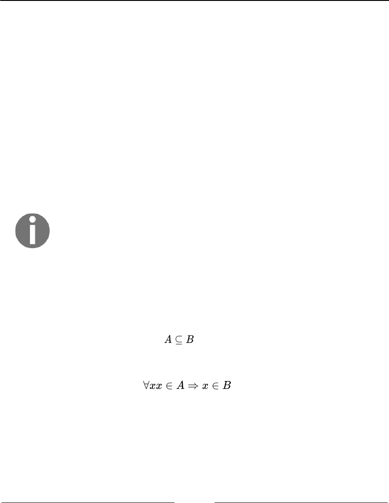
Sets Chapter 7
[ 175 ]
Let's do some testing (with the same sets we used in the intersection section):
const setA = new Set();
setA.add(1);
setA.add(2);
setA.add(3);
const setB = new Set();
setB.add(2);
setB.add(3);
setB.add(4);
const differenceAB = setA.difference(setB);
console.log(differenceAB.values());
The output will be [1] because 1 is the only element that exists in setA. If we do
setB.difference(setA), we will get [4] as the output because 4 is the only element that
only exists in setB.
We cannot optimize the difference method as we did with
the intersection method, since the difference
between setA and setB might be different than the difference
between setB and setA.
Subset
The last set operation we will cover is the subset. An example of the mathematical concept
of subset is that A is a subset of (or is included in) B, and this is denoted by:
The set is defined as:
Sets Chapter 7
[ 176 ]
This means that for every x (element) that exists in A, it also needs to exist in B. The
following diagram exemplifies when A is a subset of B:
Now, let's create the isSubsetOf method in our Set class using the following code:
isSubsetOf(otherSet) {
if (this.size() > otherSet.size()) { // {1}
return false;
}
let isSubset = true; // {2}
this.values().every(value => { // {3}
if (!otherSet.has(value)) { // {4}
isSubset = false; // {5}
return false;
}
return true; // {6}
});
return isSubset; // {7}
}
The first verification that we need to do is to check the size of the current instance of the Set
class. If the current instance has more elements than the otherSet instance, it is not a
subset ({1}). A subset needs to have less or the same number of elements as the compared
set.
Next, we presume that the current instance is a subset of the given set ({2}). We will iterate
through all the current set elements ({3}), and we will verify that the element also exists in
otherSet ({4}). If any element does not exist in otherSet, it means that it is not a subset,
so we will return false ({5}). If all the elements also exist in otherSet, line {5} will not
be executed, and then we will return true ({7}) since the isSubset flag will not be
changed.
Sets Chapter 7
[ 177 ]
In the isSubsetMethod, we are not using the forEach method which we used in union,
intersection, and difference. We are using the every method instead, which is also
part of the JavaScript Array class and was introduced in ES2015. We learned in Chapter 3,
Arrays, that the forEach method is evoked for every value of the array. In the case of the
subset logic, we can stop iterating the values in case we find a value that is not in the
otherSet, meaning it is not a subset. The every method will be evoked as long as the
callback function returns true ({6}). If the callback function returns false, it breaks the
loop, so that is why we are also changing the value of the isSubset flag in line {5}.
Let's try the previous code:
const setA = new Set();
setA.add(1);
setA.add(2);
const setB = new Set();
setB.add(1);
setB.add(2);
setB.add(3);
const setC = new Set();
setC.add(2);
setC.add(3);
setC.add(4);
console.log(setA.isSubsetOf(setB));
console.log(setA.isSubsetOf(setC));
We have three sets: setA is a subset of setB (so the output is true); however, setA is not a
subset of setC (setC only contains the value 2 from setA and not the values 1 and 2), so
the output will be false.
ECMAScript 2015 – the Set class
ECMAScript 2015 introduced a Set class as part of the JavaScript API. We developed our
Set class based on the ES2015 Set class.
You can see the details of the ECMAScript 2015 Set class implementation
at https://developer.mozilla.org/en-US/docs/Web/JavaScript/Refere
nce/Global_Objects/Set (or http://goo.gl/2li2a5).

Sets Chapter 7
[ 178 ]
Now, let's take a look at how we can use the native Set class, as well.
Let's use the same examples we used to test our Set class, as follows:
const set = new Set();
set.add(1);
console.log(set.values()); // outputs @Iterator
console.log(set.has(1)); // outputs true
console.log(set.size); // outputs 1
The difference between our Set class and the ES2015 Set class is that the values method
returns Iterator (which you learned in Chapter 3, Arrays) instead of the array with the
values. Another difference is that we developed a size method to return the number of
values the Set stores. The ES2015 Set class has a property named size.
We can also call the delete method to remove an element from set with the following
code:
set.delete(1);
The clear method also resets the Set data structure. It is the same functionality we
implemented.
ES2015 Set class operations
We developed the mathematical operations such as union, intersection, difference, and also
subset in our Set class. Unfortunately, the ES2015 native Set class does not contain these
functionalities. However, we can write our own functions with similar functionality in case
it is needed.
We will use the following two sets in our examples:
const setA = new Set();
setA.add(1);
setA.add(2);
setA.add(3);
const setB = new Set();
setB.add(2);
setB.add(3);
setB.add(4);

Sets Chapter 7
[ 179 ]
Simulating the union operation
To add all the elements from two sets, we can create a function that will return a new set
with all elements from set1 and set2. We need to iterate set1 ({1}) and set2 ({2}) and
add all their elements into the union set using add, as demonstrated by the following code:
const union = (set1, set2) => {
const unionAb = new Set();
set1.forEach(value => unionAb.add(value));
set2.forEach(value => unionAb.add(value));
return unionAb;
};
console.log(union(setA, setB)); // {1, 2, 3, 4}
Simulating the intersection operation
To simulate the intersection operation, we can also create a function to help us create a new
set of the common elements that both setA and setB demonstrated as follows:
const intersection = (set1, set2) => {
const intersectionSet = new Set();
set1.forEach(value => {
if (set2.has(value)) {
intersectionSet.add(value);
}
});
return intersectionSet;
};
console.log(intersection(setA, setB)); // {2, 3}
The preceding code does the same thing as the intersection function we developed,
however, the preceding code is not optimized (as we also developed an optimized version).
Simulating the difference operation
While the intersection operation is achieved by creating a new set with the common
elements that both setA and setB have, the difference operation is achieved by creating a
new set with the elements that setA has but setB does not. Take a look at the following
code:
const difference = (set1, set2) => {
const differenceSet = new Set();
set1.forEach(value => {
if (!set2.has(value)) { // {1}

Sets Chapter 7
[ 180 ]
differenceSet.add(value);
}
});
return differenceSet;
};
console.log(difference(setA, setB));
The only difference between the intersection function and the difference simulations
is line {1} as we only want to add the different Set elements that setA has and setB does
not.
Using the spread operator
There is a simpler way of simulating the union, intersection, and difference operations by
using the spread operator, also introduced in ES2015 that we learned in Chapter 2,
ECMAScript and TypeScript Overview.
The process consists of three steps:
Converting the sets to arrays.1.
Performing the desired operation.2.
Converting the result back to a set.3.
Let's see how we can perform the set union operation using the spread operator:
console.log(new Set([...setA, ...setB]));
The ES2015 Set class also accepts passing an array directly in its constructor to initialize the
set with values, so we apply the spread operator in setA (...setA), which will transform
its values in an array (will spread its values) and we do the same to setB.
As setA has values [1, 2, 3] and setB has values [2, 3, 4], the preceding code is the
same as doing new Set([1, 2, 3, 2, 3, 4]), but it will only add the unique values.
Now, let's see how we can perform the set intersection operation using the spread operator:
console.log(new Set([...setA].filter(x => setB.has(x))));
The preceding code will also transform setA into an array and will use the filter method,
which returns a new array with the values that match the callback function—which in this
case verifies whether the element also exists in setB. The returned array will be used to
initialize the constructor of the resultant Set.
Sets Chapter 7
[ 181 ]
Finally, let's see how we can perform the set difference operation using the spread operator:
console.log(new Set([...setA].filter(x => !setB.has(x))));
It is the same code as the intersection operation, however, we are only interested in the
elements that do not exist in setB.
You can use the version of your preference to perform the set operations using the native
ES2015 Set class!
Multisets or bags
As we have already learned, the set data structure does not allow duplicated elements.
However, in mathematics, there is a concept called multi-set, which allows the same
element to be inserted into the set even if the element has already been inserted before.
Multisets (or bags) can be very useful for counting how many times the element is present
in a set. It is also largely applied in database systems.
We will not cover the bag data structure in this book. However, you can
check the source code and examples by downloading the code bundle of
this book or accessing https://github.com/loiane/javascript-
datastructures-algorithms.
Summary
In this chapter, you learned how to implement a Set class from scratch, which is similar to
the Set class defined in the definition of ECMAScript 2015. We also covered some methods
that are not usually present in other programming language implementations of the set data
structure, such as union, intersection, difference, and subset. We implemented a complete
Set class compared to the current implementation of Set in other programming languages.
In the next chapter, we will cover hashes and dictionaries, which are non-sequential data
structures.
8
Dictionaries and Hashes
In the previous chapter, we learned about sets. In this chapter, we will continue our
discussion about data structures that store unique values (non-repeated values) using
dictionaries and hashes.
In a set, we are interested in the value itself as the primary element. In a dictionary (or
map), we store values in pairs as [key, value]. The same goes for hashes (they store values
in pairs, such as [key, value]); however, the way that we implement these data structures is
a little bit different as dictionaries can only store a single value per key, as we will learn in
this chapter.
In this chapter, we will cover:
The dictionary data structure
The hash table data structure
Handling collisions in hash tables
The ECMAScript 2015 Map, WeakMap, and WeakSet classes
The dictionary data structure
As we have already learned, a set is a collection of distinct elements (non-repeated
elements). A dictionary is used to store [key, value] pairs, where the key could be used to
find a particular element. A dictionary is very similar to a set; a set stores a [key, key]
collection of elements, and a dictionary stores a [key, value] collection of elements. A
dictionary is also known as a map, symbol table, and an associative array.
Dictionaries and Hashes Chapter 8
[ 183 ]
In computer science, dictionaries are often used to store the reference address of objects. For
example, if we open the Chrome | Developer tools in the Memory tab and run a snapshot,
we will be able to see some objects and their respective address references in the memory
(represented by @<number>). We can see this scenario in the following screenshot:
In this chapter, we will also cover some examples of how to use the dictionary data
structure in real world projects: a dictionary itself (the words and their definitions) and an
address book.
Creating the Dictionary class
Similar to the Set class, ECMAScript 2015 also contains an implementation of the Map class,
also known as a dictionary.
The class we will implement in this chapter is based on the Map implementation of
ECMAScript 2015. You will notice that it is very similar to the Set class (but instead of
storing a [key, key] pair, we will store a [key, value] pair).
Dictionaries and Hashes Chapter 8
[ 184 ]
The following is the base structure of our Dictionary class:
import { defaultToString } from '../util';
export default class Dictionary {
constructor(toStrFn = defaultToString) {
this.toStrFn = toStrFn; // {1}
this.table = {}; // {2}
}
}
Similar to the Set class, we will also store the elements of the Dictionary class in an
Object instance instead of an array (table property—{2}). We will store the [key, value]
pairs as table[key] = {key, value}.
JavaScript lets us access an object property by using brackets ([]), passing
the name of the property as "position". This is why it is called an
associative array! We have used dictionaries before in this book in Chapter
4, Stacks, Chapter 5, Queues and Deques, and Chapter 7, Sets.
In a dictionary, the ideal would be to store keys of type string and any type of value (from
primitive type such as numbers, a string, to complex objects). However, because JavaScript
is not strongly typed, we cannot guarantee the key will be a string. For this reason, we need
to transform whatever object is passed as the key into a string to make it easier to search
and retrieve values from the Dictionary class (this same logic can also be applied to the
Set class from the previous chapter). To do so, we will need a function to
transform the key into a string ({1}). By default, we will use
the defaultToString function declared in the utils.js file (we can reuse the functions
from this file in any data structure we create).
Since we are using the ES2015 default parameter functionality, toStrFn is
an optional parameter. If needed, we can also pass a custom function to
specify how we would like to transform the key into a string.
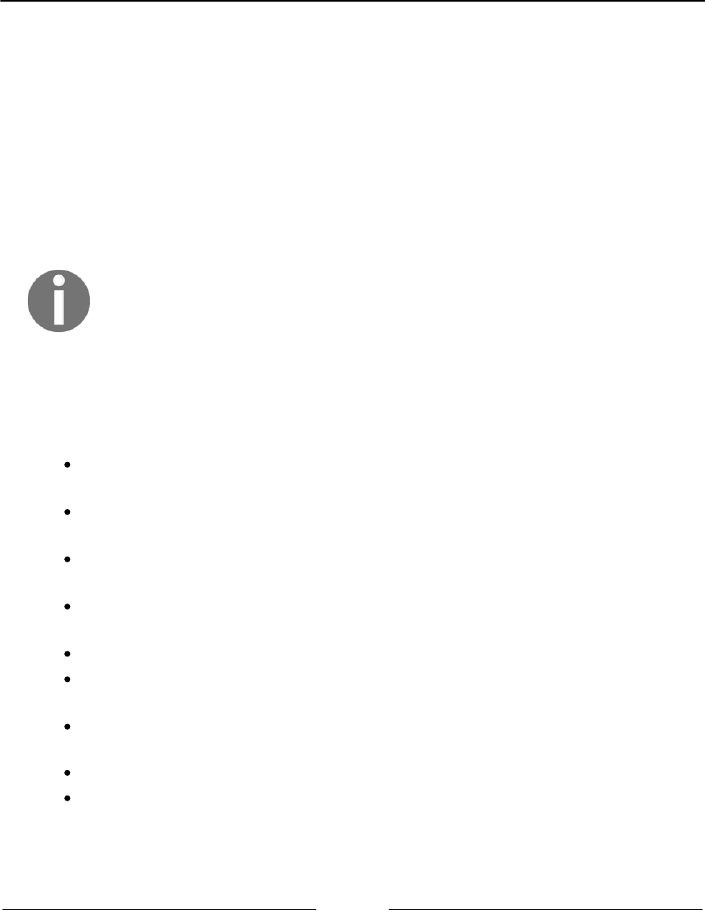
Dictionaries and Hashes Chapter 8
[ 185 ]
The defaultToString function is declared as follows:
export function defaultToString(item) {
if (item === null) {
return 'NULL';
} else if (item === undefined) {
return 'UNDEFINED';
} else if (typeof item === 'string' || item instanceof String) {
return `${item}`;
}
return item.toString(); // {1}
}
Please note that it is important that if the item variable is an object, it
needs to have a toString method implemented, otherwise it will can lead
to unexpected results such as [object Object], which is not very user-
friendly.
If the key (item) is a string, then we simply return it, otherwise, we evoke the toString
method of the item.
Next, we need to declare the methods available for a map/dictionary, which are:
set(key, value): This method adds a new element to the dictionary. If the key
already exists, the existing value will be overwritten with the new one.
remove(key): This method removes the value from the dictionary using the
key as the search parameter.
hasKey(key): This method returns true if the key exists in the dictionary and
false otherwise.
get(key): This method returns a specific value from the dictionary using
the key as the search parameter.
clear(): This method removes all the values from the dictionary.
size(): This method returns how many values the dictionary contains. It is
similar to the length property of the Array class.
isEmpty(): This method returns true if the size equals to zero and false
otherwise.
keys(): This method returns an array of all the keys the dictionary contains.
values(): This method returns an array of all the values of the dictionary.
Dictionaries and Hashes Chapter 8
[ 186 ]
keyValues(): This method returns an array of all value pairs [key, value] of the
dictionary.
forEach(callBackFn): This method iterates every value pair in the dictionary.
The callbackFn function has two parameters: key and value. This method can
also be interrupted in case the callback function returns false (similar to the
every method from the Array class).
Verifying whether a key exists in the dictionary
The first method we will implement is the hasKey(key) method. We will implement this
method first because it will be used in other methods, such as set and remove. We can see
its code as follows:
hasKey(key) {
return this.table[this.toStrFn(key)] != null;
}
JavaScript only allows us to use strings as the key/property of objects. In case we have a
complex object passed as a key, we will need to transform it into a string. For this reason,
we will always invoke the toStrFn function. In case there is a value pair for the given key
(a position in the table not null or undefined), then we return true, otherwise, we
return false.
Setting a key and value in the dictionary and the
ValuePair class
Next, we have the set method, as declared in the following code:
set(key, value) {
if (key != null && value != null) {
const tableKey = this.toStrFn(key); // {1}
this.table[tableKey] = new ValuePair(key, value); // {2}
return true;
}
return false;
}

Dictionaries and Hashes Chapter 8
[ 187 ]
This method receives a key and a value parameter. If the key and value are not
undefined or null, then we get the string that represents the key ({1}) and we create a
new value pair and assign it to the key string (tableKey) property in the table object
({2}). If the key and value are valid, we also return true, indicating the dictionary was
able to store the key and value, otherwise, we return false.
This method can be used to add a new value or update an existing one.
In line {2}, we are instantiating the class ValuePair. The ValuePair class declaration is as
follows:
class ValuePair {
constructor(key, value) {
this.key = key;
this.value = value;
}
toString() {
return `[#${this.key}: ${this.value}]`;
}
}
Because we are transforming the key into a string to store the value in the dictionary, we
are also going to store the original key for informational purposes. For this reason, instead
of simply storing the value in the dictionary, we will store both values: the original key
and the value. To make it easier to output the dictionary in the toString method later, we
are also going to create a toString method for the ValuePair class.
Removing a value from the dictionary
Next, we will implement the remove method. It is very similar to the remove method from
the Set class; the only difference is that we will first search for the key (instead of value),
as follows:
remove(key) {
if (this.hasKey(key)) {
delete this.table[this.toStrFn(key)];
return true;
}
return false;
}

Dictionaries and Hashes Chapter 8
[ 188 ]
Then, we will use the JavaScript delete operator to remove the key (transformed into a
string) from the table object. In case we are able to remove the value from the dictionary,
we will also return true, otherwise, we will return false.
Retrieving a value from the dictionary
If we want to search for a particular key from the dictionary and retrieve its value, we can
use the following method:
get(key) {
const valuePair = this.table[this.toStrFn(key)]; // {1}
return valuePair == null ? undefined : valuePair.value; // {2}
}
The get method will retrieve the object that is stored in the given key property ({1}). If the
value pair object exists, then we return its value, otherwise, we return undefined ({2}).
A different way of implementing this same method would be verifying whether the value
that we would like to retrieve exists (by searching for its key) first, and if the result is
positive, we access the table object and return the desired value. The second option of the
get method is as follows:
get(key) {
if (this.hasKey(key)) {
return this.table[this.toStrFn(key)];
}
return undefined;
}
However, in this second approach, we would be retrieving the string for the key and
accessing the table object twice: the first time in the hasKey method and the second time
inside the if statement. It is a small detail, but the first approach has a cheaper processing
cost.
The keys, values, and valuePairs methods
Now that we have created the most important methods for the Dictionary class, let's
create some auxiliary, but very useful methods.
Dictionaries and Hashes Chapter 8
[ 189 ]
Next, we will create the valuePairs method, which is going to return an array with all
ValuePair objects present in the dictionary. The code is as follows:
keyValues() {
return Object.values(this.table);
}
The code is very simple—we are evoking the built-in values method from the JavaScript
Object class introduced in the ECMAScript 2017 which we learned in Chapter 1,
JavaScript – A Quick Overview.
Since the Object.values method might not be available in all browsers yet, we can also
use the following code as an alternative:
keyValues() {
const valuePairs = [];
for (const k in this.table) { // {1}
if (this.hasKey(k)) {
valuePairs.push(this.table[k]); // {2}
}
}
return valuePairs;
};
In the preceding code, we need to iterate through all the properties of the table object
({1}). Just to make sure the key exists, we will use the hasKey function for this verification,
and then, we will add the ValuePair from the table object ({2}) into the resultant array.
In this method, since we are already retrieving the property (key) from the table object
directly, we do not need to transform it into a string with the toStrFn function.
We cannot simply use the for-in statement and iterate through the
properties of the table object. We also need to use the hasKey method (to
verify whether the table object has this property) because the object's
prototype contains additional properties of the object, as well. (Properties
are inherited from the base JavaScript Object class, but it still has
properties of the object that we are not interested in for this data
structure.)
The next method we will create is the keys method. This method returns all the keys (the
original ones) used to identify a value in the Dictionary class, as follows:
keys() {
return this.keyValues().map(valuePair => valuePair.key);
}
Dictionaries and Hashes Chapter 8
[ 190 ]
We will evoke the keyValues method we created that returns an array of ValuePair
instances. Then, we will iterate each ValuePair. Since we are only interested in the
ValuePair key property, we will only return its key.
In the preceding code, we are using the map method from the Array class to iterate each
ValuePair. The map method transforms a given value into something else. In this case, we
are transforming each valuePair into its key. The logic used inside the keys method can
also be written as follows:
const keys = [];
const valuePairs = this.keyValues();
for (let i = 0; i < valuePairs.length; i++) {
keys.push(valuePairs[i].key);
}
return keys;
The map method allows us to execute the same logic and obtain the same result as the five
lines of the preceding code, and once we get used to its syntax, it is even easier to read the
code and understand what it is doing.
The map method was introduced in ES2015 (ES6) as we learned in Chapter
3, Arrays. The keys method we created is also using the functional
programming paradigm, which we will learn more about later in this
book.
Similar to the keys method, we also have the values method. The values method returns
an array of all values stored in the dictionary. Its code is very similar to the keys method,
however, instead of returning the key property of the ValuePair class, we return the
value property as follows:
values() {
return this.keyValues().map(valuePair => valuePair.value);
}
Iterating each ValuePair of the dictionary with forEach
So far, we have not created a method that allows us to iterate through each value stored in
the data structures. We are going to implement the forEach method for the Dictionary
class, but we can use this same logic for the other data structures we created previously in
the book as well.

Dictionaries and Hashes Chapter 8
[ 191 ]
The forEach method is as follows:
forEach(callbackFn) {
const valuePairs = this.keyValues(); // {1}
for (let i = 0; i < valuePairs.length; i++) { // {2}
const result = callbackFn(valuePairs[i].key, valuePairs[i].value); //
{3}
if (result === false) {
break; // {4}
}
}
}
First, we will retrieve the ValuePair array from the dictionary ({1}). Next, we will iterate
each ValuePair ({2}) and we will evoke the callbackFn function ({3}) passed as a
parameter to the forEach method and will also store its result. In case the callback function
returns false, we will interrupt the execution of the forEach method ({4}), breaking the
for loop that is iterating the valuePairs.
The clear, size, isEmpty, and toString methods
The size method returns how many values are stored in the dictionary. We can retrieve all
the keys from the table object using the Object.keys method (the same as we did in the
keyValues method). The code for the size method is declared as follows:
size() {
return Object.keys(this.table).length;
}
We could also evoke the keyValues method and return the length of the returned array
(return this.keyValues().length).
To verify whether the dictionary is empty, we can retrieve its size and see whether it is
zero. If the size is zero, it means the dictionary is empty. This logic is implemented in the
isEmpty method as follows:
isEmpty() {
return this.size() === 0;
}

Dictionaries and Hashes Chapter 8
[ 192 ]
To clear the dictionary, we can simply assign a new object instance to the table object:
clear() {
this.table = {};
}
Finally, we will also create the toString method as follows:
toString() {
if (this.isEmpty()) {
return '';
}
const valuePairs = this.keyValues();
let objString = `${valuePairs[0].toString()}`; // {1}
for (let i = 1; i < valuePairs.length; i++) {
objString = `${objString},${valuePairs[i].toString()}`; // {2}
}
return objString; // {3}
}
For the toString method, in case the dictionary is empty, we return an empty string.
Otherwise, we add its first ValuePair to the resultant string by evoking the ValuePair
toString method ({1}). Then, if there is any value in the array, we also add it to the
resultant string ({2}), returning it at the end of the method ({3}).
Using the Dictionary class
To use the Dictionary class, first we need to create an instance, and then we will add three
emails to it. We will use this dictionary instance to exemplify an email address book.
Let's execute some code using the class we created:
const dictionary = new Dictionary();
dictionary.set('Gandalf', 'gandalf@email.com');
dictionary.set('John', 'johnsnow@email.com');
dictionary.set('Tyrion', 'tyrion@email.com');
If we execute the following code, we will get the output as true:
console.log(dictionary.hasKey('Gandalf'));

Dictionaries and Hashes Chapter 8
[ 193 ]
The following code will output 3 because we added three elements to our dictionary
instance:
console.log(dictionary.size());
Now, let's execute the following lines of code:
console.log(dictionary.keys());
console.log(dictionary.values());
console.log(dictionary.get('Tyrion'));
The output will be as follows, in the respective order:
["Gandalf", "John", "Tyrion"]
["gandalf@email.com", "johnsnow@email.com", "tyrion@email.com"]
tyrion@email.com
Finally, let's execute some more lines of code:
dictionary.remove('John');
Let's also execute the following ones:
console.log(dictionary.keys());
console.log(dictionary.values());
console.log(dictionary.keyValues());
The output will be as follows:
["Gandalf", "Tyrion"]
["gandalf@email.com", "tyrion@email.com"]
[{key: "Gandalf", value: "gandalf@email.com"}, {key: "Tyrion", value:
"tyrion@email.com"}]
Since we removed one value, the dictionary instance now contains only two value
types. The highlighted line exemplifies how the table object is structured internally.
To evoke the forEach method, we can use the following code:
dictionary.forEach((k, v) => {
console.log('forEach: ', `key: ${k}, value: ${v}`);
});
And we will get the following output:
forEach: key: Gandalf, value: gandalf@email.com
forEach: key: Tyrion, value: tyrion@email.com
Dictionaries and Hashes Chapter 8
[ 194 ]
The hash table
In this section, we will learn about the HashTable class, also known as HashMap, a hash
implementation of the Dictionary class.
Hashing consists of finding a value in a data structure in the shortest time possible. You
learned in previous chapters that if we want to get a value from a data structure (using a
get method), we need to iterate through the structure until we find it. When we use a hash
function, we already know which position the value is in, so we can simply retrieve it. A
hash function is a function that, given a key, will return an address in the table where the
value is.
In computer science, the hash table has several use cases. It can be used as associative
arrays, since it is an implementation of the dictionary. It can also be used to index a
database. When we create a new table in a relational database such as MySQL, Microsoft
SQL Server, Oracle, and so on, it is always a good practice to create an index to allow for
faster searching of the record key. In this case, a hash table can be created to store the key
and the reference to the record in the table. Another very common use is using hash tables
to represent objects. The JavaScript language uses a hash table internally to represent each
object. In this case, each property and method (members) of the object are stored as key
object types, and each key points to the respective member of the object.
As an example, let's continue using the email address book we used in the previous section.
The hash function we will use in this book is the most common one, called a lose-lose hash
function, in which we simply sum up the ASCII values of each character of the key length:
Dictionaries and Hashes Chapter 8
[ 195 ]
Creating a HashTable class
We will also use an associative array (object) to represent our data structure as we did in the
Dictionary class.
As usual, let's start with the structure of our class using the following code:
class HashTable {
constructor(toStrFn = defaultToString) {
this.toStrFn = toStrFn;
this.table = {};
}
}
Next, we need to add some methods into our class. We will implement three basic methods
for every class:
put(key, value): This method adds a new item to the hash table (or it can also
update it)
remove(key): This method removes the value from the hash table using the
key
get(key): This method returns a specific value searched by the key
Creating a hash function
The first method that we will implement before we implement these three methods is the
hashCode method. The code is as follows:
loseloseHashCode(key) {
if (typeof key === 'number') { // {1}
return key;
}
const tableKey = this.toStrFn(key); // {2}
let hash = 0; // {3}
for (let i = 0; i < tableKey.length; i++) {
hash += tableKey.charCodeAt(i); // {4}
}
return hash % 37; // {5}
}
hashCode(key) {
return this.loseloseHashCode(key);
}
Dictionaries and Hashes Chapter 8
[ 196 ]
The hashCode method simply evokes the loseloseHashCode method, passing the key as
the parameter.
In the loseloseHashCode method, we will first verify whether the key is a number ({1}).
If it is a number, we simply return it. Next, we will generate a number based on the sum of
each char ASCII value that composes the key. So, first, we need to transform the key into a
string ({2}) in case the key is an object and not a string. We will initialize the hash variable
that will store the sum ({3}). Then, we will iterate through each character of the key and
add the ASCII value of the corresponding character value from the ASCII table to the hash
variable ({3}). To do so, we can use the charCodeAt method from the JavaScript String
class. Finally, we will return the hash value. To work with lower numbers, we must use the
rest of the division (%) of the hash number using an arbitrary number ({5}) - this will avoid
risking working with very big numbers that do not fit in a numeric variable.
For more information about the ASCII table,
refer to: http://www.asciitable.com.
Putting a key and a value in the hash table
Now that we have our hashCode function, we can implement the put method, as follows:
put(key, value) {
if (key != null && value != null) { // {1}
const position = this.hashCode(key); // {2}
this.table[position] = new ValuePair(key, value); // {3}
return true;
}
return false;
}
The put method has a similar logic as the set method from the Dictionary class. We
could name this method set as well, however, most of the programming languages use the
put method for the HashTable data structure, so we will follow the same naming
convention.
Dictionaries and Hashes Chapter 8
[ 197 ]
First, we will verify whether the key and value are valid ({1}), and in case they are not
valid, we return false to indicate the value was not added (or updated). For the given key
parameter, we need to find a position in the table using the hashCode function we created
({2}). Then, all we have to do is create a ValuePair instance with the key and value
({3}). Similar to the Dictionary class, we will also store the original key for information
purposes.
Retrieving a value from the hash table
Retrieving a value from the HashTable instance is also simple. We will implement the get
method for this purpose, as follows:
get(key) {
const valuePair = this.table[this.hashCode(key)];
return valuePair == null ? undefined : valuePair.value;
}
First, we will retrieve the position of the given key parameter using the hashCode method
we created. This function will return the position of the value, and all we have to do is
access this position from the table array and return its value.
The HashTable and Dictionary classes are very similar. The difference
is that in the Dictionary class, we store the ValuePair in
the key property of the table (after it was transformed to a string), and in
the HashTable class, we generate a number from the key (hash) and store
the ValuePair in the hash position (or property).
Removing a value from the hash table
The last method we will implement for the HashTable is the remove method, which is as
follows:
remove(key) {
const hash = this.hashCode(key); // {1}
const valuePair = this.table[hash]; // {2}
if (valuePair != null) {
delete this.table[hash]; // {3}
return true;
}
return false;
}
Dictionaries and Hashes Chapter 8
[ 198 ]
To remove a value from the HashTable, first, we need to know what position we need to
access, so we retrieve the hash using the hashCode function ({1}). We retrieve the
valuePair stored in the hash position ({2}) and in case the valuePair is not null or
undefined, we remove it using the JavaScript delete operator ({3}). We also return true
if the removal was successful and false otherwise.
Instead of using the delete JavaScript operator, we can also assign null
or undefined to the removed hash position.
Using the HashTable class
Let's test the HashTable class by executing some examples:
const hash = new HashTable();
hash.put('Gandalf', 'gandalf@email.com');
hash.put('John', 'johnsnow@email.com');
hash.put('Tyrion', 'tyrion@email.com');
console.log(hash.hashCode('Gandalf') + ' - Gandalf');
console.log(hash.hashCode('John') + ' - John');
console.log(hash.hashCode('Tyrion') + ' - Tyrion');
When we inspect the contents of the hash table after running the previous code, we get the
following output:
19 - Gandalf
29 - John
16 - Tyrion
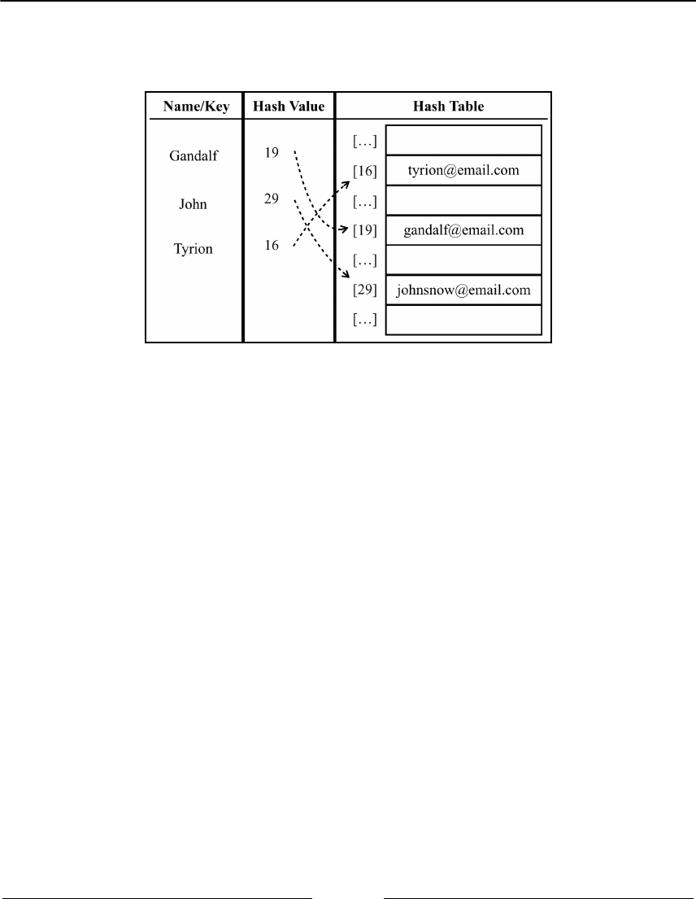
Dictionaries and Hashes Chapter 8
[ 199 ]
The following diagram represents the HashTable data structure with these three elements
in it:
Now, let's test the get method by executing the following code:
console.log(hash.get('Gandalf')); // gandalf@email.com
console.log(hash.get('Loiane')); // undefined
Since Gandalf is a key that exists in HashTable, the get method will return its value.
Since Loiane is not an existing key, when we try to access its position in the array (a
position generated by the hash function), its value will be undefined (non-existent).
Next, let's try to remove Gandalf from HashTable, as follows:
hash.remove('Gandalf');
console.log(hash.get('Gandalf'));
The hash.get('Gandalf') method will return undefined as the output on the console
since Gandalf no longer exists in the table.

Dictionaries and Hashes Chapter 8
[ 200 ]
Hash table versus hash set
A hash table is the same thing as a hash map. We have covered this data structure in this
chapter.
In some programming languages, we also have the hash set implementation. The hash set
data structure consists of a set, but to insert, remove, or get elements, we use a hashCode
function. We can reuse all the code we implemented in this chapter for a hash set; the
difference is that instead of adding a key-value pair, we will insert only the value, not the
key. For example, we could use a hash set to store all the English words (without their
definitions). Similar to the set data structure, the hash set also stores only unique values,
not repeated ones.
Handling collisions between hash tables
Sometimes, different keys can have the same hash value. We will call it a collision since we
will try to set different key-value pairs to the same position of the HashTable instance. For
example, let's take a look at what we get in the output with the following code:
const hash = new HashTable();
hash.put('Ygritte', 'ygritte@email.com');
hash.put('Jonathan', 'jonathan@email.com');
hash.put('Jamie', 'jamie@email.com');
hash.put('Jack', 'jack@email.com');
hash.put('Jasmine', 'jasmine@email.com');
hash.put('Jake', 'jake@email.com');
hash.put('Nathan', 'nathan@email.com');
hash.put('Athelstan', 'athelstan@email.com');
hash.put('Sue', 'sue@email.com');
hash.put('Aethelwulf', 'aethelwulf@email.com');
hash.put('Sargeras', 'sargeras@email.com');
Dictionaries and Hashes Chapter 8
[ 201 ]
By evoking the hash.hashCode method for each name mentioned, we will get the
following output:
4 - Ygritte
5 - Jonathan
5 - Jamie
7 - Jack
8 - Jasmine
9 - Jake
10 - Nathan
7 - Athelstan
5 - Sue
5 - Aethelwulf
10 - Sargeras
Note that Nathan has the same hash value as Sargeras (10). Jack has the
same hash value as Athelstan (7). Jonathan, Jamie, Sue, and
Aethelwulf (5) have the same hash value as well.
What will happen to the HashTable instance? Which values do we have inside it after
executing the previous code?
To help us find out, let's implement the toString method:
toString() {
if (this.isEmpty()) {
return '';
}
const keys = Object.keys(this.table);
let objString = `{${keys[0]} => ${this.table[keys[0]].toString()}}`;
for (let i = 1; i < keys.length; i++) {
objString = `${objString},{${keys[i]} =>
${this.table[keys[i]].toString()}}`;
}
return objString;
}
Since we don't know which positions from the table array have values, we can use a similar
logic to the Dictionary toString method.
After evoking console.log(hashTable.toString()), we will have the following
output on the console:
{4 => [#Ygritte: ygritte@email.com]}
{5 => [#Aethelwulf: aethelwulf@email.com]}
Dictionaries and Hashes Chapter 8
[ 202 ]
{7 => [#Athelstan: athelstan@email.com]}
{8 => [#Jasmine: jasmine@email.com]}
{9 => [#Jake: jake@email.com]}
{10 => [#Sargeras: sargeras@email.com]}
Jonathan, Jamie, Sue, and Aethelwulf have the same hash value—that is, 5.
Since Aethelwulf was the last one to be added, Aethelwulf will be the one to occupy
position 5 of HashTable. First, Jonathan will occupy it, then Jamie will overwrite it,
next Sue will overwrite it one more time, and finally, Aethelwulf will overwrite it again.
The same will happen to the other elements that have a collision.
The idea of using a data structure to store all these values is obviously not to lose these
values; it is to keep them all, one way or another. For this reason, we need to handle this
situation when it happens. There are a few techniques to handle collisions: separate
chaining, linear probing, and double hashing. We will cover the first two techniques in this
book.
Separate chaining
The separate chaining technique consists of creating a linked list for each position of the
table and storing the elements in it. It is the simplest technique to handle collisions;
however, it requires additional memory outside the HashTable instance.
For example, if we use separate chaining in the code we used to do some testing in the
previous topic and represented it in a diagram, this would be the output (the values have
been omitted from the diagram to simplify it):

Dictionaries and Hashes Chapter 8
[ 203 ]
At position 5, we would have a LinkedList instance with four elements in it, at positions
7, and 10, we would have LinkedList instances with two elements in it, and at positions 4,
8, and 9, we would have LinkedList instances with a single element in it.
For separate chaining and linear probing, we need to replace three methods: put, get, and
remove. These three methods will be different for each different technique we decide to
implement.
As usual, let's start declaring the basic structure of the HashTableSeparateChaining:
class HashTableSeparateChaining {
constructor(toStrFn = defaultToString) {
this.toStrFn = toStrFn;
this.table = {};
}
}
The put method
Let's implement the first method, the put method, as follows:
put(key, value) {
if (key != null && value != null) {
const position = this.hashCode(key);
if (this.table[position] == null) { // {1}
this.table[position] = new LinkedList(); // {2}
}
this.table[position].push(new ValuePair(key, value)); // {3}
return true;
}
return false;
}
In this method, we will verify whether the position we are trying to add the value to
already has other values in it ({1}). If this is the first time we are adding an element in this
position, we will initialize it with an instance of the LinkedList class ({2} - which we
learned in Chapter 6, Linked Lists). Then, we will add the ValuePair instance to the
LinkedList instance using the push method ({3}), which we also implemented in Chapter
6, Linked Lists.

Dictionaries and Hashes Chapter 8
[ 204 ]
The get method
Next, we will implement the get method to retrieve a value given a key with the following
code:
get(key) {
const position = this.hashCode(key);
const linkedList = this.table[position]; // {1}
if (linkedList != null && !linkedList.isEmpty()) { // {2}
let current = linkedList.getHead(); // {3}
while (current != null) { // {4}
if (current.element.key === key) { // {5}
return current.element.value; // {6}
}
current = current.next; // {7}
}
}
return undefined; // {8}
}
The first verification we need to do is to check whether there is any value at the desired
position. To do this, we retrieve the linkedList at the hash position ({1}) and we verify
whether there is an instance of the linkedList or if it is empty ({2}). If there is no value,
we return undefined to represent that the value was not found in the HashTable instance
({8}). If there is an object in the position, we know that the instance of this object is a
LinkedList instance. Now, all we have to do is search for the element we want to find by
iterating through the list. To do so, we need to get the reference of the head of the list ({3}),
which is the first element of the linkedList, and then we can iterate through it until we
find the end of the list ({4}, in the last iteration current.next, will be null).
The Node of linkedList contains the next pointer and the element properties. The
element property is an instance of ValuePair, so it has the value and key properties. To
access the key property of the Node of LinkedList, we can use
the current.element.key and compare it to see whether it is the key we are searching for
({5}). If it is the same key attribute, we must return the Node value ({6}), and if not, we
should continue iterating through the list by going to the next element of the list ({7}).
This logic allows us to search for all key attributes at any position of the LinkedList.

Dictionaries and Hashes Chapter 8
[ 205 ]
Another approach for this algorithm is the following: instead of doing the search of the key
inside the get method, we could instantiate the LinkedList in the put method, passing a
custom equalsFn to the LinkedList constructor that compares only the key property of
the element (which is an instance of ValuePair). Just so we remember, by default, the
LinkedList will use the === operator to compare its element instances, meaning it will
compare the reference of the ValuePair instance. In this case, in the get method, we
would use the indexOf method to search for the desired key, which returns a position
bigger or equals zero in case the element exists in the LinkedList. With the position, we
can use the getElementAt to retrieve the ValuePair instance from the LinkedList.
The remove method
Removing a value from the HashTableSeparateChaining instance is a little bit different
from the remove method we implemented earlier in this chapter. Now that we are using
LinkedList, we need to remove the element from LinkedList. Let's take a look at the
remove method implementation:
remove(key) {
const position = this.hashCode(key);
const linkedList = this.table[position];
if (linkedList != null && !linkedList.isEmpty()) {
let current = linkedList.getHead();
while (current != null) {
if (current.element.key === key) { // {1}
linkedList.remove(current.element); // {2}
if (linkedList.isEmpty()) { // {3}
delete this.table[position]; // {4}
}
return true; // {5}
}
current = current.next; // {6}
}
}
return false; // {7}
}

Dictionaries and Hashes Chapter 8
[ 206 ]
In the remove method, we will do the same thing we did in the get method to find the
element we are looking for. When iterating through the LinkedList instance, if the
current element in the list is the key we are looking for ({1}), we will use the remove
method to remove the element from LinkedList ({2}). Then, we will perform an
additional validation: if the list is empty ({3}, there are no elements in it anymore), we will
remove the position from the table using the delete operator ({4}), so we can skip this
position whenever we look for an element. Finally, we will return true to indicate that
the element was removed ({5}), or we will return false at the end to indicate that the
element was not present in HashTableSeparateChaining ({7}). If it is not the element
we are looking for, then we iterate to the next LinkedList element ({6}), as we did for the
get method.
By replacing these three methods, we have a HashTableSeparateChaining instance with
a separate chaining technique to handle collisions.
Linear probing
Another technique of collision resolution is linear probing. It is called linear because the
collision is handled in a way the values will be stored directly in the table, not in a separate
data structure.
When we try to add a new element, if the position of the hash is already occupied, then
we will try position +1. If position +1 is occupied, then we will try position + 2,
and so on, until we find a free position in the hash table. Let's imagine we have a hash table
with some values already in it and we want to add a new key and value. We calculate the
hash for this new key and we check whether the position for the hash is already occupied.
If it is not occupied, we add the value in the correct position. If it is occupied, then we
iterate the hash until we find a free spot.
Dictionaries and Hashes Chapter 8
[ 207 ]
The following diagram demonstrates this process:
When we remove a key-value from the hash table, it is not enough to simply remove the
element from the position which we implemented in the previous data structures of this
chapter. If we only remove the element, it might result in finding an empty spot when
searching for another element with the same hash (position), resulting in a bug in the
algorithm.
There are two options for the linear probing technique. The first one is the soft delete
approach. We use a special value (flag) to indicate that the key-value was deleted (lazy or
soft deletion) instead of actually deleting the element. However, over time, the hash table will
be manipulated and we might end up with a hash table with several deleted spots. This will
gradually deteriorate the hash table's efficiency, as searching for key-values will become
slower over time. To be able to quickly access and find a key is one of the main reasons we
would use a hash table. The following diagram demonstartes this process:
Dictionaries and Hashes Chapter 8
[ 208 ]
The second approach requires verifying whether it is necessary to move one or more
elements to a backward position. When searching for a key, this approach prevents
finding an empty spot, but if it is necessary to move elements, this means we will need to
shift key-values within the hash table. The following diagram exemplifies this process:
Dictionaries and Hashes Chapter 8
[ 209 ]
Both approaches have their pros and cons. For this chapter, we will
implement the second approach (move one or more elements to a
backward position). To check the implementation of the lazy deletion
approach (HashTableLinearProbingLazy class), please refer to the
source code of this book. The download link for the source code is
mentioned in the Preface of the book, or it can also be accessed at http://
github.com/loiane/javascript-datastructures-algorithms.
The put method
Let's go ahead and implement the three methods we need to overwrite. The first one will be
the put method, as follows:
put(key, value) {
if (key != null && value != null) {
const position = this.hashCode(key);
if (this.table[position] == null) { // {1}
this.table[position] = new ValuePair(key, value); // {2}
} else {
let index = position + 1; // {3}
while (this.table[index] != null) { // {4}
index++; // {5}
}
this.table[index] = new ValuePair(key, value); // {6}
}
return true;
}
return false;
}
As usual, we will start by getting the hash position generated by the hashCode method.
Next, we will verify that the position has an element in it ({1}). If not (this is the easiest
scenario), we will add the element to it ({2} - which is an instance of the ValuePair class).
If the position is already occupied, we need to find the next position that is free
(position is undefined or null), so we will create an index variable and assign
position + 1 to it ({3}). Then, we will verify whether the position is occupied ({4}),
and if it is, we will increment index ({5}) until we find a position that is not occupied.
After the while loop, the index will point to a free position. Then, all we have to do is
assign the value we want to this position ({6}).
Dictionaries and Hashes Chapter 8
[ 210 ]
In some languages, we need to define the size of the array. One of the
concerns of using linear probing is when the array is out of available
positions. When the algorithm reaches the end of the array, it needs to
loop back to its beginning and continue iterating its elements - and if
necessary, we also need to create a new bigger array and copy the
elements to the new array. We do not need to worry about this in
JavaScript as we do not need to define a size for the array (and we are
using an associative array), and it can grow as needed automatically. This
is part of JavaScript's built-in functionality.
Let's simulate the insertions in the hash table:
We will try to insert Ygritte. The hash value is 4, and since the hash table was1.
just created, position 4 is empty, so we can insert the name here.
We will try to insert Jonathan at position 5. It is also empty, so we can insert2.
the name.
We will try to insert Jamie at position 5, which also has a hash value of 5.3.
Position 5 is already occupied by Jonathan, so we need to go to position +
1 (5 + 1). Position 6 is free, so we can insert Jamie at 6.
We will try to insert Jack at position 7. It is empty, so we can insert the name,4.
no collisions.
We will try to insert Jasmine at position 8. It is empty, so we can insert the5.
name, no collisions.
We will try to insert Jake at position 9. It is empty, so we can insert the name,6.
no collisions.
We will try to insert Nathan at position 10. It is empty, so we can insert the7.
name, no collisions.
We will try to insert Athelstan at position 7. Position 7 is already occupied8.
by Jack, so we need to go to position + 1 (7 + 1). Position 8 is also not
free, so we iterate until the next free position, which is 11, and insert Athelstan.
We will try to insert Sue at position 5. 5 to 11 are all occupied, so we go to9.
position 12 and insert Sue.
We will try to insert Aethelwulf at position 5. 5 to 12 are all occupied, so we10.
go to position 13 and insert Aethelwulf.
We will try to insert Sargeras at position 10. 10 to 13 are all occupied, so we11.
go to position 14 and insert Sargeras.

Dictionaries and Hashes Chapter 8
[ 211 ]
The get method
Now that we have added our elements, let's implement the get function so that we can
retrieve their values, as follows:
get(key) {
const position = this.hashCode(key);
if (this.table[position] != null) { // {1}
if (this.table[position].key === key) { // {2}
return this.table[position].value; // {3}
}
let index = position + 1; // {4}
while (this.table[index] != null && this.table[index].key !== key) { //
{5}
index++;
}
if (this.table[index] != null && this.table[index].key === key) { //
{6}
return this.table[position].value; // {7}
}
}
return undefined; // {8}
}
To retrieve a key's value, we first need to verify whether the key exists ({1}). If it does not
exist, it means that the value is not in the hash table, so we can return undefined ({8}). If it
does exist, we need to check whether the value we are looking for is the one at the original
hash position ({2}). If positive, we will simply return its value ({3}).
If not, we will iterate through the HashTableLinearProbing elements starting for the next
hash position ({4}). We will continue searching the increasing positions of the
HashTableLinearProbing instance until we find a position that contains an element that
is the element we are looking for, or we find an empty spot ({5}). When we get out of the
while loop, we verify whether the element's key matches the key we are searching for
({6}), and if positive, we will return its value ({7}). If after we iterate through the
table the index position is undefined or null, it means the key does not exist and we
return undefined ({8}).
The remove method
The remove method is very similar to the get method, and it is declared as follows:
remove(key) {
const position = this.hashCode(key);
if (this.table[position] != null) {

Dictionaries and Hashes Chapter 8
[ 212 ]
if (this.table[position].key === key) {
delete this.table[position]; // {1}
this.verifyRemoveSideEffect(key, position); // {2}
return true;
}
let index = position + 1;
while (this.table[index] != null && this.table[index].key !== key ) {
index++;
}
if (this.table[index] != null && this.table[index].key === key) {
delete this.table[index]; // {3}
this.verifyRemoveSideEffect(key, index); // {4}
return true;
}
}
return false;
}
In the get method, when we find the key we are looking for, we return its value. In the
remove method, we will delete the element from the hash table. We can find the element
directly in the original hash position ({1}) or in a different spot if the collision has
handled ({3}). Since we do not know if there are more elements with the same hash in a
different position, we need to verify whether the removal has any side effects. If so, we
need to move the collided element to a backward position so we do not end up with
empty spots ({2} and {4}). To do so, we will create a helper method with this logic, which
is declared as follows:
verifyRemoveSideEffect(key, removedPosition) {
const hash = this.hashCode(key); // {1}
let index = removedPosition + 1; // {2}
while (this.table[index] != null) { // {3}
const posHash = this.hashCode(this.table[index].key); // {4}
if (posHash <= hash || posHash <= removedPosition) { // {5}
this.table[removedPosition] = this.table[index]; // {6}
delete this.table[index];
removedPosition = index;
}
index++;
}
}

Dictionaries and Hashes Chapter 8
[ 213 ]
The verifyRemoveSideEffect method received two parameters: the key that was
removed and the position in which the key was removed. First, we will retrieve the hash
of the key that was removed ({1} - we could also pass this value as a parameter to this
method). Then, we will start iterating the table starting from the next position ({2})
until we find an empty spot ({3}). When a free spot is found, it means the elements are in
place and no moves (or more moves) are necessary. While iterating the following elements,
we need to calculate the hash for the element of the current position ({4}). If the hash of
the current element is lesser or equal to the original hash ({5}) or if the hash of the current
element is lesser or equal to the removedPosition (which is the hash of the last removed
key), it means we need to move the current element to the removedPosition ({6}). Doing
so, we can delete the current element (since it was copied to the removedPosition). We
also need to update the removedPosition to the current index, and we repeat the process.
Let's consider the hash table we created to exemplify the put method. Suppose we want to
remove Jonathan from the hash table. Let's simulate this removal in the hash table:
We will find and remove Jonathan from position 5. 5 is now free. We will1.
verify the side effects.
We go to position 6 where we stored Jamie, also with hash 5. His hash 5 <=2.
hash 5, so we will copy Jamie to position 5 and delete Jamie. Position 6 is
now free and we will verify the next position.
We go to position 7 where we stored Jack with hash 7. His hash 7 > hash3.
5, and hash 7 > removedPosition 6, so there's no need to move him. The
next position is also occupied, so we will verify the next position.
We go to position 8 where we stored Jasmine with hash 8. hash 8 > hash 54.
of Jasmine, and hash 8 > removedPosition 6, so there's no need to move
her. The next position is also occupied, so we will verify the next position.
We go to position 9 where we stored Jake with hash 9. His hash 9 > hash5.
5, and hash 9 > removedPosition 6, so there's no need to move him. The
next position is also occupied, so we will verify the next position.
We will repeat this same process until position 12.6.
We go to position 12 where we stored Sue with hash 5. Her hash 5 <= hash7.
5, and hash 5 <= removedPosition 6, so will copy Sue to position 6 and
delete Sue at position 12. Position 12 is now free. The next position is also
occupied, so we will verify the next position.

Dictionaries and Hashes Chapter 8
[ 214 ]
We go to position 13 where we stored Aethelwulf with hash 5. His hash 58.
<= hash 5, and hash 5 <= removedPosition 12, so we will copy
Aethelwulf to position 12 and delete position 13. Position 13 is now free.
The next position is also occupied, so we will verify the next position.
We go to position 14 where we stored Sargeras with hash 10. hash 10 >9.
hash 5 of Aethelwulf, but hash 10 <= removedPosition 13, so we will
copy Sargeras to position 13 and delete position 14. Position 14 is now
free. The next position is free, so the execution is completed.
Creating better hash functions
The lose-lose hash function we implemented is not a good hash function, as we have
concluded (too many collisions). We would have multiple collisions if we used this
function. A good hash function is composed of certain factors: the time to insert and retrieve
an element (performance) and also a low probability of collisions. We can find several
different implementations on the internet, or we can create our own.
Another simple hash function that we can implement and which is better than the lose-
lose hash function is djb2, which is as follows:
djb2HashCode(key) {
const tableKey = this.toStrFn(key); // {1}
let hash = 5381; // {2}
for (let i = 0; i < tableKey.length; i++) { // {3}
hash = (hash * 33) + tableKey.charCodeAt(i); // {4}
}
return hash % 1013; // {5}
}
After transforming the key to a string ({1}), the djb2HashCode method consists of
initializing the hash variable with a prime number ({2}, most implementations use 5381);
then, we will iterate each character of the string that represents the key ({3}), multiply the
hash value by 33 (used as a magical number), and sum it with the ASCII value of the
character ({4}).
Finally, we will use the rest of the division of the total by another random prime number
({5}), greater than the size we think the HashTable instance can have. In our scenario, let's
consider 1,000 as the size.
Dictionaries and Hashes Chapter 8
[ 215 ]
If we run the inserts from the linear probing section again, this will be the result we will get
using djb2HashCode instead of loseloseHashCode:
807 - Ygritte
288 - Jonathan
962 - Jamie
619 - Jack
275 - Jasmine
877 - Jake
223 - Nathan
925 - Athelstan
502 - Sue
149 - Aethelwulf
711 - Sargeras
No collisions!
This is not the best hash function that exists, but it is one of the most highly recommended
hash functions by the community.
There are also a few techniques to create hash functions for numeric keys.
You can find a list and implementations at: http://goo.gl/VtdN2x.
The ES2015 Map class
ECMAScript 2015 introduced a Map class as part of the JavaScript API. We developed our
Dictionary class based on the ES2015 Map class.
You can take a look at the details of the ECMAScript 2015 Map class
implementation
at: https://developer.mozilla.org/en-US/docs/Web/JavaScript/Refer
ence/Global_Objects/Map (or http://goo.gl/dm8VP6).
Let's learn how we can use the native Map class, as well. Let's use the same examples we
used to test our Dictionary class:
const map = new Map();
map.set('Gandalf', 'gandalf@email.com');
map.set('John', 'johnsnow@email.com');
map.set('Tyrion', 'tyrion@email.com');
Dictionaries and Hashes Chapter 8
[ 216 ]
console.log(map.has('Gandalf')); // true
console.log(map.size); // 3
console.log(map.keys()); // MapIterator {"Gandalf", "John", "Tyrion"}
console.log(map.values()); // MapIterator {"gandalf@email.com",
"johnsnow@email.com", "tyrion@email.com"}
console.log(map.get('Tyrion')); // tyrion@email.com
The difference between our Dictionary class and the ES2015 Map class is that the values
and keys methods return an Iterator (which we learned in Chapter 3, Arrays) instead of
the array with the values or the keys. Another difference is that we developed a size
method to return the number of values the map is storing. The ES2015 Map class has a
property named size.
We can also call the delete method to remove an element from the map, as follows:
map.delete('John');
The clear method also resets the map data structure. This is the same functionality we
implemented in the Dictionary class.
The ES2015 WeakMap and WeakSet classes
Along with the two new data structures Set and Map, ES2015 also introduced a weak type
version of these classes: WeakMap and WeakSet.
Basically, the only difference between the Map or Set classes and their weak versions are:
The WeakSet or WeakMap classes do not have the entries, keys, and values
methods
It is only possible to use objects as keys
The reason for creating and using these two classes is performance-related. Since WeakSet
and WeakMap are weakly typed (using the object as a key), there is no strong reference to the
keys. This behavior allows the JavaScript garbage collector to clean an entire entry from the
map or set.
Another advantage of the weak versions is we can only retrieve a value if you have its key.
Since these classes do not have the iterator methods (entries, keys, and values), there is
no way to retrieve a value unless you know what the key is. This confirms our choice in
using the WeakMap class to encapsulate the private properties of the ES2015 classes, as we
learned in Chapter 4, Stacks.

Dictionaries and Hashes Chapter 8
[ 217 ]
The following code is an example of what we can do with the WeakMap class:
const map = new WeakMap();
const ob1 = { name: 'Gandalf' }; // {1}
const ob2 = { name: 'John' };
const ob3 = { name: 'Tyrion' };
map.set(ob1, 'gandalf@email.com'); // {2}
map.set(ob2, 'johnsnow@email.com');
map.set(ob3, 'tyrion@email.com');
console.log(map.has(ob1)); // true {3}
console.log(map.get(ob3)); // tyrion@email.com {4}
map.delete(ob2); // {5}
We can still use the set method of the WeakMap class ({2}). However, since it does not
allow us to use string or any other primitive datatype (numeric, string, or boolean values),
we need to transform the name into an object ({1}).
To search for a specific value ({3}), retrieve it ({4}), and also delete it ({5}), we need to
pass the created object as a key.
The same logic is applied to the WeakSet class.
Summary
In this chapter, we learned about dictionaries and how to add, remove, and get elements,
among other methods. We also learned the difference between a dictionary and a set.
We covered hashing, how to create a hash table (or hash map) data structure, how to add,
remove, and get elements, and also how to create hash functions. We learned how to handle
collisions in a hash table using two different techniques.
We also covered how to use the ES2105 Map class as well as the WeakMap and WeakSet
classes.
In the next chapter, we will learn a new data structure called tree.
9
Recursion
In previous chapters, we learned about different iterative data structures. Starting with next
chapter, we will start using a special method to make it easier to write the algorithms used
to access the tree and graph data structures, which is recursion. But before we start diving
into trees and graphs, we need to understand how recursion works.
In this chapter, we will cover:
Understanding recursion
Calculating the factorial of a number
The Fibonacci sequence
JavaScript call stack
Understanding recursion
There is a famous programming wisdom quote that says:
“To understand recursion, one must first understand recursion.”
- Unknown
Recursion is a method to solve problems that consist of solving smaller portions of the
same problem until you solve the original, larger problem. It usually involves calling the
function itself.
A method or function is recursive if it can call itself directly, as follows:
function recursiveFunction(someParam){
recursiveFunction(someParam);
}

Recursion Chapter 9
[ 219 ]
A function is also called recursive if it can call itself indirectly, as follows:
function recursiveFunction1(someParam){
recursiveFunction2(someParam);
}
function recursiveFunction2(someParam){
recursiveFunction1(someParam);
}
Suppose we have to execute recursiveFunction. What would the result be? In this case,
it would be executed indefinitely. For this reason, every recursive function must have
a base case, which is a condition in which no recursive call is made (a stopping point) to
prevent infinite recursion.
Going back to the mentioned programming wisdom, by understanding what recursion is,
we solve the original problem. If we translate this programming wisdom into JavaScript
code, we can write it as follows:
function understandRecursion(doIunderstandRecursion) {
const recursionAnswer = confirm('Do you understand recursion?');
if (recursionAnswer === true) { // base case or stop point
return true;
}
understandRecursion(recursionAnswer); // recursive call
}
The understandRecursion function will keep calling itself until
the recursionAnswer is yes (true). Having the recursionAnswer as yes is the base case
in the preceding code.
Let’s take a look at some famous recursive algorithms in the following section.
Calculating the factorial of a number
For our first example of recursion, let’s take a look at how to compute the factorial of a
number. A factorial of a number, n, is defined by n! and it is the result of multiplying the
numbers from 1 to n.
The factorial of 5 is represented by 5! and it is equal to 5 * 4 * 3 * 2 * 1, resulting in 120.

Recursion Chapter 9
[ 220 ]
Iterative factorial
If we try to represent the steps to compute the factorial of any number n, we can define the
steps as follows: (n) * (n - 1) * (n - 2) * (n - 3) * ... * 1.
We can write a function to compute the factorial of a number using a loop as demonstrated:
function factorialIterative(number) {
if (number <
0
) return undefined;
let total = 1;
for (let n = number; n > 1; n--) {
total = total * n;
}
return total;
}
console.log(factorialIterative(5)); // 120
We can start computing the factorial starting at the given number, and decrease n until it
has a value of 2 since the factorial of 1 is 1 and it is already included in the total variable.
The factorial of zero is also 1. The factorial of negative numbers will not be computed.
Recursive factorial
Now, let’s try rewriting the factorialIterative function using recursion. But first, let’s
define all the steps using a recursive definition.
The factorial of 5 is computed by 5 * 4 * 3 * 2 * 1. The factorial of 4 (n -1) is
computed by 4 * 3 * 2 * 1. Computing (n - 1) is a subproblem we solve to compute
n!, which is the original problem, so we can define the factorial of 5 as follows:
factorial(5) = 5 * factorial(4): We can compute 5! as 5 * 4!.1.
factorial(5) = 5 * (4 * factorial(3)): We need to solve the2.
subproblem of computing 4!, which we can compute as 4 * 3!.
factorial(5) = 5 * 4 * (3 * factorial(2)): We need to solve the3.
subproblem of computing 3!, which we can compute as 3 * 2!.
factorial(5) = 5 * 4 * 3 * (2 * factorial(1)): We need to solve the4.
subproblem of computing 2!, which we can compute as 2 * 1!.
factorial(5) = 5 * 4 * 3 * 2 * (1): We need to solve the subproblem of5.
computing 1!.
factorial(1) or factorial(0) returns 1. 1! is equal to 1. We could also say6.
that 1! = 1 * 0! and 0! is also 1.
Recursion Chapter 9
[ 221 ]
The factorial function using recursion is declared as follows:
function factorial(n) {
if (n === 1 || n ===
0
) { // base case
return 1;
}
return n * factorial(n - 1); // recursive call
}
console.log(factorial(5)); // 120
The call stack
We learned about the stack data structure in Chapter 4, Stacks. We will see it in action in a
real application using recursion. Whenever a function is called by an algorithm, the function
goes on the top of the call stack. When using recursion, each function call will be stacked on
top of each other, due to the possibility of one call depending on the result of the previous
invocation itself.
We can see the Call Stack in action using the browser, as demonstrated in the following
screenshot:
If we execute factorial(3), open the developer tools of the browser, go to Sources, and
add a breaking point in the Factorial.js file, when n has a value of 1, we will be able to
see the Call Stack with three calls to the factorial function. If we continue the execution,
we will also see that as a result of factorial(1) being returned, the Call Stack will start to
pop the factorial calls.

Recursion Chapter 9
[ 222 ]
We can also add console.trace() at the beginning of the function to see the result in the
browser’s console as well:
function factorial(n) {
console.trace();
// function logic
}
When factorial(3) is evoked, we will get the following output in the console:
factorial @ 02-Factorial.js:18
(anonymous) @ 02-Factorial.js:25 // console.log(factorial(3)) call
When factorial(2) is evoked, we will get the following output in the console:
factorial @ 02-Factorial.js:18
factorial @ 02-Factorial.js:22 // factorial(3) is waiting factorial(2)
(anonymous) @ 02-Factorial.js:25 // console.log(factorial(3)) call
Finally, when factorial(1) is evoked, we will get the following output in the console:
factorial @ 02-Factorial.js:18
factorial @ 02-Factorial.js:22 // factorial(2) is waiting factorial(1)
factorial @ 02-Factorial.js:22 // factorial(3) is waiting factorial(2)
(anonymous) @ 02-Factorial.js:25 // console.log(factorial(3)) call
We can represent the steps executed and the actions in the call stack in the following
diagram:
When factorial(1) returns 1, the stack will start to pop the calls, returning the results
until 3 * factorial(2) is computed.
Recursion Chapter 9
[ 223 ]
JavaScript limitation on the call stack size
What happens when we forget to add a base case to stop the recursive calls of a function? It
will not be executed indefinitely; the browser will throw an error, which is known as a stack
overflow error.
Each browser has its own limitations, and we can use the following code to do some testing:
let i =
0
;
function recursiveFn() {
i++;
recursiveFn();
}
try {
recursiveFn();
} catch (ex) {
console.log('i = ' + i + ' error: ' + ex);
}
In Chrome version 65, the function is executed 15,662 times, and the browser throws the
error RangeError: Maximum call stack size exceeded. In Firefox version 59, the
function is executed 188,641 times, and the browser throws the error InternalError: too
much recursion. In Edge version 41, the function is executed 17,654 times.
Depending on your operating system and browser, the values might be
different, but they will be close.
ECMAScript 2015 has tail call optimization. If a function call is the last action inside a
function (in our example, the highlighted line), and it is handled via a “jump”, not via a
“subroutine call”. This means that our code can be executed forever in ECMAScript 2015.
This is why it is very important to have a base case to stop the recursion.
For more information about tail call optimization, visit https://goo.gl/
3Rxq7L.

Recursion Chapter 9
[ 224 ]
The Fibonacci sequence
The Fibonacci sequence is another problem that we can solve using recursion. It is a series
of the numbers 0, 1, 1, 2, 3, 5, 8, 13, 21, 34, and so on. The number 2 is found by adding 1 + 1.
The number 3 is found by adding 1 + 2, 5 is found by adding 2 + 3, and so on! The Fibonacci
sequence can be defined as follows:
The Fibonacci number at position 0 is 0.1.
The Fibonacci number at position 1 or 2 is 1.2.
The Fibonacci number at position n (for n > 2) is the Fibonacci of (n - 1) +3.
Fibonacci of (n - 2).
Iterative Fibonacci
We implement the fibonacci function in an iterative way, as follows:
function fibonacciIterative(n) {
if (n < 1) return 0;
if (n <= 2) return 1;
let fibNMinus2 =
0
;
let fibNMinus1 = 1;
let fibN = n;
for (let i = 2; i <= n; i++) { // n >= 2
fibN = fibNMinus1 + fibNMinus2; // f(n-1) + f(n-2)
fibNMinus2 = fibNMinus1;
fibNMinus1 = fibN;
}
return fibN;
}
Recursive Fibonacci
The fibonacci function can be written as follows:
function fibonacci(n){
if (n < 1) return
0
; // {1}
if (n <= 2) return 1; // {2}
return fibonacci(n - 1) + fibonacci(n - 2); // {3}
}
Recursion Chapter 9
[ 225 ]
In the preceding code, we have the base cases ({1} and {2}) and the logic to compute the
Fibonacci for n > 2 ({3}).
If we try to find the fibonacci(5), the following will be the result of the calls that are
made:
Fibonacci with memoization
There is also a third approach, called memoization, that we can use to write
the fibonacci function. Memoization consists of an optimization technique that stores the
values of previous results, similar to a cache. If we analyze the calls made to
compute fibonacci(5), we will notice that fibonacci(3) was computed twice, so we
can store its result so that when we compute it again, we already have it.
The following code represents the fibonacci function written with memoization:
function fibonacciMemoization(n) {
const memo = [
0
, 1]; // {1}
const fibonacci = (n) => {
if (memo[n] != null) return memo[n]; // {2}
return memo[n] = fibonacci(n - 1, memo) + fibonacci(n - 2, memo); //
{3}
};
return fibonacci;
}
Recursion Chapter 9
[ 226 ]
In the preceding code, we are declaring a memo array that will cache all the computed
results ({1}). If the result has been computed, we return it ({2}), otherwise, we compute
the result and add it to the cache ({3}).
Why use recursion? Is it faster?
Let’s run a benchmark between the three different fibonacci functions we wrote in this
chapter:
The Iterative version is much faster than the Recursive versions, so this means recursion is
slower. However, take another look at the code of the three different versions. Recursion is
easier to understand, and it usually requires less code as well. Also, for some algorithms, an
Iterative solution may not even be available, and with tail call elimination, the recursion
penalty may even be removed.
So, we usually use recursion because it is easier to solve problems using it.
The fibonacci function tests are available at https://jsperf.com/
fibonacci-comparison-jsbook.

Recursion Chapter 9
[ 227 ]
Summary
In this chapter, we learned how to write iterative and recursive versions of two famous
algorithms: the factorial of a number and the Fibonacci sequence. We learned that in case a
recursive algorithm needs to compute the same result more than once, we can use an
optimization technique called memoization.
We also compared the performance of the iterative and recursive versions of the Fibonacci
algorithm, and we learned that even though the iterative version might be faster, a
recursive algorithm is easier to read and understand what it is doing.
In the next chapter, we will learn the tree data structure and we will create the Tree class,
where most of its methods use recursion.
10
Trees
So far in this book, we have covered some sequential data structures. The first non-
sequential data structure we covered in this book was the Hash Table. In this chapter, you
will learn about another non-sequential data structure called a tree, which is very useful for
storing information that needs to be found easily.
In this chapter, we will cover:
Tree terminology
Creating a binary search tree
Traversing a tree
Adding and removing nodes
The AVL tree
Trees Chapter 10
[ 229 ]
The tree data structure
A tree is an abstract model of a hierarchical structure. The most common example of a tree
in real life would be a family tree or a company organizational chart, as we can see in the
following figure:
Tree terminology
A tree consists of nodes with a parent-child relationship. Each node has a parent (except for
the first node at the top) and zero or more children, as in the following figure:
Trees Chapter 10
[ 230 ]
The top node of a tree is called the root (11). It is the node that does not have a parent. Each
element of the tree is called a node. There are internal nodes and external nodes. An
internal node is a node with at least one child (7, 5, 9, 15, 13, and 20 are internal nodes). A
node that does not have children is called an external node or a leaf (3, 6, 8, 10, 12, 14, 18,
and 25 are leaves).
A node can have ancestors and descendants. The ancestors of a node (except the root) are
the parent, grandparent, great-grandparent, and so on. The descendants of a node are
children (child), grandchildren (grandchild), great-grandchildren (great-grandchild), and so
on. For example, node 5 has 7 and 11 as its ancestors and 3 and 6 as its descendants.
Another terminology used with trees is the subtree. A subtree consists of a node and its
descendants. For example, the nodes 13, 12, and 14 constitute a subtree from the tree of the
preceding diagram.
The depth of a node consists of the number of ancestors. For example, node 3 has a depth of
3 because it has three ancestors (5, 7, and 11).
The height of a tree consists of the maximum depth of any node. A tree can also be broken
down into levels. The root is on level 0, its children are on level 1, and so on. The tree from
the preceding diagram has a height of 3 (the maximum depth is 3, as shown in the
preceding figure on level 3).
Now that we know the most important terms related to trees, we can start learning more
about trees.
Trees Chapter 10
[ 231 ]
The binary and binary search trees
A node in a binary tree has two children at most: one left child and one right child. This
definition allows us to write more efficient algorithms to insert, search, and delete nodes
to/from a tree. Binary trees are largely used in computer science.
A binary search tree (BST) is a binary tree, but it only allows you to store nodes with lesser
values on the left-hand side and nodes with greater values on the right-hand side. The
diagram in the previous topic exemplifies a binary search tree.
This will be the data structure that we will work on in this chapter.
Creating the Node and BinarySearchTree classes
Let’s start by creating our Node class that will represent each node of our binary search tree
using the following code:
export class Node {
constructor(key) {
this.key = key; // {1} node value
this.left = null; // left child node reference
this.right = null; // right child node reference
}
}
The following diagram exemplifies how a binary search tree (BST) is organized in terms of
the data structure:
Trees Chapter 10
[ 232 ]
Just as in linked lists, we will work with pointers (references) again to represent the
connection between the nodes (called edges in tree terminology). When we worked
with doubly linked lists, each node had two pointers: one to indicate the next node and
another one to indicate the previous node. When working with trees, we will use the same
approach, meaning we will also work with two pointers. However, one pointer will point to
the left child, and the other one will point to the right child. For this reason, we will need
a Node class that will represent each node of the tree. A small detail that is worth noting is
that instead of calling the node itself as a node or item, as we did in the previous chapters,
we will call it as key ({1}). A key is what a tree node is known as in tree terminology.
Next, we will declare the basic structure of our BinarySearchTree class:
import { Compare, defaultCompare } from '../util';
import { Node } from './models/node';
export default class BinarySearchTree {
constructor(compareFn = defaultCompare) {
this.compareFn = compareFn; // used to compare node values
this.root = null; // {1} root node of type Node
}
We will follow the same pattern we used in the LinkedList class (from Chapter 6, Linked
Lists). This means that we will also declare a variable so that we can control the first node of
the data structure. In the case of a tree, instead of the head, we have the root ({1}).
Next, we need to implement some methods. The following are the methods we create in
our BinarySearchTree class:
insert(key): This method inserts a new key in the tree
search(key): This method searches for the key in the tree and returns true if it
exists and false if the node does not exist
inOrderTraverse(): This method visits all nodes of the tree using in-order
traverse
preOrderTraverse(): This method visits all nodes of the tree using pre-order
traverse
postOrderTraverse(): This method visits all the nodes of the tree using post-
order traverse
min(): This method returns the minimum value/key in the tree
max(): This method returns the maximum value/key in the tree
remove(key): This method removes the key from the tree

Trees Chapter 10
[ 233 ]
We will implement each of these methods in the subsequent sections.
Inserting a key into the BST
The methods we will create in this chapter are a little bit more complex than the ones we
implemented in previous chapters. We will use a lot of recursion in our methods. If you are
not familiar with recursion, please refer to Chapter 9, Recursion.
The following code is the first piece of the algorithm used to insert a new key in a tree:
insert(key) {
if (this.root == null) { // {1}
this.root = new Node(key); // {2}
} else {
this.insertNode(this.root, key); // {3}
}
}
To insert a new node (or key) into a tree, there are two steps that we need to follow.
The first step is verifying whether the insertion is a special case. The special case for the BST
is if the node we are trying to add is the first one in the tree ({1}). If it is, all we have to do is
point the root to this new node ({2}) by creating an instance of the Node class and
assigning it to the root property. Because of the Node constructor properties, we only need
to pass the value we want to add to the tree (key), and its left and right pointers will
have a null value automatically.
The second step is to add the node to a different position than the root. In this case, we will
need a helper ({3}) method to help us to do this, which is declared as follows:
insertNode(node, key) {
if (this.compareFn(key, node.key) === Compare.LESS_THAN) { // {4}
if (node.left == null) { // {5}
node.left = new Node(key); // {6}
} else {
this.insertNode(node.left, key); // {7}
}
} else {
if (node.right == null) { // {8}
node.right = new Node(key); // {9}
} else {
this.insertNode(node.right, key); // {10}
}
}
Trees Chapter 10
[ 234 ]
}
The insertNode method will help us find out where the correct place to insert a new node
is. The following list describes what this method does:
If the tree is not empty, we need to find a place to add a new node. For this
reason, we will call the insertNode method by passing the root node and the
key we want to insert as parameters ({3}).
If the node’s key is lesser than the current node key (in this case, it is the root
({4})), then we need to check the left child of the node. Note that here, we are
using the compareFn function that can be passed in the BST class constructor to
compare the values since the key can be a complex object instead of a number. If
there is no left node ({5}), then we will insert the new key as the left node ({6}).
If not, we need to descend a level in the tree by calling insertNode recursively
({7}). In this case, the node we will compare next time will be the left child of the
current node (left node subtree).
If the node’s key is greater than the current node key and there is no right child
({8}), then we will insert the new key as the right child ({9}). If not, we will also
need to call the insertNode method recursively, but the new node to be
compared will be the right child ({10} - right node subtree).
Let’s apply this logic in an example so that we can understand this process better. Consider
the scenario—we have a new tree, and we are trying to insert its first key. In this case, we
will run the following code:
const tree = new BinarySearchTree();
tree.insert(11);
In this case, we will have a single node in our tree, and the root property will be pointing
to it. The code that will be executed is in lines {1} and {2} of our source code.
Trees Chapter 10
[ 235 ]
Now, consider that we already have the following tree:
The code to create the tree seen in the preceding diagram is a continuation of the previous
code (in which we inserted the 11 key), as follows:
tree.insert(7);
tree.insert(15);
tree.insert(5);
tree.insert(3);
tree.insert(9);
tree.insert(8);
tree.insert(10);
tree.insert(13);
tree.insert(12);
tree.insert(14);
tree.insert(20);
tree.insert(18);
tree.insert(25);
We would also like to insert a new key with the value 6, so we will execute the following
code as well:
tree.insert(6);
The following steps will be executed:
The tree is not empty, so the code from line {3} will be executed. The code will1.
call the insertNode method (root, key[6]).
The algorithm will check line {4} (key[6] < root[11] is true), then it will2.
check line {5} (node.left[7] is not null), and finally, it will go to line {7} by
calling insertNode(node.left[7], key[6]).
Trees Chapter 10
[ 236 ]
We will go inside the insertNode method again, but with different parameters.3.
It will check line {4} again (key[6] < node[7] is true), then it will check
line {5} ( node.left[5] is not null), and finally, it will go to line {7} by
calling insertNode (node.left[5], key[6]).
We will go into the insertNode method once more. It will check line {4} again4.
(key[6] < node[5] is false), then it will go to
line {8} (node.right is null — node 5 does not have any right child
descendants), and finally, it will execute line {9} by inserting key 6 as the right
child of node 5.
After this, the stack of method calls will pop up, and the execution will end.5.
This will be the result after key 6 is inserted in the tree:
Tree traversal
Traversing (or walking) a tree is the process of visiting all the nodes of a tree and
performing an operation at each node. However, how should we do this? Should we start
from the top of the tree or from the bottom? From the left-hand or the right-hand side?
There are three different approaches that can be used to visit all the nodes in a tree: in-
order, pre-order, and post-order.
In the following sections, we will dive into the uses and implementations of these three
types of tree traversals.

Trees Chapter 10
[ 237 ]
In-order traversal
An in-order traversal visits all the nodes of a BST in an ascending order, meaning it will
visit the nodes from the smallest to the largest. An application of in-order traversal would
be to sort a tree. Let's check out its implementation:
inOrderTraverse(callback) {
this.inOrderTraverseNode(this.root, callback); // {1}
}
The inOrderTraverse method receives a callback function as a parameter. This function
can be used to perform the action we want to execute when the node is visited (this is
known as the visitor pattern; for more information on this, refer to: http://en.wikipedia.
org/wiki/Visitor_pattern). Since most of the algorithms we are implementing for the BST
are recursive, we will use a helper method that will receive the root node of the tree (or
subtree) and the callback function ({1}). The helper method is listed as follows:
inOrderTraverseNode(node, callback) {
if (node != null) { // {2}
this.inOrderTraverseNode(node.left, callback); // {3}
callback(node.key); // {4}
this.inOrderTraverseNode(node.right, callback); // {5}
}
}
To traverse a tree using the in-order approach, first we need to check whether the
tree node that was passed as a parameter is null ({2} - this is the point where the recursion
stops being executed, which is the base case of the recursive algorithm).
Next, we will visit the left node ({3}) by evoking the same function recursively. Then, we
will visit the root node ({4}) by performing an action with it (callback), and then we will
visit the right node ({5}).
Let’s try to execute this method using the tree from the previous topic as an example, as
follows:
const printNode = (value) => console.log(value); // {6}
tree.inOrderTraverse(printNode); // {7}
Trees Chapter 10
[ 238 ]
First, we need to create a callback function ({6}). All we will do is print the node’s value on
the browser’s console. Then, we can call the inOrderTraverse method by passing our
callback function as a parameter ({7}). When we execute this code, the following will be the
output in the console (each number will be an output on a different line):
3 5 6 7 8 9 10 11 12 13 14 15 18 20 25
The following diagram illustrates the path that the inOrderTraverse method followed:
Pre-order traversal
A pre-order traversal visits the node prior to its descendants. An application of pre-order
traversal could be to print a structured document.
Let’s take a look at its implementation:
preOrderTraverse(callback) {
this.preOrderTraverseNode(this.root, callback);
}
The preOrderTraverseNode method implementation is declared as follows:
preOrderTraverseNode(node, callback) {
if (node != null) {
callback(node.key); // {1}
this.preOrderTraverseNode(node.left, callback); // {2}
this.preOrderTraverseNode(node.right, callback); // {3}
}
}
Trees Chapter 10
[ 239 ]
The difference between the in-order and pre-order traversals is that the pre-order one visits
the root node first ({1}), then the left node ({2}), and finally the right node ({3}), while the
in-order traversal executes the lines in the following order: lines {2}, {1}, and {3}.
The following will be the output in the console (each number will be printed on a different
line):
11 7 5 3 6 9 8 10 15 13 12 14 20 18 25
The following diagram illustrates the path followed by the preOrderTraverse method:
Post-order traversal
A post-order traversal visits the node after it visits its descendants. An application of post-
order traversal could be computing the space used by a file in a directory and its
subdirectories.
Let’s take a look at its implementation:
postOrderTraverse(callback) {
this.postOrderTraverseNode(this.root, callback);
}
Trees Chapter 10
[ 240 ]
The postOrderTraverseNode implementation is declared as follows:
postOrderTraverseNode(node, callback) {
if (node != null) {
this.postOrderTraverseNode(node.left, callback); // {1}
this.postOrderTraverseNode(node.right, callback); // {2}
callback(node.key); // {3}
}
}
In this case, the post-order traversal will visit the left node ({1}), then the right node ({2}),
and finally, the root node ({3}).
The algorithms for the in-order, pre-order, and post-order approaches are very similar; the
only thing that changes is the order in which lines {1}, {2}, and {3} are executed in each
method.
This will be the output in the console (each number will be printed on a different line):
3 6 5 8 10 9 7 12 14 13 18 25 20 15 11
The following diagram illustrates the path the postOrderTraverse method followed:
Trees Chapter 10
[ 241 ]
Searching for values in a tree
There are three types of searches that are usually performed in trees:
Searching for minimum values
Searching for maximum values
Searching for a specific value
Let’s take a look at each one in the following topics.
Searching for minimum and maximum values
Consider the following tree for our examples:
Just looking at the preceding figure, could you easily find the minimum and maximum
values of the tree?
If you take a look at the leftmost node in the last level of the tree, you will find the value 3,
which is the lowest key from this tree, and if you take a look at the node that is furthest to
the right (also in the last level of the tree), you will find the value 25, which is the highest
key in this tree. This information helps us a lot when implementing methods that will find
the minimum and maximum nodes of the tree.
First, let’s take a look at the method that will find the minimum key of the tree, as follows:
min() {
return this.minNode(this.root); // {1}
}
Trees Chapter 10
[ 242 ]
The min method will be the method exposed to the user. This method calls
the minNode method ({1}), which is declared as follows:
minNode(node) {
let current = node;
while (current != null && current.left != null) { // {2}
current = current.left; // {3}
}
return current; // {4}
}
The minNode method allows us to find the minimum key starting from any node of the tree.
We can use it to find the minimum key from a subtree or from the tree itself. For this reason,
we will call the minNode method by passing the tree root node ({1}) because we want to
find the minimum key of the whole tree.
Inside the minNode method, we will traverse the left edge of the tree (lines {2} and {3})
until we find the node at the highest level of the tree (the leftmost end).
The logic used in the minNode method is very similar to the code we used
to iterate until the last node of a linked list in Chapter 6, Linked Lists. The
difference here is that we are iterating until we find the leftmost node of
the tree.
In a similar way, we also have the max method, which looks similar to the following:
max() {
return this.maxNode(this.root);
}
maxNode(node) {
let current = node;
while (current != null && current.right != null) { // {5}
current = current.right;
}
return current;
}
To find the maximum key, we will traverse the right-hand edge of the tree ({5}) until we
find the last node at the right-hand end of the tree.
So, for the minimum value, we will always go to the left-hand side of the tree, and for the
maximum value, we will always navigate to the right-hand side of the tree.

Trees Chapter 10
[ 243 ]
Searching for a specific value
In previous chapters, we also implemented the find, search, and get methods to find a
specific value in the data structure. We will implement the search method for the BST as
well. Let’s take a look at its implementation:
search(key) {
return this.searchNode(this.root, key); // {1}
}
searchNode(node, key) {
if (node == null) { // {2}
return false;
}
if (this.compareFn(key, node.key) === Compare.LESS_THAN) { // {3}
return this.searchNode(node.left, key); // {4}
} else if (
this.compareFn(key, node.key) === Compare.BIGGER_THAN
) { // {5}
return this.searchNode(node.right, key); // {6}
} else {
return true; // {7}
}
}
The first thing we need to do is declare the search method. Following the pattern of other
methods declared for BST, we will use a helper method to help us with the recursion logic
({1}).
The searchNode method can be used to find a specific key in the tree or any of its subtrees.
This is the reason we will call this method in line {1} by passing the root node of the tree
as a parameter.
Before we start the algorithm, we will validate that the node passed as a parameter is valid
(is not null or undefined). If it is, it means that the key was not found, and it will
return false.
If the node is not null, we need to continue the search. If the key we are looking for is
lower than the current node ({3}), then we will continue the search using the left child
subtree ({4}). If the value we are looking for is greater than the current node ({5}), then we
will continue the search starting from the right child of the current node ({6}). Otherwise, it
means that the key we are looking for is equal to the current node’s key, and we will
return true to indicate that we found the key ({7}).

Trees Chapter 10
[ 244 ]
We can test this method using the following code:
console.log(tree.search(1) ? 'Key 1 found.' : 'Key 1 not found.');
console.log(tree.search(8) ? 'Key 8 found.' : 'Key 8 not found.');
It will output the following:
Value 1 not found.
Value 8 found.
Let’s go into more detail on how the method was executed to find key 1:
We called the searchNode method, passing the tree root as a parameter ({1}).1.
The node[root[11]] is not null ({2}), so we will go to line {3}.
The key[1] < node[11] is true ({3}), so we will go to line {4} and call2.
the searchNode method again, passing node[7], key[1] as parameters.
The node[7] is not null ({2}), so we will go to line {3}.3.
The key[1] < node[7] is true ({3}), so we will go to line {4} and call4.
the searchNode method again, passing node[5], key[1] as parameters.
The node[5] is not null ({2}), so we will go to line {3}.5.
The key[1] < node[5] is true ({3}), so we will go to line {4} and call6.
the searchNode method again, passing node[3], key[1] as parameters.
The node[3] is not null ({2}), so we will go to line {3}.7.
The key[1] < node[3] is true ({3}), so we will go to line {4} and call8.
the searchNode method again, passing null, key[1] as parameters.
The null was passed as a parameter because node[3] is a leaf (it does not have
children, so the left child will be null).
The node is null (line {2}, the node to search in this case is null), so we will9.
return false.
After this, the stack of method calls will pop up, and the execution will end.10.
Let’s do the same exercise to search for value 8, as follows:
We called the searchNode method, passing root as a parameter ({1}).1.
The node[root[11]] is not null ({2}), so we will go to line {3}.
The key[8] < node[11] is true ({3}), so we will go to line {4} and call2.
the searchNode method again, passing node[7], key[8] as parameters.
The node[7] is not null ({2}), so we will go to line {3}.3.

Trees Chapter 10
[ 245 ]
The key[8] < node[7] is false ({3}), so we will go to line {5}.4.
The key[8] > node[7] is true ({5}), so we will go to line {6} and call5.
the searchNode method again, passing node[9], key[8] as parameters.
The node[9] is not null ({2}), so we will go to line {3}.6.
The key[8] < node[9] is true ({3}), so we will go to line {4} and call7.
the searchNode method again, passing node[8], key[8] as parameters.
The node[8] is not null ({2}), so we will go to line {3}.8.
The key[8] < node[8] is false ({3}), so we will go to line {5}.9.
The key[8] > node[8] is false ({5}), so we will go to line {7} and10.
return true because node[8] is the key we are looking for.
After this, the stack of method calls will pop up, and the execution will end.11.
Removing a node
The next and last method we will create for our BST is the remove method. This is the most
complex method we will create in this book. Let’s start with the method that will be
available to be called from a tree instance, as follows:
remove(key) {
this.root = this.removeNode(this.root, key); // {1}
}
This method receives the desired key to be removed, and it also calls removeNode, passing
the root and key to be removed as parameters ({1}). One very important detail to note is
that the root receives the return of the removeNode method. We will understand why in a
second.
The complexity of the removeNode method is due to the different scenarios that we need to
handle and also because it is recursive.
Let’s take a look at the removeNode implementation, as follows:
removeNode(node, key) {
if (node == null) { // {2}
return null;
}
if (this.compareFn(key, node.key) === Compare.LESS_THAN) { // {3}
node.left = this.removeNode(node.left, key); // {4}
return node; // {5}
} else if (
this.compareFn(key, node.key) === Compare.BIGGER_THAN

Trees Chapter 10
[ 246 ]
) { // {6}
node.right = this.removeNode(node.right, key); // {7}
return node; // {8}
} else {
// key is equal to node.item
// case 1
if (node.left == null && node.right == null) { // {9}
node = null; // {10}
return node; // {11}
}
// case 2
if (node.left == null) { // {12}
node = node.right; // {13}
return node; // {14}
} else if (node.right == null) { // {15}
node = node.left; // {16}
return node; // {17}
}
// case 3
const aux = this.minNode(node.right); // {18}
node.key = aux.key; // {19}
node.right = this.removeNode(node.right, aux.key); // {20}
return node; // {21}
}
}
As a stopping point, we have line {2}. If the node we are analyzing is null, it means the
key does not exist in the tree, and for this reason, we will return null.
If not null, we need to find the key in the tree. So, if the key we are looking for has a lower
value than the current node ({3}), then we will go to the next node at the left-hand side
edge of the tree ({4}). If the key is greater than the current node ({6}), then we will go the
next node at the right-hand side edge of the tree ({7}), which means we will be analyzing
the subtrees.
If we find the key we are looking for (key is equal to node.key), then we will have
three different scenarios to handle.
Trees Chapter 10
[ 247 ]
Removing a leaf node
The first scenario is a leaf node that does not have a left or right child ({9}). In this case, all
we have to do is remove the node by assigning null to it ({9}). However, as you learned
during the implementation of linked lists, we know that assigning null to the node is not
enough, and we also need to take care of the references (pointers). In this case, the node
does not have any children, but it has a parent node. We need to assign null to its parent
node, and this can be done by returning null ({11}).
As the node already has the value null, the parent reference to the node will
receive null as well, and this is the reason we are returning the node value in the
method removeNode. The parent node will always receive the value returned from the
method. An alternative to this approach could be passing the parent and the node as a
parameter of the method.
If we take a look back at the first lines of the code of this method, we will notice that we are
updating the references of the left and right pointers of the nodes in lines {4} and {7}, and
we are also returning the updated node in lines {5} and {8}.
The following diagram exemplifies the removal of a leaf node:
Removing a node with a left or right child
Now, let’s review the second scenario, which is a node that has a left or right child. In this
case, we need to skip this node and assign the parent pointer to the child node.
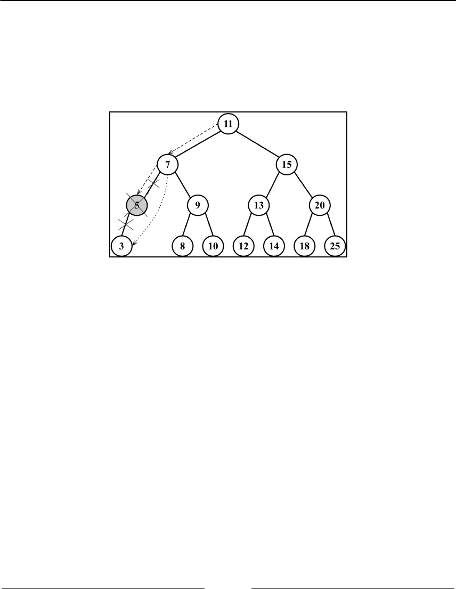
Trees Chapter 10
[ 248 ]
If the node does not have a left child ({12}), it means it has a right child, so we will change
the reference of the node to its right child ({13}) and return the updated node ({14}). We
will do the same if the node does not have a right child ({15}); we will update the node
reference to its left child ({16}) and return the updated value ({17}).
The following diagram exemplifies the removal of a node with only a left or right child:
Removing a node with two children
Now comes the third scenario and the most complex one, which is the scenario where the
node we are trying to remove has two children: the right and left one. To remove a node
with two children, there are four steps that need to be performed, as follows:
Once we find the node we want to remove, we need to find the minimum node1.
from its right-hand side edge subtree (its successor, {18}).
Then, we will update the value of the node with the key of the minimum node2.
from its right-hand side subtree ({19}). With this action, we are replacing the key
of the node, which means it was removed.
However, now we have two nodes in the tree with the same key, and this cannot3.
happen. What we need to do now is remove the minimum node from the right
subtree since we moved it to the place of the removed node ({20}).
Finally, we will return the updated node reference to its parent ({21}).4.
The implementation of the findMinNode method is exactly the same as the min method.
The only difference is that in the min method, we are returning only the key, and in
the findMinNode method, we are returning the node.
Trees Chapter 10
[ 249 ]
The following diagram exemplifies the removal of a node with only a left child and a right
child:
Self-balancing trees
Now that you have learned how to work with BST, you can dive into the study of trees if
you want to.
BST has a problem: depending on how many nodes you add, one of the edges of the tree
can be very deep, meaning a branch of the tree can have a high level and another branch
can have a low level, as shown in the following diagram:

Trees Chapter 10
[ 250 ]
This can cause performance issues when adding, removing, and searching for a node on a
particular edge of the tree. For this reason, there is a tree called the Adelson-Velskii and
Landi's tree (AVL tree). The AVL tree is a self-balancing BST, which means the height of
both the left and right subtrees of any node differ by 1 at most. You will learn more about
the AVL tree in the following topic.
Adelson-Velskii and Landi’s tree (AVL tree)
The AVL tree is a self-balancing tree, meaning the tree tries to self-balance whenever a node
is added to it or removed from it. The height of the left or right subtree of any node (and
any level) differs by 1 at most. This means the tree will try to become a complete tree
whenever possible while adding or removing a node.
Let’s start by creating our AVLTree class, which is declared as follows:
class AVLTree extends BinarySearchTree {
constructor(compareFn = defaultCompare) {
super(compareFn);
this.compareFn = compareFn;
this.root = null;
}
}
Since the AVL tree is a BST, we can extend the BST class we created and only overwrite the
methods which are needed to maintain the AVL tree's balance, which are
the insert, insertNode, and removeNode methods. All the other BST methods will be
inherited by the AVLTree class.
Inserting and removing nodes in an AVL tree works the same way as in BST. However, the
difference in the AVL tree is that we will need to verify its balance factor, and if needed, we
will apply the logic to self-balance the tree.
We will learn how to create the remove and insert methods, but first, we need to learn
about the AVL tree's terminology and its rotation operations.
Trees Chapter 10
[ 251 ]
Height of a node and the balancing factor
As we learned at the beginning of this chapter, the height of a node is defined as the
maximum number of edges from the node to any of its leaf nodes. The following diagram
exemplifies a tree with the height of each node:
The code to calculate the height of a node is as follows:
getNodeHeight(node) {
if (node == null) {
return -1;
}
return Math.max(
this.getNodeHeight(node.left), this.getNodeHeight(node.right)
) + 1;
}
In an AVL tree, whenever we insert or remove a node from the tree, we will need to
calculate the difference between the height of the right-hand side subtree (hr) and the left-
hand side subtree (hl). The result of hr - hl needs to be
0
, 1, or -1. If the result is
different from these values, it means the tree needs to be balanced. This concept is called
the balance factor.
Trees Chapter 10
[ 252 ]
The following diagram exemplifies the balance factor of some trees (all trees are balanced):
The code which follows calculates the balance factor of a node and return its state:
getBalanceFactor(node) {
const heightDifference = this.getNodeHeight(node.left) -
this.getNodeHeight(node.right);
switch (heightDifference) {
case -2:
return BalanceFactor.UNBALANCED_RIGHT;
case -1:
return BalanceFactor.SLIGHTLY_UNBALANCED_RIGHT;
case 1:
return BalanceFactor.SLIGHTLY_UNBALANCED_LEFT;
case 2:
return BalanceFactor.UNBALANCED_LEFT;
default:
return BalanceFactor.BALANCED;
}
}
To avoid working with the balance factor numbers directly in the code, we will also create a
constant in JavaScript that is going to work as an enumerator:
const BalanceFactor = {
UNBALANCED_RIGHT: 1,
SLIGHTLY_UNBALANCED_RIGHT: 2,
BALANCED: 3,
SLIGHTLY_UNBALANCED_LEFT: 4,
UNBALANCED_LEFT: 5
};
We will learn what each heightDifference means in the following topic.
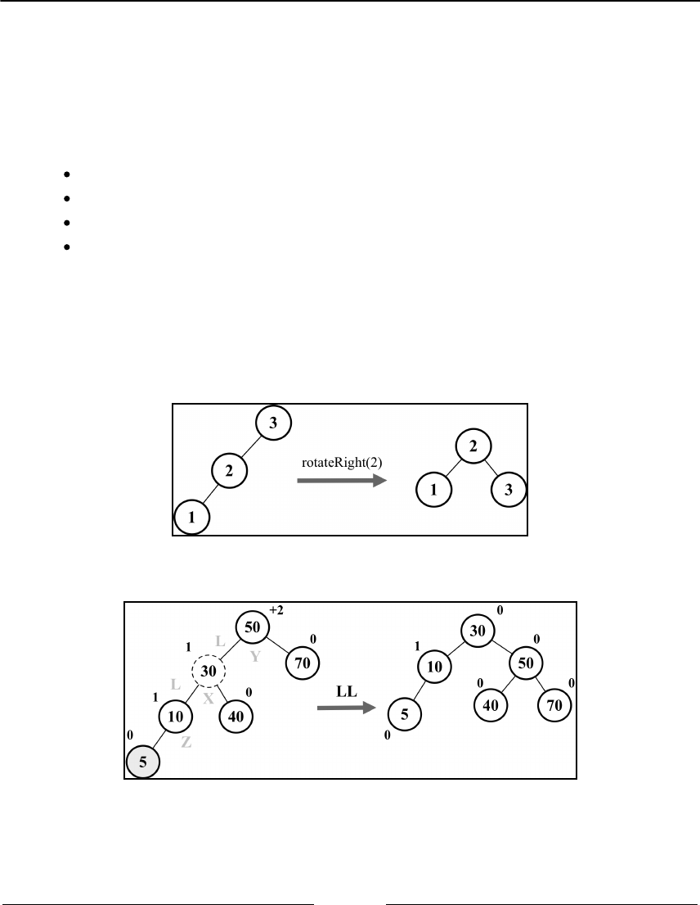
Trees Chapter 10
[ 253 ]
Balancing operations– AVL rotations
After inserting or removing nodes from the AVL tree, we will calculate the height of the
nodes and will verify whether the tree needs to be balanced. There are two balancing
processes that can be used: simple rotation or double rotation. Between simple rotation and
double rotation, there are four scenarios:
Left-Left (LL): This is a single rotation to the right
Right-Right (RR): This is a single rotation to the left
Left-Right (LR): This is a double rotation to the right (rotate left then right)
Right-Left (RL): This is a double rotation to the left (rotate right then left)
Left-left case: single rotation to the right
This case occurs when the height of a node’s left child becomes greater than the height of
the right child, and the left child is either balanced and left-heavy, as demonstrated in the
following diagram:
Let’s use a practical example. Consider the following diagram:
Suppose node 5 was the last one inserted in the AVL tree. This would make the tree
unbalanced (node 50-Y has a height of +2), so we would need to balance it.

Trees Chapter 10
[ 254 ]
These are the steps we need to perform to balance the tree:
Node X, which is in the middle of the three nodes involved in the balancing (X, Y,
and Z), will take the place of node Y, which has a balance factor of +2 ({1})
Node X, the left-hand side subtree, will not be changed
Node X, the right-hand side subtree (node Z), will be placed at the left-hand side
subtree of node Y ({2})
Node X, the right-hand side child, will reference node Y ({3})
The following code exemplifies this process:
rotationLL(node) {
const tmp = node.left; // {1}
node.left = tmp.right; // {2}
tmp.right = node; // {3}
return tmp;
}
Right-right case: single rotation to the left
The right-right case is the inverse of the left-left case. It occurs when the height of a node’s
right child becomes greater than that of the left child, and the right child is either balanced
or right-heavy, as demonstrated by the following diagram:
Let’s use a practical example. Consider the following diagram:
Trees Chapter 10
[ 255 ]
Suppose node 90 was the last one inserted in the AVL tree. This would make the tree
unbalanced (node 50 -Y has a height of -2), so we would need to balance it. These are the
steps we will perform to balance the tree:
Node X, which is in the middle of the three nodes involved in the balancing (X, Y,
and Z), will take place in the node Y, which has a balance factor of -2 ({1})
Node X, the right-hand side subtree, will not be changed
Node X, the left-hand side subtree (node Z), will be placed at the right-hand side
subtree of node Y ({2})
Node X, the left-hand side child, will reference node Y ({3})
The following code exemplifies this process:
rotationRR(node) {
const tmp = node.right; // {1}
node.right = tmp.left; // {2}
tmp.left = node; // {3}
return tmp;
}
Left-right case: double rotation to the right
This case occurs when the height of a node’s left child becomes greater than that of the right
child, and the left child is right-heavy. In this case, we can fix it by doing a left rotation on
the left child, which results in the left-left case, then we fix it again by doing a right rotation
on the unbalanced node ,as demonstrated by the following diagram:
Trees Chapter 10
[ 256 ]
Let’s use a practical example. Consider the following diagram:
Suppose node 75 was the last one inserted in the AVL tree. This would make the tree
unbalanced (node 70-Y has a height of -2), so we would need to balance it. These are the
steps we will perform to balance the tree:
Node X will take the place of node Y, which has a balance factor of -2
Node X, the right-hand side subtree (node Z), will be placed at the left-hand side
subtree of node Z
Node X, the left-hand side subtree, will be placed at the right-hand side subtree
of node Y
Node X, the right-hand side child, will reference node Y
Node X, the left-hand side child, will reference node Z
So basically, we are doing an LL rotation first and then an RR rotation.
The following code exemplifies this process:
rotationLR(node) {
node.left = this.rotationRR(node.left);
return this.rotationLL(node);
}
Trees Chapter 10
[ 257 ]
Right-left case – double rotation to the left
The right-left case is the inverse of the left-right case. It occurs when the height of a node’s
right child becomes greater than that of the left child, and the right child is left-heavy. In
this case, we can fix it by doing a right rotation on the right child, which results in the right-
right case, then we fix it again by doing a left rotation on the unbalanced node, as
demonstrated in the following diagram:
Let’s use a practical example. Consider the following diagram:
Suppose node 35 was the last one inserted in the AVL tree. This would make the tree
unbalanced (node 50 -Y has a height of +2), so we would need to balance it. These are the
steps we will perform to balance the tree:
Node X will take place of node Y, which has a balance factor of +2
Node X, the right-hand side subtree (node Z), will be placed at the left-hand side
subtree of node Y
Trees Chapter 10
[ 258 ]
Node X, the left-hand side subtree, will be placed at the right-hand side subtree
of node Z
Node X, the right-hand side child, will reference node Y
Node X, the left-hand side child, will reference node Z
So basically, we are doing an RR rotation first and then an LL rotation.
The following code exemplifies this process:
rotationRL(node) {
node.right = this.rotationLL(node.right);
return this.rotationRR(node);
}
With these concepts in place, we can now focus on the code for inserting and removing
nodes in/from the AVL tree.
Inserting a node in the AVL tree
Inserting a node in an AVL tree works the same way as in BST. In addition to inserting the
node, we will also verify whether the tree is still balanced after the insertion, and if not, we
will apply the rotation operations as needed.
The following code inserts a new node in an AVL tree:
insert(key) {
this.root = this.insertNode(this.root, key);
}
insertNode(node, key) {
// insert node as in BST tree
if (node == null) {
return new Node(key);
} else if (this.compareFn(key, node.key) === Compare.LESS_THAN) {
node.left = this.insertNode(node.left, key);
} else if (this.compareFn(key, node.key) === Compare.BIGGER_THAN) {
node.right = this.insertNode(node.right, key);
} else {
return node; // duplicated key
}
// balance the tree if needed
const balanceFactor = this.getBalanceFactor(node); // {1}
if (balanceFactor === BalanceFactor.UNBALANCED_LEFT) { // {2}
if (this.compareFn(key, node.left.key) === Compare.LESS_THAN) { // {3}
node = this.rotationLL(node); // {4}
} else {

Trees Chapter 10
[ 259 ]
return this.rotationLR(node); // {5}
}
}
if (balanceFactor === BalanceFactor.UNBALANCED_RIGHT) { // {6}
if (
this.compareFn(key, node.right.key) === Compare.BIGGER_THAN
) { // {7}
node = this.rotationRR(node); // {8}
} else {
return this.rotationRL(node); // {9}
}
}
return node;
}
After inserting the node in the AVL tree, we need to check whether the tree needs to be
balanced, so we will calculate the balance factor ({1}) for every node from the node that
was inserted to the tree root recursively, and we will apply the correct rotation for each
case.
If after inserting a node in the left-hand side subtree the tree is unbalanced ({2}), we
need to compare whether the inserted key is lesser than the left child’s key ({3}). If so, we
will do an LL rotation ({4}). Otherwise, we will do an LR rotation ({5}).
If after inserting a node in the right-hand side subtree the tree is unbalanced ({6}), we need
compare whether the inserted key is bigger than the right child’s key ({7}). If so, we will do
an RR rotation ({8}). Otherwise, we will do an RL rotation ({9}).
Removing a node from the AVL tree
Removing a node from an AVL tree works the same way as in BST. In addition to removing
the node, we will also verify whether the tree is still balanced after the removal, and if not,
we will apply the rotation operations as needed.
The following code removes a node from an AVL tree:
removeNode(node, key) {
node = super.removeNode(node, key); // {1}
if (node == null) {
return node; // null, no need to balance
}
// verify if tree is balanced
const balanceFactor = this.getBalanceFactor(node); // {2}
if (balanceFactor === BalanceFactor.UNBALANCED_LEFT) { // {3}

Trees Chapter 10
[ 260 ]
const balanceFactorLeft = this.getBalanceFactor(node.left); // {4}
if (
balanceFactorLeft === BalanceFactor.BALANCED ||
balanceFactorLeft === BalanceFactor.SLIGHTLY_UNBALANCED_LEFT
) { // {5}
return this.rotationLL(node); // {6}
}
if (
balanceFactorLeft === BalanceFactor.SLIGHTLY_UNBALANCED_RIGHT
) { // {7}
return this.rotationLR(node.left); // {8}
}
}
if (balanceFactor === BalanceFactor.UNBALANCED_RIGHT) { // {9}
const balanceFactorRight = this.getBalanceFactor(node.right); // {10}
if (
balanceFactorRight === BalanceFactor.BALANCED ||
balanceFactorRight === BalanceFactor.SLIGHTLY_UNBALANCED_RIGHT
) { // {11}
return this.rotationRR(node); // {12}
}
if (
balanceFactorRight === BalanceFactor.SLIGHTLY_UNBALANCED_LEFT
) { // {13}
return this.rotationRL(node.right); // {14}
}
}
return node;
}
Since the AVLTree is a child class of the BinarySearchTree class, we can use the
BST removeNode method to remove the node from the AVL tree as well {1}. After
removing the node from the AVL tree, we need to check whether the tree needs to be
balanced, so we will calculate the balance factor ({1}) for every node from the node that
was removed to the tree root recursively, and we will apply the correct rotation for each
case.
If after removing a node in the left-hand side subtree the tree is unbalanced ({3}), we will
calculate the balance factor of the left subtree ({4}). If the left subtree is unbalanced to the
left ({5}), we will do an LL rotation ({6}), or if the left subtree is unbalanced to the right
({7}), we will do an LR rotation ({8}).

Trees Chapter 10
[ 261 ]
The final last case is if after removing a node in the right-hand side subtree the tree is
unbalanced ({9}), we will calculate the balance factor of the right subtree ({10}). If the
right subtree is unbalanced to the right ({11}), we will do an RR rotation ({12}), or if the
right subtree is unbalanced to the left ({13}), we will do an LR rotation ({14}).
Red-Black tree
Like the AVL tree, the Red-Black tree is also a self-balancing binary search tree. We learned
that inserting or removing a node from the AVL tree might cause rotations, so if we need a
self-balancing tree that involves many frequent insertions or deletions, then the Red-Black
tree is preferred. If the insertions and deletions are less frequent (we are interest in frequent
search operations), then the AVL tree is preferred over the Red-Black tree.
In the Red-Black tree, every node follows the rules which are listed as follows:
As the name of the tree suggests, each node is either red or black.1.
The root of the tree is black.2.
All of the leaves are black (nodes represented with the NULL reference).3.
If a node is red, then both of its children are black.4.
There cannot be two adjacent red nodes. A red node cannot have a red parent or5.
child.
Every path from a given node to any of its descendants (NULL leaves) contains the6.
same number of black nodes.
Let's start by creating our RedBlackTree class, which is declared as follows:
class RedBlackTree extends BinarySearchTree {
constructor(compareFn = defaultCompare) {
super(compareFn);
this.compareFn = compareFn;
this.root = null;
}
}
Since the Red-Black tree is also a BST tree, we can extend the BST class we created and only
overwrite the methods which are needed to maintain the Red-Black tree properties. We will
start with the insert and insertNode methods.

Trees Chapter 10
[ 262 ]
Inserting a node in the Red-Black tree
Inserting a node in a Red-Black tree works the same way as in BST. In addition to inserting
the code, we will also apply a color to the node and after the insertion, we will verify
whether the tree still meets the rules of the Red-Black tree and that it is still balanced.
The following code inserts a new node in a Red-Black tree:
insert(key: T) {
if (this.root == null) { // {1}
this.root = new RedBlackNode(key); // {2}
this.root.color = Colors.BLACK; // {3}
} else {
const newNode = this.insertNode(this.root, key); // {4}
this.fixTreeProperties(newNode); // {5}
}
}
If the tree is empty ({1}), then we will create a new Red-Black tree node ({2}) and to
comply with rule 2, we will set the root color as black ({3}). By default, the node will be
created with the color red ({6}). If the tree is not empty, we will insert the node in its
correct place by using the same logic applied to insert a node in a BST ({4}).
The insertNode method, in this case, needs to return the newly inserted node so we can
verify if after the insertion; the Red-Black tree rules are still satisfied ({5}).
For the Red-Black tree, the node will need a couple of additional properties compared to the
node class we used previously: the color of the node {6} and a reference to its parent ({7}).
The code is presented as follows:
class RedBlackNode extends Node {
constructor(key) {
super(key);
this.key = key;
this.color = Colors.RED; // {6}
this.parent = null; // {7}
}
isRed() {
return this.color === Colors.RED;
}
}

Trees Chapter 10
[ 263 ]
The overwritten insertNode method is also presented as follows:
insertNode(node, key) {
if (this.compareFn(key, node.key) === Compare.LESS_THAN) {
if (node.left == null) {
node.left = new RedBlackNode(key);
node.left.parent = node; // {8}
return node.left; // {9}
}
else {
return this.insertNode(node.left, key);
}
}
else if (node.right == null) {
node.right = new RedBlackNode(key);
node.right.parent = node; // {10}
return node.right; // {11}
}
else {
return this.insertNode(node.right, key);
}
}
As we can see, the logic is the same as what is used in a regular BST. The difference here is
that we are keeping a reference to the inserted node's parent ({8} and {10}) and also
returning the node reference ({9} and {11}) so that we can verify the tree properties next.
Verifying the Red-Black tree properties after insertion
To verify whether the Red-Black tree is still balanced and still follows all of its
requirements, we will use two concepts: recoloring and rotation.
After inserting a new node into the tree, this new node will be red. This does not affect the
rule of the count of black nodes (rule 6), but it can affect rule 5: two adjacent red nodes
cannot coexist. If the parent of the inserted node is black, then there is no problem.
However, if the parent of the inserted node is red, then we have a violation of rule 5. To
solve this violation, we simply need to change the color of the node's parent, the
node's grandparent, and the node's uncle (because we are changing the parent color as
well).
Trees Chapter 10
[ 264 ]
The following diagram exemplifies this action:
The following is the initial code for fixTreeProperties:
fixTreeProperties(node) {
while (node && node.parent && node.parent.color.isRed() // {1}
&& node.color !== Colors.BLACK) { // {2}
let parent = node.parent; // {3}
const grandParent = parent.parent; // {4}
// case A: parent is left child
if (grandParent && grandParent.left === parent) { // {5}
const uncle = grandParent.right; // {6}
// case 1A: uncle of node is also red - only recoloring
if (uncle && uncle.color === Colors.RED) { // {7}
grandParent.color = Colors.RED;
parent.color = Colors.BLACK;
uncle.color = Colors.BLACK;
node = grandParent; // {8}
}
else {
// case 2A: node is right child - left rotate
// case 3A: node is left child - right rotate
}
}
else { // case B: parent is right child
const uncle = grandParent.left; // {9}
// case 1B: uncle is read - only recoloring
if (uncle && uncle.color === Colors.RED) { // {10}
grandParent.color = Colors.RED;
parent.color = Colors.BLACK;
uncle.color = Colors.BLACK;
node = grandParent;
}
else {
// case 2B: node is left child - right rotate
Trees Chapter 10
[ 265 ]
// case 3B: node is right child - left rotate
}
}
}
this.root.color = Colors.BLACK; // {11}
}
Starting from the inserted node, we will verify whether its parent is red ({1}) and whether
the node is also not black ({2}). To make our code easier to read, we will keep a reference to
the node's parent ({3}) and grandparent ({4}).
Next, we will verify whether the node's parent is a left ({5} - case A) or right child (case B).
For case 1A, where we only need to recolor the nodes, it does not make any difference if the
parent is a left or right child, but this will make a difference for the following cases which
we will learn about.
Since we need to change the uncle's color as well, we need a reference to it ({6} and {9}).
So if the uncle's color is red ({7} and {10}), we change the color of the grandparent, parent,
and uncle, and we also change the reference of the current node to the grandparent ({8})
and keep checking the tree for more violations.
To make sure the root color is always black (rule 2), we will assign the color to the root at
the end of the code ({11}).
In case the node's uncle is black, this means recoloring alone will not be enough since the
tree is not balanced, so we need to perform the rotations, which are as follows:
Left-Left (LL): The parent is the left child of the grandparent, and the node is the
left child of the parent (case 3A)
Left-Right (LR): The parent is the left child of the grandparent, and the node is
the right child of the parent (case 2A)
Right-Right (RR): The parent is the right child of the grandparent, and the node
is the right child of the parent (case 3B)
Right-Left (RL): The parent is the right child of the grandparent, and the node is
the left child of the parent (case 2B)
Let's take a look at cases 2A and 3A:
// case 2A: node is right child - left rotate
if (node === parent.right) {
this.rotationRR(parent); // {12}
node = parent; // {13}
parent = node.parent; // {14}
}
Trees Chapter 10
[ 266 ]
// case 3A: node is left child - right rotate
this.rotationLL(grandParent); // {15}
parent.color = Colors.BLACK; // {16}
grandParent.color = Colors.RED; // {17}
node = parent; // {18}
If the parent is a left child and the node is a right child, we will do a double rotation, first a
right-right rotation ({12}), and also update the references for the node ({13}) and parent
({10}). After the first rotation, we will rotate it again using the grandparent as the source
node ({15}) and update the colors of the parent ({16}) and grandparent ({17}) during the
rotation. Finally, we update the reference to the current node ({18}) so that we keep
checking the tree for more violations.
Case 2A can be exemplified in the following diagram:
In case the node is a left child, then we go directly to line {15} to perform the left-left
rotation. Case 3A can be exemplified in the diagram as follows:
Trees Chapter 10
[ 267 ]
Now, let's take a look at cases 2B and 3B:
// case 2B: node is left child - left rotate
if (node === parent.left) {
this.rotationLL(parent); // {19}
node = parent;
parent = node.parent;
}
// case 3B: node is right child - left rotate
this.rotationRR(grandParent); // {20}
parent.color = Colors.BLACK;
grandParent.color = Colors.RED;
node = parent;
The logic is the same, but the differences are that the rotations that will be performed as
follows: first the left-left rotation ({18}) and then the right-right rotation ({20}). Case 2B
can be exemplified as follows:
And finally, case 3B can be exemplified as follows:

Trees Chapter 10
[ 268 ]
Red-Black tree rotations
In the insertion algorithm, we only used the right-right and left-left rotations. The logic is
the same as the AVL tree, however, since we are keeping a reference to the node's parent,
we also need to update the node.parent reference to the new parent after the node is
rotated.
The code for the left-left rotation (right rotation) is presented as follows (update of parent
highlighted):
rotationLL(node) {
const tmp = node.left;
node.left = tmp.right;
if (tmp.right && tmp.right.key) {
tmp.right.parent = node;
}
tmp.parent = node.parent;
if (!node.parent) {
this.root = tmp;
}
else {
if (node === node.parent.left) {
node.parent.left = tmp;
}
else {
node.parent.right = tmp;
}
}
tmp.right = node;
node.parent = tmp;
}
The code for the right-right rotation (left rotation) is presented as follows (update of parent
highlighted):
rotationRR(node) {
const tmp = node.right;
node.right = tmp.left;
if (tmp.left && tmp.left.key) {
tmp.left.parent = node;
}
tmp.parent = node.parent;
if (!node.parent) {
this.root = tmp;
}
else {
if (node === node.parent.left) {

Trees Chapter 10
[ 269 ]
node.parent.left = tmp;
}
else {
node.parent.right = tmp;
}
}
tmp.left = node;
node.parent = tmp;
}
Summary
In this chapter, we covered the algorithms to add, search, and remove keys from a binary
search tree, which is the basic tree data structure largely used in computer science. We
covered three traversal approaches to visit all the nodes of a tree. We also learned how to
create self-balanced trees using the AVL tree and insert and remove keys to/from it, and we
also covered the Red-Black tree.
In the next chapter, we will learn about a special data structure called heap (or priority
queue).
11
Binary Heap and Heap Sort
In the previous chapter, we learned about the tree data structure. In this chapter, we will
learn about a special type of binary tree, which is the heap data structure, also known as
the binary heap. The binary heap is a very famous data structure in computer science,
commonly applied in priority queues due to its efficiency of quickly extracting the
maximum or minimum values. It is also used by the famous heap sort algorithm.
In this chapter, we will cover:
The binary heap data structure
Max and min heap
The heap sort algorithm
The binary heap data structure
The binary heap is a special binary tree with the following two properties:
It is a complete binary tree, meaning all levels of the tree have both left and right
children (with the exception of the last-level leaves), and the last level has all
children as left as possible. This is called as shape property.
A binary heap is either a min heap or a max heap. The min heap allows you to
quickly extract the minimum value of the tree, and the max heap allows you to
quickly extract the maximum value of the tree. All nodes are either greater than
or equal to (max heap), or less than or equal to (min heap), each of its child nodes.
This is called heap property.
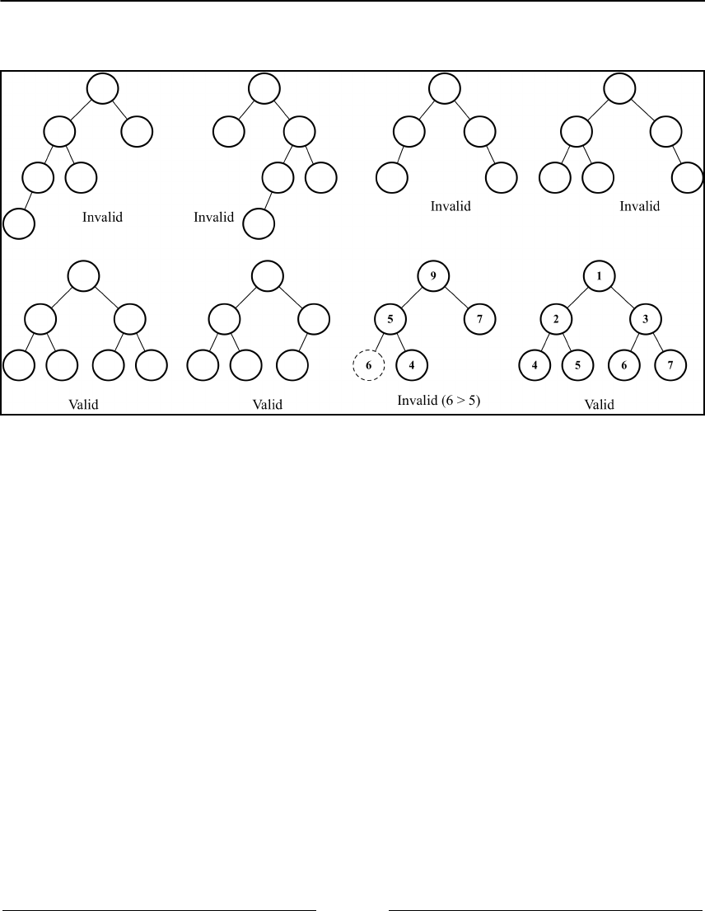
Binary Heap and Heap Sort Chapter 11
[ 271 ]
The following diagram contains some examples of invalid and valid heaps:
Although the binary heap is a binary tree, it is not necessarily a binary search tree (BST). In
the binary heap, every child node needs to be greater than or equal to its parent node (min
heap) or less than or equal to its parent node (max heap). In the BST, however, the left child
is always smaller than its parent and the right child always has a greater key as well.
Creating the MinHeap class
Let’s start by creating the basic structure of the MinHeap class as follows:
import { defaultCompare } from '../util';
export class MinHeap {
constructor(compareFn = defaultCompare) {
this.compareFn = compareFn; // {1}
this.heap = []; // {2}
}
}
Binary Heap and Heap Sort Chapter 11
[ 272 ]
To compare the values that will be stored in this data structure, we will
use compareFn ({1}), which is going to perform a basic comparison in case no custom
function is passed to the class constructor as was done in previous chapters.
To store the values, we will use an array representation ({2}).
Binary tree array representation
There are two ways of representing a binary tree. The first is using a dynamic
representation using pointers (node representation) as we did in the previous chapter. The
second is using an array accessing the correct indexes to retrieve the values of the parent,
left, and right children. The following diagram demonstrates the binary tree's different
representations:
To access the nodes of a binary tree using a regular array, we can manipulate the index with
the following behavior:
For any given node at position index:
Its left child is located at 2 * index + 1 (if available)
Its right child is located at 2 * index + 2 (if available)
Its parent node is located at index / 2 (if available)
To access a specific node following the preceding rules, we can add the following methods
to the MinHeap class:
getLeftIndex(index) {
return 2 * index + 1;
}
getRightIndex(index) {
Binary Heap and Heap Sort Chapter 11
[ 273 ]
return 2 * index + 2;
}
getParentIndex(index) {
if (index === 0) {
return undefined;
}
return Math.floor((index - 1) / 2);
}
We can perform three main operations in a heap data structure:
insert(value): This method inserts a new value into the heap. It
returns true if the value was successfully inserted and false otherwise.
extract(): This method removes the minimum value (min heap) or the
maximum value (max heap) and returns it.
findMinimum()(): This method returns the minimum value (min heap) or
maximum value (max heap) without removing it.
Let’s learn about each one in the following topics.
Inserting a value into the heap
Inserting a value into the heap is performed by adding the value at the bottom leaf of the
heap (the last position of the array— {1}) and then performing the siftUp method ({2}),
meaning we will swap the value with its parent until its parent is smaller than the value
being inserted. The sift up operation is also called up head, percolate up, bubble
up, heapify up, or cascade up.
The code to insert a new value into the heap is presented as follows:
insert(value) {
if (value != null) {
this.heap.push(value); // {1}
this.siftUp(this.heap.length - 1); // {2}
return true;
}
return false;
}
Binary Heap and Heap Sort Chapter 11
[ 274 ]
The sift up operation
The code for the sift up operation is presented as follows:
siftUp(index) {
let parent = this.getParentIndex(index); // {1}
while (
index > 0 &&
this.compareFn(this.heap[parent], this.heap[index]) >
Compare.BIGGER_THAN
) { // {2}
swap(this.heap, parent, index); // {3}
index = parent;
parent = this.getParentIndex(index); // {4}
}
}
The siftUp method receives the index of the inserted value. We also need to retrieve the
index of its parent ({1}).
If the inserted value is smaller than its parent ({2} — in case of min heap or greater than
its parent in case of the max heap), we swap the element with its parent ({3}). We will
repeat this process until the root of the heap is also processed by updating the index and
the parent indexes ({4}) after every swap.
The swap function is presented as follows:
function swap(array, a, b) {
const temp = array[a]; // {5}
array[a] = array[b]; // {6}
array[b] = temp; // {7}
}
To swap two values within an array, we need a helper variable that will make a copy of the
first element we want to swap ({5}). Next, we will assign the second element to the first
element’s position ({6}). Finally, we overwrite the second element’s value with the first
element’s value ({7}) by assigning the copy made in line {5}.
The swap function will be used often in Chapter 13, Sorting and Searching
Algorithms.
Binary Heap and Heap Sort Chapter 11
[ 275 ]
We can also rewrite the swap function using ECMAScript 2015 (ES6) syntax:
const swap = (array, a, b) => [array[a], array[b]] = [array[b], array[a]];
ES2015 introduced the object and array destructuring functionality [a,
b] = [b, a], as we learned in Chapter 2, ECMAScript and TypeScript
Overview. However, there is an open issue at the time of writing this book
regarding the performance of the destructuring operation being slower
than the normal assignment. For more information about the issue, please
visit https://bugzilla.mozilla.org/show_bug.cgi?id=1177319.
Let’s see the insert method in action. Consider the following heap data structure:
Suppose we want to insert the value 1 into the heap. The algorithm will perform a few sift
up operations, as demonstrated in the following diagram:
The following code exemplifies the creation of the heap and the actions demonstrated in the
diagram:
const heap = new MinHeap();
heap.insert(2);
heap.insert(3);
heap.insert(4);
Binary Heap and Heap Sort Chapter 11
[ 276 ]
heap.insert(5);
heap.insert(1);
Finding the minimum or maximum value from the heap
In the min heap, the minimum value is always located at the first index of the array (the
root of the heap). The code is presented as follows:
size() {
return this.heap.length;
}
isEmpty() {
return this.size() === 0;
}
findMinimum() {
return this.isEmpty() ? undefined : this.heap[0]; // {1}
}
So if the heap is not empty, we return the first index of the array ({1}). We can also create
the size and empty methods for the MinHeap data structure.
The following code can be used to test these three methods:
console.log('Heap size: ', heap.size()); // 5
console.log('Heap is empty: ', heap.isEmpty()); // false
console.log('Heap min value: ', heap.findMinimum()); // 1
In the max heap, the first index of the array will store the maximum
value, so we can use this same code.
Extracting the minimum or maximum value from the
heap
Removing the minimum value (min heap) or the maximum value (max heap) consists of
removing the element located at the first index of the array (the root of the heap). After the
removal, we move the last element of the heap to the root and then we perform the function
called siftDown, meaning we will swap elements until the heap is organized again. The
sift down operation is also called sink down, percolate down, bubble down, heapify
down, or cascade down.

Binary Heap and Heap Sort Chapter 11
[ 277 ]
The code is presented as follows:
extract() {
if (this.isEmpty()) {
return undefined; // {1}
}
if (this.size() === 1) {
return this.heap.shift(); // {2}
}
const removedValue = this.heap.shift(); // {3}
this.siftDown(0); // {4}
return removedValue; // {5}
}
If the heap is empty, there is no value to extract, so we can return undefined ({1}). If there
is only one value in the heap, we can simply remove and return it ({2}). However, if the
heap has more than one value, we will remove the value from the first index ({3}) and store
it in a temporary variable so we can return it ({5}) after performing the sift down operation
({4}).
The sift down operation (heapify)
The code for the sift down operation is presented as follows:
siftDown(index) {
let element = index;
const left = this.getLeftIndex(index); // {1}
const right = this.getRightIndex(index); // {2}
const size = this.size();
if (
left < size &&
this.compareFn(this.heap[element], this.heap[left]) >
Compare.BIGGER_THAN
) { // {3}
element = left; // {4}
}
if (
right < size &&
this.compareFn(this.heap[element], this.heap[right]) >
Compare.BIGGER_THAN
) { // {5}
element = right; // {6}
}
if (index !== element) { // {7}
swap(this.heap, index, element); // {8}
this.siftDown(element); // {9}
Binary Heap and Heap Sort Chapter 11
[ 278 ]
}
}
The siftDown method receives the index of the removed value. We will make a copy of
the received index in the element variable. We will also retrieve the indexes of the left
({1}) and right ({2}) children.
The sift down operation consists of swapping the element with its smallest child (min
heap) or greatest child (max heap). If the element is smaller than its left child ({3}—and
the index is also valid), we will swap the element with its left child ({4}). If the element
is smaller than its right child ({5}—and the index is also valid), we will swap the
element with its right child ({6}).
After finding the smallest child index, we will verify whether its value is the same as
the index of the element (passed to the siftDown method— {7})—no point in swapping
the value with itself! If not, then we swap it with its smallest element ({8}) and we repeat
the same process starting with the smallest element ({9}) until the element is placed in its
correct position.
Suppose we want to do an extraction from the heap. The algorithm will perform a few sift
down operations, as demonstrated in the following diagram:

Binary Heap and Heap Sort Chapter 11
[ 279 ]
The following code can be used to test the actions demonstrated in the diagram:
heap = new MinHeap();
for (let i = 1; i < 10; i++) {
heap.insert(i);
}
console.log('Extract minimum: ', heap.extract()); // 1
Creating the MaxHeap class
The algorithm for the MaxHeap class will be exactly the same as the MinHeap class. The
difference is that whenever we perform a > (more than) comparison, we will change it to
use the < (less than) comparison.
The code for the MaxHeap class is presented as follows:
export class MaxHeap extends MinHeap {
constructor(compareFn = defaultCompare) {
super(compareFn);
this.compareFn = reverseCompare(compareFn); // {1}
}
}
But instead of copying the code and duplicating it, we can extend the MinHeap class to
inherit all the code we created in this chapter and do a reverse comparison whenever
needed. To reverse the comparison, instead of comparing a with b, we can compare b with
a ({1}) instead, as demonstrated in the following code:
function reverseCompare(compareFn) {
return (a, b) => compareFn(b, a);
}
We can use the same code that we used for the MinHeap to test the MaxHeap. The difference
is that the biggest value will be the root of the heap instead of the lowest value:
const maxHeap = new MaxHeap();
maxHeap.insert(2);
maxHeap.insert(3);
maxHeap.insert(4);
maxHeap.insert(5);
maxHeap.insert(1);

Binary Heap and Heap Sort Chapter 11
[ 280 ]
console.log('Heap size: ', maxHeap.size()); // 5
console.log('Heap min value: ', maxHeap.findMinimum()); // 5
The heap sort algorithm
We can use the binary heap data structure to help us create a very famous sorting
algorithm: the heap sort. The heap sort algorithm consists of three steps:
Create a max heap using the array to be sorted as the source.1.
After creating the max heap, the largest value will be stored in the first index of2.
the heap. We will replace the first value with the last value of the heap,
decreasing the size of the heap by 1.
Finally, we heapify (sift down) the root of the heap and repeat step 2 until the3.
size of the heap is equal to 1.
We use the max heap results in an array sorted in ascending order (from smallest to
biggest). If we want the array to be sorted in descending order, we can use the min heap
instead.
The following is the code for the heap sort algorithm:
function heapSort(array, compareFn = defaultCompare) {
let heapSize = array.length;
buildMaxHeap(array, compareFn); // step 1
while (heapSize > 1) {
swap(array, 0, --heapSize); // step 2
heapify(array, 0, heapSize, compareFn); // step 3
}
return array;
}
To build the max heap, we can use the following function:
function buildMaxHeap(array, compareFn) {
for (let i = Math.floor(array.length / 2); i >= 0; i -= 1) {
heapify(array, i, array.length, compareFn);
}
return array;
}
Binary Heap and Heap Sort Chapter 11
[ 281 ]
The max heap function will reorganize the array. Due to all the comparisons that will be
made, we only need to run the heapify function (sift down) for the last half of the
positions of the array (the first half will be organized automatically, so we do not need to
run the function for the positions we know will be already sorted).
The heapify function has the same code as the siftDown method we created earlier in this
chapter. The difference is that we also pass the heap itself, the size of the heap, and the
comparison function we want to use as parameters. This is because we are not using the
heap data structure directly, but we are using its logic to develop the heapSort algorithm.
The following diagram exemplifies the heap sort algorithm:
Binary Heap and Heap Sort Chapter 11
[ 282 ]
The following code can be used to test the heapSort function:
const array = [7, 6, 3, 5, 4, 1, 2];
console.log('Before sorting: ', array);
console.log('After sorting: ', heapSort(array));
The heap sort algorithm is not a stable sorting algorithm, meaning if the
array is already sorted, it is possible that the values could end up in a
different order. We will explore better sorting algorithms in Chapter 13,
Sorting and Searching Algorithms.
Summary
In this chapter, we learned about the binary heap data structure and its two variants: the
min heap and max heap. We learned how to insert values, how to peek or find the
minimum or maximum values, and also how to extract a value from the heap. We also
covered the sift up and sift down operations that help to maintain the organized heap.
We also learned how to use the heap data structure to create the heap sort algorithm.
In the next chapter, we will study the basic concepts of graphs, which are non-linear data
structures.
12
Graphs
In this chapter, you will learn about another nonlinear data structure, called graphs. This
will be the last data structure we will cover before diving into sorting and searching
algorithms.
This chapter will cover a considerable part of the wonderful applications of graphs. Since
this is a vast topic, we could write a book like this just to dive into the amazing world of
graphs.
In this chapter, we will cover:
Graph terminology
Representing a graph in three different ways
The graph data structure
Graph search algorithms
Shortest path algorithms
Minimum spanning tree algorithms
Graph terminology
A graph is an abstract model of a network structure. A graph is a set of nodes (or vertices)
connected by edges. Learning about graphs is important because any binary relationship
can be represented by a graph.
Any social network, such as Facebook, Twitter, and Google+, can be represented by a graph.
Graphs Chapter 12
[ 284 ]
We can also use graphs to represent roads, flights, and communications, as shown in the
following image:
Let's learn more about the mathematical and technical concepts of graphs.
A graph G = (V, E) is composed of:
V: A set of vertices
E: A set of edges connecting the vertices in V
The following diagram represents a graph:
Let's cover some graph terminology before we start implementing any algorithms.
Vertices connected by an edge are called adjacent vertices. For example, A and B are
adjacent, A and D are adjacent, A and C are adjacent, and A and E are not adjacent.
Graphs Chapter 12
[ 285 ]
A degree of a vertex consists of the number of adjacent vertices. For example, A is
connected to three vertices. Therefore, A has degree 3. E is connected to two vertices.
Therefore, E has degree 2.
A path is a sequence of consecutive vertices, such as v1, v2, ..., vk, where vi and vi+1 are
adjacent. Using the graph from the previous diagram as an example, we have the paths A B
E I and A C D G, among others.
A simple path does not contain repeated vertices. As an example, we have the path A D G.
A cycle is a simple path, except for the last vertex, which is the same as the first vertex: A D
C A (back to A).
A graph is acyclic if it does not have cycles. A graph is connected if there is a path between
every pair of vertices.
Directed and undirected graphs
Graphs can be undirected (where edges do not have a direction) or directed (digraph),
where edges have a direction, as demonstrated in the following diagram:
A graph is strongly connected if there is a path in both directions between every pair of
vertices. For example, C and D are strongly connected, while A and B are not strongly
connected.
Graphs Chapter 12
[ 286 ]
Graphs can also be unweighted (as we have noted so far) or weighted (in which the edges
have weights—or values), as shown in the following diagram:
We can solve many problems in the computer science world using graphs, such as
searching a graph for a specific vertex or searching for a specific edge, finding a path in the
graph (from one vertex to another), finding the shortest path between two vertices, and
cycle detection.
Representing a graph
There are a few ways in which we can represent graphs when it comes to data structures.
There is no correct way of representing a graph among the existing possibilities. It depends
on the type of problem you need to resolve, and the type of graph as well.
The adjacency matrix
The most common implementation is the adjacency matrix. Each node is associated with an
integer, which is the array index. We will represent the connectivity between vertices using
a two-dimensional array, as array[i][j] = = = 1 if there is an edge from the node with
index i to the node with index j or as array[i][j] = = = 0 otherwise, as demonstrated
by the following diagram:
Graphs Chapter 12
[ 287 ]
Graphs that are not strongly connected (sparse graphs) will be represented by a matrix with
many zero entries in the adjacency matrix. This means we would waste space in the
computer memory to represent edges that do not exist. For example, if we need to find the
adjacent vertices of a given vertex, we will have to iterate through the whole row even if
this vertex has only one adjacent vertex. Another reason this might not be a good
representation is that the number of vertices in the graph may change, and a two-
dimensional array is not flexible.
The adjacency list
We can use a dynamic data structure to represent graphs as well, called an adjacency list.
This consists of a list of adjacent vertices for every vertex of the graph. There are a few
different ways we can represent this data structure. To represent the list of adjacent vertices,
we can use a list (array), a linked list, or even a hash map or dictionary. The following
diagram exemplifies the adjacency list data structure:
Both representations are very useful and have different properties (for example, finding out
whether the vertices v and w are adjacent is faster using an adjacency matrix), although
adjacency lists are probably better for most problems. We will use the adjacency list
representation for the examples in this book.
Graphs Chapter 12
[ 288 ]
The incidence matrix
We can also represent a graph using an incidence matrix. In an incidence matrix, each row
of the matrix represents a vertex, and each column represents an edge. We will represent
the connectivity between two objects using a two-dimensional array, as array[v][e] ===
1 if the vertex v is an incident upon edge e or as array[v][e] === 0 otherwise, as
demonstrated in the following diagram:
An incidence matrix is usually used to save space and memory when we have more edges
than vertices.
Creating the Graph class
As usual, we will declare the basic structure of our class:
class Graph {
constructor(isDirected = false) {
this.isDirected = isDirected; // {1}
this.vertices = []; // {2}
this.adjList = new Dictionary(); // {3}
}
}
The Graph constructor can receive a parameter to indicate if the graph is directed or not
({1}), and by default, the graph will not be directed. We will use an array to store the
names of all the vertices of the graph ({2}), and we will use a dictionary (implemented in
Chapter 8, Dictionaries and Hashes) to store the adjacent list ({3}). The dictionary will use
the name of the vertex as a key and the list of adjacent vertices as a value.

Graphs Chapter 12
[ 289 ]
Next, we will implement two methods: one to add a new vertex to the graph (because when
we instantiate the graph, it will create an empty graph with no vertices), and another
method to add edges between the vertices. Let's implement the addVertex method first, as
follows:
addVertex(v) {
if (!this.vertices.includes(v)) { // {5}
this.vertices.push(v); // {6}
this.adjList.set(v, []); // {7}
}
}
This method receives a vertex v as a parameter. We will add this vertex to the list of vertices
({6}) only if the vertex does not exist in the graph yet ({5}), and we will also initialize the
adjacent list with an empty array by setting the dictionary value of the vertex v key with an
empty array ({7}).
Now, let's implement the addEdge method via the following code:
addEdge(v, w) {
if (!this.adjList.get(v)) {
this.addVertex(v); // {8}
}
if (!this.adjList.get(w)) {
this.addVertex(w); // {9}
}
this.adjList.get(v).push(w); // {10}
if (!this.isDirected) {
this.adjList.get(w).push(v); // {11}
}
}
This method receives two vertices as parameters, which are the vertices we want to link in
the graph. Before we link the vertices, we will verify if the vertices exist in the graph. If
vertices v or w do not exist in the graph, we will add them to the list of vertices ({8} and
{9}).
Then, we will add an edge from vertex v to vertex w ({10}) by adding w to the adjacent list
of v. If you want to implement a directed graph, line {10} is enough. As we are working
with undirected graphs in most examples in this chapter, we also need to add an edge from
w to v ({11}).
Graphs Chapter 12
[ 290 ]
Note that we are only adding new elements to the array, as we have
already initialized it in line {7}.
And to complete the creation of our Graph class, we will also declare two getter methods:
one to return the list of vertices, and another one to return the adjacent list:
getVertices() {
return this.vertices;
}
getAdjList() {
return this.adjList;
}
Let's test this code, as follows:
const graph = new Graph();
const myVertices = ['A', 'B', 'C', 'D', 'E', 'F', 'G', 'H', 'I']; // {12}
for (let i = 0; i < myVertices.length; i++) { // {13}
graph.addVertex(myVertices[i]);
}
graph.addEdge('A', 'B'); // {14}
graph.addEdge('A', 'C');
graph.addEdge('A', 'D');
graph.addEdge('C', 'D');
graph.addEdge('C', 'G');
graph.addEdge('D', 'G');
graph.addEdge('D', 'H');
graph.addEdge('B', 'E');
graph.addEdge('B', 'F');
graph.addEdge('E', 'I');
To make our lives easier, let's create an array with all the vertices we want to add to our
graph ({12}). Then, we only need to iterate through the myVertices array and add the
values one by one to our graph ({13}). Finally, we will add the desired edges ({14}). This
code will create the graph we used in the diagrams presented so far in this chapter.

Graphs Chapter 12
[ 291 ]
To make our lives even easier, let's also implement the toString method for the Graph
class so that we can output the graph on the console:
toString() {
let s = '';
for (let i = 0; i < this.vertices.length; i++) { // {15}
s += `${this.vertices[i]} -> `;
const neighbors = this.adjList.get(this.vertices[i]); // {16}
for (let j = 0; j < neighbors.length; j++) { // {17}
s += `${neighbors[j]} `;
}
s += '\n'; // {18}
}
return s;
}
We will build a string with the adjacent list representation. First, we will iterate the list of
vertices arrays ({15}) and add the name of the vertex to our string s. Then, we will get
the adjacent list for this vertex ({16}), and we will also iterate it ({17}) to get the name of
the adjacent vertex and add it to our string. After we iterate the adjacent list, we will add a
new line to our string ({18}) so that we can see a pretty output on the console. Let's try this
code:
console.log(graph.toString());
This will be the output:
A -> B C D
B -> A E F
C -> A D G
D -> A C G H
E -> B I
F -> B
G -> C D
H -> D
I -> E
A pretty adjacent list! From this output, we know that vertex A has the following adjacent
vertices: B, C, and D.
Graphs Chapter 12
[ 292 ]
Graph traversals
Similar to the tree data structure, we can also visit all the nodes of a graph. There are two
algorithms that can be used to traverse a graph, called breadth-first search (BFS) and
depth-first search (DFS). Traversing a graph can be used to find a specific vertex or a path
between two vertices, to check whether the graph is connected, to check whether it contains
cycles, and so on.
Before we implement the algorithms, let's try to better understand the idea of traversing a
graph.
The idea of graph traversal algorithms is that we must track each vertex when we first visit
it and keep track of which vertices have not yet been completely explored. For both
traversal graph algorithms, we need to specify which will be the first vertex to be visited.
To completely explore a vertex, we need to look at each edge of this vertex. For each edge
connected to a vertex that has not been visited yet, we will mark it as discovered and add it
to the list of vertices to be visited.
In order to have efficient algorithms, we must visit each vertex twice at the most when each
of its endpoints is explored. Every edge and vertex in the connected graph will be visited.
The BFS and DFS algorithms are very similar, but with one important difference, which is
the data structure used to store the list of vertices to be visited. Take a look at the following
table:
Algorithm Data structure Description
DFS Stack
By storing the vertices in a stack (learned in Chapter 4, Stacks),
the vertices are explored along a path, visiting a new adjacent
vertex if there is one available
BFS Queue
By storing the vertices in a queue (learned in Chapter 5, Queues
and Deques), the oldest unexplored vertices are explored first
When marking the vertices that we have already visited, we will use three colors to reflect
their status:
White: This represents that the vertex has not been visited
Grey: This represents that the vertex has been visited but not explored
Black: This represents that the vertex has been completely explored
This is why we must visit each vertex twice at the most, as mentioned earlier.
Graphs Chapter 12
[ 293 ]
To help us mark the vertices in the BFS and DFS algorithms, we will use the Colors
variable (that will work as an enumerator), declared as follows:
const Colors = {
WHITE: 0,
GREY: 1,
BLACK: 2
};
Both algorithms will also need a helper object to help to store if the vertex has been visited
or not. In the beginning of each algorithm, all the vertices will be marked as not visited
(white color). We will use the following function to initialize the color for the vertices:
const initializeColor = vertices => {
const color = {};
for (let i = 0; i < vertices.length; i++) {
color[vertices[i]] = Colors.WHITE;
}
return color;
};
Note we are using the ES2015 syntax to declare a function using a const
and arrow functions that we learned in Chapter 2, ECMAScript and
TypeScript Overview. We could also declare the initializeColor
function using the function syntax as function
initializeColor(vertices) {}.
Breadth-first search (BFS)
The BFS algorithm starts traversing the graph from the first specified vertex and visits all its
neighbors (adjacent vertices) first, one layer of the graph at a time. In other words, it visits
the vertices first widely and then deeply, as demonstrated by the following diagram:

Graphs Chapter 12
[ 294 ]
These are the steps followed by the BFS algorithm, starting at vertex v:
Create a queue Q1.
Mark v as discovered (grey) and enqueue v into Q2.
While Q is not empty, perform the following steps:3.
dequeue u from Q1.
Mark u as discovered (grey)2.
enqueue all the unvisited (white) neighbors w of u3.
Mark u as explored (black)4.
The BFS algorithm is declared as follows:
export const breadthFirstSearch = (graph, startVertex, callback) => {
const vertices = graph.getVertices();
const adjList = graph.getAdjList();
const color = initializeColor(vertices); // {1}
const queue = new Queue(); // {2}
queue.enqueue(startVertex); // {3}
while (!queue.isEmpty()) { // {4}
const u = queue.dequeue(); // {5}
const neighbors = adjList.get(u); // {6}
color[u] = Colors.GREY; // {7}
for (let i = 0; i < neighbors.length; i++) { // {8}
const w = neighbors[i]; // {9}
if (color[w] === Colors.WHITE) { // {10}
color[w] = Colors.GREY; // {11}
queue.enqueue(w); // {12}
}
}
color[u] = Colors.BLACK; // {13}
if (callback) { // {14}
callback(u);
}
}
};
Let's dive into the BFS method implementation. The first thing we will do is use the
initializeColor function to initialize the color array with the white color ({1}). We
also need to declare and create a Queue instance ({2}) that will store the vertices that need
to be visited and explored.

Graphs Chapter 12
[ 295 ]
Following the steps we explained at the beginning of this chapter, the
breadthFirstSearch function receives the graph instance and the vertex that will be
used as the point of origin for our algorithm. As we need a starting point, we will enqueue
this vertex into the queue ({3}).
If the queue is not empty ({4}), we will remove a vertex from the queue by using dequeue
({5}), and we will get its adjacency list that contains all its neighbors ({6}). We will also
mark this vertex as grey ({7}), meaning we have discovered it (but have not finished
exploring it yet).
For each neighbor of u ({8}), we will obtain its value (the name of the vertex, {9}), and if it
has not been visited yet (the color of the vertex is white, {10}), we will mark that we have
discovered it (the color is set to grey, {11}) and will add this vertex to the queue (line
{12}) so that it can be finished exploring when we dequeue it from the queue.
When we finish exploring the vertex and its adjacent vertices, we will mark it as explored
(the color is set to black, {13}).
The breadthFirstSearch function we are implementing also receives a callback (we
used a similar approach in Chapter 10, Trees, for tree traversals). This parameter is optional,
and if we pass any callback function ({14}), we will evoke it.
Let's test this algorithm by executing the following code:
const printVertex = (value) => console.log('Visited vertex: ' + value); //
{15}
breadthFirstSearch(graph, myVertices[0], printVertex);
First, we declared a callback function ({15}) that will simply output on the browser's
console the name of the vertex that was completely explored by the algorithm. Then, we
called the breadthFirstSearch function, passing the graph (the same graph we used as
the example to test the Graph class previously in this chapter), the first vertex (vertex
A from the myVertices array that we also declared at the beginning of this chapter) and the
callback function (printVertex). When we execute this code, the algorithm will output
the following result in the browser's console:
Visited vertex: A
Visited vertex: B
Visited vertex: C
Visited vertex: D
Visited vertex: E
Visited vertex: F
Visited vertex: G
Graphs Chapter 12
[ 296 ]
Visited vertex: H
Visited vertex: I
The order of the vertices visited is the same as shown in the diagram at the beginning of this
section.
Finding the shortest paths using BFS
So far, we have only demonstrated how the BFS algorithm works. We can use it for more
things than just outputting the order of vertices visited. For example, how would we solve
the following problem?
Given a graph G and the source vertex v, find the distance (number of edges) from v to each
vertex u∈ G along the shortest path between v and u.
Given a vertex v, the BFS algorithm visits all the vertices with distance 1, then distance 2,
and so on. So, we can use the BFS algorithm to solve this problem. We can modify the
breadthFirstSearch function to return some information for us:
The distances[u] from v to u
The predecessors[u], which are used to derive the shortest path from v to
every other vertex u
Let's take a look at the implementation of an improved BFS function:
const BFS = (graph, startVertex) => {
const vertices = graph.getVertices();
const adjList = graph.getAdjList();
const color = initializeColor(vertices);
const queue = new Queue();
const distances = {}; // {1}
const predecessors = {}; // {2}
queue.enqueue(startVertex);
for (let i = 0; i < vertices.length; i++) { // {3}
distances[vertices[i]] = 0; // {4}
predecessors[vertices[i]] = null; // {5}
}
while (!queue.isEmpty()) {
const u = queue.dequeue();
const neighbors = adjList.get(u);
color[u] = Colors.GREY;
for (let i = 0; i < neighbors.length; i++) {

Graphs Chapter 12
[ 297 ]
const w = neighbors[i];
if (color[w] === Colors.WHITE) {
color[w] = Colors.GREY;
distances[w] = distances[u] + 1; // {6}
predecessors[w] = u; // {7}
queue.enqueue(w);
}
}
color[u] = Colors.BLACK;
}
return { // {8}
distances,
predecessors
};
};
What has changed in this version of the BFS method?
We also need to declare the distances array ({1}), and the predecessors array ({2}).
The next step would be initializing the distances array with
0
({4}) and the
predecessors array with null ({5}) for every vertex of the graph ({3}).
When we discover the neighbor w of a vertex u, we will set the predecessor value of w as u
({7}) and also increment the distance ({6}) between v and w by adding 1 and the distance
of u (as u is a predecessor of w, we have the value of distances[u] already).
At the end of the method, we can return an object with distances and predecessors
({8}).
Now, we can execute the BFS method again and store its return value in a variable, as
follows:
const shortestPathA = BFS(graph, myVertices[0]);
console.log(shortestPathA);
As we executed the BFS method for the vertex A, this will be the output on the console:
distances: [A: 0, B: 1, C: 1, D: 1, E: 2, F: 2, G: 2, H: 2 , I: 3],
predecessors: [A: null, B: "A", C: "A", D: "A", E: "B", F: "B", G: "C", H:
"D", I: "E"]

Graphs Chapter 12
[ 298 ]
This means that vertex A has a distance of 1 edge from vertices B, C, and D; a distance of 2
edges from vertices E, F, G, and H; and a distance of 3 edges from vertex I.
With the predecessor's array, we can build the path from vertex A to the other vertices using
the following code:
const fromVertex = myVertices[0]; // {9}
for (i = 1; i < myVertices.length; i++) { // {10}
const toVertex = myVertices[i]; // {11}
const path = new Stack(); // {12}
for (let v = toVertex;
v !== fromVertex;
v = shortestPathA.predecessors[v]) { // {13}
path.push(v); // {14}
}
path.push(fromVertex); // {15}
let s = path.pop(); // {16}
while (!path.isEmpty()) { // {17}
s += ' - ' + path.pop(); // {18}
}
console.log(s); // {19}
}
We will use the vertex A as the source vertex ({9}). For every other vertex (except vertex A,
{10}), we will calculate the path from vertex A to it. To do so, we will get the value (name)
of the vertex from the myVertices array ({11}), and we will create a stack to store the path
values ({12}).
Next, we will follow the path from toVertex to fromVertex ({13}). The v variable will
receive the value of its predecessor, and we will be able to take the same path backward. We
will add the v variable to the stack ({14}). Finally, we will add the origin vertex to the stack
as well ({15}) to have the complete path.
After this, we will create an s string, and we will assign the origin vertex to it (this will be
the last vertex added to the stack, so it is the first item to be popped out—{16}). Until the
path is empty ({17}), we will remove an item from the stack and concatenate it to the
existing value of the s string ({18}). Finally, we simply output the path on the browser's
console ({19}).
After executing the previous code, we will get the following output:
A - B
A - C
A - D
Graphs Chapter 12
[ 299 ]
A - B - E
A - B - F
A - C - G
A - D - H
A - B - E - I
Here, we have the shortest path (number of edges) from A to the other vertices of the graph.
Further study on the shortest paths algorithms
The graph we used in this example is not a weighted graph. If we want to calculate the
shortest path in weighted graphs (for example, what the shortest path is between city A and
city B, an algorithm used in GPS and Google Maps), BFS is not the appropriate algorithm.
There is Dijkstra's algorithm, which solves the single-source shortest path problem, for
example. The Bellman-Ford algorithm solves the single-source problem if edge weights are
negative. The A* search algorithm provides the shortest path for a single pair of vertices
using heuristics to try to speed up the search. The Floyd-Warshall algorithm provides the
shortest path for all pairs of vertices.
We will explore Dijkstra's algorithm and the Floyd-Warshall algorithm later in this chapter.
Depth-first search (DFS)
The DFS algorithm will start traversing the graph from the first specified vertex and will
follow a path until the last vertex of this path is visited. Next, it is going to backtrack the
path and then follow the next path. In other words, it visits the vertices first deep and then
wide, as demonstrated in the following diagram:

Graphs Chapter 12
[ 300 ]
The DFS algorithm does not need a source vertex. In the DFS algorithm, for each unvisited
vertex v in graph G, visit the vertex v.
To visit vertex v, perform the following steps:
Mark v as discovered (grey).1.
For all unvisited (white) neighbors w of v, visit vertex w.2.
Mark v as explored (black).3.
As you can note, the DFS steps are recursive, meaning the DFS algorithm uses a stack to
store the calls (a stack created by the recursive calls).
Let's implement the DFS algorithm, as follows:
const depthFirstSearch = (graph, callback) => { // {1}
const vertices = graph.getVertices();
const adjList = graph.getAdjList();
const color = initializeColor(vertices);
for (let i = 0; i < vertices.length; i++) { // {2}
if (color[vertices[i]] === Colors.WHITE) { // {3}
depthFirstSearchVisit(vertices[i], color, adjList, callback); // {4}
}
}
};
const depthFirstSearchVisit = (u, color, adjList, callback) => {
color[u] = Colors.GREY; // {5}
if (callback) { // {6}
callback(u);
}
const neighbors = adjList.get(u); // {7}
for (let i = 0; i < neighbors.length; i++) { // {8}
const w = neighbors[i]; // {9}
if (color[w] === Colors.WHITE) { // {10}
depthFirstSearchVisit(w, color, adjList, callback); // {11}
}
}
color[u] = Colors.BLACK; // {12}
};

Graphs Chapter 12
[ 301 ]
The depthFirstSearch function received an instance of the Graph class and the
callback function ({1}). After initializing the colors of each vertex, for each unvisited
vertex ({2} and {3}) of the Graph instance, we will call the recursive (private) function
depthFirstSearchVisit, passing the vertex that is being visited u, the color array, and
the callback function ({4}).
Whenever we visit the u vertex, we will mark it as discovered (grey, {5}). If there is a
callback function ({6}), we will evoke it. Then, the next step is getting the list of
neighbors of the vertex u ({7}). For each unvisited (color white, {10} and {8}) neighbor w
({9}) of u, we will call the depthFirstSearchVisit function, passing w as the vertex to be
visited ({11}, adding w to the stack so it can be visited next). At the end, after the vertex and
its adjacent vertices are visited deeply, we will backtrack, meaning the vertex is completely
explored and is marked with color black ({12}).
Let's test the depthFirstSearch method by executing the following code:
depthFirstSearch(graph, printVertex);
This will be its output:
Visited vertex: A
Visited vertex: B
Visited vertex: E
Visited vertex: I
Visited vertex: F
Visited vertex: C
Visited vertex: D
Visited vertex: G
Visited vertex: H
Graphs Chapter 12
[ 302 ]
The order is the same as demonstrated by the diagram at the beginning of this section. The
following diagram demonstrates the step-by-step process of the algorithm:
In this graph that we used as an example, line {4} will be executed only once, because all
the other vertices have a path to the first one that is called the depthFirstSearchVisit
function (vertex A). If vertex B is the first one to call the function, then line {4} would be
executed again for another vertex (for example, vertex A).
Graphs Chapter 12
[ 303 ]
The algorithm used by Angular (v2+) in its change detection logic (verify
if the HTML template needs to be updated) is very similar to the DFS
algorithm. To learn more about it, please visit https://goo.gl/9kQj4i.
Data structures and algorithms are also important to understand how
popular frontend frameworks work and take your knowledge to the next
level!
Exploring the DFS algorithm
So far, we have only demonstrated how the DFS algorithm works. We can use it for other
functionalities than just outputting the order of vertices visited.
Given a graph G, the DFS algorithm traverses all the vertices of G and constructs a forest (a
collection of rooted trees) together with a set of source vertices (roots) and outputs two
arrays: the discovery time and finish explorer time. We can modify the depthFirstSearch
function to return some information for us, such as the following:
The discovery time d[u] of u
The finish time f[u] when u is marked black
The predecessors p[u] of u
Let's take a look at the implementation of the BFS method:
export const DFS = graph => {
const vertices = graph.getVertices();
const adjList = graph.getAdjList();
const color = initializeColor(vertices);
const d = {};
const f = {};
const p = {};
const time = { count : 0}; // {1}
for (let i = 0; i < vertices.length; i++) { // {2}
f[vertices[i]] = 0;
d[vertices[i]] = 0;
p[vertices[i]] = null;
}
for (let i = 0; i < vertices.length; i++) {
if (color[vertices[i]] === Colors.WHITE) {
DFSVisit(vertices[i], color, d, f, p, time, adjList);
}
}
return { // {3}
discovery: d,
finished: f,
Graphs Chapter 12
[ 304 ]
predecessors: p
};
};
const DFSVisit = (u, color, d, f, p, time, adjList) => {
color[u] = Colors.GREY;
d[u] = ++time.count; // {4}
const neighbors = adjList.get(u);
for (let i = 0; i < neighbors.length; i++) {
const w = neighbors[i];
if (color[w] === Colors.WHITE) {
p[w] = u; // {5}
DFSVisit(w, color, d, f, p, time, adjList);
}
}
color[u] = Colors.BLACK;
f[u] = ++time.count; // {6}
};
As we want to track the time of discovery and the time when we finished exploring, we
need to declare a variable to do this ({1}).
We are declaring the time as an object with count property due to the
parameters by value and by reference method in JavaScript. In some
languages, there is a difference when passing the parameters as values or
references. The primitive values are passed by value, meaning the scope of
the value will be only during the execution of the function. If we modify
its value, the new value will have a scope only inside the function. When
parameters are passed as references (objects), and if we modify any
property from the object, we will be modifying the value. Objects are
passed as references because only the reference to the memory is passed to
the function or method. In this particular case, we want the time count
updates to be used globally during the execution of this algorithm; hence
we need to pass the object as a parameter, and not only its primitive value.
Next, we will declare the d, f, and p arrays, and we also need to initialize these arrays for
each vertex of the graph ({2}). At the end of the method, we will return these values ({3})
so that we can work with them later.
Graphs Chapter 12
[ 305 ]
When a vertex is first discovered, we will track its discovery time ({4}). When it is
discovered as an edge from u, we also keep track of its predecessor ({5}). At the end, when
the vertex is completely explored, we will track its finish time ({6}).
What is the idea behind the DFS algorithm? The edges are explored out of the most recently
discovered vertex u. Only the edges to unvisited vertices are explored. When all the edges
of u are explored, the algorithm backtracks to explore other edges where the vertex u was
discovered. The process continues until we discover all the vertices that are reachable from
the original source vertex. If any undiscovered vertices remain, we will repeat the process
for a new source vertex. We will repeat the algorithm until all the vertices from the graph
are explored.
There are two things that we need to check in the DFS algorithm:
The time variable can only have values from one to two times the number of
vertices of the graph (2|V|)
For all the vertices u, d[u] < f[u] (meaning the discovered time needs to have
a lower value than the finish time)
With these two assumptions, we have the following rule:
1 ≤ d[u] < f[u] ≤ 2|V|
If we run the new DFS method for the same graph again, we will get the following
discovery/finish time for each vertex of the graph:
However, what can we do with this information? Let's find out in the following section.
Graphs Chapter 12
[ 306 ]
Topological sorting using DFS
Given the following graph, suppose each vertex is a task that you need to execute:
This is a directed graph, meaning there is an order that the tasks need to
be executed in. For example, task F cannot be executed before task A. Note
that the previous graph also does not have a cycle, meaning it is an acyclic
graph. So, we can say that the previous graph is a directed acyclic graph
(DAG).
When we need to specify the order that some tasks or steps need to be executed in, it is
called topological sorting (or topsort or even toposort). This problem is present in different
scenarios of our lives. For example, when we start a computer science course, there is an
order of disciplines that we can take before taking any other discipline (you cannot take
Algorithms II before taking Algorithms I). When we are working in a project, there are
some steps that need to be executed in order; for example, first we need to get the
requirements from the client, then develop what is asked for by the client, and then deliver
the project. You cannot deliver the project and then gather the requirements.
Topological sorting can only be applied to DAGs. So, how can we use topological sorting
using DFS? Let's execute the DFS algorithm for the diagram presented at the beginning of
this topic:
graph = new Graph(true); // directed graph
myVertices = ['A', 'B', 'C', 'D', 'E', 'F'];
for (i = 0; i < myVertices.length; i++) {
graph.addVertex(myVertices[i]);
}
graph.addEdge('A', 'C');
graph.addEdge('A', 'D');
graph.addEdge('B', 'D');
graph.addEdge('B', 'E');
graph.addEdge('C', 'F');
graph.addEdge('F', 'E');
const result = DFS(graph);
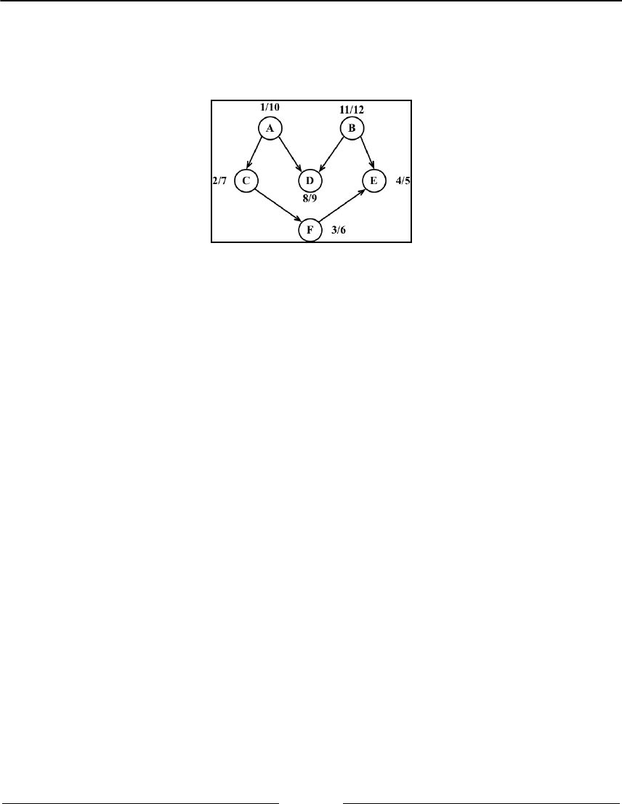
Graphs Chapter 12
[ 307 ]
This code will create the graph and its edges, execute the improved DFS algorithm, and
store the results inside the result variable. The following diagram demonstrates the
discovery and finish time of the graph after DFS is executed:
Now, all we have to do is sort the finishing time array and the decreasing order of finishing
time, and we will have the topological sorting for the graph, as follows:
const fTimes = result.finished;
s = '';
for (let count = 0; count < myVertices.length; count++) {
let max = 0;
let maxName = null;
for (i = 0; i < myVertices.length; i++) {
if (fTimes[myVertices[i]] > max) {
max = fTimes[myVertices[i]];
maxName = myVertices[i];
}
}
s += ' - ' + maxName;
delete fTimes[maxName];
}
console.log(s);
After executing the preceding code, we will get the following output:
B - A - D - C - F - E
Note that the previous toposort result is only one of the possibilities. There might be
different results if we modify the algorithm a little bit. For example, the following result is
one of many other possibilities:
A - B - C - D - F - E
This could also be an acceptable result.
Graphs Chapter 12
[ 308 ]
Shortest path algorithms
Given a map of streets, consider you want to get from point A to point B using the shortest
path possible. We can use, as an example for this problem, directions from Santa Monica
Blvd to Hollywood Blvd in Los Angeles, as demonstrated by the following screenshot:
This is a very common problem in our lives, and we will use apps such as Apple, or Google
Maps, or Waze to try to solve it, especially if you live in a big city. Of course, we also have
other constraints involved, such as time or car traffic, but the original problem remains:
how do we get from A to B using the shortest path?
We can use graphs to solve this problem for us, and the algorithm is called the shortest
path. There are two algorithms that are very famous, which are Dijkstra's algorithm and
the Floyd-Warshall algorithm, which we will cover in the next sections.
Graphs Chapter 12
[ 309 ]
Dijkstra's algorithm
Dijkstra's algorithm is a greedy algorithm (you will learn more about greedy algorithms in
Chapter 14, Algorithm Design and Techniques) to calculate the shortest path between a single
source and all the other sources, meaning we can use it to calculate the shortest path from a
graph vertex to all the other vertices.
Consider the following graph:
Let's take a look at how we can find the shortest path between the vertex A and all the other
vertices. But first, we need to declare the adjacent matrix that represents the preceding
graph, as follows:
var graph = [[0, 2, 4, 0, 0, 0],
[0, 0, 1, 4, 2, 0],
[0, 0, 0, 0, 3, 0],
[0, 0, 0, 0, 0, 2],
[0, 0, 0, 3, 0, 2],
[0, 0, 0, 0, 0, 0]];
Dijkstra's algorithm is given as follows:
const INF = Number.MAX_SAFE_INTEGER;
const dijkstra = (graph, src) => {
const dist = [];
const visited = [];
const { length } = graph;
for (let i = 0; i < length; i++) { // {1}
dist[i] = INF;
visited[i] = false;
}
dist[src] = 0; // {2}
for (let i = 0; i < length - 1; i++) { // {3}
const u = minDistance(dist, visited); // {4}
visited[u] = true; // {5}
for (let v = 0; v < length; v++) {
if (!visited[v] &&

Graphs Chapter 12
[ 310 ]
graph[u][v] !== 0 &&
dist[u] !== INF &&
dist[u] + graph[u][v] < dist[v]) { // {6}
dist[v] = dist[u] + graph[u][v]; // {7}
}
}
}
return dist; // {8}
};
The following is a description of how the algorithm works:
{1}: First, we need to initialize all distances (dist) as infinite (JavaScript max1.
number INF = Number.MAX_SAFE_INTEGER) and visited[] as false
{2}: Second, we will set the distance of the source vertex from itself as
0
2.
{3}: Then, we will find the shortest path for all vertices3.
{4}: To do so, we need to select the minimum distance vertex from the set of4.
vertices that have not been processed yet
{5}: We need to mark the selected vertex as visited so that we do not calculate5.
it twice
{6}: In case the shortest path is found, we will set the new value for the shortest6.
path ({7})
{8}: After all the vertices are processed, we will return the result containing the7.
shortest path value from the vertex source (src) to all the other vertices of the
graph
To calculate the minDistance, we will search for the minimum value in the dist array, as
follows, and return the array index that contains the minimum value:
const minDistance = (dist, visited) => {
let min = INF;
let minIndex = -1;
for (let v = 0; v < dist.length; v++) {
if (visited[v] === false && dist[v] <= min) {
min = dist[v];
minIndex = v;
}
}
return minIndex;
};
Graphs Chapter 12
[ 311 ]
If we execute the preceding algorithm for the graph we presented at the beginning of the
section, we will have the following output:
0 0
1 2
2 4
3 6
4 4
5 6
It is also possible to modify the algorithm to return the value of the
shortest path and also the path itself.
The Floyd-Warshall algorithm
The Floyd-Warshall algorithm is a dynamic programming algorithm (you will learn more
about dynamic programming in Chapter 14, Algorithm Design and Techniques) to calculate
all the shortest paths on a graph. With this algorithm, we can find the shortest path from all
the sources to all the vertices.
The Floyd-Warshall algorithm is given as follows:
const floydWarshall = graph => {
const dist = [];
const { length } = graph;
for (let i = 0; i < length; i++) { // {1}
dist[i] = [];
for (let j = 0; j < length; j++) {
if (i === j) {
dist[i][j] = 0; // {2}
} else if (!isFinite(graph[i][j])) {
dist[i][j] = Infinity; // {3}
} else {
dist[i][j] = graph[i][j]; // {4}
}
}
}
for (let k = 0; k < length; k++) { // {5}
for (let i = 0; i < length; i++) {
for (let j = 0; j < length; j++) {
if (dist[i][k] + dist[k][j] < dist[i][j]) { // {6}
dist[i][j] = dist[i][k] + dist[k][j]; // {7}
}

Graphs Chapter 12
[ 312 ]
}
}
}
return dist;
};
The following is the description of how the algorithm works.
First, we will initiate the distance array with the value of the weight between each vertex
({1}) as the minimum possible distance between i and j is the weight of these vertices
({4}). The distance of the vertex to itself is zero ({2}). In case there is no edge between two
vertices, we will represent it as Infinity ({3}). Using vertices 0...k as intermediate
points ({5}), the shortest path between i and j is given through k. The formula used to
calculate the shortest path between i and j through vertex k is given in line {6}. If a new
value for the shortest path is found, we will use it and store it ({7}).
The formula in line {6} is the heart of the Floyd-Warshall algorithm. If we execute the
preceding algorithm with the graph we exemplified at the beginning of the section, we will
have the following output:
0 2 4 6 4 6
INF 0 2 4 2 4
INF INF 0 6 3 5
INF INF INF 0 INF 2
INF INF INF 3 0 2
INF INF INF INF INF 0
Here, INF means that there is no shortest path between vertex i and j.
Another way of obtaining the same result would be to run Dijkstra's algorithm for each
vertex of the graph.
Minimum spanning tree (MST)
The minimum spanning tree (MST) problem is very common in network designing.
Imagine you have a business with several offices and want to connect the office's phone
lines with each other with a minimum total cost to save money. Which is the best way of
doing this?
This can also be applied to the island bridge problem. Consider you have an n number of
islands and want to build bridges to connect each of them with a minimum cost.
Graphs Chapter 12
[ 313 ]
Both the preceding problems can be solved with an MST algorithm, in which each office or
island can be represented as a vertex of a graph, and the edges represent the cost. Here, we
have an example of a graph where the thicker edges are a solution to the MST:
There are two main algorithms to find the minimal spanning trees: Prim's algorithm and
Kruskal's algorithm, which you will learn in the following sections.
Prim's algorithm
Prim's algorithm is a greedy algorithm that finds an MST problem for a connected weighted
undirected graph. It finds a subset of the edges that forms a tree that includes every vertex,
where the total weight of all the edges in the tree is minimized.
Prim's algorithm is given as follows:
const INF = Number.MAX_SAFE_INTEGER;
const prim = graph => {
const parent = [];
const key = [];
const visited = [];
const { length } = graph;
for (let i = 0; i < length; i++) { // {1}
key[i] = INF;
visited[i] = false;
}
key[0] = 0; // {2}
parent[0] = -1;
for (let i = 0; i < length - 1; i++) { // {3}
const u = minKey(graph, key, visited); // {4}
visited[u] = true; // {5}
for (let v = 0; v < length; v++) {
if (graph[u][v] && !visited[v] && graph[u][v] < key[v]) { // {6}
parent[v] = u; // {7}
key[v] = graph[u][v]; // {8}
}
}
Graphs Chapter 12
[ 314 ]
}
return parent; // {9}
};
The following is a description of how the algorithm works:
{1}: First, we need to initialize all the keys vertices as infinite (JavaScript max1.
number INF = Number.MAX_SAFE_INTEGER) and visited[] as false
{2}: Second, we will set the first key as
0
so that this vertex is picked as the first2.
vertex and parent[0] = -1 because the first node is always the root of the MST
{3}: Then, we will find the MST for all vertices3.
{4}: To do so, we need to select the minimum key vertex from the set of vertices4.
that have not been processed yet (the same function as we used in Dijkstra's
algorithm (minDistance) but with a different name)
{5}: We need to mark the selected vertex as visited so that we do not calculate5.
it twice
{6}: In case a minimum weight is found, we will store the MST path value6.
(parent, line {7}) and set the new cost for the MST value (line {8})
{9}: After all the vertices are processed, we will return the result containing the7.
MST
If we compare Prim's algorithm with Dijkstra's algorithm, we will see that
they are very similar, with the exception of lines {7} and {8}. Line {7}
keeps the parent array, which is the array that stores the MST. Line {8}
stores the minimum edge value, while in Dijkstra's algorithm, the distance
array is used instead of the key array to store the distance. We can modify
Dijkstra's algorithm to add to the parent array, and this way, we can
track the path along with its distance value.
Let's now execute the preceding algorithm for the following graph:
var graph = [[0, 2, 4, 0, 0, 0],
[2, 0, 2, 4, 2, 0],
[4, 2, 0, 0, 3, 0],
[0, 4, 0, 0, 3, 2],
[0, 2, 3, 3, 0, 2],
[0, 0, 0, 2, 2, 0]];

Graphs Chapter 12
[ 315 ]
We will have the following output:
Edge Weight
0 - 1 2
1 - 2 2
5 - 3 2
1 - 4 2
4 - 5 2
Kruskal's algorithm
Similarly to Prim's algorithm, Kruskal's algorithm is also a greedy algorithm that finds the
MST for a connected weighted undirected graph.
Kruskal's algorithm is given as follows:
const kruskal = graph => {
const { length } = graph;
const parent = [];
let ne = 0;
let a; let b; let u; let v;
const cost = initializeCost(graph); // {1}
while (ne < length - 1) { // {2}
for (let i = 0, min = INF; i < length; i++) { // {3}
for (let j = 0; j < length; j++) {
if (cost[i][j] < min) {
min = cost[i][j];
a = u = i;
b = v = j;
}
}
}
u = find(u, parent); // {4}
v = find(v, parent); // {5}
if (union(u, v, parent)) { // {6}
ne++;
}
cost[a][b] = cost[b][a] = INF; // {7}
}
return parent;
};

Graphs Chapter 12
[ 316 ]
The following is a description of how the algorithm works:
{1}: First, we will copy the adjacent matrix values to the cost array so that we can1.
modify it without losing the original values ({7})
{2}: While the MST has fewer edges than total edges by -12.
{3}: Find the edge with the minimum cost3.
Lines {4} and {5}: To avoid cycles, verify that the edge is already in the MST4.
{6}: If edges u and v are not the same, then add it to the MST5.
{7}: Remove the edges from the list so that we do not calculate it twice6.
{8}: Return the MST7.
The find function is given as follows. It prevents cycles in the MST:
const find = (i, parent) => {
while (parent[i]) {
i = parent[i];
}
return i;
};
The union function is also given here:
const union = (i, j, parent) => {
if (i !== j) {
parent[j] = i;
return true;
}
return false;
};
There are a few variations of this algorithm that can be developed. It will depend on the
data structure used to sort the weight of the edge's values (such as the priority queue) and
also how the graph is represented.
Graphs Chapter 12
[ 317 ]
Summary
In this chapter, we covered the basic concepts of graphs. We learned the different ways we
can represent this data structure, and we created a class to represent a graph using an
adjacency list. We also learned how to traverse a graph using BFS and DFS approaches. This
chapter also covered two applications of BFS and DFS, which find the shortest path using
BFS and topological sorting using DFS.
This chapter also covered some famous algorithms, such as Dijkstra's algorithm and the
Floyd-Warshall algorithm, to calculate the shortest path. We also covered Prim's algorithm
and Kruskal's algorithm to calculate the minimum spanning tree of a graph.
In the next chapter, you will learn about the most common sorting algorithms used in
computer science.
13
Sorting and Searching
Algorithms
Suppose we have a telephone directory (or a notebook) that does not have any sorting
order. When you need to add a contact with telephone numbers, you simply write it down
in the next available slot. Suppose you also have a high number of contacts in your contact
list. On any ordinary day, you need to find a particular contact and his/her telephone
number. However, as the contact list is not organized in any order, you have to check it
contact by contact until you find the desired one. This approach is horrible, don't you agree?
Imagine that you have to search for a contact in Yellow Pages and it is not organized! It could
take forever!
For this reason, among others, we need to organize sets of information, such as the
information we have stored in data structures. Sorting and searching algorithms are widely
used in the daily problems we have to solve.
In this chapter, you will learn about the most commonly used sorting and searching
algorithms, such as bubble sort, selection sort, insertion sort, shell sort, merge sort, quick
sort, counting sort, bucket sort, and radix sort, as well as the sequential, interpolation, and
binary search algorithms.
Sorting algorithms
In this section, we will cover some of the most well-known sorting algorithms in computer
science. We will start with the slowest one, and then we will cover some better algorithms.
We will understand that we first need to learn how to sort and then search for any given
information.
Sorting and Searching Algorithms Chapter 13
[ 319 ]
You can see an animated version of how the most famous algorithms
covered in this chapter work in the following links at https://visualgo.
net/en/sorting and https://www.toptal.com/developers/sorting-
algorithms.
Let's get started!
The bubble sort
When developers start learning sorting algorithms, they usually learn the bubble sort
algorithm first, because it is the simplest of all the sorting algorithms. However, it is one of
the worst-case sorting algorithms with respect to runtime, and you will see why.
The bubble sort algorithm compares every two adjacent values and swaps them if the first
one is bigger than the second one. It has this name because the values tend to move up into
the correct order, like bubbles rising to the surface.
Let's implement the bubble sort algorithm, as follows:
function bubbleSort(array, compareFn = defaultCompare) {
const { length } = array; // {1}
for (let i = 0; i < length; i++) { // {2}
for (let j = 0; j < length - 1; j++) { // {3}
if (compareFn(array[j], array[j + 1]) === Compare.BIGGER_THAN) { //
{4}
swap(array, j, j + 1); // {5}
}
}
}
return array;
}
Each non-distribution sort algorithm we will create in this chapter will receive the array to
be sorted as a parameter and a comparison function. To make testing easier to understand,
we will work with arrays of numbers in our examples. But in case we need to sort an array
of complex objects (array of people objects sorted by age property), our algorithm will be
ready as well. The compareFn function to be used as default is the defaultCompare
function we have used in previous chapters (return a < b ? Compare.LESS_THAN :
Compare.BIGGER_THAN).
Sorting and Searching Algorithms Chapter 13
[ 320 ]
First, let's declare a variable called length, which will store the size of the array ({1}). This
step will help us to get the size of the array on lines {2} and {3}, and this step is optional.
Next, we will have an outer loop ({2}) that will iterate the array from its first position to the
last one, controlling how many passes are done in the array (which should be one pass per
item of the array as the number of passes is equal to the size of the array). Then, we have an
inner loop ({3}) that will iterate the array, starting from its first position to the penultimate
value that will actually do the comparison between the current value and the next one
({4}). If the values are out of order (that is, the current value is bigger than the next one),
then we will swap them ({5}), meaning that the value of the j+1 position will be
transferred to the j position and vice versa.
We have created the swap function in Chapter 11, Binary Heap and Heap Sort. Just to remind
ourselves, the code for the swap function is presented as follows:
function swap(array, a, b) {
/* const temp = array[a];
array[a] = array[b];
array[b] = temp; */ // classic way
[array[a], array[b]] = [array[b], array[a]]; // ES2015 way
}
The following diagram illustrates the bubble sort in action:
Each different section in the preceding diagram represents a pass made by the outer loop
({2}), and each comparison between two adjacent values is made by the inner loop ({3}).
Sorting and Searching Algorithms Chapter 13
[ 321 ]
To test the bubble sort algorithm and get the same results shown in the diagram, we
will use the following code:
function createNonSortedArray(size) { // 6
const array = [];
for (let i = size; i > 0; i--) {
array.push(i);
}
return array;
}
let array = createNonSortedArray(5); // {7}
console.log(array.join()); // {8}
array = bubbleSort(array); // {9}
console.log(array.join()); //{10}
To help us test the sorting algorithms that you will learn in this chapter, we will create a
function that will automatically create a non-sorted array with the size that is passed by the
parameter ({6}). If we pass 5 as the parameter, the function will create the following array
for us: [5, 4, 3, 2, 1]. Then, all we have to do is call this function and store its return
value in a variable that contains the instance of the array initialized with some numbers
({7}). Just to make sure we have an unsorted array, we will output the array's content on
the console ({8}), call the bubble sort function ({9}), and output the sorted array's content
on the console again so that we can verify that the array was sorted ({10}).
You can find more examples and test cases on the source code that you
downloaded from the support page (or from the GitHub repository
at https://github.com/loiane/javascript-datastructures-
algorithms).
Note that when the algorithm executes the second pass of the outer loop (the second section
of the previous diagram), the numbers 4 and 5 are already sorted. Nevertheless, on
subsequent comparisons, we will keep comparing them even if the comparison is not
needed. For this reason, we will make a small improvement on the bubble sort algorithm.
Sorting and Searching Algorithms Chapter 13
[ 322 ]
The improved bubble sort
If we subtract the number of passes from the inner loop, we will avoid all the unnecessary
comparisons made by the inner loop ({1}):
function modifiedBubbleSort(array, compareFn = defaultCompare) {
const { length } = array;
for (let i = 0; i < length; i++) {
for (let j = 0; j < length - 1 - i; j++) { // {1}
if (compareFn(array[j], array[j + 1]) === Compare.BIGGER_THAN) {
swap(array, j, j + 1);
}
}
}
return array;
}
The following diagram exemplifies how the improved bubble sort works:
Note that we did not compare the numbers that are already in place. Even though we made
this small change to improve the bubble sort algorithm a little bit, it is not a recommended
algorithm. It has a complexity of O(n
2
).
We will talk more about the big O notation in Chapter 15, Algorithm Complexity, to learn
more about algorithms.

Sorting and Searching Algorithms Chapter 13
[ 323 ]
The selection sort
The selection sort algorithm is an in-place comparison sort algorithm. The general idea of
the selection sort is to find the minimum value in the data structure, place it in the first
position, then find the second minimum value, place it in the second position, and so on.
The following is the source code for the selection sort algorithm:
function selectionSort(array, compareFn = defaultCompare) {
const { length } = array; // {1}
let indexMin;
for (let i = 0; i < length - 1; i++) { // {2}
indexMin = i; // {3}
for (let j = i; j < length; j++) { // {4}
if (compareFn(array[indexMin], array[j]) === Compare.BIGGER_THAN) {
// {5}
indexMin = j; // {6}
}
}
if (i !== indexMin) { // {7}
swap(array, i, indexMin);
}
}
return array;
};
First, we will declare some of the variables that we will use in the algorithm ({1}). Then, we
have an outer loop ({2}) that will iterate the array and control the passes (that is, which nth
value of the array we need to find next or the next minimum value). We will assume that
the first value of the current pass is the minimum value of the array ({3}). Then, starting
from the current i value to the end of the array ({4}), we will compare whether the value in
the j position is lesser than the current minimum value ({5}); if this is true, we will change
the value of the minimum to the new minimum value ({6}). When we get out of the inner
loop ({4}), we will have the nth minimum value of the array. Then, if the minimum value is
different from the original minimum value ({7}), we will swap them.
To test the selection sort algorithm, we can use the following code:
let array = createNonSortedArray(5);
console.log(array.join());
array = selectionSort(array);
console.log(array.join());
Sorting and Searching Algorithms Chapter 13
[ 324 ]
The following diagram exemplifies the selection sort algorithm in action based on our array,
which was created in the preceding code [5, 4, 3, 2, 1]:
The arrows at the bottom of the array indicate the positions currently in consideration to
find the minimum value (inner loop: line {4}), and each step of the preceding diagram
represents the outer loop (line {2}).
The selection sort is also an algorithm of complexity O(n
2
). Similar to the bubble sort, it
contains two nested loops that are responsible for the quadratic complexity. However, the
selection sort performs worse than the insertion sort algorithm, which we will learn next.
The insertion sort
The insertion sort algorithm builds the final sorted array one value at a time. It assumes
that the first element is already sorted. Then, a comparison with the second value is
performed—should the second value stay in its place or be inserted before the first value?
The first two values will get sorted, then the comparison will take place with the third value
(that is, should it be inserted in the first, second, or third position?), and so on.
The following code represents the insertion sort algorithm:
function insertionSort(array, compareFn = defaultCompare) {
const { length } = array; // {1}
let temp;
for (let i = 1; i < length; i++) { // {2}
let j = i; // {3}
temp = array[i]; // {4}
Sorting and Searching Algorithms Chapter 13
[ 325 ]
while (j > 0 && compareFn(array[j - 1], temp) === Compare.BIGGER_THAN)
{ // {5}
array[j] = array[j - 1]; // {6}
j--;
}
array[j] = temp; // {7}
}
return array;
};
As usual, the first line of the algorithm is used to declare the variables we will use in the
source code ({1}). Then, we will iterate the array to find the correct place for the value of i
({2}). Note that we started from the second position (index 1), instead of position
0
(as we
considered the first value already sorted). Then, we assign the value of i to an auxiliary
variable ({3}), and we also stored the value of the i position of the array in a temporary
variable ({4}) so that we can insert it in the correct position later. The next step is finding
the correct place to insert the value. As long as the j variable is bigger than
0
(because the
first index of the array is
0
and there is no negative index) and the previous value in the
array is bigger than the value we are comparing ({5}), we will shift the previous value to
the current position ({6}) and decrease the value of j. At the end, we will insert the value in
its correct position.
The following diagram exemplifies the insertion sort in action:

Sorting and Searching Algorithms Chapter 13
[ 326 ]
For example, suppose the array we are trying to sort is [3, 5, 1, 4, 2]. These values
will be carried out in the steps performed by the insertion sort algorithm, as described in the
following steps:
The value 3 is already sorted, so we will start sorting the second value of the1.
array, which is the value 5. The value 3 is less than the value 5, so 5 stays in the
same place (meaning the second position of the array). The values 3 and 5 are
already sorted.
The next value to be sorted and inserted in the correct place is 1 (which is2.
currently in the third position of the array). The value 5 is greater than 1, so 5 is
shifted to the third position. We need to analyze whether 1 should be inserted in
the second position—is 1 greater than 3? It's not, so the value 3 gets shifted to the
second position. Next, we need to verify that 1 is inserted in the first position of
the array. As
0
is the first position and there isn't a negative position, 1 needs to
be inserted in the first position. The values 1, 3, and 5 are sorted.
We move to the next value: 4. Should the value 4 stay in the current position3.
(index 3), or does it need to be moved to a lower position? The value 4 is less
than 5, so 5 will get shifted to index 3. Should we insert 4 in index 2? The value 4
is greater than 3, so 4 is inserted in position 3 of the array.
The next value to be inserted is 2 (position 4 of the array). The value 5 is greater4.
than 2, so 5 gets shifted to index 4. The value 4 is greater than 2, so 4 will also get
shifted (position 3). The value 3 is also greater than 2, and 3 also gets shifted. The
value 1 is less than 2, so 2 is inserted at the second position of the array. Thus, the
array is sorted.
This algorithm has a better performance than the selection and bubble sort algorithms when
sorting small arrays.
The merge sort
The merge sort algorithm is the first sorting algorithm that can be used in a real-world
scenario. The three first sorting algorithms that we learned about in this book do not have a
good performance, but the merge sort has good performance with a complexity of O(n log
n).

Sorting and Searching Algorithms Chapter 13
[ 327 ]
The JavaScript Array class defines a sort function
(Array.prototype.sort) that can be used to sort arrays using JavaScript
(with no need to implement the algorithm ourselves). ECMAScript does
not define which sorting algorithm needs to be used, so each browser can
implement its own algorithm. For example, Mozilla Firefox uses the merge
sort as the Array.prototype.sort implementation, while Chrome (V8
engine) uses a variation of the quick sort (which we will learn about next).
The merge sort is a divide-and-conquer algorithm. The idea behind it is to divide the
original array into smaller arrays until each small array has only one position, and then
merge these smaller arrays into bigger ones until we have a single big array at the end that
is sorted.
Because of the divide-and-conquer approach, the merge sort algorithm is also recursive. We
will divide the algorithm into two functions: the first one will be responsible for dividing
the array into smaller ones and evoking the helper function that will perform the sort. Let's
take a look at the main function declared here:
function mergeSort(array, compareFn = defaultCompare) {
if (array.length > 1) { // {1}
const { length } = array;
const middle = Math.floor(length / 2); // {2}
const left = mergeSort(array.slice(0, middle), compareFn); // {3}
const right = mergeSort(array.slice(middle, length), compareFn); // {4}
array = merge(left, right, compareFn); // {5}
}
return array;
}
The merge sort will transform a bigger array into smaller arrays until they have only one
value in them. As the algorithm is recursive, we need a stop condition—that is, if the array
has a size less than 1 ({1}). If positive, we will return the array with size 1 or empty because
it is already sorted.
If the array size is bigger than 1, then we will split it into smaller arrays. To do so, first we
need to find the middle of the array ({2}), and once we find the middle, we will split the
array into two smaller arrays, which we will call left ({3}) and right ({4}). The left
array is composed of elements from index
0
to the middle index, and the right array
consists of elements from the middle index to the end of the original array. Lines {3} and
{4} will also evoke the mergeSort function itself until the left and right arrays have a
size less than or equal to 1.

Sorting and Searching Algorithms Chapter 13
[ 328 ]
The next steps will be to call the merge function ({5}), which will be responsible for
merging and sorting the smaller arrays into bigger ones until we have the original array
sorted and back together. The merge function is presented here:
function merge(left, right, compareFn) {
let i = 0; // {6}
let j = 0;
const result = [];
while (i < left.length && j < right.length) { // {7}
result.push(
compareFn(left[i], right[j]) === Compare.LESS_THAN ? left[i++] :
right[j++]
); // {8}
}
return result.concat(i < left.length ? left.slice(i) : right.slice(j));
// {9}
}
The merge function receives two arrays and merges them into a bigger array. During the
merge is when the sorting happens. First, we need to declare a new array that will be
created for the merge and also declare two variables ({6}) that will be used to iterate the
two arrays (the left and right arrays). While we can iterate through the two arrays ({7}),
we will compare whether the value from the left array is less than the value from the
right array. If positive, we will add the value from the left array to the merged result
array and also increment the variable that is used to iterate the array ({8}); otherwise, we
will add the value from the right array and increment the variable that is used to iterate
the array.
Next, we will add every remaining value from the left array ({9}) to the merged result
array and will do the same for the remaining values from the right array. At the end, we
will return a merged array.
Sorting and Searching Algorithms Chapter 13
[ 329 ]
If we execute the mergeSort function, this is how it will be executed:
Note that first the algorithm splits the original array until it has smaller arrays with a single
element, and then it starts merging. While merging, it does the sorting as well until we have
the original array completely back together and sorted.
The quick sort
The quick sort is probably the most used sorting algorithm. It has a complexity of O(n log
n), and it usually performs better than other O(n log n) sorting algorithms. Similarly to the
merge sort, it also uses the divide-and-conquer approach, dividing the original array into
smaller ones (but without splitting them as the merge sort does) to do the sorting.
The quick sort algorithm is a little bit more complex than the other ones you have learned
so far. Let's learn it step by step, as follows:
First, we need to select a value from the array called pivot, which will be the 1.
value at the middle of the array.

Sorting and Searching Algorithms Chapter 13
[ 330 ]
We will create two pointers (references)—the left-hand side one will point to the2.
first value of the array, and the right-hand side one will point to the last value of
the array. We will move the left pointer until we find a value that is bigger than
the pivot, and we will also move the right pointer until we find a value that is less
than the pivot and swap them. We will repeat this process until the left-hand side
pointer passes the right-hand side pointer. This process helps to have values
lower than the pivot reference before the pivot and values greater than the pivot
after the pivot reference. This is called the partition operation.
Next, the algorithm repeats the previous two steps for smaller arrays (subarrays3.
with smaller values and then subarrays with greater values) until the arrays are
completely sorted.
Let's start the implementation of the quick sort algorithm using the following code:
function quickSort(array, compareFn = defaultCompare) {
return quick(array, 0, array.length - 1, compareFn);
};
Similarly to the merge sort, we will start declaring the main method that will call the
recursive function, passing the array that we want to sort along with index
0
and its last
position (because we want to have the whole array sorted, not only a subset of it).
Next, we will declare the quick function, as follows:
function quick(array, left, right, compareFn) {
let index; // {1}
if (array.length > 1) { // {2}
index = partition(array, left, right, compareFn); // {3}
if (left < index - 1) { // {4}
quick(array, left, index - 1, compareFn); // {5}
}
if (index < right) { // {6}
quick(array, index, right, compareFn); // {7}
}
}
return array;
};
First, we will declare the index variable ({1}), which will help us separate the subarray
with smaller and greater values so that we can recursively call the quick function again. We
will obtain the index value as the return value of the partition function ({3}).

Sorting and Searching Algorithms Chapter 13
[ 331 ]
If the size of the array is larger than 1 (because an array with a single element is already
sorted—{2}), we will execute the partition operation on the given subarray (the first call
will pass the complete array) to obtain the index ({3}). If a subarray with smaller elements
exists ({4}), we will repeat the process for the subarray ({5}). We will do the same thing for
the subarray with greater values. If there is any subarray with a greater value ({6}), we will
repeat the quick sort process ({7}) as well.
Let's take a look how the partition process works in the next section.
The partition process
The first thing we need to do is choose the pivot element. There are a few ways in which we
can do this. The simplest one is selecting the first value of the array (the leftmost value).
However, studies show that this is not a good selection if the array is almost sorted, causing
the worst behavior of the algorithm. Another approach is selecting a random value of the
array or the middle value.
Now, let's take a look at the partition method:
function partition(array, left, right, compareFn) {
const pivot = array[Math.floor((right + left) / 2)]; // {8}
let i = left; // {9}
let j = right; // {10}
while (i <= j) { // {11}
while (compareFn(array[i], pivot) === Compare.LESS_THAN) { // {12}
i++;
}
while (compareFn(array[j], pivot) === Compare.BIGGER_THAN) { // {13}
j--;
}
if (i <= j) { // {14}
swap(array, i, j); // {15}
i++;
j--;
}
}
return i; // {16}
}
For this implementation, we will select the middle value as the pivot ({8}). We will also
initiate the two pointers: left (low at line {9}) with the first element of the array and
right (high at line {10}) with the last element of the array.
Sorting and Searching Algorithms Chapter 13
[ 332 ]
While the left and right pointers do not cross each other ({11}), we will execute the
partition operation. First, until we find an element that is greater than the pivot ({12}),
and we will shift the left pointer. We will do the same with the right pointer until we
find an element that is less than the pivot, and we will shift the right pointer as well
({13}).
When the left pointer is greater than the pivot and the right pointer is lower than the
pivot, we will compare whether the left pointer index is bigger than the right pointer
index ({14}), meaning whether the left value is greater than the right value (in value). We
will swap these values ({15}), shift both the pointers, and repeat the process (starting again
at line {11}).
At the end of the partition operation, we will return the index of the left pointer that will be
used to create the subarrays in line {3}.
The quick sort in action
Let's take a look at the quick sort algorithm in action step by step:
Sorting and Searching Algorithms Chapter 13
[ 333 ]
Given the [3, 5, 1, 6, 4, 7, 2] array, the preceding diagram represents the first
execution of the partition operation.
The following diagram exemplifies the execution of the partition operation for the first
subarray of lower values (note that 7 and 6 are not part of the subarray):
Next, we will continue creating subarrays, as seen in the following diagram, but now with
greater values than the subarray of the preceding diagram (the lower subarray with value 1
does not need to be partitioned because it only contains one value):

Sorting and Searching Algorithms Chapter 13
[ 334 ]
The lower subarray [2, 3] from the ([2, 3, 5, 4]) subarray continues to be partitioned
(line {5} from the algorithm):
Sorting and Searching Algorithms Chapter 13
[ 335 ]
Then, the greater subarray [5, 4] from the [2, 3, 5, 4] subarray also continues to be
partitioned (line {7} from the algorithm), as shown in the following diagram:
At the end, the greater subarray [6, 7] will also get affected by the partition operation,
completing the execution of the quick sort algorithm.
The counting sort
The counting sort is the first distribution sort we will learn about in this book. Distribution
sort algorithms use auxiliary data structures (known as buckets) that are organized and
then merged, resulting in the sorted array. The counting sort uses a temporary array that
will store how many times each element appears in the original array. After all the elements
are counted, the temporary array is sorted and it can be iterated to construct the resultant
sorted array.
It is a good algorithm to sort integers (it is an integer sorting algorithm) with complexity
O(n + k), where k is the size of the temporary counting array; however, it does require more
memory for the temporary array.

Sorting and Searching Algorithms Chapter 13
[ 336 ]
The following code represents the counting sort algorithm:
function countingSort(array) {
if (array.length < 2) { // {1}
return array;
}
const maxValue = findMaxValue(array); // {2}
const counts = new Array(maxValue + 1); // {3}
array.forEach(element => {
if (!counts[element]) { // {4}
counts[element] = 0;
}
counts[element]++; // {5}
});
let sortedIndex = 0;
counts.forEach((count, i) => {
while (count > 0) { // {6}
array[sortedIndex++] = i; // {7}
count--; // {8}
}
});
return array;
}
If the array to be sorted has none or a single element ({1}), there is no need to run the
sorting algorithm.
For the counting sort algorithm, we need to create the counts array, starting from index
0
(zero) until the maximum value + 1 index ({3}). For this reason, we also need to find what is
the maximum value stored in the array ({2}). To find the maximum value of the array, we
will simply need to iterate it and find what value is the higher one, as follows:
function findMaxValue(array) {
let max = array[0];
for (let i = 1; i < array.length; i++) {
if (array[i] > max) {
max = array[i];
}
}
return max;
}
Sorting and Searching Algorithms Chapter 13
[ 337 ]
Next, we will iterate each position of the array and will increment the counting of the
element in the counts array ({5}). Just to make sure the increment will work, if the counts
array has not been initialized with
0
(zero) the first time we are counting the element, we
assign the value zero to it as well ({4}).
In this algorithm, we are not using the for loop to iterate the arrays from
index
0
to its length. This is to demonstrate that although the classic way
of iterating arrays is using the for loop, we also have other possibilities,
such as using the forEach method, as we learned about in Chapter 3,
Arrays.
Now that all elements have been counted, we will iterate the counts array and construct
the resultant sorted array. As there might be more than one element with the same value,
we will add the element as many times as it appears in the original array. To do so, we will
decrement the count ({8}) until its value is zero ({6}), adding the value (i) in the resultant
array. For this reason, we also need an auxiliary index (sortedIndex) to help us in
assigning the values to their correct index in the resultant sorted array.
Let's see the counting sort algorithm in action to help us understand the preceding code:
The bucket sort
The bucket sort algorithm (also known as bin sort) is also a distributed sorting algorithm
that separates the elements into different buckets (smaller arrays), and then uses a simpler
sorting algorithm, such as the insertion sort (a good algorithm for small arrays), to sort each
bucket. It then merges all the buckets into the resultant sorted array.
The following code represents the bucket sort algorithm:
function bucketSort(array, bucketSize = 5) { // {1}
if (array.length < 2) {
return array;

Sorting and Searching Algorithms Chapter 13
[ 338 ]
}
const buckets = createBuckets(array, bucketSize); // {2}
return sortBuckets(buckets); // {3}
}
For the bucket sort algorithm, we need to specify how many buckets will be used to sort the
elements ({1}). By default, we will use 5 buckets. The bucket sort algorithm executes its
best scenario when the elements can be distributed into the buckets evenly. If the elements
are largely sparse, then using more buckets is better. If the elements are densely allocated,
then using fewer buckets is better. And for this reason, we allow the bucketSize to be
passed as a parameter.
We will divide the algorithm into two parts: the first part is creating the buckets and
distributing the elements into the different buckets ({2}). The second part of the algorithm
consists of running the insertion sort algorithm for each bucket and adding all bucket
elements into the resultant sorted array ({3}).
Let's take a look at the code that is responsible for creating the buckets:
function createBuckets(array, bucketSize) {
let minValue = array[0];
let maxValue = array[0];
for (let i = 1; i < array.length; i++) { // {4}
if (array[i] < minValue) {
minValue = array[i];
} else if (array[i] > maxValue) {
maxValue = array[i];
}
}
const bucketCount = Math.floor((maxValue - minValue) / bucketSize) + 1;
// {5}
const buckets = [];
for (let i = 0; i < bucketCount; i++) { // {6}
buckets[i] = [];
}
for (let i = 0; i < array.length; i++) { // {7}
const bucketIndex = Math.floor((array[i] - minValue) / bucketSize); //
{8}
buckets[bucketIndex].push(array[i]);
}
return buckets;
}

Sorting and Searching Algorithms Chapter 13
[ 339 ]
The first important step in the bucket sort is calculating how many elements will be
distributed in each bucket ({5}). To calculate this number, we will use a formula that
consists of calculating the difference between the higher and lower values of the array,
divided by the bucket size. In this case, we also need to iterate the original array and find
the maximum and minimum values ({4}). We could use the findMaxValue function that
we created for the counting sort algorithm and also create a findMinValue function, but it
would mean iterating through the same array twice. So, to optimize this search, we can find
both values iterating the array only once.
After calculating the bucketCount, we need to initialize each bucket ({6}). The buckets
data structure is a matrix (multidimensional array). Each position of the buckets variable
will hold another array.
And the last step is to distribute the elements into the buckets. We need to iterate each
element of the array ({7}), calculate what bucket we will put the element in ({8}), and
insert the element into the correct bucket. This step concludes the first part of the algorithm.
Let's take a look at the next part of the bucket sort algorithm, which is sorting each bucket:
function sortBuckets(buckets) {
const sortedArray = []; // {9}
for (let i = 0; i < buckets.length; i++) { // {10}
if (buckets[i] != null) {
insertionSort(buckets[i]); // {11}
sortedArray.push(...buckets[i]); // {12}
}
}
return sortedArray;
}
We will create a new array which is going to our resultant sorted array ({9})—this means
the original array is not modified since we return a new one. Next, we will iterate through
each valid bucket and will apply the insertion sort ({11})—depending on the scenario, we
could also apply other sorting algorithms, such as quick sort. And finally, we add all the
elements from the sorted bucket into the sorted array ({12}).
Note that in one line {12}, we are using the destructing operator introduced in ES2015 that
we learned about in Chapter 2, ECMAScript and TypeScript Overview. A classic approach
would be iterating each element of buckets[i] (buckets[i][j]) and adding each
element separately into the sorted array.
Sorting and Searching Algorithms Chapter 13
[ 340 ]
The following diagram demonstrates how the bucket sort algorithm works in action:
The radix sort
The radix sort algorithm is also a distribution sort algorithm that distributes the integers
into buckets based on a number's significant digit or value (the radix, hence the name radix
sort). The radix is based on the number system of the values of the arrays.
For example, for numbers of the decimal system, radix 10 is used; therefore, the algorithm is
going to use 10 buckets to distribute the elements and will first sort the numbers based on
the 1s, then 10s, then 100s, and so on.
The following code represents the radix sort algorithm:
function radixSort(array, radixBase = 10) {
if (array.length < 2) {
return array;
}
const minValue = findMinValue(array);
const maxValue = findMaxValue(array);
let significantDigit = 1; // {1}
while ((maxValue - minValue) / significantDigit >= 1) { // {2}
array = countingSortForRadix(array, radixBase, significantDigit,
minValue); // {3}
significantDigit *= radixBase; // {4}
}
return array;
}

Sorting and Searching Algorithms Chapter 13
[ 341 ]
Since the radix sort is also used to sort integers, we will start sorting all numbers by their
last digit ({1}). It is also possible to modify this algorithm to make it work with alpha
characters. We will sort the number based on their last digit only, and in the next iteration,
we will sort the number based on their second significant digit (the 10s), then the third
significant digit (the 100s), and on ({4}). We will do this until there are no significant digits
to sort ({2}), and that is why we need to know the minimum and maximum values present
in the array.
If the array to be sorted contains only values between 1 and 9, the loop in line {2} will run
only once. If there are values less than 99, then the loop will run a second time, and so on.
Let’s take a look at the code that is responsible for sorting based on the significant digit (the
radix):
function countingSortForRadix(array, radixBase, significantDigit, minValue)
{
let bucketsIndex;
const buckets = [];
const aux = [];
for (let i = 0; i < radixBase; i++) { // {5}
buckets[i] = 0;
}
for (let i = 0; i < array.length; i++) { // {6}
bucketsIndex = Math.floor(((array[i] - minValue) / significantDigit) %
radixBase); // {7}
buckets[bucketsIndex]++; // {8}
}
for (let i = 1; i < radixBase; i++) { // {9}
buckets[i] += buckets[i - 1];
}
for (let i = array.length - 1; i >= 0; i--) { // {10}
bucketsIndex = Math.floor(((array[i] - minValue) / significantDigit) %
radixBase); // {11}
aux[--buckets[bucketsIndex]] = array[i]; // {12}
}
for (let i = 0; i < array.length; i++) { // {13}
array[i] = aux[i];
}
return array;
}
First, we initialize the buckets ({5}) based on the radix base. As we are working with base
10 numbers, we will work with 10 buckets. Next, we will do a counting sort ({8}) based on
the significant digit of the numbers ({7}) that are in the array ({6}). Because we are doing a
counting sort, we also need to compute the cumulates so we have a correct count ({9}).
Sorting and Searching Algorithms Chapter 13
[ 342 ]
After counting the values, we will start moving the values back to the original array. We
will use a temporary array (aux) to help us with this task. For each value of the original
array ({10}), we will retrieve its significant digit again ({11}) and will move its value to the
aux array (subtracting the count from the buckets array—{12}). The last step is optional
({13}), as we transfer all the values from the aux array to the original array. As we are
returning the array, we could return the aux array directly instead of copying its values.
Let’s see how the radix sort algorithm works in action:
Searching algorithms
Now, let's talk about searching algorithms. If we take a look at the algorithms we
implemented in previous chapters, such as the search method of the BinarySearchTree
class (Chapter 10, Trees) or the indexOf method of the LinkedList class (Chapter 6,
Linked Lists), these are all search algorithms, and of course, each one was implemented
according to the behavior of its data structure. So we are already familiar with two search
algorithms; we just do not know their "official" names yet!
Sorting and Searching Algorithms Chapter 13
[ 343 ]
The sequential search
The sequential search or linear search is the most basic search algorithm. It consists of
comparing each element of the data structure with the one we are looking for. It is also the
most inefficient one.
Let's take a look at its implementation:
const DOES_NOT_EXIST = -1;
function sequentialSearch(array, value, equalsFn = defaultEquals) {
for (let i = 0; i < array.length; i++) { // {1}
if (equalsFn(value, array[i])) { // {2}
return i; // {3}
}
}
return DOES_NOT_EXIST; // {4}
}
The sequential search iterates through the array ({1}) and compares each value with the
value we are searching for ({2}). If we find it, we can return something to indicate that we
found it. We can return the value itself, the value true, or its index ({3}). In the
preceding implementation, we returned the index of the value. If we don't find the value,
we can return -1 ({4}), indicating that the index does not exist; the values false and null
are among the other options.
Suppose we have the [5, 4, 3, 2, 1] array and we are looking for the value 3, then the
following diagram shows the steps of the sequential search:

Sorting and Searching Algorithms Chapter 13
[ 344 ]
The binary search
The binary search algorithm works similar to the number guessing game, in
which someone says "I'm thinking of a number between 1 and 100". We will begin by
responding with a number, and the person will say "higher", "lower", or that we got it right.
To make the algorithm work, the data structure needs to be sorted first. These are the steps
that the algorithm follows:
A value is selected in the middle of the array.1.
If the value is the one we are looking for, we are done (the value was found).2.
If the value we are looking for is less than the selected one, then we will go back3.
to step 1 using the left subarray (lower).
If the value we are looking for is bigger than the selected one, then we will4.
go back to step 1 using the right subarray (higher).
Let's take a look at its implementation:
function binarySearch(array, value, compareFn = defaultCompare) {
const sortedArray = quickSort(array); // {1}
let low = 0; // {2}
let high = sortedArray.length - 1; // {3}
while (lesserOrEquals(low, high, compareFn) { // {4}
const mid = Math.floor((low + high) / 2); // {5}
const element = sortedArray[mid]; // {6}
if (compareFn(element, value) === Compare.LESS_THAN) { // {7}
low = mid + 1; // {8}
} else if (compareFn(element, value) === Compare.BIGGER_THAN) { // {9}
high = mid - 1; // {10}
} else {
return mid; // {11}
}
}
return DOES_NOT_EXIST; // {12}
}
To get started, the first thing we need to do is sort the array. We can use any algorithm we
implemented in the Sorting algorithms section. The quick sort was chosen for this
implementation ({1}). After the array is sorted, we will set the low ({2}) and high ({3})
pointers (which will work as boundaries).
Sorting and Searching Algorithms Chapter 13
[ 345 ]
While low is lower than high ({4}), in this case, low is greater than high, which means
that the value does not exist. So, we will return -1 ({12}), find the middle index ({5}), and
hence have the value of the middle value ({6}). Then, we will start comparing whether the
selected value is less than the value we are looking for ({7}), and we need to go lower
({8}) and start over. If the selected value is greater than the value we are looking for
({9}), we need to go higher ({10}) and start over. Otherwise, it means that the value is
equal to the value we are looking for; therefore, we will return its index ({11}).
The lesserOrEquals function used in the preceding code is declared here:
function lesserOrEquals(a, b, compareFn) {
const comp = compareFn(a, b);
return comp === Compare.LESS_THAN || comp === Compare.EQUALS;
}
Given the array in the following diagram, let's try to search for the value 2. These are the
steps that the algorithm will perform:
The BinarySearchTree class we implemented in Chapter 10, Trees, has
the search method, which is exactly the same as the binary search but
applied to tree data structures.

Sorting and Searching Algorithms Chapter 13
[ 346 ]
The interpolation search
The interpolation search algorithm is an improved variation of the binary search. While the
binary search always checks the value in the mid position, the interpolation search might
check different places of the array depending on the value that is being searched.
To make the algorithm work, the data structure needs to be sorted first. These are the steps
that the algorithm follows:
A value is selected using the position formula1.
If the value is the one we are looking for, we are done (the value was found)2.
If the value we are looking for is lesser than the selected one, then we will go3.
back to step 1 using the left subarray (lower)
If the value we are looking for is bigger than the selected one, then we will go4.
back to step 1 using the right subarray (higher)
Let's take a look at its implementation:
function interpolationSearch(array, value,
compareFn = defaultCompare,
equalsFn = defaultEquals,
diffFn = defaultDiff
) {
const { length } = array;
let low = 0;
let high = length - 1;
let position = -1;
let delta = -1;
while (
low <= high &&
biggerOrEquals(value, array[low], compareFn) &&
lesserOrEquals(value, array[high], compareFn)
) {
delta = diffFn(value, array[low]) / diffFn(array[high], array[low]); //
{1}
position = low + Math.floor((high - low) * delta); // {2}
if (equalsFn(array[position], value)) { // {3}
return position;
}
if (compareFn(array[position], value) === Compare.LESS_THAN) { // {4}
low = position + 1;
} else {
high = position - 1;
}
}
Sorting and Searching Algorithms Chapter 13
[ 347 ]
return DOES_NOT_EXIST;
}
The first thing we need to do is calculate the position ({2}) to compare the value with.
The idea of the formula is to find the higher value near the position if the searched value
is closer to array[high] and the lowest value near the position if the searched value is
closer to array[low]. This algorithm works better if the value instances are uniformly
distributed in the array (delta will be very low if value instances are uniformly
distributed) ({1}).
If the value is found, then we return its index ({3}). Otherwise, if the searched value is
less than the value in the current position, we repeat the logic using the left subarray or the
right subarray({4}).
The lesserEquals and biggerEquals functions are presented here:
function lesserEquals(a, b, compareFn) {
const comp = compareFn(a, b);
return comp === Compare.LESS_THAN || comp === Compare.EQUALS;
}
function biggerEquals(a, b, compareFn) {
const comp = compareFn(a, b);
return comp === Compare.BIGGER_THAN || comp === Compare.EQUALS;
}
The following diagram demonstrates the algorithm in action—the array uniformly
distributes (delta/difference between numbers is very low):

Sorting and Searching Algorithms Chapter 13
[ 348 ]
Shuffle algorithms
In this chapter, we learned how to sort an array to organize all its elements and also how to
search elements after the array is sorted. But there are also scenarios where we need to
shuffle the values of an array. A common scenario in real life is shuffling a deck of cards.
In the next section, we will learn about the most famous algorithm used to shuffle arrays.
The Fisher-Yates shuffle
This algorithm was created by Fisher and Yates and popularized by Donald E. Knuth in The
Art of Computer Programming book series.
It consists of iterating each position of the array, starting with its last position and swapping
the current position with a random position. The random position is lesser than the current
position; this way, the algorithm makes sure the positions already shuffled will not be
shuffled again (the more we shuffle a deck of cards, the worse is the shuffle).
The following code presents the Fisher-Yates shuffle algorithm:
function shuffle(array) {
for (let i = array.length - 1; i > 0; i--) {
const randomIndex = Math.floor(Math.random() * (i + 1));
swap(array, i, randomIndex);
}
return array;
}
Sorting and Searching Algorithms Chapter 13
[ 349 ]
In the following diagram, we can see the algorithm in action:
Summary
In this chapter, we learned about sorting, searching, and shuffling algorithms.
We learned about the bubble, selection, insertion, merge, quick, counting, bucket, and radix
sort algorithms, which are used to sort data structures. We also learned about the sequential
search, interpolation search, and binary search (which require the data structure to be
sorted already). We also covered how to shuffle values of an array.
In the next chapter, we will learn about some advanced techniques used in algorithms.
14
Algorithm Designs and
Techniques
So far, we have had fun discussing how to implement several different data structures and
the most commonly used sorting and searching algorithms. An algorithm in the
programming world is very interesting. The most beautiful thing about algorithms (and
programming logic) is that there is more than one approach to resolving a problem. As we
learned in previous chapters, we can design a solution using the iterative approach or make
the code easier to read using recursion. There are also other techniques we can use to solve
problems with algorithms. In this chapter, we will learn about different techniques, and we
will also discuss the next steps in case you are interested in diving deeper into this world.
In this chapter, we will cover:
Divide and conquer algorithms
Dynamic programming
Greedy algorithms
Backtracking algorithms
Famous algorithm problems
Divide and conquer
In Chapter 13, Sorting and Searching Algorithms, we learned how to develop the merge and
quick sort algorithms. What both sorting solutions have in common is that they are divide
and conquer algorithms. Divide and conquer is one of the approaches to algorithm design.
It breaks the problem into small subproblems that are similar to the original problem, it
solves the subproblems recursively, and combines the solutions of the subproblems to solve
the original problem.
Algorithm Designs and Techniques Chapter 14
[ 351 ]
The divide and conquer algorithm can be split into three parts:
Divide the original problem into smaller subproblems (smaller instances of the1.
original problem).
Conquer the smaller subproblems by solving them with recursive algorithms that2.
return the solution for the subproblems. The base case of the recursive algorithm
solves and returns the solution for the smallest subproblem.
Combine the solutions of the subproblems into the solution for the original3.
problem.
As we have already covered the two most famous divide and conquer algorithms
in Chapter 13, Sorting and Searching Algorithms, we will learn how to implement the binary
search using the divide and conquer approach.
Binary search
In Chapter 13, Sorting and Searching Algorithms, we learned how to implement the binary
using an iterative approach. If we go back and take a look at the algorithm, we can use the
divide and conquer approach to implement the binary search as well. The logic is the
following:
Divide: Calculate mid and search lower or upper half of the array
Conquer: Search value in the lower or upper half of the array
Combine: Not applicable as we are returning the index directly
The divide and conquer binary search algorithm is the following:
function binarySearchRecursive(
array, value, low, high, compareFn = defaultCompare
) {
if (low <= high) {
const mid = Math.floor((low + high) / 2);
const element = array[mid];
if (compareFn(element, value) === Compare.LESS_THAN) { // {1}
return binarySearchRecursive(array, value, mid + 1, high, compareFn);
} else if (compareFn(element, value) === Compare.BIGGER_THAN) { // {2}
return binarySearchRecursive(array, value, low, mid - 1, compareFn);
} else {
return mid; // {3}
}
}
return DOES_NOT_EXIST; // {4}
Algorithm Designs and Techniques Chapter 14
[ 352 ]
}
export function binarySearch(array, value, compareFn = defaultCompare) {
const sortedArray = quickSort(array);
const low = 0;
const high = sortedArray.length - 1;
return binarySearchRecursive(array, value, low, high, compareFn);
}
In the preceding algorithm, we have two functions: binarySearch and
binarySearchRecursive. The binarySearch function is the one exposed to the
developer to perform the search. The binarySearchRecursive is the divide and conquer
algorithm. We start passing the low parameter as
0
and the high parameter as
sortedArray.length - 1 to perform the search in the complete sorted array. After
calculating what is the index of the mid element, we ascertain whether the value we are
looking for is smaller or bigger than mid. If it is lesser ({1}) or bigger ({2}), we evoke the
binarySearchRecursive function again, but this time, we only perform the search in the
subarray, adapting the low or high parameters (instead of moving the pointer as in the
classic algorithm we learned about in Chapter 13, Sorting and Searching Algorithms). If not
lesser or bigger, it means we have found the value ({3}) and this is one of the base cases. In
a situation where low is bigger than high, this is also another base case, and it means the
algorithm did not find the value ({4}).
The following diagram exemplifies the algorithm in action:
Algorithm Designs and Techniques Chapter 14
[ 353 ]
Dynamic programming
Dynamic programming (DP) is an optimization technique used to solve complex problems
by breaking them into smaller subproblems.
Note that the dynamic programming approach is different from the divide
and conquer approach. While the divide and conquer approach breaks the
problem into independent subproblems and then combines the solutions,
dynamic programming breaks the problem into dependent subproblems.
An example of a dynamic programming algorithm is the Fibonacci problem we solved in
Chapter 9, Recursion. We broke the Fibonacci problem into smaller problems.
There are three important steps we need to follow when solving problems with DP:
Define the subproblems.1.
Implement the recurrence that solves the subproblems (in this step, we need to2.
follow the steps for recursion that we discussed in the previous section).
Recognize and solve the base cases.3.
There are some famous problems that can be solved with dynamic programming:
The knapsack problem: In this problem, given a set of items, each one with a
value and volume, the goal is to determine the best collection of items out of the
set in a way to maximize the total value. The constraint of the problem is that the
total volume needs to be the volume supported by the knapsack or less.
The longest common subsequence: This consists of finding the longest
subsequence (a sequence that can be derived from another sequence by deleting
some elements without changing the order of the remaining elements) common
to all sequences in a set of sequences.
Matrix chain multiplication: In this problem, given a sequence of matrices, the
goal is to find the most efficient way to multiply these matrices (with as few
operations as possible). The multiplication is not performed; the solution is
finding the sequences in each of the matrices that need to be multiplied.
Coin change: This consists of finding how many different ways we can make
change in a particular amount of cents using a given amount of set
denominations (d
1
...d
n
).
All-pairs shortest paths in a graph: This consists of finding the shortest path
from vertex u to vertex v for all pairs of vertices (u, v). You learned about this
problem in Chapter 12, Graphs, using the Floyd-Warshall algorithm.
Algorithm Designs and Techniques Chapter 14
[ 354 ]
We will cover these problems in the following sections.
These problems and their solutions are very common in programming the
interviews of big companies such as Google, Amazon, Microsoft, and
Oracle.
The minimum coin change problem
The minimum coin change problem is a variation of the coin change problem. The coin
change problem consists of finding out in how many ways we can make change for a
particular amount of cents using a given amount of set denominations (d
1
... d
n
). The
minimum coin change problem consists of finding the minimum number of coins needed to
make a particular amount of cents using a given amount of set denominations (d
1
...d
n
).
For example, the United States has the following denominations (coins): d
1
= 1; d
2
= 5; d
3
=
10; and d
4
= 25.
If we need to make change for 36 cents, we can use 1 quarter (25), 1 dime (10), and 1 penny
(1).
How do we transform this solution into an algorithm?
The min-coin change solution consists of finding the minimum number of coins for n. But to
do this, first we need to find the solution for every x < n. Then, we can build up the solution
out of the solutions for smaller values.
Let's take a look at the algorithm:
function minCoinChange(coins, amount) {
const cache = []; // {1}
const makeChange = (value) => { // {2}
if (!value) { // {3}
return [];
}
if (cache[value]) { // {4}
return cache[value];
}
let min = [];
let newMin;
let newAmount;
for (let i = 0; i < coins.length; i++) { // {5}
const coin = coins[i];
newAmount = value - coin; // {6}

Algorithm Designs and Techniques Chapter 14
[ 355 ]
if (newAmount >= 0) {
newMin = makeChange(newAmount); // {7}
}
if (
newAmount >= 0 && // {8}
(newMin.length < min.length - 1 || !min.length) && // {9}
(newMin.length || !newAmount) // {10}
) {
min = [coin].concat(newMin); // {11}
console.log('new Min ' + min + ' for ' + amount);
}
}
return (cache[value] = min); // {12}
};
return makeChange(amount); // {13}
}
The minCoinChange function receives the coins parameter, which represents the
denominations of our problem. For the US coin system, it would be [1, 5, 10, 25]. We
can pass any denominations that we like. Also, to be more efficient and not recalculate
values, we will keep a cache ({1}—this technique is called memoization).
Then, we have the makeChange function inside the minCoinChange function ({2}), which
is also recursive and is the function that will solve the problem for us. The makeChange
function is being evoked at line {13} with the amount passed as a parameter to the
minCoinChange function. And because makeChange is an inner function, it also has access
to the cache variable.
Now let's get to the main logic of the algorithm. First, if amount is not positive (< 0), then
we will return an empty array ({3}); at the end of the execution of this method, we will
return an array with the amount of each coin that can be used to make change (the
minimum amount of coins). Next, we will check cache. If the result is already cached ({4}),
then we will simply return its value; otherwise, we execute the algorithm.
To help us further, we will solve the problem based on the coins parameter
(denominations). So, for each coin ({5}), we will calculate newAmount ({6}), which will
decrease the value until we reach the minimum amount of change we can give (remember
that this algorithm will calculate all makeChange results for x < amount). If newAmount is
a valid value (positive value), then we will calculate the result for it as well ({7}).

Algorithm Designs and Techniques Chapter 14
[ 356 ]
At the end, we will verify whether newAmount is valid, whether minValue (the minimum
amount of coins) is the best result, and whether minValue and newAmount are valid values
({10}). If all the verifications are positive, it means we have a better result than previously
({11}—for example, for 5 cents, we can give 5 pennies or 1 nickel, 1 nickel being the best
solution). At the end, we will return the final result ({12}).
Let's test this algorithm using the following code:
console.log(minCoinChange([1, 5, 10, 25], 36));
Note that if we inspect the cache variable, it will hold all the results for 1 to 36 cents. The
result for the preceding code will be [1, 10, 25].
In the source code of this book, you will find some extra lines of code that will output the
steps of this algorithm. For example, if we use the denominations 1, 3, and 4, and execute
the algorithm for the amount 6, we will produce the following output:
new Min 1 for 1
new Min 1,1 for 2
new Min 1,1,1 for 3
new Min 3 for 3
new Min 1,3 for 4
new Min 4 for 4
new Min 1,4 for 5
new Min 1,1,4 for 6
new Min 3,3 for 6
[3, 3]
So, for the amount 6, the best solution is giving two coins of value 3.
The knapsack problem
The knapsack problem is a combinatorial optimization problem. It can be described as
follows: given a fixed-size knapsack with a capacity to carry W amount of weight and a set
of items that have a value and weight, find the best solution in a way to fill the knapsack
with the most valuable items so that the total weight is less than or equal to W.
Algorithm Designs and Techniques Chapter 14
[ 357 ]
Here, we have an example:
Item # Weight Value
1 2 3
2 3 4
3 4 5
Consider that the knapsack can only carry a weight of 5. For this example, we can say that
the best solution would be filling the knapsack with items 1 and 2, which together have a
weight of 5 and a total value of 7.
There are two versions of this problem: the 0-1 version, in which we can
only fill the knapsack with the whole item, and the fractional knapsack
problem, in which we can take fractions of the items. For this example, we
will work with the 0-1 version of the problem. The fractional version
cannot be solved with dynamic programming, but it can be solved with a
greedy algorithm, which you will learn about later on in this chapter.
Let's take a look at the knapsack algorithm, as follows:
function knapSack(capacity, weights, values, n) {
const kS = [];
for (let i = 0; i <= n; i++) { // {1}
kS[i] = [];
}
for (let i = 0; i <= n; i++) {
for (let w = 0; w <= capacity; w++) {
if (i === 0 || w === 0) { // {2}
kS[i][w] = 0;
} else if (weights[i - 1] <= w) { // {3}
const a = values[i - 1] + kS[i - 1][w - weights[i - 1]];
const b = kS[i - 1][w];
kS[i][w] = a > b ? a : b; // {4} max(a,b)
} else {
kS[i][w] = kS[i - 1][w]; // {5}
}
}
}
findValues(n, capacity, kS, weights, values); // {6} additional code
return kS[n][capacity]; // {7}
}
Algorithm Designs and Techniques Chapter 14
[ 358 ]
Let's take a look at how this algorithm works.
First, we will initialize the matrix that will be used to find the solution ({1}). This matrix is
ks[n+1][capacity+1]. Next, we will ignore the first column and row of the matrix so that
we can work only with indexes different from
0
({2}) and we will iterate each item
available in the array. Item i can only be part of the solution if its weight is less than the
constraint (capacity - {3}); otherwise, the total weight will be bigger than the capacity,
and this cannot happen. When this happens, we will simply ignore its value and use the
previous one ({5}). When we find that an item can be part of a solution, we will choose the
one with the maximum value ({4}). The solution can be found in the last cell of the two-
dimensional table, which is found in the lower right-hand corner of the table ({7}).
We can test the following algorithm using our initial example:
const values = [3,4,5],
weights = [2,3,4],
capacity = 5,
n = values.length;
console.log(knapSack(capacity, weights, values, n)); //outputs 7
The following diagram exemplifies the construction of the kS matrix for our example:
Algorithm Designs and Techniques Chapter 14
[ 359 ]
Note that this algorithm only outputs the maximum value that can be carried by the
knapsack but not the actual items. We can add the following additional function to find the
items that are part of the solution:
function findValues(n, capacity, kS, weights, values) {
let i = n;
let k = capacity;
console.log('Items that are part of the solution:');
while (i > 0 && k > 0) {
if (kS[i][k] !== kS[i - 1][k]) {
console.log(`item ${i} can be part of solution w,v: ${weights[i - 1]}
, ${values[i - 1]}`);
i--;
k -= kS[i][k];
} else {
i--;
}
}
}
We can call this function right before line {7} of the knapSack function (declared at line
{6}). If we execute the complete algorithm, we will have the following output:
Items that are part of the solution:
item 2 can be part of solution w,v: 3,4
item 1 can be part of solution w,v: 2,3
Total value that can be carried: 7
The knapsack problem can also be written recursively. You can find the
recursive version within the source code bundle of this book.
The longest common subsequence
Another DP problem that is very often used in programming challenge problems is the
longest common subsequence (LCS). This problem consists of finding the length of the
longest subsequence in two string sequences. The longest subsequence is a sequence that
appears in the same relative order but is not necessarily contiguous (not a substring) in both
strings.
Algorithm Designs and Techniques Chapter 14
[ 360 ]
Consider the following example:
Now, let's take a look at the following algorithm:
function lcs(wordX, wordY) {
const m = wordX.length;
const n = wordY.length;
const l = [];
for (let i = 0; i <= m; i++) {
l[i] = []; // {1}
for (let j = 0; j <= n; j++) {
l[i][j] = 0; // {2}
}
}
for (let i = 0; i <= m; i++) {
for (let j = 0; j <= n; j++) {
if (i === 0 || j === 0) {
l[i][j] = 0;
} else if (wordX[i - 1] === wordY[j - 1]) {
l[i][j] = l[i - 1][j - 1] + 1; // {3}
} else {
const a = l[i - 1][j];
const b = l[i][j - 1];
l[i][j] = a > b ? a : b; // {4} max(a,b)
}
}
}
return l[m][n]; // {5}
}
If we compare the knapsack problem with the LCS algorithm, we will notice that both are
very similar. This technique is called memoization, which consists of building the solution
in a top-down manner, and the solution is given in the lower right-hand corner of the
table/matrix.
Algorithm Designs and Techniques Chapter 14
[ 361 ]
As with the knapsack problem algorithm, this approach only outputs the length of the LCS,
but not the actual LCS. To be able to extract this information, we need to modify our
algorithm a little bit by declaring a new matrix called solution. Note that in our code,
there are some comments, and we need to replace the comments with the following code:
Line {1}: solution[i] = [];
Line {2}: solution[i][j] = '0';
Line {3}: solution[i][j] = 'diagonal';
Line {4}: solution[i][j]=(l[i][j] == l[i-1][j]) ? 'top' : 'left';
Line {5}: printSolution(solution, wordX, m, n);
The printSolution function is given as follows:
function printSolution(solution, wordX, m, n) {
let a = m;
let b = n;
let x = solution[a][b];
let answer = '';
while (x !== '0') {
if (solution[a][b] === 'diagonal') {
answer = wordX[a - 1] + answer;
a--;
b--;
} else if (solution[a][b] === 'left') {
b--;
} else if (solution[a][b] === 'top') {
a--;
}
x = solution[a][b];
}
console.log('lcs: ' + answer);
}
We can add the char to the answer whenever the direction of the solution matrix is
diagonal.
If we execute the preceding algorithm using the 'acbaed' and 'abcadf' strings, we will
get the output 4. The matrix l that was used to build the result will look similar to the
following. We can use the additional algorithm to backtrack the LCS value, as well (this is
highlighted in the following diagram):
Algorithm Designs and Techniques Chapter 14
[ 362 ]
From the preceding matrix, we know that the LCS algorithm is acad with a length of 4.
The LCS problem can also be written recursively. You can find the
recursive version within the source code bundle of this book.
Matrix chain multiplication
Matrix chain multiplication is another famous problem that can be solved with dynamic
programming. The problem consists of finding the best way (order) of multiplying a set of
matrices.
Let's try to understand the problem a little better. To multiply two matrices, A being a
matrix m by n, and B a matrix m by p. The result is matrix C, n by p.
Now, consider that we want to multiply A*B*C*D. As multiplication is associative, we can
multiply these matrices in any order. So, let's consider the following:
A is a 10 by 100 matrix
B is a 100 by 5 matrix
C is a 5 by 50 matrix
D is a 50 by 1 matrix
The result is an A*B*C*D 10 by 1 matrix
Algorithm Designs and Techniques Chapter 14
[ 363 ]
Within this example, there are five ways of doing this multiplication:
(A(B(CD))): The total of the multiplications is 1,750
((AB)(CD)): The total of the multiplications is 5,300
(((AB)C)D): The total of the multiplications is 8,000
((A(BC))D): The total of the multiplications is 75,500
(A((BC)D)): The total of the multiplications is 31,000
The order of the multiplication can make a difference to the total number of multiplications
performed. So, how can we create an algorithm to find the minimum number of operations?
The matrix chain multiplication algorithm is given as follows:
function matrixChainOrder(p) {
const n = p.length;
const m = [];
const s = [];
for (let i = 1; i <= n; i++) {
m[i] = [];
m[i][i] = 0;
}
for (let l = 2; l < n; l++) {
for (let i = 1; i <= (n - l) + 1; i++) {
const j = (i + l) - 1;
m[i][j] = Number.MAX_SAFE_INTEGER;
for (let k = i; k <= j - 1; k++) {
const q = m[i][k] + m[k + 1][j] + ((p[i - 1] * p[k]) * p[j]); //
{1}
if (q < m[i][j]) {
m[i][j] = q; // {2}
}
}
}
}
return m[1][n - 1]; // {3}
}
The most important line of this code is line {1} because this is the one doing all the magic,
meaning it calculates the number of multiplications of a given parenthesis order and stores
the value in the auxiliary matrix m.

Algorithm Designs and Techniques Chapter 14
[ 364 ]
If we execute the preceding algorithm to our initial example, we will have the output 1750,
this being the minimum number of operations as we mentioned before. Take a look at this:
const p = [10, 100, 5, 50, 1];
console.log(matrixChainOrder(p));
However, this algorithm does not provide us with the order of the parenthesis of the
optimal solution either. We can make some changes to our code to be able to get this
information.
First, we need to declare and initialize an auxiliary matrix s via the following code:
const s = [];
for (let i = 0; i <= n; i++){
s[i] = [];
for (let j=0; j <= n; j++){
s[i][j] = 0;
}
}
Then, in line {2} of the matrixChainOrder function, we will add the following code:
s[i][j] = k;
In line {3}, we will call the function that will print the parenthesis for us, as follows:
printOptimalParenthesis(s, 1, n-1);
Finally, we will have the printOptimalParenthesis function, which would be as
follows:
function printOptimalParenthesis(s, i, j){
if(i === j) {
console.log("A[" + i + "]");
} else {
console.log("(");
printOptimalParenthesis(s, i, s[i][j]);
printOptimalParenthesis(s, s[i][j] + 1, j);
console.log(")");
}
}
If we execute the modified algorithm, we will also get the optimal order of the
parenthesis, (A[1](A[2](A[3]A[4]))), which can be translated to (A(B(CD))).
Algorithm Designs and Techniques Chapter 14
[ 365 ]
Greedy algorithms
A greedy algorithm follows the problem-solving heuristic of making the locally optimal
choice (the best solution at the time) at each stage with the hope of finding a global
optimum (global best solution). It does not evaluate the bigger picture like a dynamic
programming algorithm does.
Let's take a look at how we can solve the min-coin change and knapsack problems we
covered in the dynamic programming topic using the greedy approach.
We covered some other greedy algorithms in this book in Chapter 12,
Graphs, such as Dijkstra's algorithm, Prim's algorithm, and Kruskal's
algorithm.
The min-coin change problem
The min-coin change problem can also be resolved with a greedy algorithm. Most of the
time, the result is also optimal, but for some denominations, the result will not be optimal.
Let's take a look at the algorithm:
function minCoinChange(coins, amount) {
const change = [];
let total = 0;
for (let i = coins.length; i >= 0; i--) { // {1}
const coin = coins[i];
while (total + coin <= amount) { // {2}
change.push(coin); // {3}
total += coin; // {4}
}
}
return change;
}
Note that the greedy version of minCoinChange is much simpler than the DP one. For each
coin ({1}, starting from the biggest one to the smallest one), we will add the coin value to
total, and total needs to be less than amount ({2}). We will add coin to the result ({3})
and also to total ({4}).
Algorithm Designs and Techniques Chapter 14
[ 366 ]
The solution is simple and greedy. We will start with the coin with the greatest value and
give the change that is possible with this coin. When we cannot give more coins for the
current coin value, we will start giving change with the coin that has the second greatest
value and so on.
To test the code, we will use the same code we used in the DP approach, as follows:
console.log(minCoinChange([1, 5, 10, 25], 36));
The result will also be [25, 10, 1], the same result that we got using DP. The following
diagram exemplifies how the algorithm is executed:
However, if we use the [1, 3, 4] denomination and execute the preceding greedy
algorithm, we will get [4, 1, 1] as the result. If we use the dynamic programming
solution, we will get [3, 3] as the result, which is the optimal result.
Greedy algorithms are simpler and also faster than dynamic programming algorithms.
However, as we can note, it does not give the optimal answer all the time. However, on
average, it would output an acceptable solution for the time it takes to execute.
The fractional knapsack problem
The algorithm to solve the fractional knapsack problem is a little different from the dynamic
programming version. While, in the 0-1 knapsack problem, we can only use the whole item
to fill the knapsack, in the fractional knapsack problem, we can use fractions of the items.
Let's use the same example we used before to compare the differences, as follows:
Item # Weight Value
1 2 3
2 3 4
3 4 5

Algorithm Designs and Techniques Chapter 14
[ 367 ]
In the dynamic programming example, we considered that the knapsack could only carry a
weight of 5. For this example, we can say that the best solution would be filling the
knapsack with items 1 and 2, which together have a weight of 5 and a total value of 7.
If we consider the same capacity for the fractional knapsack problem, we will have the same
output. So, let's consider the capacity as 6 instead of 5.
In this case, the solution would be to use items 1 and 2 and only 25% of item 3. This would
give a maximum value of 8.25 with a total weight of 6.
Let's take a look at the following algorithm:
function knapSack(capacity, weights, values) {
const n = values.length;
let load = 0;
let val = 0;
for (let i = 0; i < n && load < capacity; i++) { // {1}
if (weights[i] <= capacity - load) { // {2}
val += values[i];
load += weights[i];
} else {
const r = (capacity - load) / weights[i]; // {3}
val += r * values[i];
load += weights[i];
}
}
return val;
}
While the total load is less than the capacity (we cannot carry more than the capacity),
we will iterate the items ({1}). If we can use the total weight of the item ({2}—it is less than
or equal to the capacity)—then we will add it to the total value (val) and update the
current load of the knapsack. If we cannot use the total weight of the item, we will calculate
what is the ratio (r) that we can use ({3}—the fraction that we can carry).
If we apply capacity 6 to the 0-1 knapsack problem, we will see that items 1 and 3 will be
selected as part of the solution. In this case, we have two different outputs for the same
problem, but are using different approaches to solve the problem.
Algorithm Designs and Techniques Chapter 14
[ 368 ]
Backtracking algorithms
Backtracking is a strategy used to find and build a solution incrementally. We start with a
possible move and we try to solve the problem with the selected move. If it does not work,
we backtrack and then we select another move and so on until we have the problem solved.
Due to this behavior, backtracking algorithms will try all possible moves (or a few moves if
a solution is found sooner) to solve a problem.
There are some famous problems that can be solved with backtracking:
The Knight’s tour problem
N Queen problem
Rat in a maze
Sudoku Solver
In this book, we will learn the Rat in a Maze and Sudoku Solver problems
as they are easier to understand. However, you can find the source code
for other backtracking problems along with the source code bundle of this
book.
Rat in a Maze
Suppose we have a matrix with size N*N, and each position of the matrix is a block. The
position (or block) can be free (value 1) or it can be blocked (value
0
), as shown in the
following diagram, where S is source and D is destination:
The matrix is the maze and the goal is for the "rat" to start at position [0][0] and go to
position [n-1][n-1] (destination). The rat can move in two directions: vertically or
horizontally in any position that is not blocked.
Let's start declaring the basic structure of our algorithm, as follows:
export function ratInAMaze(maze) {
const solution = [];

Algorithm Designs and Techniques Chapter 14
[ 369 ]
for (let i = 0; i < maze.length; i++) { // {1}
solution[i] = [];
for (let j = 0; j < maze[i].length; j++) {
solution[i][j] = 0;
}
}
if (findPath(maze, 0, 0, solution) === true) { // {2}
return solution;
}
return 'NO PATH FOUND'; // {3}
}
We will first start creating the matrix that contains the solution. We will initialize every
position with zero ({1}). For every move the rat makes, we will mark the path with value 1.
If the algorithm is able to find a solution ({2}), it will return the solution matrix, or an
error message, otherwise ({3}).
Next, we have the findPath method that will try to find the solution for a given maze
matrix, starting at positions x and y. As with the other techniques presented in this chapter,
the backtracking technique also uses recursion, and that is what allows the algorithm to
backtrack, as shown here:
function findPath(maze, x, y, solution) {
const n = maze.length;
if (x === n - 1 && y === n - 1) { // {4}
solution[x][y] = 1;
return true;
}
if (isSafe(maze, x, y) === true) { // {5}
solution[x][y] = 1; // {6}
if (findPath(maze, x + 1, y, solution)) { // {7}
return true;
}
if (findPath(maze, x, y + 1, solution)) { // {8}
return true;
}
solution[x][y] = 0; // {9}
return false;
}
return false; // {10}
}

Algorithm Designs and Techniques Chapter 14
[ 370 ]
The first step of the algorithm is to verify whether the rat reached its destination ({4}). If so,
we mark the last position as part of the path and return true, meaning the move was done
successfully. If it is not the last position, we will verify whether it is safe for the rat to move
into position ({5} meaning the position if free, as declared in the isSafe method declared
next). If it is safe, then we add the move into the path ({6}) and we try to move in the maze
matrix horizontally (to the right) to the next position ({7}). If moving horizontally is not
possible, then we try to move vertically to the next position, moving towards the bottom of
the matrix ({8}). If it is not possible to move horizontally or vertically, then we remove the
move from the path and we backtrack ({9}), meaning the algorithm will try another
possible solution. After the algorithm tries all possible moves and it does not find a
solution, then it will return false ({10}), meaning there is no solution to the puzzle.
function isSafe(maze, x, y) {
const n = maze.length;
if (x >= 0 && y >= 0 && x < n && y < n && maze[x][y] !== 0) {
return true; // {11}
}
return false;
}
We can test this algorithm by using the following code:
const maze = [
[1, 0, 0, 0],
[1, 1, 1, 1],
[0, 0, 1, 0],
[0, 1, 1, 1]
];
console.log(ratInAMaze(maze));
And the output will be:
[[1, 0, 0, 0],
[1, 1, 1, 0],
[0, 0, 1, 0],
[0, 0, 1, 1]]
Algorithm Designs and Techniques Chapter 14
[ 371 ]
Sudoku Solver
Sudoku is a very fun puzzle game and one of the most popular games of all time. The
objective is to fill a 9x9 matrix with the digits 1 to 9 in order that each row and each column
is composed with all the nine digits. The matrix also contains smaller boxes (3x3 matrix)
that also need to contain all the nine digits. The puzzle provides an initial matrix partially
filled, as displayed in the following diagram:
The backtracking algorithm for Sudoku Solver will try to place each number in each row
and each column in order to solve the puzzle. As with the Rat in a Maze problem, we will
start with the main method of the algorithm:
function sudokuSolver(matrix) {
if (solveSudoku(matrix) === true) {
return matrix;
}
return 'NO SOLUTION EXISTS!';
}

Algorithm Designs and Techniques Chapter 14
[ 372 ]
The algorithm will return the matrix filled with the missing digits if a solution is found or it
will return an error message. Now, let's dive into the main logic of the algorithm:
const UNASSIGNED = 0;
function solveSudoku(matrix) {
let row = 0;
let col = 0;
let checkBlankSpaces = false;
for (row = 0; row < matrix.length; row++) { // {1}
for (col = 0; col < matrix[row].length; col++) {
if (matrix[row][col] === UNASSIGNED) {
checkBlankSpaces = true; // {2}
break;
}
}
if (checkBlankSpaces === true) { // {3}
break;
}
}
if (checkBlankSpaces === false) {
return true; // {4}
}
for (let num = 1; num <= 9; num++) { // {5}
if (isSafe(matrix, row, col, num)) { // {6}
matrix[row][col] = num; // {7}
if (solveSudoku(matrix)) { // {8}
return true;
}
matrix[row][col] = UNASSIGNED; // {9}
}
}
return false; // {10}
}
The first step is verifying whether the puzzle has been resolved ({1}). If there are no blank
spaces (positions with value 0), it means the puzzle is complete ({4}). But if there are blank
spaces ({2}), we will break out of the two loops ({3}) and the row and col variables will
have the position of the blank space that needs to be filled with a 1-9 digit. Next, the
algorithm will try to fill out the blank spaces with the 1-9 digits, one at a time ({5}). We will
check whether it is safe to add the digit ({6}), meaning the digit is not present in the row,
column, or in the box (matrix 3x3). If it is safe, then we add the digit to the puzzle ({7}) and
we run the solveSudoku function again to try the next available space ({8}). In case a digit
is placed in an incorrect position, we mark the position as blank again ({9}) and the
algorithm will backtrack ({10}) and try a different digit.

Algorithm Designs and Techniques Chapter 14
[ 373 ]
The isSafe function is declared with the verifications required to input a digit into the
matrix as follows:
function isSafe(matrix, row, col, num) {
return (
!usedInRow(matrix, row, num) &&
!usedInCol(matrix, col, num) &&
!usedInBox(matrix, row - (row % 3), col - (col % 3), num)
);
}
And the specific verifications are declared as follows:
function usedInRow(matrix, row, num) {
for (let col = 0; col < matrix.length; col++) { // {11}
if (matrix[row][col] === num) {
return true;
}
}
return false;
}
function usedInCol(matrix, col, num) {
for (let row = 0; row < matrix.length; row++) { // {12}
if (matrix[row][col] === num) {
return true;
}
}
return false;
}
function usedInBox(matrix, boxStartRow, boxStartCol, num) {
for (let row = 0; row < 3; row++) {
for (let col = 0; col < 3; col++) {
if (matrix[row + boxStartRow][col + boxStartCol] === num) { // {13}
return true;
}
}
}
return false;
}
First, we will verify whether the digit already exists in the row by iterating every position of
the matrix in the given row ({11}). Next, we will iterate all columns to verify whether the
digit exists in the given column ({12}). And the final verification is to check whether the
digit exists in the box ({13}), by iterating all positions of the 3x3 box matrix.

Algorithm Designs and Techniques Chapter 14
[ 374 ]
We can test the algorithm using the following example:
const sudokuGrid = [
[5, 3, 0, 0, 7, 0, 0, 0, 0],
[6, 0, 0, 1, 9, 5, 0, 0, 0],
[0, 9, 8, 0, 0, 0, 0, 6, 0],
[8, 0, 0, 0, 6, 0, 0, 0, 3],
[4, 0, 0, 8, 0, 3, 0, 0, 1],
[7, 0, 0, 0, 2, 0, 0, 0, 6],
[0, 6, 0, 0, 0, 0, 2, 8, 0],
[0, 0, 0, 4, 1, 9, 0, 0, 5],
[0, 0, 0, 0, 8, 0, 0, 7, 9]
];
console.log(sudokuSolver(sudokuGrid));
And the output will be:
[[5, 3, 4, 6, 7, 8, 9, 1, 2],
[6, 7, 2, 1, 9, 5, 3, 4, 8],
[1, 9, 8, 3, 4, 2, 5, 6, 7],
[8, 5, 9, 7, 6, 1, 4, 2, 3],
[4, 2, 6, 8, 5, 3, 7, 9, 1],
[7, 1, 3, 9, 2, 4, 8, 5, 6],
[9, 6, 1, 5, 3, 7, 2, 8, 4],
[2, 8, 7, 4, 1, 9, 6, 3, 5],
[3, 4, 5, 2, 8, 6, 1, 7, 9]]
Introduction to functional programming
So far in this book, we have used a paradigm called imperative programming. In
imperative programming, we code each step of the program, describing in detail what
needs to be done and in which order it needs to be done.
In this section, we will introduce a new paradigm called functional programming (FP). We
have already used some FP code snippets in some algorithms in this book. Functional
programming is a paradigm used especially by academics, and thanks to modern languages
such as Python and Ruby, it has started to become popular among industry developers as
well. And thankfully, we can use JavaScript to program functionally, leveraging its ES2015
capabilities as well.

Algorithm Designs and Techniques Chapter 14
[ 375 ]
Functional versus imperative programming
Developing in the functional paradigm is not difficult; it is just a matter of getting used to
how the paradigm works. Let's code an example to note the differences.
Consider that we need to print all the elements of an array. We can use imperative
programming and declare the following function:
const printArray = function(array) {
for (var i = 0; i < array.length; i++){
console.log(array[i]);
}
};
printArray([1, 2, 3, 4, 5]);
In the preceding code, we iterated the array and logged each of the items.
Now, let's try converting the example to functional programming. In functional
programming, the functions are the rock stars. We need to focus on what needs to be
described, not how. Let's go back to the phrase, "we iterated the array and logged each of
the items". So, the first thing we will focus on is iterating the data, and then we will take
action on it, which is logging the items. The following function will be responsible for
iterating the array:
const forEach = function(array, action){
for (var i = 0; i < array.length; i++){
action(array[i]);
}
};
Then, we will create another function that will be responsible for logging the array elements
to the console (we can consider it a callback function), as follows:
const logItem = function(item) {
console.log(item);
};
Finally, we can use the functions we declared, as follows:
forEach([1, 2, 3, 4, 5], logItem);
Looking closely at the preceding code, we can describe that we will log each item of the
array to the console. And we have our first functional programming example!
Algorithm Designs and Techniques Chapter 14
[ 376 ]
A few things to keep in mind:
The main goal is to describe the data and the transformation we need to apply to
the data.
The order of the execution of the program has low importance, while the steps
and their sequence are very important in imperative programming.
Functions and data collections are the rock stars in functional programming.
We can use and abuse functions and recursion in functional programming, while
the loops, assignments, conditionals, and also functions are used in imperative
programming.
With functional programming we need to avoid side effects and mutable data,
meaning we do not modify the data that is being passed to the function. If we
need to return a solution based on the input, we can make a copy and return the
modified copy of the data.
ES2015+ and functional programming
With the ES2015+ functionalities, developing functional programs in JavaScript is even
easier. Let's consider an example.
Consider we want to find the minimum value of an array. In imperative programming, to
perform this task, we simply need to iterate throughout the array and verify that the current
minimum value is bigger than the value of the array; if so, we will assign the new minimum
value, as follows:
var findMinArray = function(array){
var minValue = array[0];
for (var i=1; i<array.length; i++){
if (minValue > array[i]){
minValue = array[i];
}
}
return minValue;
};
console.log(findMinArray([8,6,4,5,9])); // outputs 4

Algorithm Designs and Techniques Chapter 14
[ 377 ]
To perform the same task in functional programming, we can use the Math.min function,
passing all the elements of the array to be compared. To transform the array into single
elements, we can use the ES2015 spread operator (...), as in the following example:
const min_ = function(array){
return Math.min(...array)
};
console.log(min_([8,6,4,5,9])); //outputs 4
Using ES2015 arrow functions, we can simplify the preceding code a little bit more:
const min = arr => Math.min(...arr);
console.log(min([8,6,4,5,9]));
We can also rewrite the first example using the ES2015 syntax:
const forEach = (array, action) => array.forEach(item => action(item));
const logItem = (item) => console.log(item);
The JavaScript functional toolbox – map, filter,
and reduce
The map, filter, and reduce functions (which you learned about in Chapter 3, Arrays) are
the base of functional programming in JavaScript.
Using the map function, we can transform or map a collection of data into another collection
of data. Let's take a look at an example using imperative programming:
const daysOfWeek = [
{name: 'Monday', value: 1},
{name: 'Tuesday', value: 2},
{name: 'Wednesday', value: 7}
];
let daysOfWeekValues_ = [];
for (let i = 0; i < daysOfWeek.length; i++) {
daysOfWeekValues_.push(daysOfWeek[i].value);
}
Now let's consider the same example using functional programming with ES2015+ syntax,
as follows:
const daysOfWeekValues = daysOfWeek.map(day => day.value);
console.log(daysOfWeekValues);

Algorithm Designs and Techniques Chapter 14
[ 378 ]
Using the filter function, we can filter values out of a collection. Let's consider an
example:
const positiveNumbers_ = function(array){
let positive = [];
for (let i = 0; i < array.length; i++) {
if (array[i] >= 0){
positive.push(array[i]);
}
}
return positive;
}
console.log(positiveNumbers_([-1,1,2,-2]));
We can write the same code using the functional paradigm, as follows:
const positiveNumbers = (array) => array.filter(num => (num >= 0));
console.log(positiveNumbers([-1,1,2,-2]));
Also, using the reduce function, we can reduce a collection to a specific value. For example,
let's take a look at how to sum the values of an array:
const sumValues = function(array) {
let total = array[0];
for (let i = 1; i<array.length; i++) {
total += array[i];
}
return total;
};
console.log(sumValues([1, 2, 3, 4, 5]));
We can also write the preceding code as follows:
const sum_ = function(array){
return array.reduce(function(a, b){
return a + b;
})
};
console.log(sum_([1, 2, 3, 4, 5]));
We can also mix these functions with the ES2015 functionalities, such as the destructing
assignment operator and arrow functions, as shown in the following code:
const sum = arr => arr.reduce((a, b) => a + b);
console.log(sum([1, 2, 3, 4, 5]));
Algorithm Designs and Techniques Chapter 14
[ 379 ]
Let's take a look at another example. Consider that we need to write a function to
concatenate several arrays. To do so, we can create another array that will contain all the
elements from the other arrays. We can execute the following code using the imperative
paradigm:
const mergeArrays_ = function(arrays){
const count = arrays.length;
let newArray = [];
let k = 0;
for (let i = 0; i < count; i++){
for (var j = 0; j < arrays[i].length; j++){
newArray[k++] = arrays[i][j];
}
}
return newArray;
};
console.log(mergeArrays_([[1, 2, 3], [4, 5], [6]]));
Note that in this example, we are declaring variables and using loops. Now, let's execute the
code written before using functional JavaScript programming, as follows:
const mergeArraysConcat = function(arrays){
return arrays.reduce( function(p,n){
return p.concat(n);
});
};
console.log(mergeArraysConcat([[1, 2, 3], [4, 5], [6]]));
The preceding code does exactly the same task, but it is function-oriented. We can also
simplify the code even more with ES2015, as shown in the following code:
const mergeArrays = (...arrays) => [].concat(...arrays);
console.log(mergeArrays([1, 2, 3], [4, 5], [6]));
From 11 lines of code to only one (although readability is lower)!
If you want to practice JavaScript functional programming a little bit
more, you can try the exercises (which are very fun to do!) at http://
reactivex.io/learnrx/.
Algorithm Designs and Techniques Chapter 14
[ 380 ]
JavaScript functional libraries and data
structures
There are some great JavaScript libraries that support the functional paradigm with utility
functions and also functional data structures. In the following list, you can find some of the
most famous functional JavaScript libraries:
Underscore.js: http://underscorejs.org/
Bilby.js: http://bilby.brianmckenna.org/
Lazy.js: http://danieltao.com/lazy.js/
Bacon.js: https://baconjs.github.io/
Fn.js: http://eliperelman.com/fn.js/
Functional.js: http://functionaljs.com/
Ramda.js: http://ramdajs.com/0.20.1/index.html
Mori: http://swannodette.github.io/mori/
If you are interested in learning more about JavaScript functional
programming, take a look at this book, also by Packt at https://www.
packtpub.com/web-development/functional-programming-javascript.
Summary
In this chapter, we covered the most famous dynamic programming problems, such as a
variation of the min-coin change problem, the knapsack problem, the longest common
subsequence, and matrix chain multiplication. We learned about divide and conquer
algorithms and how they are different from dynamic programming.
We learned about greedy algorithms and how to develop a greedy solution for the min-coin
change problem and the fractional knapsack problem. We also covered the concept of
backtracking and some famous problems, such as Rat in a Maze and Sudoku Solver.

Algorithm Designs and Techniques Chapter 14
[ 381 ]
We also learned about functional programming, and we covered some examples of how to
use JavaScript functionalities in this paradigm.
In the next chapter, we will cover the big-O notation and discuss how we can calculate the
complexity of an algorithm. We will also learn more concepts that exist in the algorithm
world.
15
Algorithm Complexity
In this chapter, we will cover the famous big O notation and the NP-completeness theory,
and also take a look at how we can have some fun with algorithms and boost our
knowledge to improve our programming and problem-solving skills.
Big O notation
In Chapter 13, Sorting and Searching Algorithms, we introduced the concept of big O
notation. What does it mean, exactly? It is used to describe the performance or complexity
of an algorithm. Big O notation is used to classify algorithms according to how much time it
will take for the algorithm to run, depending on space/memory requirements as the input
size grows.
When analyzing algorithms, the following classes of function are most commonly
encountered:
Notation Name
O(1)
Constant
O(log(n))
Logarithmic
O((log(n))c)
Poly-logarithmic
O(n)
Linear
O(n
2
)
Quadratic
O(n
c
)
Polynomial
O(c
n
)
Exponential

Algorithm Complexity Chapter 15
[ 383 ]
Understanding big O notation
How do we measure the efficiency of an algorithm? We usually use resources such as CPU
(time) usage, memory usage, disk usage, and network usage. When talking about big O
notation, we usually consider CPU (time) usage.
Let's try to understand how big O notation works using some examples.
O(1)
Consider the following function:
function increment(num){
return ++num;
}
If we try to execute the increment(1) function, we will have an execution time equal to x.
If we try to execute the increment function again with a different parameter (let's say num is
2), the execution time will also be x. The parameter does not matter; the performance of the
function increment will be the same. For this reason, we can say the preceding function has
a complexity of O(1) (which is constant).
O(n)
Now, let's use the sequential search algorithm we implemented in Chapter 13, Sorting and
Searching Algorithms, as an example:
function sequentialSearch(array, value, equalsFn = defaultEquals) {
for (let i = 0; i < array.length; i++) {
if (equalsFn(value, array[i])) { // {1}
return i;
}
}
return -1;
}
If we pass an array with 10 elements ([1, ..., 10]) to this function and search for element 1, in
the first attempt, we will find the element we are looking for. Let's suppose the cost is 1 for
each time we execute line {1}.

Algorithm Complexity Chapter 15
[ 384 ]
Let's try another example. Suppose we are searching for element 11. Line {1} will be
executed 10 times (it will iterate through all of the values of the array and it will not find the
value we are looking for; therefore, it will return -1). If line {1} has a cost of 1, executing it
10 times has a cost of 10, which is 10 times more than the first example.
Now, suppose the array has 1,000 elements ([1, ..., 1,000]). Searching for element 1,001 will
result in line {1} being executed 1,000 times (and it will then return -1).
Note that the total cost of executing the sequentialSearch function depends on the
number of elements of the array (size) and also on the value we are looking for. If the item
we are looking for exists in the array, then how many times will line {1} be executed? If the
item we are looking for does not exist, then line {1} will be executed size-of-the-array
times, which we call the worst-case scenario.
Considering the worst-case scenario of the sequentialSearch function, if we have an
array of size 10, the cost will be 10. If we have an array of size 1,000, the cost will be 1,000.
We can conclude that the sequentialSearch function has a complexity of O(n)—n being
the size of the array (input).
To see the preceding explanation in practice, let's modify the algorithm to calculate the
cost (the worst-case scenario), as follows:
function sequentialSearch(array, value, equalsFn = defaultEquals) {
let cost = 0;
for (let i = 0; i < array.length; i++) {
cost++;
if (equalsFn(value, array[i])) {
return i;
}
}
console.log(`cost for sequentialSearch with input size ${array.length} is
${cost}`);
return -1;
}
Try executing the preceding algorithm using different input sizes so that you can see the
different outputs.
Algorithm Complexity Chapter 15
[ 385 ]
O(n
2
)
For the O(n
2
) example, let's use the bubble sort algorithm:
function bubbleSort(array, compareFn = defaultCompare) {
const { length } = array;
for (let i = 0; i < length; i++) { // {1}
for (let j = 0; j < length - 1; j++) { // {2}
if (compareFn(array[j], array[j + 1]) === Compare.BIGGER_THAN) {
swap(array, j, j + 1);
}
}
}
return array;
}
Consider that lines {1} and {2} have a cost of 1 each. Let's modify the algorithm to
calculate the cost as follows:
function bubbleSort(array, compareFn = defaultCompare) {
const { length } = array;
let cost = 0;
for (let i = 0; i < length; i++) { // {1}
cost++;
for (let j = 0; j < length - 1; j++) { // {2}
cost++;
if (compareFn(array[j], array[j + 1]) === Compare.BIGGER_THAN) {
swap(array, j, j + 1);
}
}
}
console.log(`cost for bubbleSort with input size ${length} is ${cost}`);
return array;
}
If we execute bubbleSort for an array with size 10, the cost will be 100 (10
2
). If we execute
bubbleSort for an array with size 100, the cost will be 10,000 (100
2
). Note that the
execution will take even longer every time we increase the input size.
Note that the code from the O(n) complexity has only one for loop,
whereas O(n
2
) has two nested for loops. If the algorithm has three for
loops iterating through the array, it will probably be O(n
3
).
Algorithm Complexity Chapter 15
[ 386 ]
Comparing complexities
We can create a table with some values to exemplify the cost of the algorithm given its input
size as follows:
Input Size (n) O(1) O(log (n)) O(n) O(n log(n))
O(n
2
) O(2
n
)
10 1 1 10 10 100 1,024
20 1 1.30 20 26.02 400 1,048,576
50 1 1.69 50 84.94 2,500 Very big number
100 1 2 100 200 10,000 Very big number
500 1 2.69 500 1,349.48 250,000 Very big number
1,000 1 3 1,000 3,000 1,000000 Very big number
10,000 1 4 10,000 40,000 10,000,0000 Very big number
We can draw a chart based on the information presented in the preceding table to display
the cost of different big O notation complexities as follows:
Algorithm Complexity Chapter 15
[ 387 ]
The preceding chart was also plotted using JavaScript. You can find its
source code in the examples/chapter15 directory of the source code
bundle.
In the following section, you will find a cheat-sheet that shows the complexities of the
algorithms we implemented in this book.
If you would like to have a printed version of the big O cheat sheet, the
following link contains a nice version: http://www.bigocheatsheet.com
(please note that, for some data structures such as stacks and queues, this
book implemented an improved version of the data structure, therefore
having a smaller big O complexity than the one displayed in the
referenced link).
Data structures
The following table shows the complexities of data structures:
Data Structure
Average Cases Worst Cases
Insert Delete Search Insert Delete Search
Array/Stack/Queue
O(1) O(1) O(n) O(1) O(1) O(n)
Linked list
O(1) O(1) O(n) O(1) O(1) O(n)
Doubly linked list
O(1) O(1) O(n) O(1) O(1) O(n)
Hash table
O(1) O(1) O(1) O(n) O(n) O(n)
Binary Search Tree
O(log(n)) O(log(n)) O(log(n)) O(n) O(n) O(n)
AVL tree
O(log(n)) O(log(n)) O(log(n)) O(log(n)) O(log(n)) O(log(n))
Red Black Tree
O(log(n)) O(log(n)) O(log(n)) O(log(n)) O(log(n)) O(log(n))
Binary heap
O(log(n)) O(log(n))
O(1): find max/min
O(log(n)) O(log(n)) O(1)
Algorithm Complexity Chapter 15
[ 388 ]
Graphs
The following table shows the complexities of graphs:
Node/ Edge
Management
Storage
Size
Add
Vertex
Add
Edge
Remove
Vertex
Remove
Edge
Query
Adjacency list
O (|V| +
|E|)
O(1) O(1)
O (|V| + |E|)
O(|E|) O(|V|)
Adjacency matrix
O(|V|
2
) O(|V|
2
)
O(1)
O(|V|
2
)
O(1) O(1)
Sorting Algorithms
The following table shows the complexities for sorting algorithms:
Algorithm (applied to Array)
Time Complexity
Best Cases Average Cases Worst Cases
Bubble sort
O(n)
O(n
2
) O(n
2
)
Selection sort
O(n
2
) O(n
2
) O(n
2
)
Insertion sort
O(n)
O(n
2
) O(n
2
)
Shell sort
O(n log(n))
O (n log
2
(n)) O (n log
2
(n))
Merge sort
O(n log(n)) O(n log(n)) O(n log(n))
Quick sort
O(n log(n)) O(n log(n))
O(n
2
)
Heap sort
O(n log(n)) O(n log(n)) O(n log(n))
Counting sort
O(n+k) O(n+k) O(n+k)
Bucket sort
O(n+k) O(n+k)
O(n
2
)
Radix sort
O(nk) O(nk) O(nk)
Algorithm Complexity Chapter 15
[ 389 ]
Searching Algorithms
The following table shows the complexities for searching algorithms:
Algorithm Data Structure Worst Cases
Sequential search Array
O(n)
Binary search Sorted array
O(log(n))
Interpolation search Sorted array
O(n)
Depth-first search (DFS)
Graph of |V| vertices and |E| edges O(|V| + |E|)
Breadth-first search (BFS)
Graph of |V| vertices and |E| edges O(|V| + |E|)
Introduction to the NP-completeness theory
In general, we say an algorithm is efficient if it is O(n
k
) for some constant, k, and this is
called a polynomial algorithm.
Given a problem in which there is a polynomial algorithm even for the worst case, the
algorithm is denoted by P (polynomial).
There is another set of algorithms called NP (nondeterministic polynomial). An NP
problem is a problem for which the solution can be verified in a polynomial time.
If a problem, P, has an algorithm that runs in a polynomial time, we can also verify its
solution in polynomial time. Then, we can conclude that P is a subset of, or equal to, NP.
However, it is unknown whether P = NP.
NP-complete problems are the hardest problems in an NP set. A decision problem L is NP-
complete if:
L is in NP (that is, any given solution for NP-complete problems can be verified1.
quickly, but there is no known efficient solution).
Every problem in NP is reducible to L in polynomial time.2.
To understand what the reduction of a problem is, consider L and M as two decision
problems. Suppose algorithm A solves L. That is, if y is an input for M, then algorithm B will
answer Yes or No depending upon whether y belongs to M or not. The idea is to find a
transformation from L to M so that the algorithm B can be part of algorithm A to solve A.
Algorithm Complexity Chapter 15
[ 390 ]
We also have another set of problems called NP-hard. A problem is NP-hard if it follows
property 2 (of NP-complete), and it does not need to follow property 1. Therefore, the NP-
complete set is also a subset of the NP-hard set.
Whether P = NP or not is one of the biggest questions in computer science.
If someone finds the answer to this question, it will have a major impact in
cryptography, algorithm research, artificial intelligence, and many other
fields.
The following diagram represents the Euler diagram for the P, NP, NP-Complete, and NP-
Hard problems, considering that P < > NP:
As examples of NP-hard problems that are not NP-complete problems, we can mention
the halting problem and Boolean Satisfiability Problem (SAT).
As examples of NP-complete problems, we can also mention the subset sum problem,
traveling salesman problem, and vertex cover problem.
For more information about these problems, refer to https://en.
wikipedia.org/wiki/NP-completeness.
Impossible problems and heuristic algorithms
Some of these problems we mentioned are impossible to solve. However, there are
techniques that can be used to achieve an approximate solution in a satisfactory time. One
technique would be using heuristic algorithms. A solution produced by heuristics might not
be the best of all solutions, but it is good enough to solve the problem at the time.
Algorithm Complexity Chapter 15
[ 391 ]
Some examples of heuristics are local search, genetic algorithms, heuristics routing, and
machine learning. For more information, take a look at https://en.wikipedia.org/wiki/
Heuristic_(computer_science).
Heuristics are a great and fun way of trying to solve a problem. You can
try to pick a problem and develop a heuristic for your college or master's
degree thesis.
Having fun with algorithms
We do not learn algorithms only because we need to study them in college or want to
become developers. You can become a better professional by boosting your problem solving
skills using the algorithms you learned in this book as a way of solving problems.
The best way of boosting our knowledge in problem solving is practicing, and practicing
does not need to be boring. In this section, we will present some websites that you can go to
and start having fun with algorithms (and even earn some cash while doing so!).
Here is a list of some useful websites (some of them do not support a solution written in
JavaScript, but we can apply the logic we discussed in this book to other programming
languages as well):
UVa Online Judge (http://uva.onlinejudge.org/): This site contains a set of
problems used in several programming contests around the world, including the
ACM International Collegiate Programming Contest (ICPC), which is
sponsored by IBM. (If you are still in college, try to participate in this contest and,
if your team wins, you can travel around the world with all expenses paid!) This
site contains hundreds of problems in which we can use the algorithms learned in
this book.
Sphere Online Judge (http://www.spoj.com/): This site is similar to UVa Online
Judge but supports more languages (including JavaScript submissions).
Coderbyte (http://coderbyte.com/): This site contains problems (easy, medium,
and hard) that can also be solved with JavaScript.
Project Euler (https://projecteuler.net/): This site contains a series of
mathematical/computer programming problems. All you have to do is input the
answer to the problem, but we can use algorithms to find the answer for us.
HackerRank (https://www.hackerrank.com): This site contains challenges
divided into 16 categories (you can use the algorithms that you learned in this
book and much more). It also supports JavaScript, among other languages.
Algorithm Complexity Chapter 15
[ 392 ]
CodeChef (http://www.codechef.com/): This site also contains several problems
and hosts competitions online.
Top Coder (http://www.topcoder.com/): This site organizes programming
tournaments, usually sponsored by companies such as NASA, Google, Yahoo,
Amazon, and Facebook. Some contests give you the opportunity to work with the
sponsoring company, and some contests can give you cash prizes. The website
also offers great tutorials for problem solving and algorithms.
Another nice thing about the previous websites is that they usually present a real-world
problem, and we need to identify which algorithm we can use to solve this problem. It is a
way of knowing that the algorithms we learned in this book are not only educational, but
can also be applied to solve real-world problems.
If you are starting a career in technology, it is highly recommended you create an account
on GitHub (https://github.com) for free, and you can commit the source code you write
to solve the problems from the previous websites. If you do not have any professional
experience, GitHub can help you build a portfolio, and it can also help you get your first
job!
Summary
In this chapter, we covered big O notation and also discussed how we can calculate the
complexity of an algorithm by applying this concept. We introduced the NP-completeness
theory, a concept that you can delve into if you are interested in learning more
about solving impossible problems and using heuristics for an approximately satisfactory
solution.
We also presented some websites on which you can register for free, apply all the
knowledge you acquired while reading this book, and even be offered your first job in IT!
Happy coding!
Other Books You May Enjoy
If you enjoyed this book, you may be interested in these other books by Packt:
Learn ECMAScript - Second Edition
Mehul Mohan, Narayan Prusty
ISBN: 978-1-78862-006-2
Implement methods associated with objects as per the latest ECMAScript
specification
Make use of the latest features of ECMAScript
Make use of many new APIs in HTML5 and modern JavaScript implementation
Use SharedArrayBuffers for superfast concurrent and parallel programming
Perform asynchronous programming with JavaScript
Implement the best ways and practices to perform modular programming in
JavaScript
Other Books You May Enjoy
[ 394 ]
Mastering JavaScript Functional Programming
Federico Kereki
ISBN: 978-1-78728-744-0
Create more reliable code with closures and immutable data
Convert existing methods into pure functions, and loops into recursive methods
Develop more powerful applications with currying and function composition
Separate the logic of your system from implementation details
Implement composition and chaining techniques to simplify coding
Use functional programming techniques where it makes the most sense

Other Books You May Enjoy
[ 395 ]
Leave a review - let other readers know what
you think
Please share your thoughts on this book with others by leaving a review on the site that you
bought it from. If you purchased the book from Amazon, please leave us an honest review
on this book's Amazon page. This is vital so that other potential readers can see and use
your unbiased opinion to make purchasing decisions, we can understand what our
customers think about our products, and our authors can see your feedback on the title that
they have worked with Packt to create. It will only take a few minutes of your time, but is
valuable to other potential customers, our authors, and Packt. Thank you!
Index
A
Adelson-Velskii and Landi’s tree (AVL tree)
about 250
balancing factor 251
balancing operations 253
height of node 251
node, inserting 258
node, removing 259
adjacency list 287
adjacency matrix 286
adjacent vertices 285
algorithms 391
Apache Cordova
reference 7
array destructuring 45
arrays
creating 66
elements, accessing 67
in TypeScript 93
initializing 66
iterating 67
using 65
arrow functions 170
ASCII table
reference 88
associative array 183
Asynchronous Module Definition (AMD) 50
Atom
reference 31
AVL rotations
about 253
double rotation to the left 257
double rotation to the right 255
single rotation to the left 254
single rotation to the right 253
B
Babel.js
reference 37
using 37
Babel
reference 53
backtracking algorithms
about 368
Rat in a Maze 368
Sudoku Solver problem 371, 373
balance factor 251
base case 219
base converter algorithm 113, 114
big O notation
about 382, 383
complexities, comparing 386
NP-completeness theory 389
O(1) 383
O(n) 383
O(n2) 385
reference 387
binary heap
data structure 270
binary search algorithm 344
binary search tree (BST)
about 231
key, inserting 233, 236
binary tree 231
BinarySearchTree class
creating 231
breadth-first search (BFS)
about 292, 293
used, for finding shortest path 296, 298
Browserify 56
bubble down operation 277
bubble sort algorithm

[ 397 ]
about 319
improved bubble sort 322
bubble up operation 273
bucket sort algorithm 337
C
call stack 221
callback function 375
cascade down operation 276
cascade up operation 273
Chrome
reference 32
circular linked lists
about 152
elements, removing from any position 155
new element, inserting at any position 153
circular queue 126, 127
class field proposal
reference 111
CodeChef
reference 392
Coderbyte
reference 391
collisions, handling between hash tables
about 200
linear probing technique 206
separate chaining technique 202
compatibility table 36
complexity comparison, big O notation
about 386
data structures 387
graphs 388
Searching Algorithms 389
sorting algorithms 388
const keyword
variable scope 40
control structures
about 25
conditional statements 25
loops 27
counting sort algorithm 335
D
data structure, binary heap
creating 279
MinHeap class, creating 271
databases 168
dataset
structuring 161
debugging 31
default parameter functionality 184
degree 285
depth-first search (DFS) algorithm
about 292, 299, 302
exploring 303
used, for topological sorting 306
deque 158
Deque class
creating 123
elements, adding at front 124
using 125
deque data structure 122
deques
used, for problem solving 125
Dictionary class
creating 183
dictionary
about 182
clear method 191
Dictionary class, using 192
each ValuePair, iterating, with forEach 190
isEmpty method 191
key existence, verifying 186
key, setting 186
keys method 189
size method 191
toString method 191
value, removing 187
value, retrieving 188
ValuePair class 187
values method 188
Dijkstra's algorithm 309, 365
directed acyclic graph (DAG) 306
directed graph 285
divide and conquer algorithm
binary search 351
combine 351
conquer 351
divide 351

[ 398 ]
double-ended queue 122
doubly linked lists
about 146
element, inserting at any position 147, 149
elements, removing from any position 150, 152
Duck Typing 61
dynamic programming (DP)
about 353
knapsack problem 356, 359
longest common subsequence (LCS) 359, 361
matrix chain multiplication 362, 364
minimum coin change problem 354
E
ECMAScript 34
ECMAScript 2015 (ES6) functionalities 133
ECMAScript 2015 Set class operation
about 178
difference operation, simulating 179
intersection operation, simulating 179
spread operator, using 180
union operation, simulating 179
ECMAScript 2015 Set class
about 177
operations 178
reference 178
ECMAScript 2015+ functionalities
about 37
arrow functions 42
backward compatibility 57
const 38
default parameter, values for functions 43
enhanced object properties 45
exponentiation operator 50
let 38
modules 50
object-oriented programming with classes 47
spread and rest operators, declaring 44
template literals 41
ECMAScript 2015
find method 90
findIndex methods 90
ECMAScript 2016
includes method, using 90
ECMAScript 2017 167
ECMAScript 6
@@iterator object, using 82
array entries 83
Array.of method, using 84
copyWithin method, using 86
fill method, using 85
from method, using 84
iterating, for...of loop used 82
keys 83
methods 81
values 83
edges 232
Electron
reference 7
elements
adding 68
adding, from specific position 72
inserting, at end of array 68
inserting, in first position 69
push method, using 68
removing 70
removing, from end of array 70
removing, from first position 70
removing, from specific position 72
shift method, using 72
unshift method, using 70
empty set 162
ES.Next 35
ES2015 Map class
about 215
reference 215
ES2015 modules
executing, in browser 56
reference 52
running, in browser with Node.js 53
ES2015 WeakMap class 216
ES2015 WeakSet class 216
ES2015
about 35
reference 36
ES2016 35
ES2016+
reference 36
ES2017 35
ES6 35

[ 399 ]
ES7 35
ES8 35
ESLint
reference 163
event loop 129
external nodes 230
F
factorial of number
calculating 219
iterative factorial 220
Recursive factorial 220
fibonacci function
reference 226
Fibonacci sequence
about 224
Fibonacci with memoization 225
Iterative Fibonacci 224
Recursive Fibonacci 224
first in, first out (FIFO) 115
Fisher-Yates shuffle algorithm 348
Floyd-Warshall algorithm 311, 353
fractional knapsack problem 357
functional programming (FP)
about 170, 374
and ES2015+ 376
JavaScript functional libraries and data structures
380
JavaScript functional toolbox 377
reference 379
versus imperative programming 375
functional programming paradigm 190
G
GitHub
reference 392
Google Developer Tools
reference 31
Graph class
creating 288, 291
graph traversal algorithms
about 292
breadth-first search (BFS) 293
depth-first search (DFS) algorithm 299
graphs
about 283
adjacency list 287
adjacency matrix 286
incidence matrix 288
representing 286
greedy algorithms
about 365
fractional knapsack problem 366
min-coin change problem 365
H
HackerRank
reference 391
halting problem 390
hash function
reference 215
hash table
about 194
better hash functions, creating 214
collisions, handling 200
hash function, creating 195
HashTable class, creating 195
key and value, inserting 196
value, retrieving 197
versus hash set 200
hashing 194
HashTable class
creating 195
using 198
value, removing 197
heap property 270
heap sort algorithm 280, 282
heapify operation 277
heapify up operation 273
I
imperative programming 374
incidence matrix 288
Information Technology (IT) 8
internal elements, data structure
ECMAScript class field proposal 110
ES2015 classes with scoped symbols 108
ES2015 classes with WeakMap 109

[ 400 ]
protecting 107
underscore naming convention 108
internal nodes 230
International Collegiate Programming Contest
(ICPC) 391
interpolation search algorithm 346
intersection method
about 171
improving 173
issues, dynamic programming (DP)
all-pairs shortest paths in graph 353
coin change 353
knapsack problem 353
longest common subsequence 353
matrix chain multiplication 353
Iterative Fibonacci 224
iterator functions
iteration, using every method 79
iteration, using forEach method 80
iteration, using some method 79
map and filter, using 80
reduce method, using 80
J
JavaScript array methods
array, outputting into string 91
ECMAScript 6 81
iterator functions 78
multiple arrays, joining 78
references 77
searching method 89
sorting elements 86
JavaScript data structure and algorithm library
creating 95, 97
JavaScript functional libraries
Bacon.js, reference 380
Bilby.js, reference 380
Fn.js, reference 380
Functional.js, reference 380
Lazy.js, reference 380
Mori, reference 380
Ramda.js, reference 380
Underscode.js, reference 380
JavaScript functional toolbox
filter function 377
map function 377
reduce function 377
JavaScript object based Stack class
creating 103
elements, popping from stack 105
elements, pushing to stack 104
empty state, verifying 104
size, verifying 104
stack top, peeking 106
toString method, creating 106
JavaScript
basics 14
control structures 25
data structure and algorithms 8
environment, setting up 8
equals operators (== and ===) 22
functions 28
object-oriented programming 29
operators 18
selecting 34
setup 9
task queues 129
true and false value 21
variables 15
web servers, using 10, 12
K
Kruskal's algorithm 315, 316, 365
L
leaf 230
let keyword
variable scope 40
linear probing technique
about 206
get method, implementing 211
put method, implementing 209
remove method, implementing 211
linked list
about 131, 132
element, instructing at any position 140, 142
element, removing 144
elements, pushing to end 135, 136
elements, removing from specific position 137,

[ 401 ]
139
getHead methods 144
indexOf method 143
isEmpty method 144
LinkedList class, creating 133, 134
looping through 139
remove method, refactoring 140
size method 144
toString method 145
Lo-Dash library
reference 91
longest common subsequence (LCS) 359
M
map 182
memoization 225, 355
methods 30
MinHeap class
binary tree array representation 272
creating 271
minimum or maximum value, extracting from
heap 276
minimum or maximum value, finding from heap
276
sift up operation 274
value, inserting into heap 273
minimum spanning tree (MST)
about 312
Kruskal's algorithm 315
Prim's algorithm 313
Mocha 97
multi-dimensional arrays 74, 76
multisets (bags) 181
N
Node class
creating 231
Node Package Modules (npm)
reference 7
Node.js
download link 13
ES2015 imports, using 55
node
about 229
leaf node, removing 247
removing 245
with left or right child, removing 247
with two children, removing 248
non-distribution sort algorithm 319
NP (nondeterministic polynomial)- completeness
theory
about 389
problems and heuristic algorithms 390
reference 390
NP-hard problem 389
null set 162
O
object-oriented programming
about 29
getters and setters, working with 49
inheritance 48
with classes 47
operations, on sets
difference method 168, 174
intersection method 168, 171
subset method 168, 175, 177
union method 168, 170
P
palindrome 128, 129
partition operation 330
path 285
percolate down operation 276
percolate up operation 273
pivot 329
post-order traversal 239
pre-order traversal 238
Prim's algorithm 313, 365
problem solving, with stack
decimal numbers, converting to binary 111
Project Euler
reference 391
property shorthand 46
pure functions 170
Q
Queue class
creating 116

[ 402 ]
using 121
queue
about 115, 158
clearing 120
data structure 115
element, peeking from queue 119
elements, dequeuing 118
elements, enqueuing 117
empty state, verifying 119
method toString, creating 120
size, verifying 119
used, for problem solving 125
quick sort algorithm
about 329
partition process 331
using 332, 335
R
radix sort algorithm 340
Rat in a Maze problem 368, 370
recursion
about 218
features 226
using 226
Recursive factorial
about 221
call stack 221
JavaScript limitation, on call stack size 223
Recursive Fibonacci 225
Red-Black tree
about 261
node, inserting 262
rotations 268
verifying, after insertion 263, 267
RequireJS 50
rest parameter
reference 45
S
searching algorithms
about 342
binary search algorithm 344
interpolation search 346
sequential search algorithm 343
self-balancing trees 249, 261
separate chaining technique
about 202
first method, implementing 203
get method, implementing 204
remove method 205
sequential search algorithm 343
set, creating
add method, creating 164
clear method, using 164
delete method 164
has(element) method, creating 163
Set class, using 167
size method, using 165
values method, using 166
set
about 161
creating 162
shape property 270
shortest path algorithms
A* search algorithm 299
about 308
Bellman-Ford algorithm 299
Dijkstra's algorithm 299, 309
Floyd-Warshall algorithm 299, 311
shorthand method names 46
shuffle algorithms
about 348
Fisher-Yates shuffle algorithm 348
sift down operation (heapify) operation 277, 279
sink down operation 276
sorted linked lists
about 156
elements, inserting in order 157
sorting algorithms
about 318
bubble sort 319
bucket sort 337
counting sort 335
insertion sort 324
merge sort 326
quick sort 329
radix sort 340
reference 318
selection sort 323
[ 403 ]
sorting elements
about 87
custom sorting 87
sorting strings 88
sparse graphs 287
Sphere Online Judge
reference 391
spread operator 180
reference 45
SQL joins
about 168
reference 168
stack data structure
about 97
array-based Stack class, creating 98
element, peeking from top 100
elements, clearing 101
elements, popping 99
elements, pushing 99
empty state, verifying 101
Stack class, using 101
stack overflow error 223
stack
about 97, 98, 159
used, for problem solving 111
StackLinkedList class
creating 158
stopping point 219
Sublime Text
reference 31
subtree 230
Sudoku Solver problem 371
symbol table 183
T
tail call optimization
about 223
reference 223
Top Coder
reference 392
topological sorting (topsort or toposort) 306
tree traversal
about 236
in-order traversal 237
post-order traversal 239
pre-order traversal 238
trees
data structure 229
maximum values, searching 241
minimum values, searching 241
specific value, searching 243, 244
terminology 229
values, searching 241
two-dimensional arrays
about 74
elements, iterating 75
TypedArray class 91
TypeScript
about 58
arrays 93
compile-time checking, in JavaScript files 63
functionalities 63
interfaces 60
interfaces, generics 62
reference 63
type inference 59
U
Underscode.js
URL 380
undirected graph 285
Universal Module Definition (UMD) 58
up head operation 273
UVa Online Judge
reference 391
V
variables
about 15
scope variable 17
Visual Studio Code
about 97
reference 31
used, for debugging 31
W
Web Server for Chrome extension
reference 10
web servers